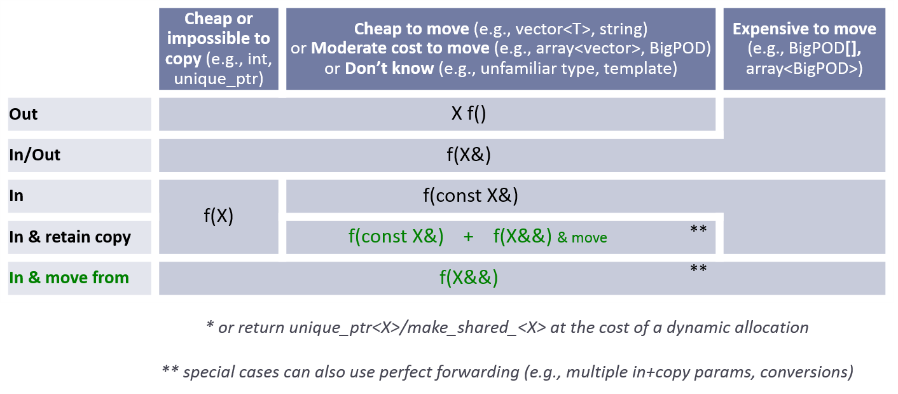

Benvenuti nelle C++ Core Guidelines (Italiano)!¶

«All’interno del C++ c’è un più piccolo, semplice e sicuro linguaggio, che lotta per uscire fuori». – Bjarne Stroustrup
Le C++ Core Guidelines costituiscono un lavoro di gruppo guidato da Bjarne Stroustrup, proprio come lo stesso linguaggio C++. Sono il risultato di molti anni-uomo di discussione e progettazione in diverse organizzazioni. Per come sono progettate incoraggiano una generale applicabilità ed un’ampia adozione ma si possono liberamente copiare e modificare per soddisfare le esigenze della propria organizzazione.
Per iniziare¶
Le stesse «guidelines» si trovano in CppCoreGuidelines. Il documento è in GH-flavored MarkDown. Viene intenzionalmente mantenuto semplice, principalmente in ASCII, per consentire un post-processing automatico come la traduzione e la riformattazione. I redattori ne mantengono una versione formattata per la lettura. Si noti che viene integrato manualmente e può essere leggermente più datato della versione nel branch principale. (NDT: La versione formattata in italiano è facilmente ottenibile con Pandoc. Cfr. Readme.md).
Le Linee-guida costituiscono un documento in continua evoluzione senza una rigida cadenza di «rilasci». Bjarne Stroustrup rivede periodicamente il documento incrementando il numero della versione nell’introduzione. I checkin che incrementano il numero della versione vengono taggati in git.
Molte delle linee-guida usano l’header unico della Guidelines Support Library. Un’implementazione è disponibile su GSL: Guidelines Support Library.
Background e scopo¶
Lo scopo delle linee-guida è quello di aiutare le persone ad usare il C++ moderno in modo efficace. Per «C++ moderno» si intende il C++11 e versioni successive. In altre parole, come vorreste che fosse il vostro codice tra 5 anni, potendo iniziare adesso? E tra 10 anni?
Le linee-guida si concentrano sulle questioni di livello relativamente più alto, come le interfacce, la gestione delle risorse, la gestione della memorie e la concorrenza. Queste regole riguardano l’applicazione dell’architettura e il design della libreria. Seguire le regole porterà ad un codice staticamente type-safe, senza leak [perdite] di risorse, e che intercetta molti più errori logici di programmazione di quanto avvenga nel normale codice oggi. E girerà velocemente – ci si può permettere di fare le cose nel modo giusto.
Ci si occupa un po” meno dei problemi di basso livello, come le convenzioni sui nomi e lo stile della indentazione. Tuttavia, niente di ciò che può aiutare il programmatore è fuori luogo.
Il gruppo iniziale di regole enfatizza la sicurezza (sotto varie forme) e la semplicità. Potrebbero essere fin troppo severe. Ci si aspetta di dover introdurre più eccezioni per venire meglio incontro alle esigenze del mondo reale. Altre regole sono necessarie.
Alcune delle regole risulteranno contrarie alle proprie aspettative e persino contrarie alla propria esperienza. Se non vi abbiamo convinto a modificare in alcun modo lo stile del vostro codice, abbiamo fallito! Provate a verificare o confutare le regole! In particolare, si vorrebbe davvero avere su alcune regole un sostegno con misure ed esempi migliori.
Alcune regole risulteranno ovvie o addirittura banali. Si ricordi che lo scopo di una linea-guida è quello di aiutare qualcuno che ha meno esperienza o che proviene da un diverso background o da un diverso linguaggio, a mettersi al passo.
Le regole sono progettate per essere supportate da uno strumento di analisi. Le violazioni alle regole verranno contrassegnate con riferimenti (o link) alla regola violata. Non ci aspettiamo che memorizziate tutte le regole senza aver prima provato a scrivere il codice.
Le regole sono pensate per essere introdotte gradualmente in un codice. Per questo c’è in programma la realizzazione di tool e si spera che anche altri lo facciano.
Contributi e LICENZA¶
I commenti e i suggerimenti per migliorare sono sempre benvenuti. Si prevede di modificare ed estendere questo documento man mano che migliora la nostra comprensione, il linguaggio o l’insieme delle librerie disponibili. Ulteriori dettagli si trovano su CONTRIBUTI e LICENZA.
Grazie alla DigitalOcean per ospitare il sito web della Standard C++ Foundation.
C++ Core Guidelines¶
11 Maggio 2024
Editori:
Herb Sutter Traduzione: Baldassarre Cesarano
Questo è un documento vivo in costante miglioramento. Se fosse stato un progetto open-source (software), starebbe alla release 0.8. La copia, l’uso, la modifica e la creazione di opere derivate da questo progetto sono concesse con una licenza simile a quella del MIT. Per contribuire a questo progetto si richiede l’accettazione di una «Licenza per Collaboratori» [Contributor License]. Per i dettagli, vedere il file LICENSE. Questo progetto è a disposizione degli «utenti amichevoli» per usarlo, copiarlo, modificarlo e ricavarne altri lavori, sperando in input costruttivi.
I commenti e i suggerimenti per migliorare sono sempre benvenuti. Si prevede di modificare ed estendere questo documento man mano che migliora la nostra comprensione, il linguaggio o l’insieme delle librerie disponibili. Nel commentare, si tenga presente l’introduzione che delinea i nostri obiettivi e l’approccio generale. L’elenco dei contributori si trova qui.
Problemi:
I gruppi di regole non sono stati totalmente controllati per quanto riguarda la completezza, la consistenza e l’obbligatorietà.
Tre punti interrogativi (???) contrassegnano la riconosciuta mancanza di informazioni
Le sezioni dei riferimenti [reference] sono aggiornate; molte fonti antecedenti al C++11 sono troppo vecchie.
Per un elenco più o meno aggiornato di cose da fare: To-do: Proto-regole non classificate
Si può leggere una spiegazione dello scopo e sulla struttura di questa Guida o semplicemente proseguire oltre:
Sezioni di supporto:
Si possono provare le regole per delle specifiche funzionalità del linguaggio:
assignment: tipi regolari – preferire l’inizializzazione – copia – spostamento – altre operazioni – default
class: dato – invariante – membri – helper – tipi concreti – cistruttori, =, e distruttori – gerarchia – operatoriconcetto: rules – nella programmazione generica – argomenti template – semanticaconstruttore: invariante – stabilire l’invariante – eccezioni
throw– default – non necessario –esplicito– delegante –virtualeclassederivata: quando usarla – come interfaccia – distruttori – copia – getter e setter – ereditarietà multipla – overloading – slicing –dynamic_castdistruttore: e costruttori – quando è necessario? – non deve fallire
eccezione: errori –
throw– solo per gli errori –noexcept– minimizzare itry– e se non ci fossero eccezioni?for: range-for e for – for e while – for-initializer – body vuoto – variabile del loop – tipo della variabile del loop ???funzione: nomenclatura – operazione singola – senza throw – argomenti – passaggio di argomenti – valori di ritorno multipli – puntatori – lambda
inline: piccole funzioni – negli headerinizializzazione: sempre – preferire
{}– lambda – inizializzatori membro di default – membri della classe – funzioni factoryespressione lambda: quando usarla
operatore: convenzionale – evitare la conversione degli operatori – e le lambda
public,private, eprotected: occultamento delle informazioni – consistenza –protectedstatic_assert: controllo in fase di compilazione – e concettistruct: per organizzare i dati – usare se non sono invarianti – senza membri privatitemplate: astrazione – contenitori – concettiunsigned: e signed – manipolazione dei bitvirtual: interfacce – nonvirtual– distruttore – mai fallire
Potete vedere le bozze dei progetti usati per esprimere le regole:
assertion: ???
error: ???
eccezione: garanzia dell’eccezione (???)
failure: ???
invariante: ???
leak: ???
libreria: ???
precondizione: ???
post-condizione: ???
risorsa: ???
Sommario¶
Questo documento è un insieme di linee-guida sul buon uso del C++. Lo scopo delle linee-guida è quello di aiutare le persone ad usare il C++ moderno in modo efficace. Per «C++ moderno» si intende l’uso efficace del C++ standard ISO (attualmente C++17, ma quasi tutte le raccomandazioni si applicano anche al C++17, C++14 e al C++11). In altre parole, come vorreste che fosse il vostro codice tra 5 anni, potendo iniziare adesso? E tra 10 anni?
Le linee-guida si concentrano sulle questioni di livello relativamente più alto, come le interfacce, la gestione delle risorse, la gestione della memoria e la concorrenza. Queste regole riguardano l’applicazione dell’architettura e il design della libreria. Seguire le regole porterà ad un codice staticamente type-safe, senza leak [perdite] di risorse, e che intercetta molti più errori logici di programmazione di quanto avvenga nel normale codice oggi. E girerà velocemente – ci si può permettere di fare le cose nel modo giusto.
Ci si occupa un po” meno dei problemi di basso livello, come le convenzioni sui nomi e lo stile della indentazione. Tuttavia, niente di ciò che può aiutare il programmatore è fuori luogo.
Il gruppo iniziale di regole enfatizza la sicurezza (sotto varie forme) e la semplicità. Potrebbero benissimo essere troppo severe. Ci si aspetta di dover introdurre più eccezioni per venire meglio incontro alle esigenze del mondo reale. Altre regole sono necessarie.
Alcune delle regole risulteranno contrarie alle proprie aspettative e persino contrarie alla propria esperienza. Se non vi abbiamo suggerito di modificare in alcun modo di cambiare lo stile del vostro codice, abbiamo fallito! Provate a verificare o confutare le regole! In particolare, si vorrebbe davvero avere su alcune regole un sostegno con misure ed esempi migliori.
Alcune regole risulteranno ovvie o addirittura banali. Si ricordi che lo scopo di una linea-guida è quello di aiutare qualcuno che ha meno esperienza o che proviene da un diverso background o da un diverso linguaggio, a mettersi al passo.
Molte delle regole sono progettate per essere supportate da un tool di analisi. Le violazioni alle regole verranno contrassegnate con riferimenti (o link) alla regola violata. Non ci aspettiamo che memorizziate tutte le regole senza aver prima provato a scrivere il codice. Un modo di vedere queste linee-guida è come a una specifica per dei tool, ma leggibile dagli umani.
Le regole sono pensate per essere introdotte gradualmente in un codice. Per questo c’è in programma la realizzazione di tool e si spera che anche altri lo facciano.
I commenti e i suggerimenti per migliorare sono sempre benvenuti. Si prevede di modificare ed estendere questo documento man mano che migliora la nostra comprensione, il linguaggio o l’insieme delle librerie disponibili.
In: Introduzione¶
Questa è una serie di linee-guida basilari per il C++ moderno (attualmente il C++20 e il C++17) che tengono conto sia dei possibili futuri miglioramenti che delle ISO Technical Specifications (TS). L’obiettivo è quello di aiutare i programmatori C++ a scrivere codice più semplice, più efficiente e più manutenibile.
Sommario dell’introduzione:
In.target: Chi sono i lettori?¶
Tutti i programmatori C++. Tra cui i programmatori che potrebbero prendere in considerazione il C.
In.aims: Obiettivi¶
Lo scopo delle linee-guida è quello di aiutare gli sviluppatori ad adottare il C++ moderno (attualmente il C++20 e C++17) e per ottenere uno stile più uniforme nel codice.
Non ci si illude di vedere effettivamente applicate ognuna di queste regole a qualsiasi codice. L’aggiornamento dei vecchi sistemi è difficile. Tuttavia, si crede che un programma che usi una regola sia meno soggetto ad errori e più manutenibile di uno che non lo faccia. Spesso, le regole portano anche ad uno sviluppo iniziale più veloce/facile. Per quanto si sa, queste regole conducono ad un codice che funziona altrettanto bene, se non meglio, di quello più vecchio, con tecniche più convenzionali; sono pensate per seguire il principio dello «zero-overhead» («quello che non si usa, non si paga» e «quando si usa bene un meccanismo di astrazione, si ottengono almeno le stesse buone prestazioni di quelle col codice scritto manualmente utilizzando i costrutti del linguaggio di livello più basso»). Si considerino queste regole ideali per il nuovo codice, un’opportunità da sfruttare quando si lavora su vecchio codice e si tenti di avvicinarsi il più possibile a tali ideali. Da ricordare:
In.0: Non farsi prendere dal panico!¶
Ci si prenda il tempo necessario per capire le implicazioni di una regola di una linea-guida per il proprio programma.
Queste linee-guida sono progettate secondo il principio del «sottoinsieme di un insieme» (Stroustrup05). Non definiscono semplicemente un sottoinsieme del C++ da usare (per affidabilità, prestazioni o altro). Esse, invece, raccomandano fermamente l’uso di alcune semplici «estensioni» (componenti della libreria) che rendono ridondanti le funzionalità più soggette ad errori del C++, in modo che possano essere vietate (nel nostro set di regole).
Le regole enfatizzano la sicurezza del tipo statico e la sicurezza delle risorse. Per questo motivo, enfatizzano le possibilità di controllo del range, per evitare la de-referenziazione nullptr, per evitare il dangling [penzolamento] dei puntatori, e l’uso sistematico delle eccezioni (tramite il RAII). In parte per questo, e in parte per minimizzare la confusione nel codice come fonte di errori, le regole enfatizzano anche la semplicità e il dover nascondere la complessità necessaria dietro interfacce ben definite.
Molte delle regole sono normative. Ci si trova a disagio con regole che dicono semplicemente «non fare questo!» senza dare un’alternativa. Una conseguenza di ciò è che alcune regole possono essere supportate solo dall’euristica, anziché da controlli precisi e meccanicamente verificabili. Altre regole esprimono principi generali. Per queste regole più generali, di quelle più dettagliate e specifiche, si fornisce un controllo parziale.
Queste linee-guida riguardano il nucleo [core] del C++ e il suo utilizzo. Ci si aspetta che le maggiori organizzazioni, le specifiche aree applicative e persino i grandi progetti avranno bisogno di altre regole, forse di altre restrizioni e di un ulteriore supporto della libreria. Per esempio, i programmatori [hard-real-time] solitamente non possono usare liberamente il [free store] (memoria dinamica) e sono limitati nella scelta delle librerie. Noi incoraggiamo lo sviluppo di regole più specifiche da aggiungere a queste «core guidelines». Costruite le piccole basi della vostra libreria ideale ed usatela, anziché abbassare il livello di programmazione al glorificato codice assembly.
Le regole sono progettate per consentirne una graduale adozione.
Alcune regole mirano ad aumentare le varie forme di sicurezza mentre altre tendono a ridurre la probabilità di incidenti, molte fanno entrambe le cose. Le linee-guida volte alla prevenzione di incidenti spesso vietano codice C++ perfettamente legale. Tuttavia, quando ci sono due modi per esprimere un’idea e uno si è mostrato una comune fonte di errori e l’altro no, proviamo a guidare i programmatori verso quest’ultima.
In.not: Non-obiettivi¶
Le regole non intendono essere minime o ortogonali. In particolare, le regole generali possono essere semplici, ma impossibili da imporre. Inoltre, spesso è difficile comprendere le implicazioni di una regola generale. Regole più specializzate sono spesso più facili da capire e da applicare, ma senza regole generali si formerebbe solo un lungo elenco di casi speciali. Si forniscono regole volte ad aiutare i principianti ma anche regole a supporto degli esperti. Alcune delle regole si possono completamente imporre, ma altre sono basate sull’euristica.
Queste regole non sono pensate per essere lette in sequenza, come un libro. Si possono consultare usando i link. Tuttavia, il loro uso principale previsto è quello di essere usate per i tool. Cioè, un tool cerca le violazioni per poi restituire i link alle regole violate. Le regole quindi forniscono ragioni, esempi di potenziali conseguenze della violazione e suggeriscono rimedi.
Queste linee-guida non intendono sostituire un tutorial C++. Se serve un tutorial per un certo livello di esperienza, si consultino i riferimenti.
Questa non è una guida su come convertire del vecchio codice C++ in un codice più moderno. Essa ha lo scopo di articolare in modo concreto le idee per il nuovo codice. Tuttavia, si veda la sezione sulla modernizzazione per alcuni possibili approcci alla modernizzazione/ringiovanimento/aggiornamento. È importante sottolineare che le regole supportano l’adozione graduale: in genere è impossibile convertire completamente una grande quantità di codice in una volta sola.
Queste linee guida non sono pensate per essere complete ed esatte in ogni dettaglio tecnico-linguistico. Per l’ultima parola sui problemi di definizione del linguaggio, comprese tutte le eccezioni alle regole generali e ogni funzionalità, si veda lo standard ISO del C++.
Le regole non sono intese per obbligare a scrivere in un sottoinsieme impoverito del C++. Esse sono enfaticamente non intese per definire, per esempio, un sottoinsieme simil-Java del C++. Non sono intese a definire un unico «vero linguaggio C++». Apprezziamo espressività e prestazioni senza compromessi.
Le regole non sono indipendenti dal valore. Hanno lo scopo di rendere il codice più semplice e più corretto/più sicuro della maggior parte del codice C++ esistente, senza perdita di prestazioni. Hanno lo scopo di inibire del codice C++ perfettamente valido ma correlato ad errori, complessità superflua o basse prestazioni.
Le regole non sono precise al punto in cui una persona (o una macchina) le possa seguire senza riflettere. Le parti che lo impongono cercano di farlo, ma preferiremmo lasciare una regola o una definizione un po” vaga ed aperta all’interpretazione anziché specificare qualcosa di preciso e sbagliato. A volte, la precisione arriva solo col tempo e l’esperienza. Il progetto non è (ancora) un formalismo matematico.
Le regole non sono perfette. Una regola può nuocere vietando qualcosa di utile in una determinata situazione. Una regola può nuocere non riuscendo a proibire qualcosa che apre la strada ad un errore grave in una determinata situazione. Una regola può causare molti danni essendo vaga, ambigua, inapplicabile o abilitando ogni soluzione a un problema. È impossibile soddisfare completamente il criterio del «non danneggiare». L’obiettivo, invece, è meno ambizioso: «Fai del tuo meglio per la maggior parte dei programmatori»; se non puoi vivere con una regola, contestala, ignorala, ma non diluirla fino a farle perdere di significato. Inoltre, suggerisci un miglioramento.
In.force: Imposizione¶
Le regole senza un’imposizione non sono gestibili per grandi basi di codice. L’imposizione di tutte le regole è possibile solo per un piccolo insieme di semplici regole o per una specifica comunità di utenti.
Ma vogliamo molte regole e vogliamo regole che tutti possano usare.
Ma persone diverse hanno esigenze diverse.
Ma alle persone non piace leggere molte regole.
Ma la gente non ricorda molte regole.
Quindi, abbiamo bisogno di una suddivisione per soddisfare le tante esigenze.
Ma una suddivisione arbitraria porta al caos.
Vogliamo linee-guida che aiutino molte persone, rendano il codice più uniforme e incoraggino fortemente le persone a modernizzare il loro codice. Vogliamo incoraggiare le migliori pratiche, anziché lasciare tutto alle scelte individuali e alle pressioni del management. L’ideale è usare tutte le regole; questo porta i maggiori benefici.
Questo aggiunge parecchi interrogativi. Cerchiamo di risolvere quelli che utilizzano i tool. Ogni regola ha una sezione Imposizione [Enforcement] che elenca le idee per imporla. L’imposizione si può ottenere con la revisione del codice, l’analisi statica, col compilatore o con dei controlli durante l’esecuzione. Ove possibile, preferiamo il controllo «meccanico» (gli umani sono lenti, inaccurati e si annoiano facilmente) e quello statico. I controlli a run-time vengono suggeriti solo raramente laddove non esiste un’alternativa; non si desidera introdurre codice extra distribuito. Se opportuno, etichettiamo una regola (nelle sezioni Imposizione) col nome di gruppi di regole correlate (dette «profili»). Una regola può far parte di più profili o di nessuno. Per cominciare, abbiamo alcuni profili corrispondenti ai bisogni comuni (desideri, ideali):
type: Nessuna violazione del tipo (reinterpretando una
Tcome unaUtramite i cast, le union o le vararg)bounds: Nessuna violazione dei limiti [bound] (accedere oltre il range di un array)
lifetime: Nessun leak (non riuscire ad eseguire un
deleteo eseguiredeletemultipli) e nessun accesso ad oggetti invalidi (de-referenziazione dinullptr, usando un riferimento dangling [penzolante]).
I profili sono intesi per essere utilizzati dai tool, ma servono anche come aiuto per il lettore umano. Non limitiamo il nostro commento nelle sezioni Imposizione alle cose che sappiamo come imporre; alcuni commenti sono semplici desideri che potrebbero ispirare qualche produttore di tool.
I tool che implementano queste regole devono rispettare la sintassi seguente per sopprimere esplicitamente una regola:
[[gsl::suppress("tag")]]
e facoltativamente con un messaggio (seguendo la solita sintassi degli attributi dello standard C++11):
[[gsl::suppress("tag", justification: "message")]]
dove
"tag"è una stringa letterale con il nome dell’ancora [anchor] dell’elemento in cui appare la regola di [Enforcement] (ad esempio, per C.134 è «Rh-public»), il nome di un gruppo di regole di profilo («type», «bounds» o «lifetime»), o una regola specifica in un profilo (type.4, o bounds.2). Qualsiasi testo che non rientri tra questi dovrebbe essere rigettato."message"è una stringa letterale
In.struct: La struttura di questo documento¶
Ogni regola (linea-guida, suggerimento) può avere diverse parti:
La regola stessa – p.es., nessun semplice
newUn numero di riferimento alla regola – p.es., C.7 (la regola 7 relativa alle classi). Poiché le sezioni principali non sono intrinsecamente ordinate, utilizziamo le lettere come prima parte del «numero» di riferimento della regola. Lasciamo dei salti nella numerazione per ridurre al minimo le «interruzioni» nell’aggiungere o rimuovere regole.
Motivi (ragioni, razionale, logica) – perché i programmatori hanno difficoltà a seguire regole che non capiscono
Esempi – perché le regole sono difficili da capire in astratto; può essere positivo o negativo
Alternative – per le regole del tipo «da non fare»
Eccezioni – preferiamo semplici regole generali. Tuttavia, molte regole si applicano ampiamente, ma non universalmente, quindi è necessario elencare le eccezioni
Imposizione – idee su come la regola potrebbe essere controllata «meccanicamente»
Si veda anche – riferimenti a regole correlate e/o ulteriori discussioni (in questo documento o altrove)
Note (commenti) – qualcosa che deve essere detto e che non rientra nelle altre classificazioni
Discussione – riferimenti a motivazioni più ampie e/o esempi posti al di fuori delle liste principali di regole
Alcune regole sono difficili da verificare meccanicamente, ma tutte soddisfano i criteri minimi con cui un esperto programmatore possa individuare molte violazioni senza troppi problemi. Si spera che i tool «meccanici» migliorino col tempo per approssimare quello che nota un programmatore esperto. Si assume, inoltre, che le regole vengano perfezionate nel tempo per renderle più precise e verificabili.
Una regola mira ad essere semplice, piuttosto che essere ben formulata menzionando ogni caso alternativo e speciale. Tali informazioni si trovano nei paragrafi Alternativa e nelle sezioni Discussione. Se non si capisce una regola o non la si condivide, se ne visiti la Discussione. Se si ritiene che manchi una discussione o sia incompleta, si inserisci un Issue [problema] spiegando le proprie motivazioni e possibilmente una corrispondente PR [Pull Request].
Gli esempi sono scritti per illustrare le regole.
Gli esempi non pretendono di avere una qualità da produzione né intendono sostituire i vari tutorial. Per esempio, molti esempi sono tecnico-linguistici ed usano nomi come
f,baseex.Cerchiamo di assicurarci che i «buoni» esempi seguano le «Core Guidelines».
I commenti che illustrano le regole spesso sarebbero inutili e/o distraenti in un «codice reale».
Si presuppone la conoscenza della libreria standard. Per esempio, usiamo il semplice
vectoranzichéstd::vector.
Questo non è un manuale del linguaggio. È pensato per essere utile, anziché completo, accuratissimo sui dettagli tecnici, o una guida al codice esistente. Le fonti di informazioni consigliate sono disponibili nei riferimenti.
In.sec: Sezioni principali¶
Sezioni di supporto:
Queste sezioni non sono ortogonali.
Ogni sezione (p.es., «P» per «Filosofia») e ogni sottosezione (p.es., «C.hier» per «Gerarchie di classi (OOP)») ha un’abbreviazione per facilitarne la ricerca ed il riferimento. Le abbreviazioni della sezione principale sono utilizzate anche nei numeri delle regole (p.es., «C.11» per «Rendere concreti i tipi regolari»).
P: Filosofia¶
Le regole in questa sezione sono molto generali.
Riepilogo delle regole sulla Filosofia:
P.4: Idealmente, un programma dovrebbe essere staticamente «type safe»
P.5: Preferire il controllo durante la compilazione a quello durante l’esecuzione
P.11: Incapsulare costrutti disordinati, anziché distribuirli nel codice
Le regole filosofiche non sono generalmente controllabili meccanicamente. Tuttavia, sono le singole regole che riflettono questi temi filosofici. Senza una base filosofica, le regole più concrete/specifiche/verificabili mancano di logica.
P.1: Esprimere le idee direttamente nel codice¶
Motivo¶
I compilatori non leggono i commenti (né i documenti dei progetti) e nemmeno molti programmatori (coerentemente). Ciò che è espresso nel codice ne ha definito la semantica e (in linea di principio) può essere verificato da compilatori e altri strumenti.
Esempio¶
class Date {
public:
Month month() const; // do
int month(); // don't
// ...
};
La prima dichiarazione di month è esplicita sul fatto che restituisce un Month e che non modifica lo stato dell’oggetto Date. La seconda versione lascia indovinare al lettore e si espone a più possibilità di bug non rilevati.
Esempio, cattivo¶
Questo loop è una versione ridotta di std::find:
void f(vector<string>& v)
{
string val;
cin >> val;
// ...
int index = -1; // bad, plus should use gsl::index
for (int i = 0; i < v.size(); ++i) {
if (v[i] == val) {
index = i;
break;
}
}
// ...
}
Esempio, buono¶
Un’espressione di intenti molto più chiara sarebbe:
void f(vector<string>& v)
{
string val;
cin >> val;
// ...
auto p = find(begin(v), end(v), val); // better
// ...
}
Una libreria ben progettata esprime l’intento (cosa si deve fare, piuttosto che come si sta facendo qualcosa) molto meglio dell’uso diretto delle funzionalità del linguaggio.
Un programmatore C++ dovrebbe conoscere le basi della libreria standard e usarla dove appropriato. Qualsiasi programmatore dovrebbe conoscere le basi delle librerie fondamentali del progetto su cui si sta lavorando e usarle in modo appropriato. Qualsiasi programmatore che utilizza queste linee-guida deve conoscere la guidelines support library [Libreria di Supporto delle linee-guida] e usarla in modo appropriato.
Esempio¶
change_speed(double s); // bad: what does s signify?
// ...
change_speed(2.3);
Un approccio migliore deve essere esplicito sul significato del double (nuova velocità o delta rispetto alla velocità precedente?) e all’unità di misura usata:
change_speed(Speed s); // better: the meaning of s is specified
// ...
change_speed(2.3); // error: no unit
change_speed(23_m / 10s); // meters per second
Avremmo potuto accettare un semplice double (senza unità di misura) come delta, ma sarebbe stato soggetto a errori. Se avessimo voluto sia la velocità assoluta che i delta, avremmo definito un tipo Delta.
Imposizione¶
In generale molto difficile.
usare
constin modo coerente (controllare se le funzioni membro modificano il loro oggetto; controllare se le funzioni modificano gli argomenti passati per puntatore o per riferimento)scarso uso dei cast (cast di sistema di tipo neutro)
rilevare il codice che imita la libreria standard (difficile)
P.2: Scrivere in C++ Standard ISO¶
Motivo¶
Questo è un insieme di linee-guida per la scrittura secondo il C++ Standard ISO.
Nota¶
Esistono ambienti in cui sono necessarie estensioni, ad esempio per accedere alle risorse di sistema. In questi casi, localizzare l’uso delle estensioni necessarie e controllarne l’uso con le Coding Guidelines non-core. Se possibile, creare interfacce che incapsulino le estensioni in modo che possano essere disattivate e compilate su sistemi che non supportano tali estensioni.
Le estensioni spesso non hanno una semantica rigorosamente definita. Anche le estensioni comuni o implementate da più compilatori potrebbero avere comportamenti leggermente diversi e un diverso comportamento del caso limite come diretta conseguenza del non avere una definizione standard rigorosa. Con un sufficiente uso di una di queste estensioni, ci si dovrà aspettare un impatto sulla portabilità.
Nota¶
L’uso di un C++ ISO valido non ne garantisce la portabilità (per non parlare della correttezza). Evitare la dipendenza dai comportamenti indefiniti (p.es., ordine di valutazione indefinito) ed essere consapevoli dei costrutti con significato definito dall’implementazione (p.es., sizeof(int)).
Nota¶
Esistono ambienti in cui sono necessarie restrizioni sull’uso del linguaggio C++ standard e o delle funzionalità di libreria, p.es., per evitare l’allocazione dinamica della memoria come richiesto dagli standard del software di controllo degli aerei. In questi casi, controllarne l”(ab)uso con un’estensione a queste «Coding Guidelines» personalizzate per lo specifico ambiente.
Imposizione¶
Utilizzare un compilatore C++ aggiornato (attualmente C++20 o C++17) con una serie di opzioni che non accettano le estensioni.
P.3: Esprimere le intenzioni¶
Motivo¶
A meno che non venga dichiarato l’intento di parte del codice (p.es., nei nomi o nei commenti), è impossibile stabilire se il codice fa quello che dovrebbe fare.
Esempio¶
gsl::index i = 0;
while (i < v.size()) {
// ... do something with v[i] ...
}
Lo scopo del «solo» ciclare sugli elementi di v qui non è espresso. I dettagli di implementazione di un indice sono esposti (quindi se ne può abusare), e i sopravvive allo scope del ciclo, che potrebbe o meno essere voluto. Il lettore non può capire solo da questo pezzo di codice.
Meglio:
for (const auto& x : v) { /* do something with the value of x */ }
Ora, non vi è alcuna menzione esplicita del meccanismo di iterazione e il ciclo opera su un riferimento const agli elementi in modo che non possano verificarsi modifiche accidentali. Se si desidera la modifica, si scrive così:
for (auto& x : v) { /* modify x */ }
Per ulteriori dettagli dell’istruzione fo, cfr. ES.71. Talvolta è meglio usare un algoritmo predefinito con nome significativo. Questo esempio usa il for_each per i Range TS perché esprime direttamente lo scopo:
for_each(v, [](int x) { /* do something with the value of x */ });
for_each(par, v, [](int x) { /* do something with the value of x */ });
L’ultima variante chiarisce che non si è interessati all’ordine con cui vengono gestiti gli elementi di v.
Un programmatore dovrebbe avere familiarità con
Qualunque libreria fondamentale si usi nel progetto corrente
Nota¶
Formula alternativa: dire cosa dovrebbe essere fatto, anziché solamente come lo si dovrebbe fare.
Nota¶
Alcuni costrutti del linguaggio esprimono le intenzioni meglio di altri.
Esempio¶
Se due int sono pensati per rappresentare le coordinate di un punto 2D, lo si dica:
draw_line(int, int, int, int); // obscure: (x1,y1,x2,y2)? (x,y,h,w)? ...?
// need to look up documentation to know
draw_line(Point, Point); // clearer
Imposizione¶
Cercare schemi comuni per i quali esistono alternative migliori
semplici cicli
forrispetto ai cicli range-forinterfacce
f(T*, int)rispetto a interfaccef(span<T>)variabili dei loop in uno scope troppo ampio
direttamente
newedeletefunzioni con molti parametri di tipi nativi
Vi è un ampio margine per l’intelligenza e una trasformazione semi-automatica del programma.
P.4: Idealmente, un programma dovrebbe essere staticamente type safe¶
Motivo¶
Idealmente, un programma dovrebbe essere completamente staticamente (durante la compilazione) type safe. Sfortunatamente, ciò non è possibile. Le aree problematiche sono:
union
cast
decadimento di array [array decay]
errori dei range
Conversioni con riduzione [narrowing conversions]
Nota¶
Queste aree sono fonte di gravi problemi (p.es., crash e violazioni della sicurezza). Cerchiamo di fornire tecniche alternative.
Imposizione¶
Possiamo vietare, limitare o rilevare le singole categorie di problemi separatamente, come richiesto e fattibile per i singoli programmi. Suggerire sempre un’alternativa. Per esempio:
unioni – usare
variant(in C++17)cast – minimizzarne l’uso; i template possono aiutare
array decay – usare
span(dalle GSL)errori range – usare
spanconversioni narrowing – minimizzarne l’uso utilizzando
narrowonarrow_cast(dalle GSL) dove sono necessarie
P.5: Preferire il controllo durante la compilazione a quello durante l’esecuzione¶
Motivo¶
Chiarezza del codice e prestazioni. Non è necessario scrivere «error handler» per gli errori rilevati durante la compilazione.
Esempio¶
// Int is an alias used for integers
int bits = 0; // don't: avoidable code
for (Int i = 1; i; i <<= 1)
++bits;
if (bits < 32)
cerr << "Int too small\n";
Questo esempio non riesce a fare ciò che sta cercando di fare (perché l’overflow è indefinito) e lo si dovrebbe sostituire con un semplice static_assert:
// Int is an alias used for integers
static_assert(sizeof(Int) >= 4); // do: compile-time check
O, meglio ancora, basta usare il sistema dei tipi e sostituire Int con int32_t.
Esempio¶
void read(int* p, int n); // read max n integers into *p
int a[100];
read(a, 1000); // bad, off the end
Meglio
void read(span<int> r); // read into the range of integers r
int a[100];
read(a); // better: let the compiler figure out the number of elements
Formula alternativa: Non rimandare al tempo dell’esecuzione ciò che si può fare bene in fase di compilazione.
Imposizione¶
Cercare gli argomenti puntatori.
Cercare i check a run-time per le violazioni di range.
P.6: Ciò che non può essere verificato in fase di compilazione dovrebbe essere verificabile in fase di esecuzione¶
Motivo¶
Lasciare errori difficili-da-rilevare in un programma espone a crash e risultati sbagliati.
Nota¶
Idealmente, si rilevano tutti gli errori (quelli che non sono errori logici del programmatore) in fase di compilazione o di esecuzione. È impossibile rilevare tutti gli errori in fase di compilazione e spesso non è conveniente rilevare tutti gli altri errori in fase di esecuzione. Tuttavia, si dovrebbe cercare di scrivere programmi che in linea di principio possano essere controllati, con sufficienti risorse (programmi di analisi, controlli a run-time, risorse-macchina, tempo).
Esempio, cattivo¶
// separately compiled, possibly dynamically loaded
extern void f(int* p);
void g(int n)
{
// bad: the number of elements is not passed to f()
f(new int[n]);
}
Qui, una parte cruciale delle informazioni (il numero degli elementi) è stato così accuratamente «oscurato» che l’analisi statica probabilmente non lo rileva e il controllo dinamico può risultare difficile quando f() è parte di un ABI [Application Binary Interface] che non fa «esaminare» questo puntatore. Si potrebbero includere informazioni utili nel [free store], ma richiederebbe modifiche globali e forse al compilatore. Quello che abbiamo qui è un progetto che rende molto difficile il rilevamento degli errori.
Esempio, cattivo¶
Ovviamente si può passare il numero di elementi insieme al puntatore:
// separately compiled, possibly dynamically loaded
extern void f2(int* p, int n);
void g2(int n)
{
f2(new int[n], m); // bad: a wrong number of elements can be passed to f()
}
Passare il numero di elementi come argomento è meglio (e molto più comune) che passare solo il puntatore e fare affidamento su una convenzione (non dichiarata) per conoscere o scoprire il numero di elementi. Tuttavia (come mostrato), un semplice errore di battitura può introdurre un grave errore. La connessione tra i due argomenti di f2() è convenzionale, anziché esplicita.
Inoltre, è implicito che f2() dovrebbe eseguire un delete del suo argomento (o il chiamante ha fatto un secondo errore?).
Esempio, cattivo¶
I puntatori di gestione della libreria standard non riescono a passare la dimensione quando puntano ad un oggetto:
// separately compiled, possibly dynamically loaded
// NB: this assumes the calling code is ABI-compatible, using a
// compatible C++ compiler and the same stdlib implementation
extern void f3(unique_ptr<int[]>, int n);
void g3(int n)
{
f3(make_unique<int[]>(n), m); // bad: pass ownership and size separately
}
Esempio¶
Si deve passare il puntatore e il numero di elementi come un unico oggetto:
extern void f4(vector<int>&); // separately compiled, possibly dynamically loaded
extern void f4(span<int>); // separately compiled, possibly dynamically loaded
// NB: this assumes the calling code is ABI-compatible, using a
// compatible C++ compiler and the same stdlib implementation
void g3(int n)
{
vector<int> v(n);
f4(v); // pass a reference, retain ownership
f4(span<int>{v}); // pass a view, retain ownership
}
Questo progetto porta il numero di elementi come parte integrata di un oggetto, quindi gli errori sono improbabili e il controllo dinamico (a run-time) è sempre possibile, se non sempre conveniente.
Esempio¶
Come possiamo trasferire sia la proprietà [ownership] che tutte le informazioni necessarie a validarne l’uso?
vector<int> f5(int n) // OK: move
{
vector<int> v(n);
// ... initialize v ...
return v;
}
unique_ptr<int[]> f6(int n) // bad: loses n
{
auto p = make_unique<int[]>(n);
// ... initialize *p ...
return p;
}
owner<int*> f7(int n) // bad: loses n and we might forget to delete
{
owner<int*> p = new int[n];
// ... initialize *p ...
return p;
}
Esempio¶
???
mostrare come dei possibili check sono evitati dalle interfacce che passano classi base polimorfiche, quando in effetti sanno di cosa hanno bisogno? O le stringhe come opzioni «free-style»
Imposizione¶
Segnalare interfacce di tipo (puntatore, conteggio) (ciò evidenzierà un sacco di esempi che non si possono aggiustare per una questione di compatibilità)
???
P.7: Rilevamento degli errori a run-time all’inizio¶
Motivo¶
Evitare i crash «misteriosi». Evitare errori che portano a risultati sbagliati (forse non riconosciuti).
Esempio¶
void increment1(int* p, int n) // bad: error-prone
{
for (int i = 0; i < n; ++i) ++p[i];
}
void use1(int m)
{
const int n = 10;
int a[n] = {};
// ...
increment1(a, m); // maybe typo, maybe m <= n is supposed
// but assume that m == 20
// ...
}
Qui abbiamo fatto un piccolo errore in use1 che porterà a dei dati corrotti o a un crash. L’interfaccia di tipo (puntatore, conteggio) lascia increment1() senza un modo realistico per potersi difendere da errori out-of-range. Se si potessero controllare gli indici per l’accesso oltre i limiti, allora l’errore non verrebbe scoperto finché non si accedesse a p[10]. Si potrebbe controllare in anticipo migliorando il codice:
void increment2(span<int> p)
{
for (int& x : p) ++x;
}
void use2(int m)
{
const int n = 10;
int a[n] = {};
// ...
increment2({a, m}); // maybe typo, maybe m <= n is supposed
// ...
}
Ora, m <= n si può verificare nel punto della chiamata (in anticipo) anziché dopo. Se fosse stato solo un errore di battitura intendendo usare n come limite, il codice si potrebbe ulteriormente semplificare (eliminando la possibilità di un errore):
void use3(int m)
{
const int n = 10;
int a[n] = {};
// ...
increment2(a); // the number of elements of a need not be repeated
// ...
}
Esempio, cattivo¶
Non controllare ripetutamente lo stesso valore. Non passare dati strutturati come stringhe:
Date read_date(istream& is); // read date from istream
Date extract_date(const string& s); // extract date from string
void user1(const string& date) // manipulate date
{
auto d = extract_date(date);
// ...
}
void user2()
{
Date d = read_date(cin);
// ...
user1(d.to_string());
// ...
}
La data viene validata due volte (dal costruttore Date) e passata come stringa di caratteri (dati non strutturati).
Esempio¶
L’eccesso di controlli può essere costoso. Ci sono casi in cui il controllo anticipato è inefficiente perché si potrebbe non aver mai bisogno del valore o se ne potrebbe aver bisogno solo di una parte che sia più facile da testare rispetto all’intero valore. Allo stesso modo, non aggiungere controlli di validità che cambiano il comportamento asintotico della propria interfaccia (p.es., non aggiungere un check O(n) ad un’interfaccia con una complessità media di O(1)).
class Jet { // Physics says: e * e < x * x + y * y + z * z
float x;
float y;
float z;
float e;
public:
Jet(float x, float y, float z, float e)
:x(x), y(y), z(z), e(e)
{
// Should I check here that the values are physically meaningful?
}
float m() const
{
// Should I handle the degenerate case here?
return sqrt(x * x + y * y + z * z - e * e);
}
???
};
La legge fisica per un jet (e * e < x * x + y * y + z * z) non è un’invariante a causa della possibilità di errori di misura.
???
Imposizione¶
Cercare puntatori ed array: Eseguire un preventivo controllo del range e non ripetutamente
Cercare le conversioni: Eliminare o segnare le conversioni [narrowing]
Cercare i valori non controllati provenienti dall’input
Cercare i dati strutturati (oggetti o classi con degli invarianti) che vengono convertiti in stringhe
???
P.8: Non perdere alcuna risorsa [leak]¶
Motivo¶
Anche una poco crescente richiesta di risorse, col tempo, ne esaurirà la disponibilità. Questo è particolarmente importante per i programmi che girano a lungo, ma è un elemento essenziale del comportamento responsabile della programmazione.
Esempio, cattivo¶
void f(char* name)
{
FILE* input = fopen(name, "r");
// ...
if (something) return; // bad: if something == true, a file handle is leaked
// ...
fclose(input);
}
Preferire il RAII:
void f(char* name)
{
ifstream input {name};
// ...
if (something) return; // OK: no leak
// ...
}
Si veda anche: La sezione Gestione delle risorse
Nota¶
Un leak è colloquialmente «qualsiasi cosa che non viene pulito». La classificazione più importante è «tutto ciò che non può più essere ripulito». Per esempio, allocare un oggetto sull’heap e poi perdere l’ultimo puntatore che punta a tale allocazione. Questa regola non dovrebbe essere presa come obbligatoria, perché tutte le allocazioni di oggetti di lunga durata devono essere restituite alla chiusura del programma. Per esempio, affidarsi al cleanup garantito dal sistema, come la chiusura del file o la deallocazione della memoria all’arresto del processo, può semplificare il codice. Tuttavia, fare affidamento su astrazioni che ripuliscono implicitamente può essere altrettanto semplice e spesso più sicuro.
Nota¶
Imporre il profilo di sicurezza a tutto il ciclo di vita elimina i leak. Se combinato con la sicurezza delle risorse fornita dal RAII, elimina la necessità di «garbage collection» (non generando garbage [immondizia]). Combinarlo con l’applicazione dei profili di tipo e bound ottenendo una completa sicurezza sui tipi e sulle risorse, garantita dai tool.
Imposizione¶
Cercare i puntatori: Classificarli in non-proprietari (il default) e proprietari [owner]. Laddove possibile, sostituire i proprietari con handle di risorse della libreria standard (come nell’esempio precedente). In alternativa, contrassegnare un proprietario come tale utilizzando
ownerdalla GSL.Cercare i
newe ideleteCercare le funzioni note di allocazione delle risorse che restituiscono puntatori semplici (come
fopen,mallocestrdup)
P.9: Non sprecare tempo o spazio¶
Motivo¶
Questo è il C++.
Nota¶
Il tempo e lo spazio spesi bene per raggiungere un obiettivo (p.es., rapidità nello sviluppo, sicurezza delle risorse, o semplificazione dei test) non vengono persi. «Un altro vantaggio della ricerca dell’efficienza è che il processo costringe a comprendere il problema in modo più approfondito». - Alex Stepanov
Esempio, cattivo¶
struct X {
char ch;
int i;
string s;
char ch2;
X& operator=(const X& a);
X(const X&);
};
X waste(const char* p)
{
if (!p) throw Nullptr_error{};
int n = strlen(p);
auto buf = new char[n];
if (!buf) throw Allocation_error{};
for (int i = 0; i < n; ++i) buf[i] = p[i];
// ... manipulate buffer ...
X x;
x.ch = 'a';
x.s = string(n); // give x.s space for *p
for (gsl::index i = 0; i < x.s.size(); ++i) x.s[i] = buf[i]; // copy buf into x.s
delete[] buf;
return x;
}
void driver()
{
X x = waste("Typical argument");
// ...
}
Sì, questa è una caricatura, ma abbiamo visto ognuno di questi errori in codice di produzione, e anche di peggio. Si noti che il layout di X garantisce la perdita di almeno 6 byte (e molto probabilmente di più). La definizione spuria delle operazioni di copia disabilita la semantica del move rallentando l’operazione di ritorno (si noti che il Return Value Optimization [Ottimizzazione del Valore di Ritorno], RVO, qui non è garantita). L’uso di new e delete per buf è ridondante; se c’è davvero bisogno di una stringa locale, si dovrebbe usare una string. Ci sono molti altri bug prestazionali e complicazioni gratuite.
Esempio, cattivo¶
void lower(zstring s)
{
for (int i = 0; i < strlen(s); ++i) s[i] = tolower(s[i]);
}
Questo è in effetti un esempio di un codice di produzione. Possiamo vedere che nelle nostre condizioni abbiamo i < strlen(s). Questa espressione verrà valutata su ogni iterazione del ciclo, il che significa che strlen deve scorrere la stringa in ogni ciclo per scoprirne la lunghezza. Mentre il contenuto della stringa cambia, si presume che tolower non ne influenzerà la lunghezza, quindi è meglio memorizzare nella cache la lunghezza all’esterno del ciclo e non sostenere il costo a ogni iterazione.
Nota¶
Un singolo esempio di spreco è raramente significativo e, laddove lo fosse, viene in genere facilmente eliminato da un esperto. Tuttavia, gli sprechi diffusi su tutto il codice possono diventare facilmente significativi e gli esperti non sono sempre disponibili come si vorrebbe. Lo scopo di questa regola (e le regole più specifiche che la supportano) è quello di eliminare la maggior parte degli sprechi sull’uso del C++ prima che avvengano. Successivamente, si possono esaminare gli sprechi relativi agli algoritmi e ai requisiti, ma questo va oltre lo scopo di queste linee-guida.
Imposizione¶
Molte regole più specifiche mirano agli obiettivi generali della semplicità e dell’eliminazione di sprechi.
Contrassegnare un valore di ritorno inutilizzato da una funzione postfix «definita dall’utente, non-di-default»
operator++ooperator--function. Preferire invece l’uso della forma prefissa. (Nota: «Definita dall’utente, non-di-default» ha lo scopo di ridurre la confusione. Rivedere questa imposizione se si rivela ancora confusa nella pratica).
P.10: Preferire dati immutabili ai dati mutabili¶
Motivo¶
È più facile ragionare sulle costanti che sulle variabili. Qualcosa di immutabile non può cambiare inaspettatamente. A volte l’immutabilità consente una migliore ottimizzazione Non si può avere un conflitto su una costante.
Vedere Con: Costanti e immutabilità
P.11: Incapsulare costrutti disordinati, anziché distribuirli nel codice¶
Motivo¶
Il codice disordinato ha maggiori probabilità di nascondere bug ed è più difficile da scrivere. Una buona interfaccia è più semplice e sicura da usare. Codice disordinato, e di basso livello, genera più codice.
Esempio¶
int sz = 100;
int* p = (int*) malloc(sizeof(int) * sz);
int count = 0;
// ...
for (;;) {
// ... read an int into x, exit loop if end of file is reached ...
// ... check that x is valid ...
if (count == sz)
p = (int*) realloc(p, sizeof(int) * sz * 2);
p[count++] = x;
// ...
}
Questo è di basso livello, prolisso e soggetto a errori. Per esempio, si «dimentica» di testare l’esaurimento della memoria. Invece, si potrebbe usare vector:
vector<int> v;
v.reserve(100);
// ...
for (int x; cin >> x; ) {
// ... check that x is valid ...
v.push_back(x);
}
Nota¶
Le librerie standard e la GSL sono esempi di questa filosofia. Ad esempio, invece di fare confusione con le matrici, le union, i cast, i problemi coi cicli di vita, gsl::owner, ecc., che sono necessari per implementare astrazioni chiave, come vector, span, lock_guard e future, si usano le librerie progettate ed implementate da gente con molto più tempo ed esperienza di quanto solitamente si ha. Allo stesso modo, possiamo e dobbiamo progettare e implementare librerie più specializzate, piuttosto che lasciare agli utenti (spesso a noi stessi) il compito di ottenere ripetutamente un buon codice di basso livello. Questa è una variante del principio del sottoinsieme di un insieme che sta alla base di queste linee-guida.
Imposizione¶
Cercare il «codice disordinato» come la gestione complessa di un puntatore e casting al di fuori dell’implementazione delle astrazioni.
P.12: Usare tool appropriati¶
Motivo¶
Ci sono molte cose che vengono fatte meglio «dalla macchina». I computer non si stancano né si annoiano a causa delle attività ripetitive. In genere abbiamo cose migliori da fare rispetto a svolgere ripetutamente attività di routine.
Esempio¶
Far girare un analizzatore statico per verificare che il codice segua le linee-guida che si desidera che seguano.
Nota¶
Cfr.
Esistono molti altri tipi di strumenti, come repository di sorgenti, tool per la compilazione, ecc., ma questi vanno oltre lo scopo di queste linee-guida.
Nota¶
Fare attenzione a non dipendere da catene di tool troppo elaborati o troppo specializzati. Potrebbero rendere il codice non-portabile.
P.13: Usare librerie di supporto appropriate¶
Motivo¶
L’uso di una libreria ben progettata, ben documentata e ben supportata consente di risparmiare tempo e fatica; tali qualità e documentazione sono probabilmente maggiori di quelle che si potrebbe fare se la maggior parte del tempo si dovesse impiegare in un’implementazione. Il costo (tempo, fatica, denaro, ecc.) di una libreria può essere suddiviso tra molti utenti. È più probabile che una libreria largamente utilizzata venga mantenuta aggiornata e trasferita su nuovi sistemi rispetto a una singola applicazione. La conoscenza di una biblioteca ampiamente utilizzata può far risparmiare tempo su altri/futuri progetti. Pertanto, se esiste una libreria adatta per il dominio dell’applicazione, utilizzarla.
Esempio¶
std::sort(begin(v), end(v), std::greater<>());
A meno che non si sia un esperto di algoritmi di ordinamento e si abbia un sacco di tempo, è più probabile che sia corretto e che funzioni più velocemente di qualsiasi cosa si scriva per un’applicazione specifica. È necessario un motivo per non utilizzare la libreria standard (o qualsiasi libreria di base utilizzata dall’applicazione) piuttosto che un motivo per utilizzarla.
Nota¶
Per default usare
Nota¶
Se non esiste una libreria ben progettata, ben documentata e ben supportata per un dominio importante, forse si dovrebbe progettarla e implementarla, per poi utilizzarla.
I: Interfacce¶
Un’interfaccia è un contratto tra due parti di un programma. Indica con precisione cosa ci si aspetta da un fornitore di un servizio e un utente per cui quel servizio è essenziale. Avere buone interfacce (di facile comprensione, che ne incoraggino un uso efficiente, non soggette a errori, col supporto di test, ecc.) è probabilmente il solo aspetto più importante dell’organizzazione del codice.
Riepilogo delle regole sulle interfacce:
I.9: Se un’interfaccia è un template, documentarne i parametri usando i concetti
I.10: Usare le eccezioni per segnalare un errore nell’eseguire un compito richiesto
I.11: Mai trasferire la proprietà con un semplice puntatore (
T*) o un riferimento (T&)I.12: Dichiarare un puntatore che non dev’essere null con
not_nullI.23: Mantenere basso il numero degli argomenti di una funzione
I.25: Preferire classi astratte vuote come interfacce alle gerarchie di classi
I.26: Se si vuole un cross-compiler ABI, si usi un sottoinsieme in stile C
I.27: Per una libreria ABI stabile, si consideri l’idioma Pimpl
Si veda anche:
I.1: Rendere esplicite le interfacce¶
Motivo¶
Correttezza. I presupposti non indicati in un’interfaccia sono facilmente trascurati e difficili da testare.
Esempio, cattivo¶
Il controllo del comportamento di una funzione attraverso una variabile globale (scope del namespace) (una modalità di chiamata) è implicita e potenzialmente confusa. Per esempio:
int round(double d)
{
return (round_up) ? ceil(d) : d; // don't: "invisible" dependency
}
Non sarà ovvio ad un chiamante che il significato di due chiamate a round(7.2) possa avere risultati diversi.
Eccezione¶
A volte si controllano i dettagli di un insieme di operazioni tramite una variabile d’ambiente, p.es. output normale anziché verboso o debug anziché ottimizzato. L’uso di un controllo-non-locale è potenzialmente confuso, ma regola solo i dettagli implementativi di una semantica che sarebbe altrimenti fissa.
Esempio, cattivo¶
Il reporting tramite variabili non locali (p.es., errno) viene facilmente ignorato. Per esempio:
// don't: no test of fprintf's return value
fprintf(connection, "logging: %d %d %d\n", x, y, s);
Cosa succede se la connessione si interrompe così che non si produca alcun output del log? Cfr. I.???.
Alternativa: Sollevare un’eccezione. Un’eccezione non può essere ignorata.
Formula alternativa: Evitare il passaggio di informazioni tramite un’interfaccia attraverso uno stato non-locale o implicito. Notare che le funzioni membro non-const passano le informazioni ad altre funzioni membro tramite lo stato del loro oggetto.
Formula alternativa: Un’interfaccia dovrebbe essere una funzione o un insieme di funzioni. Le funzioni possono essere funzioni template e gruppi di funzioni possono essere classi o classi template.
Imposizione¶
(Semplice) Una funzione non dovrebbe prendere decisioni sul flusso di controllo in base ai valori delle variabili dichiarate nello scope del namespace.
(Semplice) Una funzione non dovrebbe scrivere nelle variabili dichiarate nello scope del namespace
I.2: Evitare variabili globali non-const¶
Motivo¶
Le variabili globali non-const nascondono le dipendenze rendendole soggette a modifiche imprevedibili.
Esempio¶
struct Data {
// ... lots of stuff ...
} data; // non-const data
void compute() // don't
{
// ... use data ...
}
void output() // don't
{
// ... use data ...
}
Chi altri potrebbe modificare data?
Attenzione: L’inizializzazione degli oggetti globali non è completamente ordinata. Se si usa un oggetto globale, lo si inizializzi con una costante. Si noti che è possibile avere un’inizializzazione indefinita anche per oggetti const.
Eccezione¶
Un oggetto globale spesso è meglio di un singleton.
Nota¶
Le costanti globali sono utili.
Nota¶
La regola contro le variabili globali si applica anche alle variabili nello scope del namespace.
Alternativa: Se si usano dati globali (più in generale nello scope del namespace) per evitarne la copia, si prenda in considerazione il passare i dati come un oggetto per riferimento a const. Un’altra soluzione è quella di definire i dati come lo stato di alcuni oggetti e le operazioni come funzioni membro.
Warning: Attenzione ai conflitti sui dati: Se un thread può accedere a dati non-locali (o dati passati per riferimento) mentre un altro thread esegue il chiamato, si può avere un conflitto. Ogni puntatore o riferimento a dati mutabili è un potenziale conflitto.
L’uso di puntatori o riferimenti globali per accedere e modificare i dati non-costanti e, in caso contrario, non-globali, non è un’alternativa migliore alle variabili globali non-costanti poiché ciò non risolve il problema delle dipendenze nascoste o delle potenziali condizioni di conflitti dei dati.
Nota¶
Non è possibile avere una condizione di conflitto su dati immutabili.
Riferimenti: Si vedano le regole per chiamate a funzioni.
Nota¶
La regola è «evitare», non «non usare». Naturalmente ci saranno (rare) eccezioni, come cin, cout e cerr.
Imposizione¶
(Semplice) Riportare tutte le variabili non-const dichiarate nello scope del namespace e i puntatori/riferimenti globali a dati non-const.
I.3: Evitare i singleton¶
Motivo¶
I singleton sono fondamentalmente complicati oggetti globali sotto mentite spoglie.
Esempio¶
class Singleton {
// ... lots of stuff to ensure that only one Singleton object is created,
// that it is initialized properly, etc.
};
Esistono molte varianti dell’idea di singleton. Questo è parte del problema.
Nota¶
Se non si desidera modificare un oggetto globale, dichiararlo const o constexpr.
Eccezione¶
È possibile utilizzare il più semplice «singleton» (così semplice che spesso non viene considerato un singleton) per ottenerne l’inizializzazione al primo utilizzo, se presente:
X& myX()
{
static X my_x {3};
return my_x;
}
Questa è una delle soluzioni più efficaci ai problemi relativi all’ordine di inizializzazione. In un ambiente multi-thread, l’inizializzazione dell’oggetto statico non introduce un conflitto (a meno che non si acceda con noncuranza a un oggetto shared dal suo costruttore).
Si noti che l’inizializzazione di uno static locale non implica una condizione di conflitto. Tuttavia, se la distruzione di X implica un’operazione che dev’essere sincronizzata, si deve usare una soluzione meno semplice. Per esempio:
X& myX()
{
static auto p = new X {3};
return *p; // potential leak
}
Ora qualcuno deve eseguire il delete di quest’oggetto quell’oggetto in modo opportunamente sicuro per essere thread-safe. Questo è soggetto a errori, quindi questa tecnica non va usata a meno che
myXstia in un codice multi-threaded,che l’oggetto
Xdebba essere distrutto (p.es., perché rilascia una risorsa), eil codice del distruttore di
Xdeve essere sincronizzato.
Se, come molti fanno, si definisce un singleton come una classe per cui viene creato un solo oggetto, funzioni come myX non sono dei singleton, e questa utile tecnica non fa eccezione alla regola no-singleton.
Imposizione¶
In generale molto difficile.
Cercare le classi con
singletonnel nome.Cercare classi per le quali viene creato un solo oggetto (contando gli oggetti o esaminando i costruttori).
Se una classe X ha una funzione statica pubblica che contiene una funzione statica locale del tipo X della classe e restituisce un puntatore o un riferimento ad essa, vietarlo.
I.4: Creare interfacce precisamente e fortemente tipizzate¶
Motivo¶
I tipi costituiscono la più semplice e ottimale documentazione, migliorano la leggibilità grazie al loro significato ben definito e vengono controllati al momento della compilazione. Inoltre, il codice tipizzato con precisione viene spesso meglio ottimizzato.
Esempio, da non fare¶
Si consideri:
void pass(void* data); // weak and under qualified type void* is suspicious
I chiamanti non sono sicuri di quali tipi siano ammessi e se i dati possano essere mutati come const se non specificato. Si noti che tutti i tipi di puntatori vengono convertiti implicitamente in void*, quindi è facile per i chiamanti fornire questo valore.
Il chiamato deve eseguire un static_cast dei dati ad un tipo non verificato per usarlo. Questo è soggetto a errori ed è prolisso.
Utilizzare solo const void* per passare i dati in progetti che sono indescrivibili in C++. Si consideri invece l’uso di un variant o un puntatore alla base.
Alternativa: Spesso, un parametro template può eliminare il void* trasformandolo in un T* o in un T&. Per il codice generico questi T possono essere parametri di template generali o vincolati al «concetto».
Esempio, cattivo¶
Si consideri:
draw_rect(100, 200, 100, 500); // what do the numbers specify?
draw_rect(p.x, p.y, 10, 20); // what units are 10 and 20 in?
È chiaro che il chiamante sta descrivendo un rettangolo, ma non è chiaro a quali parti si riferisca. Inoltre, un int può rappresentare forme arbitrarie di informazioni, compresi i valori di molte unità, quindi dobbiamo indovinare il significato dei quattro int. Molto probabilmente, i primi due sono una coppia di coordinate x,y ma cosa rappresentano gli ultimi due?
Commenti e nomi di parametri possono essere d’aiuto, ma si può essere espliciti:
void draw_rectangle(Point top_left, Point bottom_right);
void draw_rectangle(Point top_left, Size height_width);
draw_rectangle(p, Point{10, 20}); // two corners
draw_rectangle(p, Size{10, 20}); // one corner and a (height, width) pair
Ovviamente, non si possono rilevare tutti gli errori attraverso il sistema dei tipi statici (p.es., il fatto che un primo argomento sia considerato un punto in alto a sinistra è lasciato alla convenzione (nomenclatura e commenti)).
Esempio, cattivo¶
Si consideri:
set_settings(true, false, 42); // what do the numbers specify?
I tipi dei parametri e i loro valori non comunicano quali impostazioni vengono specificate o cosa significano quei valori.
Questo progetto è più esplicito, sicuro e leggibile:
alarm_settings s{};
s.enabled = true;
s.displayMode = alarm_settings::mode::spinning_light;
s.frequency = alarm_settings::every_10_seconds;
set_settings(s);
Nel caso di un insieme di valori booleani prendere in considerazione l’uso di un flag enum; un costrutto (pattern) che esprima un insieme di valori booleani.
enable_lamp_options(lamp_option::on | lamp_option::animate_state_transitions);
Esempio, cattivo¶
Nel seguente esempio, dall’interfaccia non è chiaro cosa significhi time_to_blink: Secondi? Millisecondi?
void blink_led(int time_to_blink) // bad -- the unit is ambiguous
{
// ...
// do something with time_to_blink
// ...
}
void use()
{
blink_led(2);
}
Esempio, buono¶
std::chrono::duration i tipi aiutano a rendere esplicita l’unità di durata del tempo.
void blink_led(milliseconds time_to_blink) // good -- the unit is explicit
{
// ...
// do something with time_to_blink
// ...
}
void use()
{
blink_led(1500ms);
}
La funzione può anche essere scritta in modo tale da accettare qualsiasi unità di durata.
template<class rep, class period>
void blink_led(duration<rep, period> time_to_blink) // good -- accepts any unit
{
// assuming that millisecond is the smallest relevant unit
auto milliseconds_to_blink = duration_cast<milliseconds>(time_to_blink);
// ...
// do something with milliseconds_to_blink
// ...
}
void use()
{
blink_led(2s);
blink_led(1500ms);
}
Imposizione¶
(Semplice) Segnalare l’uso di
void*come parametro o tipo di ritorno.(Semplice) Segnalare l’uso di più di un parametro
bool.(Difficile da fare bene) Cercare le funzioni che usano troppi argomenti di tipo primitivo.
I.5: Precondizioni dello stato (se c’è)¶
Motivo¶
Gli argomenti hanno un significato che potrebbe limitarne l’uso corretto nel chiamato.
Esempio¶
Si consideri:
double sqrt(double x);
Qui x dev’essere non-negativo. Il sistema dei tipi non può esprimerlo (facilmente e naturalmente), quindi si devono usare altri mezzi. Per esempio:
double sqrt(double x); // x must be non-negative
Alcune precondizioni possono essere espresse come asserzioni. Per esempio:
double sqrt(double x) { Expects(x >= 0); /* ... */ }
Idealmente, quell”Expects(x >= 0) dovrebbe far parte dell’interfaccia di sqrt() ma ciò non si fa facilmente. Per ora, lo si inserisce nella definizione (corpo della funzione).
Riferimenti: Expects() è descritto nella GSL.
Nota¶
Preferire una specifica formale dei requisiti, come Expects(p);. Se ciò non è possibile, utilizzare il testo inglese nei commenti, ad esempio // the sequence [p:q) is ordered using <.
Nota¶
La maggior parte delle funzioni membro ha come precondizione alcune invarianti della classe. Tale invariante è stabilito da un costruttore e deve essere ristabilito all’uscita da ogni funzione membro chiamata dall’esterno della classe. Non è necessario menzionarlo per ciascuna funzione membro.
Imposizione¶
(Non imponibile)
Si veda anche: Le regole per il passaggio dei puntatori. ???
I.6: Preferire Expects() per esprimere le precondizioni¶
Motivo¶
Per chiarire che la condizione è una precondizione e per abilitare l’uso del tool.
Esempio¶
int area(int height, int width)
{
Expects(height > 0 && width > 0); // good
if (height <= 0 || width <= 0) my_error(); // obscure
// ...
}
Nota¶
Le precondizioni si possono stabilire in molti modi, inclusi i commenti, istruzioni if e assert(). Questo può rendere arduo distinguerle dal normale codice, difficile da aggiornarle, difficile da gestirle con tool, e potrebbero avere la semantica sbagliata (si vuol sempre abortire in debug e mai controllare durante l’esecuzione in produzione?).
Nota¶
Le precondizioni dovrebbero far parte dell’interfaccia anziché far parte dell’implementazione, ma non c’è ancora il supporto del linguaggio per farlo. Quando sarà disponibile il supporto del linguaggio (p.es., si veda contract proposal) si adotterà la versione standard delle precondizioni, delle postcondizioni e delle asserzioni.
Nota¶
Expects() si può usare anche per controllare una condizione in mezzo ad un algoritmo.
Nota¶
No, l’uso di unsigned non è un buon modo per bypassare il problema per assicurarsi che il valore sia non-negativo.
Imposizione¶
(Non imponibile) Trovare i diversi modi con cui asserire le precondizioni non è fattibile. Attenzione a quelli facilmente identificabili (assert()) ha un valore discutibile in assenza del supporto del linguaggio.
I.7: Postcondizioni dello stato¶
Motivo¶
Per rilevare incomprensioni sul risultato e forse catturare implementazioni errate.
Esempio, cattivo¶
Si consideri:
int area(int height, int width) { return height * width; } // bad
Qui, abbiamo (incautamente) escluso la specifica della precondizione, quindi non è esplicito che altezza e larghezza debbano essere positive. Abbiamo anche tralasciato la specifica della postcondizione, quindi non è ovvio che l’algoritmo (height * width) sia sbagliato per le aree più grandi dell’intero più grande. Può capitare un overflow. Si consideri di usare:
int area(int height, int width)
{
auto res = height * width;
Ensures(res > 0);
return res;
}
Esempio, cattivo¶
Si prenda in considerazione un famoso bug di sicurezza:
void f() // problematic
{
char buffer[MAX];
// ...
memset(buffer, 0, sizeof(buffer));
}
Non è stata dichiarata alcuna postcondizione che il buffer dev’essere ripulito e l’ottimizzatore ha eliminato le apparentemente ridondanti chiamate a memset():
void f() // better
{
char buffer[MAX];
// ...
memset(buffer, 0, sizeof(buffer));
Ensures(buffer[0] == 0);
}
Nota¶
Le postcondizioni sono spesso dichiarate in modo informale in un commento che indica lo scopo di una funzione; si può usare Ensures() per renderlo più sistematico, visibile e verificabile.
Nota¶
Le postcondizioni sono particolarmente importanti quando si riferiscono a qualcosa che non si riflette direttamente in un risultato restituito.
Esempio¶
Si consideri una funzione che gestisce un Record, con un mutex per evitare conflitti:
mutex m;
void manipulate(Record& r) // don't
{
m.lock();
// ... no m.unlock() ...
}
Qui abbiamo «dimenticato» di dichiarare che il mutex dovrebbe essere rilasciato, quindi non sappiamo se il fallimento per assicurare il rilascio del mutex fosse un bug o voluto. Il dichiarare la postcondizione lo avrebbe chiarito:
void manipulate(Record& r) // postcondition: m is unlocked upon exit
{
m.lock();
// ... no m.unlock() ...
}
Il bug ora è ovvio (ma solo ad un umano che legga i commenti).
Meglio ancora, usare il RAII per assicurarsi che la postcondizione («il lock dev’essere rilasciato») sia scolpita nel codice:
void manipulate(Record& r) // best
{
lock_guard<mutex> _ {m};
// ...
}
Nota¶
Idealmente, le postcondizioni sono indicate nell’interfaccia/dichiarazione in modo che gli utenti possano facilmente vederle. Nell’interfaccia è possibile specificare solo le postcondizioni relative agli utenti. Le postcondizioni relative solo allo stato interno, appartengono alla definizione/implementazione.
Imposizione¶
(Non imponibile) Questa è una linea-guida filosofica che è impossibile da controllare direttamente nel caso generale. Controlli specifici al dominio (come i controlli per la ritenzione del lock) esistono in molti tool.
I.8: Preferire Ensures() per esprimere le postcondizioni¶
Motivo¶
Per chiarire che la condizione è una postcondizione e per consentire l’uso di tool.
Esempio¶
void f()
{
char buffer[MAX];
// ...
memset(buffer, 0, MAX);
Ensures(buffer[0] == 0);
}
Nota¶
Le postcondizioni possono essere dichiarate in molti modi, inclusi i commenti, istruzioni if e assert(). Questo può rendere arduo distinguerle dal normale codice, difficile da aggiornarle, difficile da gestirle con tool e potrebbero avere la semantica sbagliata.
Alternativa: Le post-condizioni di tipo «questa risorsa dev’essere rilasciata» si esprimono meglio col RAII.
Nota¶
Idealmente, questo Ensures dovrebbe far parte dell’interfaccia, ma ciò non è facile da fare. Per ora, lo si inserisce nella definizione (corpo della funzione). Quando sarà disponibile il supporto del linguaggio (p.es., si veda contract proposal) si adotterà la versione standard delle precondizioni, delle postcondizioni e delle asserzioni.
Imposizione¶
(Non imponibile) Trovare i diversi modi con cui asserire le postcondizioni non è fattibile. Attenzione a quelli facilmente identificabili (assert()) ha un valore discutibile in assenza del supporto del linguaggio.
I.9: Se un’interfaccia è un template, documentarne i parametri usando i concetti¶
Motivo¶
Rendere l’interfaccia esattamente specificata e controllabile durante la compilazione in un (non molto distante) futuro.
Esempio¶
Usare lo stile C++20 della specifica dei requisiti. Per esempio:
template<typename Iter, typename Val>
requires input_iterator<Iter> && equality_comparable_with<iter_value_t<Iter>, Val>
Iter find(Iter first, Iter last, Val v)
{
// ...
}
Si veda anche: Programmazione generica concetti.
Imposizione¶
Viene emesso un warning se un parametro template non-variadic non è vincolato [constrained] da un «concept» (nella sua dichiarazione o menzionato in una clausola requires.
I.10: Usare le eccezioni per segnalare un errore nell’eseguire un compito richiesto¶
Motivo¶
Non dovrebbe essere possibile ignorare un errore perché ciò potrebbe lasciare il sistema o una elaborazione in uno stato indefinito (o imprevisto). Questa è una delle principali fonti di errori.
Esempio¶
int printf(const char* ...); // bad: return negative number if output fails
template<class F, class ...Args>
// good: throw system_error if unable to start the new thread
explicit thread(F&& f, Args&&... args);
Nota¶
Che cos’è un errore?
Un errore indica che la funzione non può raggiungere lo scopo dichiarato (incluse l’instaurazione delle postcondizioni). Chiamare del codice che ignora un errore può portare a risultati errati o a uno stato indefinito del sistema. Ad esempio, non essere in grado di connettersi a un server remoto non è di per sé un errore: il server può rifiutare una connessione per tutta una serie di motivi, quindi la cosa naturale è quella di restituire un risultato che il chiamante dovrebbe sempre controllare. Tuttavia, se il non riuscire a stabilire una connessione viene considerato un errore, allora tale errore dovrebbe generare un’eccezione.
Eccezione¶
Molte funzioni di interfacce (p.es., gli handler dei signal di UNIX) usano codici di errore (p.es., errno) per segnalare quali sono realmente i codici dello stato, piuttosto che degli errori. Se non si ha una buona alternativa all’uso di questi, allora il chiamarli non viola la regola.
Alternativa¶
Se non si possono usare le eccezioni (p.es., perché il proprio codice è pieno di puntatori vecchio stile o perché ci sono seri vincoli di real-time), si considera l’uso di uno stile che restituisca una coppia di valori:
int val;
int error_code;
tie(val, error_code) = do_something();
if (error_code) {
// ... handle the error or exit ...
}
// ... use val ...
Questo stile sfortunatamente porta a variabili non inizializzate. A partire da C++17 si può usare la funzionalità delle «structured bindings» per inizializzare le variabili direttamente dai valori di ritorno:
auto [val, error_code] = do_something();
if (error_code) {
// ... handle the error or exit ...
}
// ... use val ...
Nota¶
Non consideriamo le «prestazioni» un motivo valido per non usare le eccezioni.
Spesso, il controllo e la gestione esplicita degli errori consumano tanto tempo e spazio quanto la gestione delle eccezioni.
Spesso, un codice più pulito produce migliori prestazioni con le eccezioni (semplificando la tracciabilità dei percorsi attraverso il programma e la loro ottimizzazione).
Una buona regola per le prestazioni del codice critico è quella di spostare il controllo all’esterno della parte critica del codice.
Alla lunga, un codice più regolare si ottimizza meglio.
Misurare sempre e accuratamente prima di lamentarsi delle prestazioni.
Si veda anche: I.5 e I.7 per riportare violazioni di pre-condizione e post-condizione.
Imposizione¶
(Non imponibile) Questa è una linea-guida filosofica che è impossibile da controllare direttamente.
Cercare
errno.
I.11: Mai trasferire la proprietà con un semplice puntatore (T*) o un riferimento (T&)¶
Motivo¶
In caso di dubbi sul fatto che sia il chiamante o il chiamato a possedere un oggetto, si possono avere dei leak o una prematura distruzione.
Esempio¶
Si consideri:
X* compute(args) // don't
{
X* res = new X{};
// ...
return res;
}
Chi esegue il delete dell”X restituito? Il problema sarebbe più difficile da individuare se compute restituisse un riferimento. Si valuti di restituire il risultato per valore (si usa la semantica move se il risultato e grande):
vector<double> compute(args) // good
{
vector<double> res(10000);
// ...
return res;
}
Alternativa: Passaggio della proprietà usando uno «smart pointer», come un unique_ptr (per l’ownership esclusiva) e shared_ptr (per una proprietà condivisa). Tuttavia, è meno elegante e spesso meno efficiente rispetto al restituire l’oggetto stesso, quindi usare gli smart pointer solo se è necessaria la semantica del riferimento.
Alternativa: Talvolta il codice pre-esistente non si può modificare a causa dei requisiti di compatibilità ABI o per mancanza di risorse. In tal caso, contrassegnare i puntatori proprietari utilizzando owner dalla guidelines support library:
owner<X*> compute(args) // It is now clear that ownership is transferred
{
owner<X*> res = new X{};
// ...
return res;
}
Questo dice ai tool di analisi che res è un owner [proprietario]. Cioè, il suo valore deve subire un delete o dev’essere trasferito ad un altro owner, come viene fatto qui dal return.
owner viene utilizzato in modo simile nell’implementazione degli handle delle risorse.
Nota¶
Si presume che ogni oggetto passato come semplice puntatore (o iteratore) sia proprietà del chiamante, in modo che il suo ciclo di vita sia gestito dal chiamante. In altri termini: le API che trasferiscono la proprietà sono relativamente rare rispetto alle API che passano puntatori, quindi il default è «nessun trasferimento della proprietà».
Si veda anche: Passaggio di argomenti, uso di argomenti smart pointer e valore di ritorno.
Imposizione¶
(Semplice) Un warning su un
deletedi un puntatore semplice che non sia unowner<T>. Suggeriamo l’uso dell’handle delle risorse della libreria standard o l’uso diowner<T>.(Semplice) Un warning o in caso di errore del
reseto l’esplicitodeletedi un puntatoreownersu ogni percorso del codice.(Semplice) Un warning se il valore di ritorno di un
newo il valore di ritornoownerdi una chiamata a una funzione viene assegnato ad un puntatore o ad un riferimento non-owner.
I.12: Dichiarare un puntatore che non dev’essere null con not_null¶
Motivo¶
Per evitare la de-referenziazione degli errori nullptr. Per migliorare le prestazioni evitando controlli ridondanti per nullptr.
Esempio¶
int length(const char* p); // it is not clear whether length(nullptr) is valid
length(nullptr); // OK?
int length(not_null<const char*> p); // better: we can assume that p cannot be nullptr
int length(const char* p); // we must assume that p can be nullptr
Dichiarando l’intento nel sorgente, gli implementatori e i tool possono eseguire una diagnostica migliore, come la ricerca di alcune classi di errore con l’analisi statica ed eseguire delle ottimizzazioni quali la rimozione di branch e test nulli.
Nota¶
not_null è definito nella guidelines support library.
Nota¶
L’assunzione che il puntatore a char punti ad una stringa C-style (una stringa di caratteri terminata con zero) era ancora implicita ed una potenziale sorgente di confusione e di errori. Usare czstring preferendola a const char*.
// we can assume that p cannot be nullptr
// we can assume that p points to a zero-terminated array of characters
int length(not_null<czstring> p);
Nota: length() è, ovviamente, uno std::strlen() in incognito.
Imposizione¶
(Semplice) ((Foundation)) Se una funzione controlla se un parametro puntatore è
nullptrprima di accedervi, su tutti i percorsi del flusso di controllo, allora si emette un warning sul fatto che dovrebbe essere dichiaratonot_null.(Complesso) Se una funzione con puntatore come valore di ritorno si accerta che non sia
nullptrsu tutti i path di ritorno, allora si emette un warning sul fatto che il tipo restituito si dovrebbe dichiararenot_null.
I.13: Non passare un array come singolo puntatore¶
Motivo¶
Le interfacce di tipo (puntatore, dimensione) sono soggette ad errori. Inoltre, un semplice puntatore (ad un array) deve fare affidamento su una convenzione per consentire al chiamato di determinarne la dimensione.
Esempio¶
Si consideri:
void copy_n(const T* p, T* q, int n); // copy from [p:p+n) to [q:q+n)
Cosa succede se sono presenti meno di n elementi nell’array puntato da q? Allora, probabilmente si sovrascrive della memoria esterna. Cosa succede se sono presenti meno di n elementi nell’array puntato da p? Allora, probabilmente, si leggerà da una memoria esterna. O è un comportamento indefinito o un bug potenzialmente molto pericoloso.
Alternativa¶
Si consideri l’uso di uno span esplicito:
void copy(span<const T> r, span<T> r2); // copy r to r2
Esempio, cattivo¶
Si consideri:
void draw(Shape* p, int n); // poor interface; poor code
Circle arr[10];
// ...
draw(arr, 10);
Passare 10 per l’argomento n potrebbe risultare un errore: la convenzione più comune è assumere [0:n) ma non è scritto da nessuna parte. Peggio ancora è che la chiamata a draw() non viene compilata affatto: c’è stata una conversione implicita da un array a un puntatore (array decay) e poi un’altra conversione implicita da Circle a Shape. Non è possibile che draw() possa iterare in sicurezza per tutto quell’array: non ha modo di conoscere la dimensione degli elementi.
Alternativa: Utilizzare una classe di supporto per garantire che il numero di elementi sia corretto e per prevenire conversioni implicite pericolose. Per esempio:
void draw2(span<Circle>);
Circle arr[10];
// ...
draw2(span<Circle>(arr)); // deduce the number of elements
draw2(arr); // deduce the element type and array size
void draw3(span<Shape>);
draw3(arr); // error: cannot convert Circle[10] to span<Shape>
Questo draw2() passa la stessa quantità di informazioni a draw(), ma rende esplicito il fatto che si supponga essere un range di Circle. Cfr. ???.
Eccezione¶
Usare zstring e czstring per rappresentare stringhe C-style e zero-terminated. Ma quando lo si fa, si usa std::string_view o span<char> della GSL per evitare errori di range.
Imposizione¶
(Semplice) ((Bounds)) Segnalare un warning per ogni espressione che si baserebbe sulla conversione implicita da un tipo di array ad un tipo di puntatore. Consentire delle eccezioni per tipi di puntatori zstring/czstring.
(Semplice) ((Bounds)) Segnalare un warning per ogni operazione aritmetica o espressione di tipo puntatore che risulti nel valore di un tipo puntatore. Consentire delle eccezioni per tipi di puntatori zstring/czstring.
I.22: Evitare complesse inizializzazioni di oggetti globali¶
Motivo¶
Una inizializzazione complessa può portare ad un ordine indefinito di esecuzione.
Esempio¶
// file1.c
extern const X x;
const Y y = f(x); // read x; write y
// file2.c
extern const Y y;
const X x = g(y); // read y; write x
Poiché x e y stanno in unità di traduzione diverse, l’ordine delle chiamate a f() e g() non è definito; si accederà ad un const non inizializzato. Ciò dimostra che il problema dell’ordine di inizializzazione per gli oggetti globali (scope del namespace) non è limitato alle variabili globali.
Nota¶
I problemi sull’ordine di inizializzazione diventano particolarmente difficili da gestire nel codice concorrente. Di solito è meglio evitare del tutto gli oggetti globali (scope del namespace).
Imposizione¶
Segnalare gli inizializzatori dei globali che chiamano funzioni non-
constexprSegnalare gli inizializzatori dei globali che accedono ad oggetti
extern
I.23: Mantenere basso il numero degli argomenti di una funzione¶
Motivo¶
Avere molti argomenti espone a delle opportunità di confusione. Passare molti argomenti spesso è costoso rispetto a delle alternative.
Discussione¶
I due motivi più comuni del perché le funzioni hanno troppi parametri sono:
Mancanza di un’astrazione. Manca un’astrazione, quindi è un valore composto passato come singoli elementi anziché come un singolo oggetto che impone un invariante. Questo non solo espande la lista dei parametri, ma porta ad errori perché i valori dei componenti non sono più protetti da un invariante imposto.
Violazione di «una funzione, una responsabilità». La funzione sta tentando di fare di più di una cosa e probabilmente necessita di un refactoring.
Esempio¶
La funzione merge() della standard-library è al limite di ciò che si può gestire comodamente:
template<class InputIterator1, class InputIterator2, class OutputIterator, class Compare>
OutputIterator merge(InputIterator1 first1, InputIterator1 last1,
InputIterator2 first2, InputIterator2 last2,
OutputIterator result, Compare comp);
Si noti che ciò è dovuto al problema 1 precedente – mancanza di un’astrazione. Anziché passare un range (astrazione), la STL passa una coppia di iteratori (valori non incapsulati dei componenti).
Qui, si hanno quattro argomenti template e sei argomenti funzione. Per semplificarne gli usi più frequenti e più semplici, si può assegnare, per default, l’argomento di confronto <:
template<class InputIterator1, class InputIterator2, class OutputIterator>
OutputIterator merge(InputIterator1 first1, InputIterator1 last1,
InputIterator2 first2, InputIterator2 last2,
OutputIterator result);
Ciò non riduce la complessità totale, ma riduce la complessità di superficie presentata a molti utenti. Per ridurre davvero il numero di argomenti, si devono raggruppare gli argomenti in astrazioni ad un livello più alto:
template<class InputRange1, class InputRange2, class OutputIterator>
OutputIterator merge(InputRange1 r1, InputRange2 r2, OutputIterator result);
Raggruppare gli argomenti in «bundle» è una tecnica generale per ridurre il numero degli argomenti e per aumentare la possibilità di controllo.
In alternativa, potremmo utilizzare un concetto di libreria standard per definire la nozione di tre tipi che devono essere utilizzabili per il “merge”:
template<class In1, class In2, class Out>
requires mergeable<In1, In2, Out>
Out merge(In1 r1, In2 r2, Out result);
Esempio¶
I “Profili” di sicurezza consigliano di sostituire
void f(int* some_ints, int some_ints_length); // BAD: C style, unsafe
con
void f(gsl::span<int> some_ints); // GOOD: safe, bounds-checked
Qui, l’utilizzo di un’astrazione presenta vantaggi in termini di sicurezza e robustezza e riduce naturalmente anche il numero dei parametri.
Nota¶
Quanti parametri sono troppi? Provare ad usarne meno di quattro (4) parametri. Ci sono funzioni che vengono meglio espresse con quattro parametri singoli, ma non di più.
Alternativa: Usare un’astrazione migliore: Raggruppare gli argomenti in oggetti significativi e passare gli oggetti (per valore o per riferimento).
Alternativa: Usare gli argomenti di default o gli overload per consentire le forme più comuni di chiamate da effettuarsi con pochi argomenti.
Imposizione¶
Avvisare quando una funzione dichiara due iteratori (compresi i puntatori) dello stesso tipo anziché un range o una view.
(Non imponibile) Questa è una linea-guida filosofica che è impossibile da controllare direttamente.
I.24: Evitare parametri adiacenti che possono essere invocati dagli stessi argomenti in qualsiasi ordine con un diverso significato¶
Motivo¶
Argomenti adiacenti dello stesso tipo si possono facilmente scambiare per errore.
Esempio, cattivo¶
Si consideri:
void copy_n(T* p, T* q, int n); // copy from [p:p + n) to [q:q + n)
Questa è una brutta variante dell’interfaccia in stile K&R C. È facile invertire gli argomenti «to» e «from».
Usare const per l’argomento «from»:
void copy_n(const T* p, T* q, int n); // copy from [p:p + n) to [q:q + n)
Eccezione¶
Se l’ordine dei parametri non è importante, non ci sono problemi:
int max(int a, int b);
Alternativa¶
Non passare array come puntatori, passare un oggetto rappresentante un range (p.es., uno span):
void copy_n(span<const T> p, span<T> q); // copy from p to q
Alternativa¶
Definire una struct come il tipo del parametro e denominare adeguatamente i campi di tali parametri:
struct SystemParams {
string config_file;
string output_path;
seconds timeout;
};
void initialize(SystemParams p);
Questo tende a renderne chiare le invocazioni ai futuri lettori, poiché i parametri vengono spesso compilati per nome dal lato della chiamata.
Nota¶
Solo il progettista dell’interfaccia può affrontare adeguatamente la fonte delle violazioni di questa linea guida.
Strategia di applicazione¶
(Semplice) Sollevare un warning se due parametri consecutivi condividono lo stesso tipo
Stiamo ancora cercando un’applicazione meno semplice.
I.25: Preferire classi astratte vuote come interfacce alle gerarchie di classi¶
Motivo¶
Le classi astratte vuote (non hanno dati membri non-statici) hanno maggiori probabilità di essere stabili rispetto alle classi base con uno stato.
Esempio, cattivo¶
Si sapeva che Shape sarebbe comparso da qualche parte :-)
class Shape { // bad: interface class loaded with data
public:
Point center() const { return c; }
virtual void draw() const;
virtual void rotate(int);
// ...
private:
Point c;
vector<Point> outline;
Color col;
};
Ciò costringerà ogni classe derivata a calcolare un centro, anche se non è un’operazione banale e se il centro non viene mai utilizzato. Similmente, non tutte le Shape hanno un Color, e molte Shape vengono meglio rappresentate senza un contorno definito come una sequenza di Point. Usare una classe astratta è meglio:
class Shape { // better: Shape is a pure interface
public:
virtual Point center() const = 0; // pure virtual functions
virtual void draw() const = 0;
virtual void rotate(int) = 0;
// ...
// ... no data members ...
// ...
virtual ~Shape() = default;
};
Imposizione¶
(Semplice) Avvisare se un puntatore/riferimento ad una classe C viene assegnata ad un puntatore/riferimento ad una base di C e la classe base contiene dai dati membro.
I.26: Se si vuole un cross-compiler ABI, si usi un sottoinsieme in stile C¶
Motivo¶
Compilatori diversi implementano layout binari diversi per le classi, la gestione delle eccezioni, i nomi delle funzioni e altri dettagli di implementazione.
Eccezione¶
Su alcune piattaforme stanno emergendo delle ABI comuni (Application Binary Interface) [Interfacce Binarie di Applicazioni] che liberano dalle restrizioni più draconiane (rigorose).
Nota¶
Se si usa un solo compilatore, si può usare pienamente il C++ nelle interfacce. Ciò potrebbe richiedere la ricompilazione dopo un aggiornamento a una nuova versione del compilatore.
Imposizione¶
(Non imponibile) È difficile identificare in modo affidabile dove un’interfaccia faccia parte di un ABI.
I.27: Per una libreria ABI stabile, si consideri l’idioma Pimpl¶
Motivo¶
Dato che i dati-membro privati partecipano al layout di una classe e le funzioni-membro private partecipano alla risoluzione degli overload, la modifica di tali dettagli implementativi richiede la ricompilazione di tutti i chiamanti della classe. Una classe interfaccia non polimorfica contenente un puntatore ad un’implementazione (Pimpl [Pointer to implementation]) può isolare i chiamanti della classe dalle modifiche della sua implementazione al costo di un indirizzamento.
Esempio¶
interfaccia (widget.h)
class widget {
class impl;
std::unique_ptr<impl> pimpl;
public:
void draw(); // public API that will be forwarded to the implementation
widget(int); // defined in the implementation file
~widget(); // defined in the implementation file, where impl is a complete type
widget(widget&&) noexcept; // defined in the implementation file
widget(const widget&) = delete;
widget& operator=(widget&&) noexcept; // defined in the implementation file
widget& operator=(const widget&) = delete;
};
implementazione (widget.cpp)
class widget::impl {
int n; // private data
public:
void draw(const widget& w) { /* ... */ }
impl(int n) : n(n) {}
};
void widget::draw() { pimpl->draw(*this); }
widget::widget(int n) : pimpl{std::make_unique<impl>(n)} {}
widget::widget(widget&&) noexcept = default;
widget::~widget() = default;
widget& widget::operator=(widget&&) noexcept = default;
Note¶
Cfr. GOTW #100 e cppreference per valutazioni [trade-offs] e ulteriori dettagli implementativi associati a questo idioma.
Imposizione¶
(Non imponibile) È difficile identificare in modo affidabile dove un’interfaccia faccia parte di un ABI.
I.30: Incapsulare le violazioni alla regola¶
Motivo¶
Per mantenere il codice semplice e sicuro. A volte sono necessarie tecniche brutte, insicure o soggette a errori per motivi logici o prestazionali. In tal caso, si mantengono locali, anziché «infettare» le interfacce in modo che gruppi più grandi di programmatori abbiano a che fare con i particolari. La complessità dell’implementazione non dovrebbe, se possibile, attraverso le interfacce passare nel codice utente.
Esempio¶
Si consideri un programma che, a seconda di una qualche forma di input (p.es., gli argomenti di main), dovrebbe prendere l’input da un file, dalla riga di comando o dallo standard input. Si potrebbe scrivere
bool owned;
owner<istream*> inp;
switch (source) {
case std_in: owned = false; inp = &cin; break;
case command_line: owned = true; inp = new istringstream{argv[2]}; break;
case file: owned = true; inp = new ifstream{argv[2]}; break;
}
istream& in = *inp;
Ciò viola la regola contro le variabili non inizializzate, la regola contro il trascurare la proprietà, e la regola contro le costanti magiche. In particolare, qualcuno si deve ricordare di scrivere da qualche parte
if (owned) delete inp;
Si potrebbe gestire questo particolare esempio con unique_ptr con uno speciale deleter che non fa niente per cin, ma è complicato per i principianti (che possono facilmente incappare in questo problema) e l’esempio è per un più generale problema dove la proprietà che si vorrebbe considerare statica (qui, l’ownership) talvolta deve essere affrontata in fase di esecuzione. Gli esempi più comuni, più frequenti e più sicuri si possono gestire staticamente, quindi non vi si vuol aggiungere un costo o complessità. Ma si deve far fronte anche ai casi rari, meno sicuri e necessariamente più costosi. Tali esempi sono discussi in [Str15].
Quindi, si scrive una classe
class Istream { [[gsl::suppress("lifetime")]]
public:
enum Opt { from_line = 1 };
Istream() { }
Istream(czstring p) : owned{true}, inp{new ifstream{p}} {} // read from file
Istream(czstring p, Opt) : owned{true}, inp{new istringstream{p}} {} // read from command line
~Istream() { if (owned) delete inp; }
operator istream&() { return *inp; }
private:
bool owned = false;
istream* inp = &cin;
};
Ora, la natura dinamica della proprietà di istream è stata incapsulata. Presumibilmente, si dovranno aggiungere in un codice reale un po” di controlli per i potenziali errori.
Imposizione¶
Difficile, è difficile decidere quale codice rompi-regola sia essenziale
Si segnala la soppressione della regola che abilita la violazione della regola attraverso le interfacce
F: Funzioni¶
Una funzione specifica un’azione o un calcolo che porta il sistema da uno stato consistente al successivo. È l’elemento fondamentale dei programmi.
Dovrebbe essere possibile dare un nome significativo a una funzione, specificare i requisiti dei suoi argomenti e indicare chiaramente la relazione tra gli argomenti e il risultato. Un’implementazione non è una specifica. Si provi a pensare a cosa fa una funzione e a come lo fa. Le funzioni costituiscono la parte più critica nella maggior parte delle interfacce, quindi si vedano le regole per le interfacce.
Riepilogo delle regole sulle funzioni:
Regole di definizione di una funzione:
F.1: «Impacchettare» le operazioni significative in funzioni dando loro un nome adeguato
F.2: Una funzione dovrebbe eseguire una sola operazione logica
F.4: Se una funzione potrebbe essere valutata in fase di compilazione, la si dichiara
constexprF.5: Se una funzione è molto piccola e time-critical, la si dichiara inline
F.6: Se la funzione non deve sollevare errori, dichiararla
noexceptF.7: Per un uso generale, si prendono gli argomenti
T*oT&anziché gli smart pointerF.10: Se un’operazione può essere riutilizzata, le si assegna un nome
F.11: Usare una lambda anonima se c’è bisogno di un semplice oggetto funzione in un posto soltanto
Regole per l’espressione del passaggio dei parametri:
F.15: Preferire metodi semplici e convenzionali per il passaggio delle informazioni
F.17: I parametri «in-out», si passano per riferimento a non-
constF.18: I parametri «si-sposterà-da», si passano per
X&&estd::moveF.19: Per i parametri «forward», si passano per
TP&&si eseguestd::forwardsolo per il parametroF.20: Per i valori «out» output values, preferire i valori di ritorno ai parametri di output
F.21: Per il return di valori «out» multipli, preferire la restituzione di una struct
F.60: Preferire
T*aT&quando «nessun argomento» è una valida opzione
Regole sulla semantica del passaggio dei parametri:
F.22: Utilizzare
T*oowner<T*>per designare un singolo oggettoF.23: Utilizzare
not_null<T>per indicare che «null» non è un valore validoF.24: Utilizzare
span<T>ospan_p<T>per indicare una sequenza semiapertaF.25: Utilizzare
zstringonot_null<zstring>per indicare una stringa C-styleF.26: Utilizzare
unique_ptr<T>per trasferire l’ownership dove è necessario un puntatore
Regole sulla semantica del valore di ritorno::
Altre regole sulle funzioni:
Le funzioni hanno forti somiglianze con le lambda e gli oggetti funzione.
Si veda anche: C.lambdas: Oggetti funzione e lambda
F.def: Definizioni di funzioni¶
Una definizione di funzione è una dichiarazione di una funzione che specifica anche l’implementazione della funzione, il corpo della funzione.
F.1: «Impacchettare» le operazioni significative in funzioni dando loro un nome adeguato¶
Motivo¶
Escludere il le parti in comune rende il codice più leggibile, più riutilizzabile e limita gli errori del codice complicato. Se qualcosa è un’azione ben specificata, la si separa dal codice circostante e gli si da un nome.
Esempio, da non fare¶
void read_and_print(istream& is) // read and print an int
{
int x;
if (is >> x)
cout << "the int is " << x << '\n';
else
cerr << "no int on input\n";
}
In read_and_print è sbagliato quasi tutto. Legge, scrive (su un ostream fisso), scrive i messaggi di errore (su un ostream fisso), gestisce solo degli int. Non c’è nulla da riutilizzare, le operazioni separate logicamente sono mischiate e le variabili locali restano visibili dopo l’uso. Per un piccolo esempio, questo sembra OK, ma se l’operazione di input, quella di output e la gestione degli errori fossero state più complicate, il groviglio potrebbe diventare difficile da capire.
Nota¶
Se si scrive una lambda non banale che potenzialmente si possa utilizzare in più posti, le si dà un nome e la si assegna ad una variabile (di solito non locale).
Esempio¶
sort(a, b, [](T x, T y) { return x.rank() < y.rank() && x.value() < y.value(); });
Dando un nome alla lambda, si spezza l’espressione nelle sue parti logiche fornendo un forte spunto al senso della lambda.
auto lessT = [](T x, T y) { return x.rank() < y.rank() && x.value() < y.value(); };
sort(a, b, lessT);
Il codice più breve non è sempre il migliore per prestazioni o manutenibilità.
Eccezione¶
I corpi dei loop, comprese le lambda usate come corpi dei loop, raramente necessitano di avere un nome. Tuttavia, grandi loop (p.es., decine di righe o decine di pagine) possono costituire un problema. La regola Le funzioni devono essere brevi e semplici implica «I corpi dei loop devono essere brevi». Allo stesso modo, le lambda usate come argomenti di callback talvolta non sono banali, ma è improbabile che siano riutilizzabili.
Imposizione¶
Evidenziare le lambda identiche, o molto simili, utilizzate in più posti.
F.2: Una funzione dovrebbe eseguire una sola operazione logica¶
Motivo¶
Una funzione che esegue una sola operazione è più semplice da comprendere, testare e riutilizzare.
Esempio¶
Si consideri:
void read_and_print() // bad
{
int x;
cin >> x;
// check for errors
cout << x << "\n";
}
Questo è un monolite che ha a che fare con uno specifico input e non avrà mai un altro (diverso) uso. Invece, suddividiamo le funzioni in parti logiche appropriate e parametrizzate:
int read(istream& is) // better
{
int x;
is >> x;
// check for errors
return x;
}
void print(ostream& os, int x)
{
os << x << "\n";
}
In questo modo si può riutilizzare dove necessario:
void read_and_print()
{
auto x = read(cin);
print(cout, x);
}
Se fosse necessario, si potrebbero ulteriormente «templatizzare» read() e print() sul tipo di dato, il meccanismo di I/O, la risposta agli errori, ecc. Esempio:
auto read = [](auto& input, auto& value) // better
{
input >> value;
// check for errors
};
void print(auto& output, const auto& value)
{
output << value << "\n";
}
Imposizione¶
Sospettare delle funzioni con più di un parametro «out». Utilizzare, invece, i valori di ritorno, comprese le
tupleper restituire valori multipli.Sospettare delle «grandi» funzioni che non rientrano in una schermata dell’editor. Si consideri di riscrivere la funzione come sotto-operazioni più piccole e con dei nomi adeguati.
Si considerino sospette le funzioni con più di 7 parametri.
F.3: Le funzioni devono essere brevi e semplici¶
Motivo¶
Le funzioni di grandi dimensioni sono difficili da leggere, hanno maggiori probabilità di contenere codice complesso e hanno maggiori probabilità di avere variabili in vita oltre il loro scope. Le funzioni con strutture di controllo complesse hanno maggiori probabilità di essere lunghe e hanno maggiori probabilità di nascondere errori logici.
Esempio¶
Si consideri:
double simple_func(double val, int flag1, int flag2)
// simple_func: takes a value and calculates the expected ASIC output,
// given the two mode flags.
{
double intermediate;
if (flag1 > 0) {
intermediate = func1(val);
if (flag2 % 2)
intermediate = sqrt(intermediate);
}
else if (flag1 == -1) {
intermediate = func1(-val);
if (flag2 % 2)
intermediate = sqrt(-intermediate);
flag1 = -flag1;
}
if (abs(flag2) > 10) {
intermediate = func2(intermediate);
}
switch (flag2 / 10) {
case 1: if (flag1 == -1) return finalize(intermediate, 1.171);
break;
case 2: return finalize(intermediate, 13.1);
default: break;
}
return finalize(intermediate, 0.);
}
Questo è troppo complicato. Come essere certi di aver gestito correttamente tutte le possibili alternative? Sì, infrange anche altre regole.
Si può riscrivere:
double func1_muon(double val, int flag)
{
// ???
}
double func1_tau(double val, int flag1, int flag2)
{
// ???
}
double simple_func(double val, int flag1, int flag2)
// simple_func: takes a value and calculates the expected ASIC output,
// given the two mode flags.
{
if (flag1 > 0)
return func1_muon(val, flag2);
if (flag1 == -1)
// handled by func1_tau: flag1 = -flag1;
return func1_tau(-val, flag1, flag2);
return 0.;
}
Nota¶
«Non rientra nello schermo» è spesso una buona definizione pratica di «troppo grande». Le funzioni tra una e cinque righe dovrebbero considerarsi la norma.
Nota¶
Suddividere le grandi funzioni in funzioni più piccole e con nomi significativi. Le funzioni piccole e semplici si mettono facilmente inline laddove il costo di una call è significativo.
Imposizione¶
Segnalare le funzioni che non «rientrano nello schermo». Quanto è grande uno schermo? Provare 60 righe per 140 caratteri; questo è all’incirca il massimo di una comoda pagina di un libro.
Segnalare le funzioni troppo complesse. Quanto è complesso il troppo complesso? Si potrebbe usare la complessità ciclomatica. Provare «più di 10 percorsi logici». Un semplice switch vale un percorso.
F.4: Se una funzione potrebbe essere valutata in fase di compilazione, la si dichiara constexpr¶
Motivo¶
constexpr serve per dire al compilatore di consentirne la valutazione durante la compilazione.
Esempio¶
Il famoso o famigerato fattoriale:
constexpr int fac(int n)
{
constexpr int max_exp = 17; // constexpr enables max_exp to be used in Expects
Expects(0 <= n && n < max_exp); // prevent silliness and overflow
int x = 1;
for (int i = 2; i <= n; ++i) x *= i;
return x;
}
Questo è C++14. Per il C++11, si usa una formulazione ricorsiva di fac().
Nota¶
constexpr non garantisce la valutazione in fase di compilazione; garantisce solo che la funzione può essere valutata al momento della compilazione per degli argomenti costanti se il programmatore lo richiede o se il compilatore decide di farlo per ottimizzare.
constexpr int min(int x, int y) { return x < y ? x : y; }
void test(int v)
{
int m1 = min(-1, 2); // probably compile-time evaluation
constexpr int m2 = min(-1, 2); // compile-time evaluation
int m3 = min(-1, v); // run-time evaluation
constexpr int m4 = min(-1, v); // error: cannot evaluate at compile time
}
Nota¶
Non cercare di rendere tutte le funzioni constexpr. La maggior parte dei calcoli viene fatta meglio durante l’esecuzione.
Nota¶
Qualsiasi API che potrebbe eventualmente dipendere da una configurazione a run-time di alto livello o da logiche aziendali non dovrebbe essere constexpr. Tale personalizzazione non può essere valutata dal compilatore, e qualsiasi funzione constexpr che dipenda da quell’API dovrebbe essere riscritta o non dev’essere constexpr.
Imposizione¶
Impossibile e non necessario. Il compilatore genera un errore se viene chiamata una funzione non-constexpr dove è richiesta una costante.
F.5: Se una funzione è molto piccola e time-critical, la si dichiara inline¶
Motivo¶
Alcuni ottimizzatori riescono a mettere inline senza tale suggerimento del programmatore, ma è meglio non farci affidamento. Misurare! Negli ultimi 40 anni circa, ci sono stati promessi compilatori che mettessero inline meglio degli umani senza alcun suggerimento. Stiamo ancora aspettando. Specificando inline (esplicitamente, o implicitamente quando si scrivono funzioni membro nella definizione di una classe) si invoglia il compilatore a fare un lavoro migliore.
Esempio¶
inline string cat(const string& s, const string& s2) { return s + s2; }
Eccezione¶
Non mettere inline una funzione in quella che dovrebbe essere un’interfaccia stabile a meno di non essere certi che non cambierà. Una funzione inline è parte dell’ABI [Application Binary Interface].
Nota¶
constexpr implica inline.
Nota¶
Le funzioni membro definite nella classe sono per default inline.
Eccezione¶
Le funzioni template (comprese le funzioni membro delle classi template A<T>::function() e le funzioni template membro A::function<T>()) vengono di norma definite negli header e quindi sono inline.
Imposizione¶
Segnalare le funzioni inline che hanno più di tre istruzioni e che potrebbero essere dichiarate non inline (come le funzioni membro delle classi).
F.6: Se la funzione non deve andare in errore, la si dichiara noexcept¶
Motivo¶
Se non si suppone che venga generata un’eccezione, non si può assumere che il programma la gestisca e dev’essere terminato al più presto. Dichiarando una funzione noexcept si aiutano gli ottimizzatori a ridurre il numero di percorsi di esecuzione alternativi. Si accelera anche l’uscita dopo un errore.
Esempio¶
Si inserisce noexcept su tutte le funzioni scritte totalmente in C o un qualsiasi altro linguaggio che non gestisca le eccezioni. La C++ Standard Library lo fa implicitamente per tutte le funzioni nella C Standard Library.
Nota¶
Le funzioni constexpr possono andare in errore quando vengono valutate a runtime, quindi potrebbe essere necessario un noexcept condizionale per alcune di esse.
Esempio¶
Si può usare noexcept anche su funzioni che possono andare in errore:
vector<string> collect(istream& is) noexcept
{
vector<string> res;
for (string s; is >> s;)
res.push_back(s);
return res;
}
Se collect() esaurisce la memoria, il programma va in crash. A meno che il programma non sia concepito per sopravvivere all’esaurimento della memoria, questa potrebbe essere la cosa giusta da fare; terminate() potrebbe generare delle adeguate informazioni sugli errori (ma con la memoria esaurita è difficile fare qualcosa di intelligente).
Nota¶
Si deve essere consapevoli dell’ambiente di esecuzione in cui gira il proprio codice quando si decide di dichiarare una funzione noexcept, specialmente per i problemi causati dagli errori e dalle allocazioni. Un codice per essere perfettamente generale (come la libreria standard ed il codice di altre utility simili) deve supportare ambienti dove un’eccezione bad_alloc potrebbe essere gestita in modo significativo. Tuttavia, la maggior parte dei programmi e degli ambienti di esecuzione non è in grado di gestire in modo significativo un errore di allocazione e, in quei casi, l’interruzione del programma è la risposta più pulita e semplice a un errore di allocazione. Se si sa che il codice non possa rispondere ad un errore di allocazione, potrebbe essere opportuno aggiungere noexcept anche alle funzioni che allocano.
In altri termini: Nella maggior parte dei programmi, la maggior parte delle funzioni può andare in errore (p.es., perché usano new, chiamano funzioni che lo fanno o usano funzioni di libreria che riportano un errore da gestire), quindi non ci si limiti a spargere i noexcept dappertutto senza considerare se sia possibile gestire gli errori.
noexcept è più utile (e chiaramente più corretta) per le funzioni a basso livello usate di frequente.
Nota¶
I distruttori, le funzioni swap, le operazioni move, e i costruttori di default non dovrebbero mai sollevare eccezioni. Si veda anche C.44.
Imposizione¶
Segnalare le funzioni non
noexcept, ma che non sollevano errori.Segnalare gli
swap, imove, i distruttori e i costruttori di default.
F.7: Per un uso generale, si prendono gli argomenti T* o T& anziché gli smart pointer¶
Motivo¶
Il passaggio di uno smart pointer trasferisce o condivide la proprietà e deve essere utilizzato solo quando si intende la semantica della proprietà. Una funzione che non gestisce il ciclo di vita dovrebbe, invece, accettare dei puntatori semplici o dei riferimenti.
Il passaggio tramite smart pointer limita l’uso di una funzione ai chiamanti che usano gli smart pointer. Una funzione che necessita di un widget dovrebbe essere in grado di accettare qualsiasi oggetto widget, non solo quelli la cui durata è gestita da un particolare tipo di smart pointer.
Il passaggio di uno smart pointer shared (p.es., std::shared_ptr) implica un costo a run-time.
Esempio¶
// accepts any int*
void f(int*);
// can only accept ints for which you want to transfer ownership
void g(unique_ptr<int>);
// can only accept ints for which you are willing to share ownership
void g(shared_ptr<int>);
// doesn't change ownership, but requires a particular ownership of the caller
void h(const unique_ptr<int>&);
// accepts any int
void h(int&);
Esempio, cattivo¶
// callee
void f(shared_ptr<widget>& w)
{
// ...
use(*w); // only use of w -- the lifetime is not used at all
// ...
};
// caller
shared_ptr<widget> my_widget = /* ... */;
f(my_widget);
widget stack_widget;
f(stack_widget); // error
Esempio, buono¶
// callee
void f(widget& w)
{
// ...
use(w);
// ...
};
// caller
shared_ptr<widget> my_widget = /* ... */;
f(*my_widget);
widget stack_widget;
f(stack_widget); // ok -- now this works
Nota¶
Si possono catturare molti casi comuni di puntatori «appesi» [dangling] staticamente (cfr. profilo di sicurezza sul ciclo-di-vita [lifetime safety]). Gli argomenti delle funzioni vivono naturalmente per tutta la durata della chiamata alla funzione e quindi hanno meno problemi di durata.
Imposizione¶
(Semplice) Avvisare se una funzione accetta come parametro un tipo di puntatore intelligente (che sovraccarica [overload]
operator->ooperator*) che è copiabile ma la funzione chiama solo uno tra:operator*,operator->oget(). Suggerire, invece, di usareT*oT&.Segnalare un parametro di tipo smart pointer (un tipo che sovraccarica [overload]
operator->ooperator*) che è copiabile/spostabile ma non viene mai copiato/spostato nel corpo della funzione, che non viene mai modificato, e che non viene passato ad un’altra funzione che potrebbe farlo. Questo vuol dire che non viene usata la semantica della proprietà [ownership]. Suggerire, invece, di usareT*oT&.
Si veda anche:
F.8: Preferire le funzioni pure¶
Motivo¶
Sulle funzioni pure è più facile ragionarci, a volte sono più facili da ottimizzare (ed anche da parallelizzare), e talvolta si possono memoizzare [!=memorizzare].
Esempio¶
template<class T>
auto square(T t) { return t * t; }
Imposizione¶
Non è possibile.
F.9: I parametri inutilizzati devono essere senza nome¶
Motivo¶
Leggibilità. Soppressione dei warning sui parametri inutilizzati.
Esempio¶
widget* find(const set<widget>& s, const widget& w, Hint); // once upon a time, a hint was used
Nota¶
La possibilità di avere parametri senza nome è stata introdotta all’inizio del 1980 per risolvere questo problema.
Se i parametri sono condizionalmente inutilizzati, dichiararli con l’attributo [[maybe_unused]]. Per esempio:
template <typename Value>
Value* find(const set<Value>& s, const Value& v, [[maybe_unused]] Hint h)
{
if constexpr (sizeof(Value) > CacheSize)
{
// a hint is used only if Value is of a certain size
}
}
Imposizione¶
Segnalare i nomi dei parametri inutilizzati.
F.10: Se un’operazione può essere riutilizzata, le si assegna un nome¶
Motivo¶
Documentazione, leggibilità, possibilità di riutilizzo.
Esempio¶
struct Rec {
string name;
string addr;
int id; // unique identifier
};
bool same(const Rec& a, const Rec& b)
{
return a.id == b.id;
}
vector<Rec*> find_id(const string& name); // find all records for "name"
auto x = find_if(vr.begin(), vr.end(),
[&](Rec& r) {
if (r.name.size() != n.size()) return false; // name to compare to is in n
for (int i = 0; i < r.name.size(); ++i)
if (tolower(r.name[i]) != tolower(n[i])) return false;
return true;
}
);
Qui c’è una funzione nascosta (confronto «case insensitive» di stringhe), come spesso accade quando gli argomenti della lambda diventano grandi.
bool compare_insensitive(const string& a, const string& b)
{
if (a.size() != b.size()) return false;
for (int i = 0; i < a.size(); ++i) if (tolower(a[i]) != tolower(b[i])) return false;
return true;
}
auto x = find_if(vr.begin(), vr.end(),
[&](Rec& r) { return compare_insensitive(r.name, n); }
);
O forse (se si preferisce evitare il nome implicito legato a n):
auto cmp_to_n = [&n](const string& a) { return compare_insensitive(a, n); };
auto x = find_if(vr.begin(), vr.end(),
[](const Rec& r) { return cmp_to_n(r.name); }
);
Nota¶
Se funzioni, lambda o operatori.
Eccezione¶
Le lambda usate logicamente solo localmente, come un argomento di
for_eache algoritmi simili per il controllo del flusso.Le lambda come inizializzatori
Imposizione¶
(difficile) segnalare le lambda simili
???
F.11: Usare una lambda anonima se c’è bisogno di un semplice oggetto funzione in un posto soltanto¶
Motivo¶
Questo rende il codice conciso e offre una località migliore delle alternative.
Esempio¶
auto earlyUsersEnd = std::remove_if(users.begin(), users.end(),
[](const User &a) { return a.id > 100; });
Eccezione¶
Dare un nome ad una lambda può essere utile per chiarezza anche se viene usata una sola volta.
Imposizione¶
Cercare lambda identiche o quasi identiche (da sostituire con nomi di funzioni o nomi di lambda).
F.call: Passaggio di parametri¶
Esistono vari modi per passare i parametri ad una funzione e per restituire dei valori.
F.15: Preferire metodi semplici e convenzionali per il passaggio delle informazioni¶
Motivo¶
L’uso di tecniche «insolite e ingegnose» provoca sorpresa, rallenta la comprensione da parte di altri programmatori e favorisce i bug. Se si sente veramente il bisogno di un’ottimizzazione al di là delle comuni tecniche, effettuare delle misure per essere sicuri che sia un effettivo miglioramento e si documenti/commenti perché la miglioria potrebbe non essere portabile.
Le seguenti tabelle riassumono i consigli nelle linee-guida seguenti, F.16-21.
Passaggio di parametri normale:

Passaggio di parametri avanzato:

Utilizzare le tecniche avanzate solo dopo averne dimostrato la necessità documentandola in un commento.
Per il passaggio di sequenze di caratteri, cfr. String.
Eccezione¶
Per esprimere la proprietà condivisa utilizzando i tipi shared_ptr, anziché seguire le linee guida F.16-21, seguire la R.34, la R.35 e la R.36.
F.16: Per i parametri «in», si passano i tipi copiati “a buon prezzo” per valore e gli altri per riferimento a const¶
Motivo¶
Entrambi comunicano al chiamante che una funzione non modificherà l’argomento ed entrambi consentono l’inizializzazione per rvalue.
Quello che è «economico da copiare» dipende dall’architettura della macchina, ma due o tre word (double, puntatori, riferimenti) solitamente è meglio passarli per valore. Quando la copia è economica, nulla ne batte la semplicità e la sicurezza e per gli oggetti piccoli (fino a due o tre word) è anche più veloce del passaggio per riferimento perché non richiede, alla funzione, una indirezione extra per l’accesso.
Esempio¶
void f1(const string& s); // OK: pass by reference to const; always cheap
void f2(string s); // bad: potentially expensive
void f3(int x); // OK: Unbeatable
void f4(const int& x); // bad: overhead on access in f4()
Per i (soli) usi avanzati, dove c’è davvero bisogno di ottimizzare gli rvalue passati come parametri «input-only»:
Se la funzione eseguirà incondizionatamente un move dell’argomento, prenderlo per
&&. Cfr. F.18.Se la funzione manterrà una copia modificabile localmente dell’argomento solo per il proprio uso locale, prenderla per valore va bene
Se la funzione manterrà una copia dell’argomento da passare a un’altra destinazione (a un’altra funzione o da archiviare in una posizione non locale), oltre a passare
const&(per lvalue), si aggiunge un overload che passa il parametro tramite&&(per rvalue) e nel corpostd::movelo porta alla sua destinazione. In sostanza, questi overload aggiungono un «si-sposterà-da»; cfr. F.18.In casi speciali, come i parametri «input + copia» multipli, si considera l’uso del “perfect forwarding”. Cfr. F.19.
Esempio¶
int multiply(int, int); // just input ints, pass by value
// suffix is input-only but not as cheap as an int, pass by const&
string& concatenate(string&, const string& suffix);
void sink(unique_ptr<widget>); // input only, and moves ownership of the widget
Evitare «tecniche esoteriche» come il passaggio di argomenti come T&& «per efficienza». La maggior parte delle voci sulle prestazione del passaggio per && sono false o deboli (ma si vedano F.18 e F.19).
Note¶
Si può assumere che un riferimento riguardi un oggetto valido (regola de linguaggio). Non esiste un (legittimo) «riferimento null». Se si necessita della nozione di un valore opzionale, si usa un puntatore, std::optional o un valore speciale usato per denotare «nessun valore».
Imposizione¶
(Semplice) ((Foundation)) Si emette un warning quando un parametro che viene passato per valore ha una dimensione maggiore di
2 * sizeof(void*). Suggerire di usare, invece, un riferimento aconst.(Semplice) ((Foundation)) Si emette un warning quando un parametro passato per riferimento a
constha una dimensione inferiore a2 * sizeof(void*). Suggerire, invece, di passare per valore.(Semplice) ((Foundation)) Si emette un warning quando un parametro passato per riferimento a
const, subisce unmove.
Eccezione¶
Per esprimere la proprietà condivisa utilizzando i tipi shared_ptr, seguire R.34 o R.36, a seconda che la funzione accetti o meno incondizionatamente un riferimento all’argomento.
F.17: I parametri «in-out», si passano per riferimento non-const¶
Motivo¶
Ciò chiarisce ai chiamanti che si presuppone che l’oggetto verrà modificato.
Esempio¶
void update(Record& r); // assume that update writes to r
Nota¶
Alcuni tipi user-defined e della libreria standard, come span<T> e gli iteratori sono economici da copiare e si possono passare per valore, così facendo ha una semantica di riferimento «mutable» (in-out):
void increment_all(span<int> a)
{
for (auto&& e : a)
++e;
}
Nota¶
Un argomento T& può passare informazioni ad una funzione così come estrarne. Quindi T& potrebbe essere un parametro-in-out. Questo di per sé può essere un problema e una fonte di errori:
void f(string& s)
{
s = "New York"; // non-obvious error
}
void g()
{
string buffer = ".................................";
f(buffer);
// ...
}
Qui, chi ha scritto g() sta fornendo un buffer a f() da riempire, ma f() semplicemente lo sostituisce (ad un costo leggermente superiore della semplice copia dei caratteri). Un brutto errore logico può aversi se chi scrive g() assume erroneamente la dimensione del buffer.
Imposizione¶
(Moderato) ((Foundation)) Emette un warning per le funzioni relative a riferimenti di parametri non-
constche not scrivono in essi.(Semplice) ((Foundation)) Emette un warning quando un parametro non-
constpassato per riferimento [viene spostato] ne viene fatto unmove.
F.18: I parametri «si-sposterà-da», si passano per X&& o con std::move the parameter¶
Motivo¶
È efficiente ed elimina i bug dal lato della chiamata: X&& si lega [bind] agli rvalue, cosa che richiede una esplicita std::move dal lato del chiamante se si passa un lvalue.
Esempio¶
void sink(vector<int>&& v) // sink takes ownership of whatever the argument owned
{
// usually there might be const accesses of v here
store_somewhere(std::move(v));
// usually no more use of v here; it is moved-from
}
Si noti che std::move(v) consente a store_somewhere() di lasciare v in uno stato spostato [moved-from]. Questo potrebbe essere pericoloso.
Eccezione¶
I tipi a proprietà unica che sono move-only ed economici-da-spostare, come unique_ptr, si possono passare anche per valore, cosa che è più semplice da scrivere e si ha lo stesso effetto. Passando per valore si genera un’operazione extra (economica) di move, ma è da preferire innanzitutto la semplicità e la chiarezza.
Per esempio:
template<class T>
void sink(std::unique_ptr<T> p)
{
// use p ... possibly std::move(p) onward somewhere else
} // p gets destroyed
Eccezione¶
Se il parametro «si-sposterà-da» è uno shared_ptr seguire R.34 e passare shared_ptr per valore.
Imposizione¶
Segnalare tutti i parametri
X&&(doveXnon è il nome di un parametro di tipo template) dove il corpo della funzione li usa senzastd::move.Segnalare l’accesso a oggetti spostati [moved-from].
Non spostare condizionalmente oggetti
F.19: Per i parametri «forward», si passano per TP&& e si esegue std::forward solo per il parametro¶
Motivo¶
Se l’oggetto deve essere passato ad altro codice e non direttamente usato da questa funzione, si vuol rendere questa funzione agnostica rispetto all’argomento const e rvalue.
In quel caso, e solo in quel caso, si rende il parametro TP&& dove TP è un parametro di tipo template – esso contemporaneamente ignora e preserva l’essere const e rvalue. Pertanto, qualsiasi codice che utilizza un TP&& dichiara implicitamente non prende in considerazione che le variabili siano const o rvalue (perché lo ignora), ma che intende passare il valore ad un altro codice che si occuperà dell’essere const o rvalue (dato che è preservato). Se usato come parametro TP&& è sicuro perché qualsiasi oggetto temporaneo passato dal chiamante vivrà per tutta la durata della chiamata alla funzione. Un parametro di tipo TP&& deve essenzialmente essere sempre inoltrato tramite std::forward nel corpo della funzione.
Esempio¶
Di solito si inoltra l’intero parametro (o pacchetto di parametri, utilizzando ...) esattamente una volta su ogni percorso di flusso di controllo statico:
template<class F, class... Args>
inline decltype(auto) invoke(F&& f, Args&&... args)
{
return forward<F>(f)(forward<Args>(args)...);
}
Esempio¶
A volte si può inoltrare [forward] un parametro composito a pezzi, un sotto-oggetto per volta per ogni percorso di flusso di controllo statico:
template<class PairLike>
inline auto test(PairLike&& pairlike)
{
// ...
f1(some, args, and, forward<PairLike>(pairlike).first); // forward .first
f2(and, forward<PairLike>(pairlike).second, in, another, call); // forward .second
}
Imposizione¶
Si segnala una funzione che prende un parametro
TP&&(doveTPè il nome di un parametro di tipo template) e ci fa qualsiasi cosa che non siastd::forwardesattamente una sola volta su ogni percorso statico, ostd::forwardinviandolo più di una volta ma qualificato con un membro dati diverso esattamente una volta su ciascun percorso statico.
F.20: Per i valori «out», preferire i valori di ritorno ai parametri di output¶
Motivo¶
Un valore restituito è auto-documentante, mentre un & potrebbe essere sia in-out che solo-out e potrebbe essere usato erroneamente.
Ciò include anche grandi oggetti come i contenitori standard che usano operazioni implicite di spostamento [move] per una questione di prestazioni e per evitare una esplicita gestione della memoria.
Se ci sono più valori da restituire, si usa una tuple o un simile tipo multi-membro.
Esempio¶
// OK: return pointers to elements with the value x
vector<const int*> find_all(const vector<int>&, int x);
// Bad: place pointers to elements with value x in-out
void find_all(const vector<int>&, vector<const int*>& out, int x);
Nota¶
Una struct di molti (singolarmente economici per il move) elementi potrebbe risultare costosa per il move.
Eccezioni¶
Per i tipi «non-concreti», come quelli in una gerarchia di ereditarietà, si restituisce un oggetto con
unique_ptro conshared_ptr.Se un tipo è costoso da spostare (p.es.,
array<BigTrivial>), si consideri di allocarlo nel [free store] e restituirne un handle (p.es.,unique_ptr), o passandolo in un riferimento ad un oggetto destinazione non-constda riempire (da usarsi come parametro di uscita).Per riutilizzare un oggetto che porta il suo contenuto (p.es.,
std::string,std::vector) attraverso più chiamate alla funzione in un loop interno: lo si tratta come un parametro in/out e lo si passa per riferimento.
Esempio¶
Supponendo che Matrix abbia le operazioni move (probabilmente mantenendo i suoi elementi in un std::vector):
Matrix operator+(const Matrix& a, const Matrix& b)
{
Matrix res;
// ... fill res with the sum ...
return res;
}
Matrix x = m1 + m2; // move constructor
y = m3 + m3; // move assignment
Nota¶
L’ottimizzazione del valore di ritorno non gestisce il caso dell’assegnazione, ma l’assegnazione move lo fa.
Esempio¶
struct Package { // exceptional case: expensive-to-move object
char header[16];
char load[2024 - 16];
};
Package fill(); // Bad: large return value
void fill(Package&); // OK
int val(); // OK
void val(int&); // Bad: Is val reading its argument
Imposizione¶
Segnalare il riferimento a parametri non-
constche non vengono letti prima di essere scritti e sono di un tipo economico da restituire; questi dovrebbero essere valori di ritorno in «out».
F.21: Per il return di valori «out» multipli, preferire la restituzione di una struct¶
Motivo¶
Un valore di ritorno si auto-dichiara come valore «output-only». Si noti che il C++ ha valori multipli restituiti, per convenzione utilizzando tipi simili a tuple (struct, array, tuple, ecc.), possibilmente con la comodità aggiuntiva dei [binding] strutturati (C++17) nel sito della chiamata. Se possibile, preferire l’uso di una struct con un nome. Altrimenti, è utile una tuple nei template variadici.
Esempio¶
// BAD: output-only parameter documented in a comment
int f(const string& input, /*output only*/ string& output_data)
{
// ...
output_data = something();
return status;
}
// GOOD: self-documenting
struct f_result { int status; string data; };
f_result f(const string& input)
{
// ...
return {status, something()};
}
La libreria standard di C++98 utilizzava questo stile in alcuni punti, restituendo pair [coppie] in alcune funzioni. Per esempio, dato un set<string> my_set, si consideri:
// C++98
pair<set::iterator, bool> result = my_set.insert("Hello");
if (result.second)
do_something_with(result.first); // workaround
Con C++17 siamo in grado di utilizzare «binding strutturati» per assegnare un nome a ciascun membro:
if (auto [ iter, success ] = my_set.insert("Hello"); success)
do_something_with(iter);
Una struct con nomi significativi è più comune nel moderno C++. Vedere per esempio ranges::min_max_result, from_chars_result, e altri.
Eccezione¶
A volte c’è bisogno di passare un oggetto ad una funzione per modificarne lo stato. In questi casi, passare l’oggetto per riferimento T& è solitamente la tecnica giusta. Restituire esplicitamente un parametro in-out ancora come valore di ritorno spesso non è necessario. Per esempio:
istream& operator>>(istream& in, string& s); // much like std::operator>>()
for (string s; in >> s; ) {
// do something with line
}
Qui, sia s che in vengono usati come parametri in-out. Si passa in per riferimento (non-const) per essere in grado di modificarne lo stato. Si passa s per evitare ripetute allocazioni. Riutilizzando s (passato per riferimento), si alloca nuova memoria solo quando è necessario espandere la capacità di s. Questa tecnica è talvolta detta schema di «out allocato-dal-chiamante» ed è particolarmente utile per i tipi, come string e vector, che eseguono allocazioni nel [free store].
Per fare un confronto, se distribuissimo tutti i valori come valori di ritorno, scriveremmo qualcosa del genere:
struct get_string_result { istream& in; string s; };
get_string_result get_string(istream& in) // not recommended
{
string s;
in >> s;
return { in, move(s) };
}
for (auto [in, s] = get_string(cin); in; s = get_string(in).s) {
// do something with string
}
Si ritiene che sia notevolmente meno elegante e con prestazioni significativamente meno performanti.
Per una lettura veramente rigorosa di questa regola (F.21), l’eccezione non è realmente un’eccezione perché si basa su parametri in-out, anziché su parametri di out citati nella regola. Tuttavia, si preferisce essere espliciti, piuttosto che criptici.
Nota¶
Nella maggior parte dei casi, è utile restituire un tipo specifico, definito dall’utente. Per esempio:
struct Distance {
int value;
int unit = 1; // 1 means meters
};
Distance d1 = measure(obj1); // access d1.value and d1.unit
auto d2 = measure(obj2); // access d2.value and d2.unit
auto [value, unit] = measure(obj3); // access value and unit; somewhat redundant
// to people who know measure()
auto [x, y] = measure(obj4); // don't; it's likely to be confusing
Le eccessivamente generiche pair e tuple dovrebbero essere utilizzate solo quando il valore restituito rappresenta entità indipendenti invece che un’astrazione.
Un’altra possibilità è quella di usare optional<T> o expected<T, error_code>, invece di pair e tuple. Se utilizzati in modo appropriato, questi tipi trasmettono più informazioni su cosa significano i membri rispetto a pair<T, bool> e a pair<T, error_code>.
Nota¶
Quando l’oggetto da restituire viene inizializzato da variabili locali che sono costose da copiare, un move esplicito può essere utile per evitare la copia:
pair<LargeObject, LargeObject> f(const string& input)
{
LargeObject large1 = g(input);
LargeObject large2 = h(input);
// ...
return { move(large1), move(large2) }; // no copies
}
Alternativamente,
pair<LargeObject, LargeObject> f(const string& input)
{
// ...
return { g(input), h(input) }; // no copies, no moves
}
Si noti che questo è diverso da return move(...) dell’anti-pattern dall”ES.56
Imposizione¶
I parametri di output devono essere sostituiti da valori di ritorno. Un parametro di output è quello in cui la funzione scrive, invoca una funzione membro non-
consto lo passa come non-const.I tipi restituiti
pairetupledovrebbero essere sostituiti dastruct, quando possibile. Nei template variadici,tupleè spesso inevitabile.
F.60: Preferire T* a T& quando «nessun argomento» è una valida opzione¶
Motivo¶
Un puntatore (T*) può essere un nullptr mentre un riferimento (T&) non può, non c’è nessun valido «riferimento null». A volte avere nullptr, anziché indicare «nessun oggetto», è utile, ma in caso contrario, un riferimento è una notazione più semplice e può produrre un codice migliore.
Esempio¶
string zstring_to_string(zstring p) // zstring is a char*; that is a C-style string
{
if (!p) return string{}; // p might be nullptr; remember to check
return string{p};
}
void print(const vector<int>& r)
{
// r refers to a vector<int>; no check needed
}
Nota¶
È possibile, ma non è un valido C++, costruire un riferimento che sia essenzialmente un nullptr (p.es., T* p = nullptr; T& r = *p;). Questo errore è molto raro.
Nota¶
Se si preferisce la notazione del puntatore (-> e/o * rispetto a .), not_null<T*> fornisce le stesse garanzie di T&.
Imposizione¶
Segnalare ???
F.22: Utilizzare T* o owner<T*> per designare un singolo oggetto¶
Motivo¶
Leggibilità: chiarisce il significato di un semplice puntatore. Consente un significativo supporto di tool.
Nota¶
Nel tradizionale codice C e C++, si usa un semplice T* per molti scopi e molto diversi, come:
Identificare un (singolo) oggetto (da non cancellare in questa funzione)
Puntare ad un oggetto allocato nel [free store] (e cancellarlo in seguito)
Contenere il
nullptrIdentificare una stringa C-style (array di caratteri “zero-terminated”)
Identificare un array con una lunghezza specificata separatamente
Identificare una posizione in un array
Questo rende difficile capire cosa fa il codice e cosa dovrebbe fare. Complica il controllo e il supporto dei tool.
Esempio¶
void use(int* p, int n, char* s, int* q)
{
p[n - 1] = 666; // Bad: we don't know if p points to n elements;
// assume it does not or use span<int>
cout << s; // Bad: we don't know if that s points to a zero-terminated array of char;
// assume it does not or use zstring
delete q; // Bad: we don't know if *q is allocated on the free store;
// assume it does not or use owner
}
Meglio
void use2(span<int> p, zstring s, owner<int*> q)
{
p[p.size() - 1] = 666; // OK, a range error can be caught
cout << s; // OK
delete q; // OK
}
Nota¶
owner<T*> rappresenta la proprietà [ownership], zstring rappresenta una stringa C-style.
Inoltre: Si suppone che un T* ottenuto da uno smart pointer a T (p.es., unique_ptr<T>) punti ad un singolo elemento.
Si veda anche: Support library
Si veda anche: Non passare un array come singolo puntatore
Imposizione¶
(Semplice) ((Bounds)) Segnalare un warning per ogni operazione aritmetica o espressione di tipo puntatore che risulti nel valore di un tipo puntatore.
F.23: Utilizzare not_null<T> per indicare che «null» non è un valore valido¶
Motivo¶
Chiarezza. Una funzione con un parametro not_null<T> chiarisce che il chiamante della funzione è responsabile di tutti i controlli nullptr che potrebbero essere necessari. Allo stesso modo, una funzione con un valore di ritorno not_null<T> chiarisce che il chiamante della funzione non deve controllare per nullptr.
Esempio¶
not_null<T*> rende ovvio ad un lettore (umano o una macchina) che un test per nullptr non è necessario prima di dereferenziare. Inoltre, durante il debug, owner<T*> e not_null<T> si possono automatizzare per il controllo della correttezza.
Si consideri:
int length(Record* p);
Quando si chiama length(p) si deve prima verificare se p sia nullptr? L’implementazione di length() dovrebbe verificare se p è nullptr?
// it is the caller's job to make sure p != nullptr
int length(not_null<Record*> p);
// the implementor of length() must assume that p == nullptr is possible
int length(Record* p);
Nota¶
Si presume che un not_null<T*> non sia nullptr; un T* potrebbe essere il nullptr; entrambi si possono rappresentare in memoria come un T* (quindi non è implicito alcun overhead a run-time).
Nota¶
not_null non è solo per i puntatori nativi [built-in]. Funziona con unique_ptr, shared_ptr, ed altri tipi di puntatori.
Imposizione¶
(Semplice) Emette un warning se un puntatore semplice [raw] viene de-referenziato senza essere testato contro i
nullptr(o equivalente) in una funzione, suggerendo che, invece, sia dichiaratonot_null.(Semplice) Solleva un errore se un puntatore [raw] viene a volte dereferenziato dopo un test per
nullptr(o equivalente) in una funzione e talvolta non lo è.(Semplice) Emette un warning se un puntatore
not_nullviene testato pernullptrin una funzione.
F.24: Utilizzare span<T> o span_p<T> per indicare una sequenza semiaperta¶
Motivo¶
Intervalli informali/non-espliciti sono fonte di errori.
Esempio¶
X* find(span<X> r, const X& v); // find v in r
vector<X> vec;
// ...
auto p = find({vec.begin(), vec.end()}, X{}); // find X{} in vec
Nota¶
Gli intervalli sono estremamente comuni nel codice C++. In genere, sono impliciti e il loro corretto utilizzo è molto difficile da garantire. In particolare, data una coppia di argomenti (p, n) che designa un array [p:p+n), è generalmente impossibile sapere se ci sono davvero n elementi a cui accedere dopo *p. span<T> e span_p<T> sono semplici classi di supporto [helper] che designano, rispettivamente, un intervallo [range] [p:q) e un intervallo che inizia con p e termina con il primo elemento per cui un predicato è vero.
Esempio¶
Uno span rappresenta un intervallo di elementi, ma come si possono manipolare gli elementi di quell’intervallo?
void f(span<int> s)
{
// range traversal (guaranteed correct)
for (int x : s) cout << x << '\n';
// C-style traversal (potentially checked)
for (gsl::index i = 0; i < s.size(); ++i) cout << s[i] << '\n';
// random access (potentially checked)
s[7] = 9;
// extract pointers (potentially checked)
std::sort(&s[0], &s[s.size() / 2]);
}
Nota¶
Un oggetto span<T> non possiede i suoi elementi ed è così piccolo che si può passare per valore.
Passare un oggetto span come argomento è esattamente tanto efficiente quanto passare, come argomenti, una coppia di puntatori o passare un puntatore ed un contatore intero.
Si veda anche: Support library
Imposizione¶
(Complicato) Sollevare un warning dove gli accessi ai parametri puntatore sono limitati da altri parametri che siano di tipo intero e suggerire che si dovrebbe, invece, usare span.
F.25: Utilizzare zstring o not_null<zstring> per indicare una stringa C-style¶
Motivo¶
Le stringhe in stile C sono onnipresenti. Sono definite per convenzione: array di caratteri terminate con zero. Si deve far distinzione tra le stringhe C-style e i puntatori ad un singolo carattere o i puntatori vecchio stile ad un array di caratteri.
Se non c’è bisogno della terminazione null, si usa string_view.
Esempio¶
Si consideri:
int length(const char* p);
Quando si chiama length(s) si deve controllare prima se s è nullptr? L’implementazione di length() dovrebbe verificare se p è nullptr?
// the implementor of length() must assume that p == nullptr is possible
int length(zstring p);
// it is the caller's job to make sure p != nullptr
int length(not_null<zstring> p);
Nota¶
zstring non rappresenta la proprietà [ownership].
Si veda anche: Support library
F.26: Utilizzare unique_ptr<T> per trasferire l’ownership dove è necessario un puntatore¶
Motivo¶
L’uso di unique_ptr è il modo più economico per passare un puntatore in modo sicuro.
Si veda anche: C.50 a proposito di quando restituire uno shared_ptr da una factory.
Esempio¶
unique_ptr<Shape> get_shape(istream& is) // assemble shape from input stream
{
auto kind = read_header(is); // read header and identify the next shape on input
switch (kind) {
case kCircle:
return make_unique<Circle>(is);
case kTriangle:
return make_unique<Triangle>(is);
// ...
}
}
Nota¶
Bisogna passare un puntatore anziché un oggetto se quello che si sta trasferendo è un oggetto di una gerarchia di classi che deve essere usato attraverso un’interfaccia (classe base).
Imposizione¶
(Semplice) Solleva un warning se una funzione restituisce un semplice puntatore allocato localmente. Suggerire, invece, di usare o unique_ptr o shared_ptr instead.
F.42: Restituire T* per indicare (solo) una posizione¶
Motivo¶
Ecco a cosa servono i puntatori. Restituire un T* per trasferire la proprietà è un uso improprio.
Esempio¶
Node* find(Node* t, const string& s) // find s in a binary tree of Nodes
{
if (!t || t->name == s) return t;
if ((auto p = find(t->left, s))) return p;
if ((auto p = find(t->right, s))) return p;
return nullptr;
}
Se non è nullptr, il puntatore restituito da find indica un Node contenente s. È importante sottolineare che ciò non implica un trasferimento della proprietà dell’oggetto puntato al chiamante.
Nota¶
Le posizioni possono anche essere trasferite da iteratori, indici e riferimenti. Un riferimento è spesso un’alternativa superiore ad un puntatore se non c’è bisogno di usare nullptr o se l’oggetto a cui si fa riferimento non deve cambiare.
Nota¶
Non restituire un puntatore a qualcosa che non rientra nello scope del chiamante; cfr. F.43.
Si veda anche: discussione sulla prevenzione dei puntatori “appesi” [dangling]
Imposizione¶
Segnalare i
delete,std::free(), ecc. applicati a un sempliceT*. Solo i proprietari [owner] possono cancellare.Segnalare i
new,malloc(), ecc. assegnati a sempliciT*. Solo i proprietari dovrebbero essere responsabili della cancellazione.
F.43: Mai (direttamente o indirettamente) restituire un puntatore o un riferimento ad un oggetto locale¶
Motivo¶
Per evitare i crash e la corruzione dei dati che avviene a causa dei puntatori “appesi” [dangling].
Esempio, cattivo¶
All’uscita da una funzione i suoi oggetti locali non esistono più:
int* f()
{
int fx = 9;
return &fx; // BAD
}
void g(int* p) // looks innocent enough
{
int gx;
cout << "*p == " << *p << '\n';
*p = 999;
cout << "gx == " << gx << '\n';
}
void h()
{
int* p = f();
int z = *p; // read from abandoned stack frame (bad)
g(p); // pass pointer to abandoned stack frame to function (bad)
}
Qui su una popolare implementazione si ottiene l’output:
*p == 999
gx == 999
C’era da aspettarselo in quanto la chiamata a g() riutilizza lo spazio abbandonato dello stack della chiamata a f() quindi *p fa riferimento ad uno spazio occupato, ora, da gx.
Si immagini cosa accadrebbe se
fxegxfossero di tipi diversi.Si immagini cosa accadrebbe se
fxegxfossero di un tipo con un invariante.Si immagini cosa accadrebbe se si passassero più puntatori “appesi” [dangling] in un gruppo più esteso di funzioni.
Si immagini cosa potrebbe fare un cracker con quel puntatore “appeso” [dangling].
Fortunatamente, la maggior parte (tutti?) i moderni compilatori intercettano ed avvisano se capita questo semplice caso.
Nota¶
Questo vale anche per i riferimenti:
int& f()
{
int x = 7;
// ...
return x; // Bad: returns reference to object that is about to be destroyed
}
Nota¶
Questo vale solo per le variabili locali non-static. Tutte le variabili static sono (come indica il nome) allocate staticamente, quindi i puntatori ad esse non possono essere “appesi”.
Esempio, cattivo¶
Non tutti gli esempi di perdita [leaking] di un puntatore ad una variabile locale sono così ovvi:
int* glob; // global variables are bad in so many ways
template<class T>
void steal(T x)
{
glob = x(); // BAD
}
void f()
{
int i = 99;
steal([&] { return &i; });
}
int main()
{
f();
cout << *glob << '\n';
}
Qui si riesce a leggere la locazione abbandonata dalla chiamata a f. Il puntatore memorizzato in glob potrebbe essere utilizzato molto più tardi provocando problemi imprevedibili.
Nota¶
L’indirizzo di una variabile locale si può «restituire»/persa: con un comando return, con un parametro di out T&, come membro di un oggetto restituito, come elemento di un array restituito ed in altri modi.
Nota¶
Esempi simili si possono costruire «appendendo» [leaking] un puntatore da uno scope più interno verso uno più esterno; tali esempi vengono gestiti in modo equivalente ai [leak] dei puntatori uscendo da una funzione.
Una variante leggermente diversa del problema consiste nel piazzare i puntatori in un contenitore che sopravvive agli oggetti a cui punta.
Si veda anche: Un altro modo per ottenere puntatori appesi [dangling] è l”invalidazione del puntatore. Si può rilevare/prevenire con tecniche simili.
Imposizione¶
I compilatori tendono ad intercettare il return di un riferimento ad un valore locale e in molti casi anche il rilevamento di puntatori a valori locali.
L’analisi statica può rilevare molti pattern comuni sull’uso dei puntatori che si riferiscono a delle posizioni (eliminando, quindi, i puntatori appesi [dangling])
F.44: Restituire T& quando la copia è indesiderabile e non è necessario «restituire nessun oggetto»¶
Motivo¶
Il linguaggio garantisce che un T& faccia riferimento ad un oggetto, quindi non è necessario il test per il nullptr.
Si veda anche: La restituzione di un riferimento non implica il trasferimento della proprietà: discussione sulla prevenzione dei puntatori “appesi” [dangling] e discussione sulla proprietà [ownership].
Esempio¶
class Car
{
array<wheel, 4> w;
// ...
public:
wheel& get_wheel(int i) { Expects(i < w.size()); return w[i]; }
// ...
};
void use()
{
Car c;
wheel& w0 = c.get_wheel(0); // w0 has the same lifetime as c
}
Imposizione¶
Si evidenziano le funzioni dove nessuna espressione return potrebbe restituire nullptr
F.45: Non restituire un T&&¶
Motivo¶
Si sta chiedendo di restituire un riferimento a un oggetto temporaneo distrutto. Un && è una calamita per gli oggetti temporanei.
Esempio¶
Un riferimento a rvalue restituito esce dallo scope alla fine di tutta l’espressione da cui viene restituito:
auto&& x = max(0, 1); // OK, so far
foo(x); // Undefined behavior
Questo tipo di utilizzo è una frequente fonte di bug, spesso è erroneamente segnalato come un bug del compilatore. Un implementatore di una funzione dovrebbe evitare queste trappole agli utenti.
Il profilo di sicurezza della durata (quando è completamente implementato) intercetterà questi problemi.
Esempio¶
Restituire un riferimento rvalue va bene quando il riferimento all’oggetto temporaneo viene passato «all’interno» di una chiamata; in quel caso, è garantito che il temporaneo sopravviva alla chiamata a funzione (cfr. F.18 e F.19). Tuttavia, non va bene quando si passa questo riferimento «salendo» verso uno scope più ampio. Per le funzioni passanti [passthrough] che trasferiscono i parametri (per normale riferimento o un perfetto forwarding) e vogliono restituire dei valori, si restituisce il semplice tipo dedotto da auto (non auto&&).
Si supponga che F ritorni per valore:
template<class F>
auto&& wrapper(F f)
{
log_call(typeid(f)); // or whatever instrumentation
return f(); // BAD: returns a reference to a temporary
}
Meglio:
template<class F>
auto wrapper(F f)
{
log_call(typeid(f)); // or whatever instrumentation
return f(); // OK
}
Eccezione¶
std::move e std::forward restituiscono &&, ma quelli sono solo cast – usati per convenzione solo in contesti di espressioni dove un riferimento ad un oggetto temporaneo viene passato nella stessa espressione prima che il temporaneo venga distrutto. Non si conoscono altri buoni esempi per restituire &&.
Imposizione¶
Segnalare qualsiasi uso di && come tipo di ritorno, eccetto in std::move e std::forward.
F.46: int è il tipo restituito da main()¶
Motivo¶
È una regola del linguaggio ma violata con delle «estensioni al linguaggio» così spesso che vale la pena citarla. Dichiarare il main (l’unico main globale di un programma) void limita la portabilità.
Esempio¶
void main() { /* ... */ }; // bad, not C++
int main()
{
std::cout << "This is the way to do it\n";
}
Nota¶
Ne parliamo solo a causa della persistenza di questo errore nella comunità. Si noti che, nonostante il tipo restituito non-void, la funzione principale non richiede un’istruzione di ritorno esplicita.
Imposizione¶
Dovrebbe farlo il compilatore
Se il compilatore non lo fa, lasciare che lo segnalino i tools
F.47: Restituire T& dagli operatori di assegnamento¶
Motivo¶
La convenzione per gli operatori di overload (specie sui tipi concreti) è per operator=(const T&) per eseguire l’assegnazione e poi ritornare (non-const) *this. Ciò garantisce la coerenza con i tipi della libreria standard e segue il principio «fa come fanno gli int».
Nota¶
Storicamente c’erano alcune indicazioni per fare in modo che l’operatore di assegnazione restituisse const T&. Questo principalmente per evitare il codice nella forma di (a = b) = c – tale codice non è abbastanza comune da giustificare la violazione della coerenza con i tipi standard.
Esempio¶
class Foo
{
public:
...
Foo& operator=(const Foo& rhs)
{
// Copy members.
...
return *this;
}
};
Imposizione¶
Dovrebbe essere imposto dai tool controllando il tipo di ritorno (e il valore di ritorno) di qualsiasi operatore di assegnamento.
F.48: Non fare return std::move(local)¶
Motivo¶
La restituzione di una variabile locale la sposta implicitamente comunque. Un std::move esplicito è sempre peggiorativo, perché impedisce l’ottimizzazione del valore di ritorno [Return Value Optimization ] (RVO),
Esempio, cattivo¶
S bad()
{
S result;
return std::move(result);
}
Esempio, buono¶
S good()
{
S result;
// Named RVO: move elision at best, move construction at worst
return result;
}
Imposizione¶
Questo dovrebbe essere imposto con dei tool controllando l’espressione del return.
F.49: Non restituire un const T¶
Motivo¶
Non è consigliabile restituire un valore const. Un consiglio così vecchio è ormai obsoleto; non aggiunge valore e interferisce con la semantica di move.
Esempio¶
const vector<int> fct(); // bad: that "const" is more trouble than it is worth
void g(vector<int>& vx)
{
// ...
fct() = vx; // prevented by the "const"
// ...
vx = fct(); // expensive copy: move semantics suppressed by the "const"
// ...
}
L’argomento per aggiungere const ad un valore di ritorno è che impedisce (rarissimamente) accessi accidentali a un elemento temporaneo. L’argomento contrario è che impedisce (molto di frequente) l’uso della semantica di move.
Si veda anche: F.20, l’argomento generale sulla «restituzione» dei valori in output
Imposizione¶
Segnalare la restituzione di un valore
const. Per risolvere il problema: Rimuovereconstnel restituire un valore non-const.
F.50: Usare una lambda quando una funzione non lo fa (per acquisire le variabili locali o scrivere una funzione locale)¶
Motivo¶
Le funzioni non possono acquisire variabili locali o essere definite nello scope locale; se ce n’è bisogno, è preferibile una lambda dove possibile altrimenti un oggetto funzione apposito. D’altra parte, lambda e oggetti funzione non consentono l’overload; se c’è bisogno dell’overload, è preferibile una funzione (le scappatoie per avere l’overload delle lambda sono tantissime). Se funzionano entrambi, è preferibile la scrittura di una funzione; si usa il tool necessario più semplice.
Esempio¶
// writing a function that should only take an int or a string
// -- overloading is natural
void f(int);
void f(const string&);
// writing a function object that needs to capture local state and appear
// at statement or expression scope -- a lambda is natural
vector<work> v = lots_of_work();
for (int tasknum = 0; tasknum < max; ++tasknum) {
pool.run([=, &v] {
/*
...
... process 1 / max - th of v, the tasknum - th chunk
...
*/
});
}
pool.join();
Eccezione¶
Le generiche lambda offrono un modo conciso di scrivere funzioni template e quindi possono risultare utili quando una normale funzione template farebbe lo stesso ma con un po” più di sintassi. Questo vantaggio probabilmente scomparirà in futuro quando tutte le funzioni avranno la possibilità di avere i parametri Concept.
Imposizione¶
Genera un warning quando c’è il nome di una non-generica lambda (p.es.,
auto x = [](int i) { /*...*/; };) che non cattura niente ed appare nello scope globale. Scrivere, invece, una normale funzione.
F.51: Potendo scegliere, si preferiscano gli argomenti con default rispetto all’overloading¶
Motivo¶
I default degli argomenti forniscono semplicemente delle interfacce alternative ad una singola implementazione. Non esiste alcuna garanzia che un insieme di funzioni sovraccaricate [overloaded] implementino tutte la stessa semantica. L’uso degli argomenti con default può evitare la replica del codice.
Nota¶
È possibile scegliere tra utilizzare l’argomento di default e l’overloading quando le alternative vengono da un set di argomenti con gli stessi tipi. Per esempio:
void print(const string& s, format f = {});
oppure
void print(const string& s); // use default format
void print(const string& s, format f);
Non c’è scelta quando un set di funzioni viene utilizzato per eseguire un’operazione semanticamente equivalente a un insieme di tipi. Per esempio:
void print(const char&);
void print(int);
void print(zstring);
Si veda anche¶
Imposizione¶
Solleva un warning su un insieme di overload dove questi hanno gli stessi parametri iniziali (p.es.,
f(int),f(int, const string&),f(int, const string&, double)). (Nota: Rivedere questa imposizione [enforcement] se è troppo confuso nella pratica).
F.52: Preferire l’acquisizione per riferimento nelle lambda da usare localmente, compresi quelle passate agli algoritmi¶
Motivo¶
Per efficienza e correttezza, si deve quasi sempre acquisire per riferimento quando si usa la lambda localmente. Questo comprende anche quando si scrivono o si chiamano algoritmi paralleli che sono locali perché si uniscono [join] prima di tornare.
Discussione¶
La considerazione sull’efficienza è che la maggior parte dei tipi sono più economici da passare per riferimento che per valore.
La considerazione sulla correttezza è che molte chiamate hanno degli effetti collaterali sull’oggetto originale dal lato del chiamante (si veda l’esempio sotto). Questo si evita col passaggio per valore.
Nota¶
Sfortunatamente, non esiste un modo semplice per acquisire per riferimento a const per ottenere l’efficienza di una chiamata locale ma per prevenire anche gli effetti collaterali.
Esempio¶
Qui, un oggetto di grandi dimensioni (un messaggio di rete) viene passato a un algoritmo iterativo e non è efficiente né corretto copiarlo (e potrebbe non essere copiabile):
std::for_each(begin(sockets), end(sockets), [&message](auto& socket)
{
socket.send(message);
});
Esempio¶
Questa è una semplice pipeline parallela a tre stadi. Ogni oggetto stage [stadio] incapsula un thread worker ed una coda [queue], ha una funzione process per accodare il lavoro [work] e nel suo distruttore si blocca automaticamente aspettando lo svuotamento della coda prima di completare il thread.
void send_packets(buffers& bufs)
{
stage encryptor([](buffer& b) { encrypt(b); });
stage compressor([&](buffer& b) { compress(b); encryptor.process(b); });
stage decorator([&](buffer& b) { decorate(b); compressor.process(b); });
for (auto& b : bufs) { decorator.process(b); }
} // automatically blocks waiting for pipeline to finish
Imposizione¶
Segnalare una lambda che cattura per riferimento, ma viene usata non solo localmente nello scope della funzione o viene passata ad una funzione per riferimento. (Nota: Questa regola è un’approssimazione, segnala i passaggi per puntatore simili a quelli memorizzati dal chiamato, scrivendo in una locazione dell’heap cui si accede tramite un parametro, restituendo la lambda, ecc. Le regole [Lifetime] forniranno anche regole generali che segnalano i puntatori in fuga [escaping] e i riferimenti compresi quelli tramite le lambda).
F.53: Evitare l’acquisizione per riferimento nelle lambda che non si useranno localmente, compresi quelli restituiti, memorizzati nell’heap o passati da un altro thread¶
Motivo¶
Puntatori e riferimenti a locali non dovrebbero sopravvivere al loro scope. Le lambda che catturano per riferimento sono solo un altro posto in cui memorizzare un riferimento a un oggetto locale e non dovrebbero farlo se sopravvivono (o una loro copia) allo scope.
Esempio, cattivo¶
int local = 42;
// Want a reference to local.
// Note, that after program exits this scope,
// local no longer exists, therefore
// process() call will have undefined behavior!
thread_pool.queue_work([&] { process(local); });
Esempio, buono¶
int local = 42;
// Want a copy of local.
// Since a copy of local is made, it will
// always be available for the call.
thread_pool.queue_work([=] { process(local); });
Nota¶
Se è necessario catturare un puntatore non locale, prendere in considerazione l’utilizzo di unique_ptr; questo gestisce sia il ciclo di vita che la sincronizzazione.
Se deve essere catturato il puntatore this, considerare l’utilizzo della cattura di [*this], che crea una copia dell’intero oggetto.
Imposizione¶
(Semplice) Emette un warning quando la “capture-list” [lista dei parametri] contiene un riferimento ad una variabile definita localmente
(Complesso) Emette un warning quando la “capture-list” contiene un riferimento ad una variabile dichiarata localmente e la lambda viene passata ad un contesto non-
conste non-local
F.54: Quando si scrive una lambda che cattura this o un qualsiasi dato membro della classe, non usare il «default capture» [=]¶
Motivo¶
È confusionario. Scrivere [=] in una funzione membro sembra catturare per valore, mentre in realtà cattura tutti i dati membri per riferimento perché in effetti cattura il puntatore invisibile this per valore. Se si intende fare questo, si scriva esplicitamente this.
Esempio¶
class My_class {
int x = 0;
// ...
void f()
{
int i = 0;
// ...
auto lambda = [=] { use(i, x); }; // BAD: "looks like" copy/value capture
x = 42;
lambda(); // calls use(0, 42);
x = 43;
lambda(); // calls use(0, 43);
// ...
auto lambda2 = [i, this] { use(i, x); }; // ok, most explicit and least confusing
// ...
}
};
Nota¶
Se si intende catturare una copia di tutti i dati membri di classe, si consideri il C++17 [*this].
Imposizione¶
Segnalare qualsiasi capture-list di lambda che specifica un’acquisizione di
[=]e cattura anchethis(esplicitamente o tramite acquisizione di default e un uso dithisnel corpo) body)
F.55: Non usare gli argomenti va_arg¶
Motivo¶
La lettura da un va_arg presuppone che sia stato passato effettivamente il tipo corretto. Il passaggio con varargs presuppone che sia letto il tipo corretto. Questo è alquanto fragile perché non può essere imposta la sicurezza nel linguaggio e quindi si affida alla disciplina del programmatore per la correttezza.
Esempio¶
int sum(...)
{
// ...
while (/*...*/)
result += va_arg(list, int); // BAD, assumes it will be passed ints
// ...
}
sum(3, 2); // ok
sum(3.14159, 2.71828); // BAD, undefined
template<class ...Args>
auto sum(Args... args) // GOOD, and much more flexible
{
return (... + args); // note: C++17 "fold expression"
}
sum(3, 2); // ok: 5
sum(3.14159, 2.71828); // ok: ~5.85987
Alternative¶
overloading
template variadici
argomenti
variantinitializer_list(omogenea)
Nota¶
La dichiarazione di un parametro ... talvolta è utile nelle tecniche che non implicano il passaggio dell’argomento corrente, in particolare per dichiarare le funzioni «acchiappa-tutto [take-anything]» i modo da disabilitare «tutto il resto» in un insieme di overload o per esprimere il caso “onnicomprensivo” [catchall] in un metaprogramma template.
Imposizione¶
Emettere una diagnostica per l’uso di
va_list,va_start, ova_arg.Emettere una diagnostica per il passaggio di un argomento ad un parametro vararg di una funzione che non offre un overload per un tipo più specifico nella posizione del vararg. Per risolvere: Usare una funzione diversa, o
[[suppress("type")]].
F.56: Evitare inutili condizioni di annidamento¶
Motivo¶
Un limitato annidamento delle condizioni rende il codice più facile da seguire. Ne rende anche più chiaro o scopo. Sforzarsi nel porre il codice essenziale nello scope più esterno, a meno che questo non nasconda l’intento del codice).
Esempio¶
Utilizza una [guard-clause] per gestire casi eccezionali e tornare prima.
// Bad: Deep nesting
void foo() {
...
if (x) {
computeImportantThings(x);
}
}
// Bad: Still a redundant else.
void foo() {
...
if (!x) {
return;
}
else {
computeImportantThings(x);
}
}
// Good: Early return, no redundant else
void foo() {
...
if (!x)
return;
computeImportantThings(x);
}
Esempio¶
// Bad: Unnecessary nesting of conditions
void foo() {
...
if (x) {
if (y) {
computeImportantThings(x);
}
}
}
// Good: Merge conditions + return early
void foo() {
...
if (!(x && y))
return;
computeImportantThings(x);
}
Imposizione¶
Segnalare un else ridondante. Segnalare una funzione il cui corpo è semplicemente un’istruzione condizionale che racchiude un blocco.
C: Classi e gerarchie di classi¶
Una classe è un tipo definito dall’utente, per il quale un programmatore può definire la rappresentazione, le operazioni e le interfacce. Le gerarchie di classi si usano per organizzare le classi correlate in strutture gerarchiche.
Riepilogo delle regole sulle classi:
C.1: Organizzare i dati correlati in strutture (
structoclass)C.3: Rappresentare la distinzione tra un’interfaccia e un’implementazione utilizzando una classe
C.5: Inserire le funzioni helper nello stesso namespace della classe che supportano
C.8: Usare
classanzichéstructse uno dei membri è non-public
Sottosezioni:
C.2: Utilizzare class se la classe ha un invariante; usare struct se i dati membro possono variare indipendentemente¶
Motivo¶
Leggibilità. Facilità di comprensione. L’uso di class avvisa il programmatore della necessità di un invariante. Questa è un’utile convenzione.
Nota¶
Un invariante, è una condizione logica per i membri di un oggetto che un costruttore deve stabilire, affinché le funzioni membro pubbliche la possano assumere. Dopo aver stabilito l’invariante (in genere in un costruttore), ogni funzione membro può essere chiamata per l’oggetto. Un invariante può essere dichiarato informalmente (p.es., in un commento) o più formalmente utilizzando Expects.
Se tutti i dati membro possono variare indipendentemente l’uno dall’altro, non è possibile alcun invariante.
Esempio¶
struct Pair { // the members can vary independently
string name;
int volume;
};
ma:
class Date {
public:
// validate that {yy, mm, dd} is a valid date and initialize
Date(int yy, Month mm, char dd);
// ...
private:
int y;
Month m;
char d; // day
};
Nota¶
Se una classe ha dati private, un utente non può completamente inizializzare un oggetto senza l’uso di un costruttore. Quindi, chi definisce la classe fornirà un costruttore e deve specificarne il significato. Questo vuol dire effettivamente che chi definisce la classe deve definire un invariante.
Si veda anche:
Imposizione¶
Cercare le struct con tutti i dati privati e le class con tutti i membri pubblici.
C.3: Rappresentare la distinzione tra un’interfaccia e un’implementazione utilizzando una classe¶
Motivo¶
Una distinzione esplicita tra interfaccia e implementazione migliora la leggibilità e semplifica la manutenzione.
Esempio¶
class Date {
public:
Date();
// validate that {yy, mm, dd} is a valid date and initialize
Date(int yy, Month mm, char dd);
int day() const;
Month month() const;
// ...
private:
// ... some representation ...
};
Ad esempio, ora possiamo cambiare la rappresentazione di una Date senza influire sui suoi utenti (è tuttavia probabile che si debba ricompilare).
For example, we can now change the representation of a Date without affecting its users (recompilation is likely, though).
Nota¶
Ovviamente, usare una classe in questo modo per rappresentare la distinzione tra l’interfaccia e l’implementazione, non è l’unica maniera. Per esempio, possiamo usare un set di dichiarazioni di funzioni indipendenti in un namespace, una classe base astratta o una funzione template con i «concetti» per rappresentare un’interfaccia. Il problema più importante è distinguere esplicitamente tra un’interfaccia e i suoi «dettagli» di implementazione. Idealmente, e solitamente, un’interfaccia è molto più stabile delle sue implementazioni.
Imposizione¶
???
C.4: Creare una funzione membro solo se è necessario l’accesso diretto alla rappresentazione di una classe¶
Motivo¶
Meno accoppiamento c’è con le funzioni membro, meno funzioni ci saranno che possono causare problemi modificando lo stato dell’oggetto, e si riduce il numero delle funzioni che si devono modificare dopo averne cambiato la rappresentazione.
Esempio¶
class Date {
// ... relatively small interface ...
};
// helper functions:
Date next_weekday(Date);
bool operator==(Date, Date);
Le «funzioni helper» non hanno bisogno dell’accesso diretto alla rappresentazione di una Date.
Nota¶
Questa regola diventa ancora migliore se il C++ adotta la «uniform function call».
Eccezione¶
Il linguaggio richiede che delle funzioni virtual siano membri, e non tutte le funzioni virtual accedono direttamente ai dati. In particolare, i membri di una classe astratta raramente lo fanno.
Nota multi-methods.
Eccezione¶
Il linguaggio richiede che gli operatori =, (), [] e -> siano membri.
Eccezione¶
Un set di overload potrebbe avere dei membri che non accedono direttamente ai dati private:
class Foobar {
public:
void foo(long x) { /* manipulate private data */ }
void foo(double x) { foo(std::lround(x)); }
// ...
private:
// ...
};
Eccezione¶
Allo stesso modo, un insieme di funzioni potrebbe essere progettato per essere utilizzato in sequenze concatenate:
x.scale(0.5).rotate(45).set_color(Color::red);
In genere, alcune di queste funzioni, ma non tutte, accedono direttamente ai dati private.
Imposizione¶
Cercare le funzioni membro non-
virtualche non toccano direttamente i dati membro. L’intoppo è che molte funzioni membro che lo fanno non hanno bisogno di toccare direttamente i dati membro.Ignorare le funzioni
virtual.Ignorare le funzioni che fanno parte di un set di overload di cui almeno una funzione accede ai membri
private.Ignorare le funzioni che restituiscono
this.
C.5: Inserire le funzioni helper nello stesso namespace della classe che supportano¶
Motivo¶
Una funzione helper è una funzione (solitamente fornita da chi scrive la classe) che non necessita di accedere direttamente alla rappresentazione della classe, ma viene vista come parte dell’interfaccia utile alla classe. Posizionandole nello stesso namespace della classe, si rende palese la loro relazione con la classe e consente loro di essere trovate cercando gli argomenti dipendenti.
Esempio¶
namespace Chrono { // here we keep time-related services
class Time { /* ... */ };
class Date { /* ... */ };
// helper functions:
bool operator==(Date, Date);
Date next_weekday(Date);
// ...
}
Nota¶
Ciò è particolarmente importante per gli operatori overloaded.
Imposizione¶
Segnare le funzioni globali prendendo i tipi degli argomenti da un singolo namespace.
C.7: Non definire una classe o un enum e dichiarare una variabile dello stesso tipo nella stessa istruzione¶
Motivo¶
Mescolare una definizione di tipo e la definizione di un’altra entità nella stessa dichiarazione è confuso e non necessario.
Esempio, cattivo¶
struct Data { /*...*/ } data{ /*...*/ };
Esempio, buono¶
struct Data { /*...*/ };
Data data{ /*...*/ };
Imposizione¶
Segnalare se la
}di una definizione di una classe o di una enumerazione non è seguita da un;. Il;è mancante.
C.8: Usare class anziché struct se uno dei membri è non-public¶
Motivo¶
Leggibilità. Per chiarire che qualcosa viene nascosto/astratto. Questa è un’utile convenzione.
Esempio, cattivo¶
struct Date {
int d, m;
Date(int i, Month m);
// ... lots of functions ...
private:
int y; // year
};
Non c’è nulla di sbagliato in questo codice per quanto riguarda le regole del C++, ma è quasi tutto sbagliato dal punto di vista del design. I dati privati sono nascosti lontano da quelli pubblici. I dati sono sparpagliati in più parti nella dichiarazione della classe. Le diverse parti di dati hanno un diverso accesso. Tutto ciò riduce la leggibilità e complica la manutenzione.
Nota¶
In una classe è preferibile piazzare prima l’interfaccia, cfr. NL.16.
Imposizione¶
Si segnalano le classi dichiarate con struct se c’è un membro private o protected.
C.9: Ridurre al minimo l’esposizione dei membri¶
Motivo¶
Incapsulamento. Nascondere le informazioni. Ridurre al minimo la possibilità di accesso involontario. Questo semplifica la manutenzione.
Esempio¶
template<typename T, typename U>
struct pair {
T a;
U b;
// ...
};
Qualunque cosa si faccia nella parte //, un qualsiasi utente di una pair può arbitrariamente e indipendentemente cambiarne la a e la b. In una base di codice di grandi dimensioni, non si può facilmente trovare quale codice fa cosa ai membri della pair. Questo potrebbe essere esattamente voluto, ma volendo far rispettare una relazione tra i membri, bisogna renderli private e imporre tale relazione (invariante) tramite i costruttori e le funzioni membro. Per esempio:
class Distance {
public:
// ...
double meters() const { return magnitude*unit; }
void set_unit(double u)
{
// ... check that u is a factor of 10 ...
// ... change magnitude appropriately ...
unit = u;
}
// ...
private:
double magnitude;
double unit; // 1 is meters, 1000 is kilometers, 0.001 is millimeters, etc.
};
Nota¶
Se non è possibile determinare facilmente l’insieme degli utenti diretti di un insieme di variabili, il tipo o l’utilizzo di tale insieme non può essere (facilmente) cambiato/migliorato. Questo è generalmente il caso dei i dati public e protected.
Esempio¶
Una classe può fornire due interfacce ai suoi utenti. Una per le classi derivate (protected) e una per gli utenti generici (public). Ad esempio, ad una classe derivata potrebbe essere consentito di saltare un controllo a runtime perché ne è già garantita la correttezza:
class Foo {
public:
int bar(int x) { check(x); return do_bar(x); }
// ...
protected:
int do_bar(int x); // do some operation on the data
// ...
private:
// ... data ...
};
class Dir : public Foo {
//...
int mem(int x, int y)
{
/* ... do something ... */
return do_bar(x + y); // OK: derived class can bypass check
}
};
void user(Foo& x)
{
int r1 = x.bar(1); // OK, will check
int r2 = x.do_bar(2); // error: would bypass check
// ...
}
Nota¶
Nota¶
Preferire l’ordine con i membri public prima dei membri protected prima dei membri private; vedere NL.16.
Imposizione¶
Segnalare i mix di dati
publiceprivate
C.concrete: Tipi concreti¶
Riepilogo delle regole sui tipi concreti:
C.10: Preferire i tipi concreti alle gerarchie di classi¶
Motivo¶
Un tipo concreto è fondamentalmente più semplice di un tipo in una classe: più facile da progettare, più facile da implementare, più facile da usare, più facile da ragionarci, più piccolo e più veloce. È necessario un motivo (caso d’uso) per usare una gerarchia.
Esempio¶
class Point1 {
int x, y;
// ... operations ...
// ... no virtual functions ...
};
class Point2 {
int x, y;
// ... operations, some virtual ...
virtual ~Point2();
};
void use()
{
Point1 p11 {1, 2}; // make an object on the stack
Point1 p12 {p11}; // a copy
auto p21 = make_unique<Point2>(1, 2); // make an object on the free store
auto p22 = p21->clone(); // make a copy
// ...
}
Se una classe fa parte di una gerarchia, se ne devono modificare gli oggetti (nel codice reale se non necessariamente nei piccoli esempi) tramite i puntatori o i riferimenti. Ciò implica più uso della memoria, più allocazioni e deallocazioni e più lavoro a run-time per eseguire le indirezioni risultanti.
Nota¶
I tipi concreti si possono allocare sullo stack e possono essere membri di altre classi.
Nota¶
L’uso dell’indirezione è fondamentale per le interfacce polimorfiche a run-time. L’overhead non è l’allocazione/deallocazione (questo è solo il caso più comune). Possiamo usare una classe base come interfaccia di un oggetto nello scope di una classe derivata. Questo viene fatto laddove l’allocazione dinamica è proibita (p.es. hard-real-time) e per fornire un’interfaccia stabile a qualche tipo di plug-in.
Imposizione¶
???
C.11: Rendere concreti i tipi regolari¶
Motivo¶
I tipi regolari sono più facili da capire e discutere dei tipi non regolari (l’irregolarità richiede uno sforzo aggiuntivo per capirli e usarli).
I tipi nativi del C++ sono regolari, così come lo sono le classi della libreria standard come string, vector e map. Le classi concrete senza assegnazione ed uguaglianza possono essere definite, ma sono (e dovrebbero essere) rare.
Esempio¶
struct Bundle {
string name;
vector<Record> vr;
};
bool operator==(const Bundle& a, const Bundle& b)
{
return a.name == b.name && a.vr == b.vr;
}
Bundle b1 { "my bundle", {r1, r2, r3}};
Bundle b2 = b1;
if (!(b1 == b2)) error("impossible!");
b2.name = "the other bundle";
if (b1 == b2) error("No!");
In particolare, se un tipo concreto è copiabile, è preferibile dargli anche un operatore di confronto per l’uguaglianza in modo da essere certi che a = b implica a == b.
Nota¶
Per le struct destinate ad essere condivise col codice C, la definizione di operator== potrebbe non essere fattibile.
Nota¶
Gli handle per le risorse che non si possono clonare, p.es., uno scoped_lock per un mutex, sono tipi concreti ma solitamente non possono essere copiati (mentre, di solito, possono essere spostati), quindi non possono essere regolari; tendono, invece, ad essere «move-only».
Imposizione¶
???
C.12: Non creare dati membro const o riferimenti in un tipo copiabile o spostabile [movable]¶
Motivo¶
const e i membri dei dati di riferimento non sono utili in un tipo copiabile o spostabile e rendono tali tipi difficili da usare rendendoli almeno in parte non copiabili/non spostabili per ragioni subdole.
Esempio; cattivo¶
class bad {
const int i; // bad
string& s; // bad
// ...
};
I dati membro const e & rendono questa classe «only-sort-of-copyable» – costruibile per copia ma non assegnabile per copia.
Nota¶
Se è necessario che un membro punti a qualcosa, usare un puntatore (semplice o smart e gsl::not_null se non dev’essere null) anziché un riferimento.
Imposizione¶
Segnalare un dato membro che sia const, & o && in un tipo che ha un’operazione di copia o spostamento.
C.ctor: Costruttori, assegnazioni e distruttori¶
Queste funzioni controllano il ciclo di vita degli oggetti: creazione, copia, spostamento e distruzione. Definire i costruttori per garantire e semplificare l’inizializzazione delle classi.
Queste sono le operazioni di default:
un costruttore di default:
X()un costruttore copia:
X(const X&)un costruttore di assegnazione:
operator=(const X&)un costruttore di spostamento [move]:
X(X&&)un’assegnazione di spostamento:
operator=(X&&)un distruttore:
~X()
Per default, il compilatore definisce ciascuna di queste operazioni se viene usato, ma è possibile sopprimere il default.
Le operazioni di default sono un insieme di operazioni che assieme implementano la semantica del ciclo di vita di un oggetto. Per default, il C++ tratta le classi come tipi simil-valore, ma non tutti i tipi sono come i valori.
Regole sull’insieme delle operazioni di default:
Regole del distruttore:
C.31: Tutte le risorse acquisite da una classe devono essere rilasciate dal distruttore della classe
C.33: Se una classe ha un membro puntatore proprietario, definire un distruttore
Regole del costruttore:
C.40: Definire un costruttore se una classe ha un invariante
C.41: Un costruttore dovrebbe creare un oggetto completamente inizializzato
C.42: Se un costruttore non è in grado di costruire un oggetto valido, generare un’eccezione
C.43: Accertarsi che una classe copiabile abbia un costruttore di default
C.46: Per default, dichiarare costruttori ad argomento singolo con
explicitC.47: Definire e inizializzare i dati membro secondo l’ordine di dichiarazione dei membri
C.49: Nei costruttori preferire l’inizializzazione alle assegnazioni
Regole di copia e spostamento [move]:
C.62: Rendere l’assegnazione di copia sicura in caso di auto-assegnazione
C.64: Un’operazione di [move] dovrebbe spostare e lasciare il sorgente in uno stato valido
C.65: Rendere l’assegnazione con spostamento sicura per l’auto-assegnazione
C.67: Una classe polimorfica dovrebbe sopprimere la copia/spostamento public
Altre regole sulle operazioni di default:
C.80: Utilizzare
=defaultse si deve essere espliciti sull’uso della semantica del defaultC.82: Non richiamare funzioni virtuali nei costruttori e nei distruttori
C.83: Per i tipi [value-like], si preveda di fornire una funzione di “swap” di tipo
noexceptC.86: Creare lo
==simmetrico rispetto ai tipi di operandi enoexceptC.90: Affidarsi ai costruttori e agli operatori di assegnazione, non a memset né a memcpy
C.defop: Operazioni di Default¶
Per default, il linguaggio fornisce le operazioni di default con la loro semantica di default. Tuttavia, un programmatore può disabilitare o sostituire questi default.
C.20: Se si può evitare di definire operazioni di default, lo si faccia¶
Motivo¶
È il più semplice e fornisce la semantica più pulita.
Esempio¶
struct Named_map {
public:
// ... no default operations declared ...
private:
string name;
map<int, int> rep;
};
Named_map nm; // default construct
Named_map nm2 {nm}; // copy construct
Dato che std::map e string hanno entrambe funzioni speciali, non c’è bisogno di altro.
Nota¶
Questa è conosciuta come «la regola dello zero».
Imposizione¶
(Non imponibile) Sebbene non imponibile, un buon analizzatore statico può rilevare schemi che segnalano un possibile miglioramento per soddisfare questa regola. Ad esempio, una classe con una coppia di membri (pointer, size) e un distruttore che esegue il delete del puntatore, probabilmente si potrebbe convertire in un vector.
C.21: Se c’è la definizione o il =delete di qualsiasi funzione di copia, spostamento o distruzione, ci dev’essere la definizione o il =delete per tutte¶
Motivo¶
Le semantiche per la copia, lo spostamento e la distruzione sono strettamente correlate, quindi se una dev’essere dichiarata, è probabile che anche le altre debbano essere considerate.
Dichiarando una qualsiasi funzione copia/spostamento/distruttore, anche se =default o =delete, sopprimerà la dichiarazione implicita di un costruttore di spostamento e di un operatore di assegnazione con spostamento. Dichiarando un costruttore [move] o un operatore di assegnazione [move], anche come =default o =delete, si farà in modo che la generazione implicita, di un costruttore copia o di un operatore di assegnazione, venga definita come cancellata. Quindi appena uno di questi viene dichiarato, dovrebbero essere dichiarati tutti gli altri per evitare effetti indesiderati come il trasformare tutti i potenziali spostamenti in più costose copie, o il rendere una classe [move-only].
Esempio, cattivo¶
struct M2 { // bad: incomplete set of copy/move/destructor operations
public:
// ...
// ... no copy or move operations ...
~M2() { delete[] rep; }
private:
pair<int, int>* rep; // zero-terminated set of pairs
};
void use()
{
M2 x;
M2 y;
// ...
x = y; // the default assignment
// ...
}
Dato che era necessaria una «attenzione speciale» per il distruttore (qui, per de-allocare), la probabilità che gli operatori di assegnazione di copia e spostamento, definiti entrambi implicitamente, siano corretti, è bassa (qui, ci sarebbe una doppia cancellazione).
Nota¶
Questa è nota come «la regola del cinque».
Nota¶
Se si vuole un’implementazione di default (mentre se ne definisce l’altra), si scriva =default per mostrare che lo si sta facendo intenzionalmente per questa funzione. Se non si vuole generare una funzione di default, la si sopprime con =delete.
Esempio, buono¶
Quando un distruttore dev’essere dichiarato solo per renderlo virtual, può essere definito come di default.
class AbstractBase {
public:
virtual void foo() = 0; // at least one abstract method to make the class abstract
virtual ~AbstractBase() = default;
// ...
};
Per evitare lo slicing come per la C.67, rendere protect le operazioni di copia e spostamento oppure con =deleted e aggiungendo un clone:
class CloneableBase {
public:
virtual unique_ptr<CloneableBase> clone() const;
virtual ~CloneableBase() = default;
CloneableBase() = default;
CloneableBase(const CloneableBase&) = delete;
CloneableBase& operator=(const CloneableBase&) = delete;
CloneableBase(CloneableBase&&) = delete;
CloneableBase& operator=(CloneableBase&&) = delete;
// ... other constructors and functions ...
};
Qui, definire solo le operazioni di [move] o solo quelle di copia, avrebbe lo stesso effetto, ma affermare esplicitamente l’intento per ciascun membro speciale, lo rende più palese al lettore.
Nota¶
I compilatori applicano gran parte di questa regola e, idealmente, avvertono di qualsiasi violazione.
Nota¶
Affidarsi ad un’operazione di copia, generata implicitamente, in una classe con un distruttore, è deprecato.
Nota¶
La scrittura di queste funzioni può essere esposta ad errori. Notare i tipi dei loro argomenti:
class X {
public:
// ...
virtual ~X() = default; // destructor (virtual if X is meant to be a base class)
X(const X&) = default; // copy constructor
X& operator=(const X&) = default; // copy assignment
X(X&&) noexcept = default; // move constructor
X& operator=(X&&) noexcept = default; // move assignment
};
Un errore minore (come uno di ortografia, tralasciando un const, usando & anziché && o tralasciando una funzione speciale ) può causare errori o warning. Per evitare il tedio e la possibilità di errori, provare a seguire la regola dello zero.
Imposizione¶
(Semplice) Una classe dovrebbe avere una dichiarazione (anche un =delete) per tutte o per nessuna delle funzioni copia/spostamento/distruttore.
C.22: Uniformare le operazioni di default¶
Motivo¶
Le operazioni di default sono concettualmente un insieme abbinato. La loro semantica è correlata. Gli utenti resteranno sorpresi se la costruzione copia/[move] e l’assegnazione copia/[move] fanno logicamente cose diverse. Gli utenti resteranno sorpresi se i costruttori e i distruttori non forniscono una vista coerente della gestione delle risorse. Gli utenti resteranno sorpresi se la copia e il [move] non riflettono il modo in cui funzionano i costruttori e i distruttori.
Esempio, cattivo¶
class Silly { // BAD: Inconsistent copy operations
class Impl {
// ...
};
shared_ptr<Impl> p;
public:
Silly(const Silly& a) : p(make_shared<Impl>()) { *p = *a.p; } // deep copy
Silly& operator=(const Silly& a) { p = a.p; return *this; } // shallow copy
// ...
};
Queste operazioni non concordano per la semantica della copia. Ciò porterà a confusione e bug.
Imposizione¶
(Complesso) Un costruttore di copia/spostamento e il corrispondente operatore di assegnazione di copia/spostamento dovrebbero scrivere sugli stessi dati membri allo stesso livello di dereferenziazione.
(Complesso) Tutti i dati membri scritti in un costruttore di copia/spostamento devono essere inizializzati anche da tutti gli altri costruttori.
(Complesso) Se un costruttore di copia/spostamento esegue una copia «deep» [approfondita] di un dato membro, il distruttore dovrebbe modificare il dato membro.
(Complesso) Se un distruttore sta modificando un dato membro, tale dato membro deve essere scritto in qualsiasi costruttore di copia/spostamento e operatore di assegnazione.
C.dtor: Distruttori¶
«Questa classe necessita di un distruttore?» è una domanda sul design sorprendentemente perspicace. Per la maggior parte delle classi la risposta è «no» o perché la classe non ha risorse o perché la distruzione è gestita dalla regola dello zero; cioè, i suoi membri possono prendersi cura di se stessi per quanto riguarda la distruzione. Se la risposta è «sì», ne consegue gran parte della progettazione della classe (cfr. la regola del cinque).
C.30: Definire un distruttore se una classe necessita di un’azione esplicita alla distruzione di un oggetto¶
Motivo¶
Un distruttore viene invocato implicitamente alla fine della vita di un oggetto. Se il distruttore di default è sufficiente, lo si utilizzi. Definire un distruttore non di default solo se una classe deve eseguire del codice che non fa già parte dei distruttori dei suoi membri.
Esempio¶
template<typename A>
struct final_action { // slightly simplified
A act;
final_action(A a) : act{a} {}
~final_action() { act(); }
};
template<typename A>
final_action<A> finally(A act) // deduce action type
{
return final_action<A>{act};
}
void test()
{
auto act = finally([] { cout << "Exit test\n"; }); // establish exit action
// ...
if (something) return; // act done here
// ...
} // act done here
Lo scopo di final_action è quello di ottenere l’esecuzione di un pezzo di codice (solitamente una lambda) al momento della distruzione.
Nota¶
Ci sono due categorie generali di classi che richiedono un distruttore definito dall’utente:
Una classe con una risorsa che non sia già rappresentata come una classe con un distruttore, p.es., un `vector o una classe di transazione.
Una classe che esiste principalmente per eseguire un’azione al momento della distruzione, come un tracer o un
final_action.
Esempio, cattivo¶
class Foo { // bad; use the default destructor
public:
// ...
~Foo() { s = ""; i = 0; vi.clear(); } // clean up
private:
string s;
int i;
vector<int> vi;
};
Il distruttore di default lo fa meglio, più efficientemente e non può andare in errore.
Imposizione¶
Si cercano delle probabili «risorse implicite», come puntatori e riferimenti. Si cercano le classi con distruttori anche se tutti i loro dati membro hanno dei distruttori.
C.31: Tutte le risorse acquisite da una classe devono essere rilasciate dal distruttore della classe¶
Motivo¶
Prevenire i [leak] delle risorse, specialmente in caso di errore.
Nota¶
Per le risorse rappresentate come classi con un completo set di operazioni di default, ciò avviene automaticamente.
Esempio¶
class X {
ifstream f; // might own a file
// ... no default operations defined or =deleted ...
};
ifstream di X chiude implicitamente qualsiasi file che potrebbe aver aperto alla distruzione del suo X.
Esempio, cattivo¶
class X2 { // bad
FILE* f; // might own a file
// ... no default operations defined or =deleted ...
};
X2 potrebbe generare un [leak] da un handle del file.
Nota¶
Che dire di un socket che non viene chiuso? Un distruttore o un’operazione di chiusura o pulizia non dovrebbe mai fallire. Se tuttavia capita, c’è un problema che non ha una soluzione completamente valida. Per cominciare, chi scrive un distruttore non sa perché il distruttore viene chiamato e non può «rifiutarsi di agire» lanciando un’eccezione. Si veda la discussione. A peggiorare il problema, molte operazioni di «chiusura/rilascio» non si possono rieseguire. In molti hanno cercato di risolvere questo problema, ma non è nota alcuna soluzione generale. Se possibile, considerare la mancata chiusura/pulizia un errore progettuale fondamentale e terminare.
Nota¶
Una classe può contenere puntatori e riferimenti a oggetti che non possiede. Ovviamente, tali oggetti non dovrebbero subire un delete da parte del distruttore della classe. Per esempio:
Preprocessor pp { /* ... */ };
Parser p { pp, /* ... */ };
Type_checker tc { p, /* ... */ };
Qui p fa riferimento a pp ma non lo possiede.
Imposizione¶
(Semplice) Se una classe ha puntatori o membri di riferimento che sono proprietari (ad esempio, considerati proprietari utilizzando
gsl::owner), allora è necessario fare riferimento ad essi nel suo distruttore.(Difficile) Determinare se il puntatore o i membri di riferimento sono proprietari quando non esiste una dichiarazione esplicita di proprietà (ad esempio, esaminando i costruttori).
C.32: Se una classe ha un puntatore [raw] (T*) o un riferimento (T&), si valuti se potrebbe essere proprietario¶
Motivo¶
C’è tantissimo codice che non è specifico sulla proprietà [ownership].
Esempio¶
class legacy_class
{
foo* m_owning; // Bad: change to unique_ptr<T> or owner<T*>
bar* m_observer; // OK: keep
}
L’unico modo per determinare la proprietà potrebbe essere l’analisi del codice.
Nota¶
La proprietà dovrebbe essere chiara nel nuovo codice (e nel codice legacy revisionato) secondo R.20 per puntatori proprietari e R.3 per puntatori non proprietari. I riferimenti non dovrebbero mai possedere R.4.
Imposizione¶
Osservare l’inizializzazione dei puntatori membro e dei riferimenti ai membri e vedere se viene utilizzata un’allocazione.
C.33: Se una classe ha un membro puntatore proprietario, definire un distruttore¶
Motivo¶
Un oggetto posseduto deve subire un deleted quando avviene la distruzione dell’oggetto che lo possiede.
Esempio¶
Un membro puntatore potrebbe rappresentare una risorsa. Un T* non dovrebbe farlo, ma nel vecchio codice, era una cosa comune. Si consideri un T* un possibile proprietario e quindi sospetto.
template<typename T>
class Smart_ptr {
T* p; // BAD: vague about ownership of *p
// ...
public:
// ... no user-defined default operations ...
};
void use(Smart_ptr<int> p1)
{
// error: p2.p leaked (if not nullptr and not owned by some other code)
auto p2 = p1;
}
Da notare che se si definisce un distruttore, si devono definire o cancellare [delete] tutte le operazioni di default:
template<typename T>
class Smart_ptr2 {
T* p; // BAD: vague about ownership of *p
// ...
public:
// ... no user-defined copy operations ...
~Smart_ptr2() { delete p; } // p is an owner!
};
void use(Smart_ptr2<int> p1)
{
auto p2 = p1; // error: double deletion
}
L’operazione copia di default eseguirà soltanto la copia di p1.p in p2.p portando ad una doppia distruzione di p1.p. Si deve essere espliciti sulla proprietà:
template<typename T>
class Smart_ptr3 {
owner<T*> p; // OK: explicit about ownership of *p
// ...
public:
// ...
// ... copy and move operations ...
~Smart_ptr3() { delete p; }
};
void use(Smart_ptr3<int> p1)
{
auto p2 = p1; // OK: no double deletion
}
Nota¶
Spesso il modo più semplice per avere un distruttore è quello di sostituire il puntatore con uno smart pointer (p.es., std::unique_ptr) e lasciare che il compilatore ne organizzi opportunamente la distruzione implicita.
Nota¶
Perché non richiedere semplicemente che tutti i puntatori proprietari siano «smart pointer»? Ciò a volte richiederebbe modifiche non banali al codice e potrebbe influire sulle ABI.
Imposizione¶
Una classe con un dato membro puntatore è sospetta.
Una classe con un
owner<T>dovrebbe definire le proprie operazioni di default.
C.35: Il distruttore di una classe base dovrebbe essere sia public che virtual, oppure protected e non-virtual¶
Motivo¶
Per prevenire comportamenti indefiniti. Se il distruttore è pubblico, il codice chiamante può tentare di distruggere un oggetto derivato della classe tramite un puntatore alla classe base e il risultato è indefinito se il distruttore della classe base è non-virtual. Se il distruttore è protected, allora il codice chiamante non può distruggere tramite un puntatore alla classe base e il distruttore non deve necessariamente essere virtual; deve essere protected, non private, in modo che i distruttori derivati lo possano invocare. In generale, chi scrive una classe base non conosce l’azione appropriata da farsi al momento della distruzione.
Discussione¶
Esempio, cattivo¶
struct Base { // BAD: implicitly has a public non-virtual destructor
virtual void f();
};
struct D : Base {
string s {"a resource needing cleanup"};
~D() { /* ... do some cleanup ... */ }
// ...
};
void use()
{
unique_ptr<Base> p = make_unique<D>();
// ...
} // p's destruction calls ~Base(), not ~D(), which leaks D::s and possibly more
Nota¶
Una funzione virtuale definisce un’interfaccia per le classi derivate che possono essere utilizzate senza guardare le classi derivate. Se l’interfaccia consente la distruzione, dovrebbe essere sicuro farlo.
Nota¶
Un distruttore deve essere non-private altrimenti se ne impedirà l’uso, per esempio:
class X {
~X(); // private destructor
// ...
};
void use()
{
X a; // error: cannot destroy
auto p = make_unique<X>(); // error: cannot destroy
}
Eccezione¶
Possiamo immaginare un caso in cui si potrebbe volere un distruttore virtuale protetto: Quando un oggetto di un tipo derivato (e solo di questo tipo) dovrebbe poter distruggere un altro oggetto (non se stesso) tramite un puntatore alla base. Tuttavia, non si è mai visto un caso del genere in pratica.
Imposizione¶
Una classe con una qualsiasi funzione virtuale dovrebbe avere un distruttore o pubblico e virtuale oppure protetto e non-virtuale.
Se una classe discende pubblicamente da una classe base, la classe base dovrebbe avere un distruttore pubblico e virtuale oppure protetto e non virtuale.
C.36: Un distruttore non deve fallire¶
Motivo¶
In generale non sappiamo come scrivere un codice privo di errori se un distruttore dovesse fallire. La libreria standard richiede che tutte le classi con cui ha a che fare abbiano distruttori che sollevino eccezioni [throw].
Esempio¶
class X {
public:
~X() noexcept;
// ...
};
X::~X() noexcept
{
// ...
if (cannot_release_a_resource) terminate();
// ...
}
Nota¶
In molti hanno cercato di escogitare uno schema infallibile per affrontare i fallimenti nei distruttori. Nessuno è riuscito a elaborare uno schema generale. Questo può essere un vero problema nella pratica: Ad esempio, che dire di un socket che non si chiude? Chi scrive un distruttore non sa perché viene chiamato e non può fa sì che si «rifiuti di agire» lanciando un’eccezione. Si veda la discussione. A peggiorare il problema, molte operazioni di «chiusura/rilascio» non si possono rieseguire. Se possibile, considerare la mancata chiusura/pulizia un errore progettuale fondamentale e terminare.
Nota¶
Dichiarare un distruttore noexcept. Ciò garantirà il normale completamento o la terminazione del programma.
Nota¶
Se una risorsa non può essere rilasciata e il programma non deve fallire, si provi a segnalare l’errore al resto del sistema in qualche modo (forse anche modificando qualche stato globale e sperando che qualcosa si accorga e sia in grado di provvedere). Bisogna essere pienamente consapevoli del fatto che questa tecnica è particolare e soggetta a errori. Si consideri l’esempio: «la mia connessione non si chiuderà». Probabilmente c’è un problema all’altra estremità della connessione e solo un pezzo di codice responsabile di entrambe le estremità della connessione può gestire correttamente il problema. Il distruttore potrebbe inviare un messaggio (in qualche modo) alla parte responsabile del sistema, assumere di aver chiuso la connessione e tornare normalmente.
Nota¶
Se un distruttore usa operazioni che potrebbero non riuscire, può rilevare le eccezioni e, in qualche caso, completare comunque correttamente (p.es., utilizzando un meccanismo diverso da quello che è andato in errore).
Imposizione¶
(Semplice) Un distruttore dovrebbe essere dichiarato noexcept se può andare in errore.
C.37: Creare i distruttori come noexcept¶
Motivo¶
Un distruttore non deve fallire. Se un distruttore tenta di uscire con un’eccezione, si tratta di un errore di progettazione e sarebbe meglio che il programma terminasse.
Nota¶
Un distruttore (sia «user-defined» che generato dal compilatore) è implicitamente dichiarato noexcept (indipendentemente dal codice) se tutti i membri della sua classe hanno distruttori noexcept. Segnando esplicitamente i distruttori con noexcept, un autore si tutela dal fatto che il distruttore possa diventare implicitamente noexcept(false) aggiungendo o modificando un membro della classe.
Esempio¶
Non tutti i distruttori sono noexcept per default; un membro che possa lanciare un’eccezione [throwing] avvelena tutta la gerarchia della classe
struct X {
Details x; // happens to have a throwing destructor
// ...
~X() { } // implicitly noexcept(false); aka can throw
};
Quindi, in caso di dubbio, dichiarare un distruttore noexcept.
Nota¶
Perché non dichiarare quindi tutti i distruttori noexcept? Perché in molti casi questo – specialmente nei casi semplici – potrebbe generare disordine.
Imposizione¶
(Semplice) Un distruttore dovrebbe essere dichiarato noexcept se può andare in errore.
C.ctor: Costruttori¶
Un costruttore definisce come un oggetto viene inizializzato (costruito).
C.40: Definire un costruttore se una classe ha un invariante¶
Motivo¶
Ecco a cosa servono i costruttori.
Esempio¶
class Date { // a Date represents a valid date
// in the January 1, 1900 to December 31, 2100 range
Date(int dd, int mm, int yy)
:d{dd}, m{mm}, y{yy}
{
if (!is_valid(d, m, y)) throw Bad_date{}; // enforce invariant
}
// ...
private:
int d, m, y;
};
Spesso è una buona idea esprimere l’invariante come una Ensures sul costruttore.
Nota¶
Un costruttore può essere utilizzato per comodità anche se una classe non ha un invariante. Per esempio:
struct Rec {
string s;
int i {0};
Rec(const string& ss) : s{ss} {}
Rec(int ii) :i{ii} {}
};
Rec r1 {7};
Rec r2 {"Foo bar"};
Nota¶
La regola della lista di inizializzatori del C++11 elimina la necessità di molti costruttori. Per esempio:
struct Rec2{
string s;
int i;
Rec2(const string& ss, int ii = 0) :s{ss}, i{ii} {} // redundant
};
Rec2 r1 {"Foo", 7};
Rec2 r2 {"Bar"};
Il costruttore di Rec2 è ridondante. Inoltre, il valore di default per int sarebbe meglio se fosse un inizializzatore di membro di default.
Si veda anche: costruire oggetti validi e eccezioni nei costruttori.
Imposizione¶
Contrassegnare le classi con operazioni di copia user-defined ma senza costruttore (una copia user-defined è un buon indicatore del fatto che la classe ha un invariante)
C.41: Un costruttore dovrebbe creare un oggetto completamente inizializzato¶
Motivo¶
Un costruttore stabilisce l’invariante per una classe. L’utilizzatore di una classe dovrebbe poter supporre che un oggetto costruito è utilizzabile.
Esempio, cattivo¶
class X1 {
FILE* f; // call init() before any other function
// ...
public:
X1() {}
void init(); // initialize f
void read(); // read from f
// ...
};
void f()
{
X1 file;
file.read(); // crash or bad read!
// ...
file.init(); // too late
// ...
}
I compilatori non leggono i commenti.
Eccezione¶
Se una classe non può convenientemente costruire un oggetto valido, si usa una funzione factory.
Imposizione¶
(Semplice) Ogni costruttore dovrebbe inizializzare ogni dato membro (esplicitamente, tramite una chiamata ctor delegante o tramite costruttore di default).
(Ignoto) Se un costruttore ha un contratto
Ensures, provare a vedere se vale come post-condizione.
Nota¶
Se un costruttore acquisisce una risorsa (per creare un oggetto valido), tale risorsa deve essere rilasciata dal distruttore. L’idioma dell’avere dei costruttori che acquisiscono risorse e distruttori che le rilasciano è detto RAII («Resource Acquisition Is Initialization»).
C.42: Se un costruttore non è in grado di costruire un oggetto valido, generare un’eccezione¶
Motivo¶
Lasciare un oggetto invalido vuol dire andarsi a cercare i problemi.
Esempio¶
class X2 {
FILE* f;
// ...
public:
X2(const string& name)
:f{fopen(name.c_str(), "r")}
{
if (!f) throw runtime_error{"could not open" + name};
// ...
}
void read(); // read from f
// ...
};
void f()
{
X2 file {"Zeno"}; // throws if file isn't open
file.read(); // fine
// ...
}
Esempio, cattivo¶
class X3 { // bad: the constructor leaves a non-valid object behind
FILE* f; // call is_valid() before any other function
bool valid;
// ...
public:
X3(const string& name)
:f{fopen(name.c_str(), "r")}, valid{false}
{
if (f) valid = true;
// ...
}
bool is_valid() { return valid; }
void read(); // read from f
// ...
};
void f()
{
X3 file {"Heraclides"};
file.read(); // crash or bad read!
// ...
if (file.is_valid()) {
file.read();
// ...
}
else {
// ... handle error ...
}
// ...
}
Nota¶
Per una definizione di una variabile (p-es., sullo stack o come membro di un altro oggetto) non esiste alcuna esplicita chiamata a funzione da cui si possa restituire un codice d’errore. Lasciarsi dietro un oggetto invalido e affidarsi agli utilizzatori che verifichino costantemente la funzione is_valid() prima di usarlo è noioso, soggetto a errori ed inefficiente.
Eccezione¶
Esistono domini, come alcuni sistemi in stretto real-time (si pensi ai controlli di un aereo) in cui (senza il supporto di strumenti aggiuntivi) la gestione delle eccezioni non è sufficientemente prevedibile da un punto di vista temporale. Lì deve essere utilizzata la tecnica is_valid(). In tali casi, controllare is_valid() spesso e simulare immediatamente il RAII.
Alternativa¶
Se si è tentati di usare qualche semantica [idiom] di «inizializzazione post-costruttore» o «inizializzazione a due fasi», si desista. Se proprio si deve fare, si cerchi tra le funzioni factory.
Nota¶
Uno dei motivi per cui le persone hanno usato le funzioni init() anziché inizializzare direttamente nel costruttore è stato quello di evitare la replicazione del codice. I costruttori delegating e l’inizializzazione di default dei membri lo fanno meglio. Un’altra ragione è stata quella di ritardare l’inizializzazione finché non fosse stato necessario avere un oggetto; spesso la soluzione a ciò è non dichiarare una variabile finché non possa essere adeguatamente inizializzata
Imposizione¶
???
C.43: Accertarsi che una classe copiabile abbia un costruttore di default¶
Motivo¶
Ovvero, assicurarsi che se una classe concreta è copiabile, soddisfi anche il resto di «semi-regolare».
Molti linguaggi e strutture di librerie si affidano ai costruttori di default per inizializzare i propri elementi, p.es. T a[10] e std::vector<T> v(10). Un costruttore di default spesso semplifica il compito di definire uno stato di spostato adatto per un tipo che sia anche copiabile.
Esempio¶
class Date { // BAD: no default constructor
public:
Date(int dd, int mm, int yyyy);
// ...
};
vector<Date> vd1(1000); // default Date needed here
vector<Date> vd2(1000, Date{7, Month::October, 1885}); // alternative
Il costruttore di default viene auto-generato solo se non c’è un costruttore dichiarato dall’utente, quindi è impossibile inizializzare il vettore vd1 nell’esempio precedente. L’assenza di un valore di default può riservare delle sorprese agli utenti e complicarne l’uso, quindi se lo si può ragionevolmente definire, lo si faccia.
Si è scelto Date per incoraggiare il pensiero: Non c’è alcuna data di default «naturale» (il big bang è troppo lontano nel tempo per essere utile per la maggior parte delle persone), quindi questo esempio non è banale. {0, 0, 0} non è una data valida nella maggior parte dei sistemi di calendari, quindi si sceglie quello che potrebbe assomigliare al NaN dei numeri a virgola mobile. Tuttavia, la maggior parte delle classi Date realistiche hanno una «data iniziale» (p.es. è famoso il 1 gennaio 1970), quindi averla come default è solitamente ovvio.
class Date {
public:
Date(int dd, int mm, int yyyy);
Date() = default; // [See also](#Rc-default)
// ...
private:
int dd {1};
int mm {1};
int yyyy {1970};
// ...
};
vector<Date> vd1(1000);
Nota¶
Una classe con membri che abbiano tutti costruttori di default, ottiene implicitamente un costruttore di default:
struct X {
string s;
vector<int> v;
};
X x; // means X{ { }, { } }; that is the empty string and the empty vector
Attenzione che i tipi [built-in] non vengono correttamente costruiti di default:
struct X {
string s;
int i;
};
void f()
{
X x; // x.s is initialized to the empty string; x.i is uninitialized
cout << x.s << ' ' << x.i << '\n';
++x.i;
}
Gli oggetti allocati staticamente di tipo [built-in] vengono per default inizializzati a 0, ma non le variabili locali di tipo [built-in]. Attenzione che il compilatore potrebbe inizializzare per default le variabili locali di tipo [built-in], mentre una compilazione ottimizzata non lo farà. Pertanto, codice simile a quello dell’esempio precedente potrebbe sembrare funzionante, ma si basa su un comportamento indefinito. Assumendo che si voglia un’inizializzazione, un’inizializzazione esplicita di default può essere d’aiuto:
struct X {
string s;
int i {}; // default initialize (to 0)
};
Note¶
Le classi che non hanno una ragionevole costruzione di default sono solitamente anche non copiabili, quindi non rientrano in questa linea-guida.
Per esempio, una classe base non dovrebbe essere copiabile e quindi non necessita obbligatoriamente di un costruttore di default:
// Shape is an abstract base class, not a copyable type.
// It might or might not need a default constructor.
struct Shape {
virtual void draw() = 0;
virtual void rotate(int) = 0;
// =delete copy/move functions
// ...
};
Una classe che deve acquisire una risorsa fornita dal chiamante durante la costruzione spesso non può avere un costruttore di default, ma non rientra in questa linea-guida poiché tale classe di solito non è comunque copiabile:
// std::lock_guard is not a copyable type.
// It does not have a default constructor.
lock_guard g {mx}; // guard the mutex mx
lock_guard g2; // error: guarding nothing
Una classe che ha uno «stato speciale» che deve essere gestito separatamente dagli altri stati dalle funzioni membro o dagli utenti provoca un lavoro extra (e molto probabilmente più errori). Tale tipo può naturalmente usare lo stato speciale come valore costruito di default, indipendentemente dal fatto che sia o meno copiabile:
// std::ofstream is not a copyable type.
// It does happen to have a default constructor
// that goes along with a special "not open" state.
ofstream out {"Foobar"};
// ...
out << log(time, transaction);
I tipi similari di stati speciali che sono copiabili, ad esempio i puntatori smart copiabili che hanno lo stato speciale «==nullptr», devono utilizzare lo stato speciale come il valore di default nel costruttore.
Tuttavia, è preferibile avere un default per un costruttore di default anziché uno stato significativo come per le "" delle std::string e per i {} dei std::vector.
Imposizione¶
Segnalare le classi che siano copiabili con
=senza un costruttore di defaultSegnalare le classi che sono confrontabili con
==ma non copiabili
C.44: È preferibile che i costruttori di default siano semplici e che non sollevino errori [non-throwing]¶
Motivo¶
Essere in grado di impostare un valore ad «un default» senza le operazioni che possono fallire semplifica la gestione degli errori e il ragionamento sulle operazioni di [move].
Esempio, problematico¶
template<typename T>
// elem points to space-elem element allocated using new
class Vector0 {
public:
Vector0() :Vector0{0} {}
Vector0(int n) :elem{new T[n]}, space{elem + n}, last{elem} {}
// ...
private:
own<T*> elem;
T* space;
T* last;
};
Questo va bene ed è generale, ma impostare un Vector0 a vuoto dopo un errore implica un’allocazione, che potrebbe non riuscire. Inoltre, avere un Vector di default rappresentato come {new T[0], 0, 0} sembra dispendioso. Per esempio, Vector0<int> v[100] costa 100 allocazioni.
Esempio¶
template<typename T>
// elem is nullptr or elem points to space-elem element allocated using new
class Vector1 {
public:
// sets the representation to {nullptr, nullptr, nullptr}; doesn't throw
Vector1() noexcept {}
Vector1(int n) :elem{new T[n]}, space{elem + n}, last{elem} {}
// ...
private:
own<T*> elem {};
T* space {};
T* last {};
};
L’uso di {nullptr, nullptr, nullptr} rende Vector1{} economico, ma è un caso speciale ed implica dei controlli a run-time. Impostare un Vector1 a vuoto dopo aver rilevato un errore è banale.
Imposizione¶
Segnalare i costruttori di default che possono sollevare errori
C.45: Non definire un costruttore di default che inizializza solamente i dati membri; usare, invece, gli inizializzatori dei membri¶
Motivo¶
L’uso degli inizializzatori dei membri di default consente al compilatore di generare la funzione. La funzione generata dal compilatore può essere più efficiente.
Esempio, cattivo¶
class X1 { // BAD: doesn't use member initializers
string s;
int i;
public:
X1() :s{"default"}, i{1} { }
// ...
};
Esempio¶
class X2 {
string s {"default"};
int i {1};
public:
// use compiler-generated default constructor
// ...
};
Imposizione¶
(Semplice) Un costruttore di default dovrebbe fare di più che inizializzare semplicemente i dati membri con costanti.
C.46: Per default, dichiarare costruttori ad argomento singolo con explicit¶
Motivo¶
Per evitare conversioni indesiderate.
Esempio, cattivo¶
class String {
public:
String(int); // BAD
// ...
};
String s = 10; // surprise: string of size 10
Eccezione¶
Se si vuole veramente una conversione implicita da parte dell’argomento del costruttore al tipo della classe, non usare explicit:
class Complex {
public:
Complex(double d); // OK: we want a conversion from d to {d, 0}
// ...
};
Complex z = 10.7; // unsurprising conversion
Si veda anche: Discussione sulle conversioni implicite
Nota¶
I costruttori copia e [move] non devono essere creati con explicit perché non eseguono conversioni. I costruttori “explicit” di copia/[move] rendono difficile il passaggio e la restituzione per valore.
Imposizione¶
(Semplice) I costruttori con singolo argomento devono essere dichiarati explicit. Dei buoni costruttori con argomento singolo non-explicit sono rari nella maggior parte dei codici. Avvertire per quelli che non sono in una «lista positiva».
C.47: Definire e inizializzare i dati membro secondo l’ordine di dichiarazione dei membri¶
Motivo¶
Per ridurre al minimo la confusione e gli errori. Questo è l’ordine con cui avviene l’inizializzazione (indipendentemente dall’ordine degli inizializzatori dei membri).
Esempio, cattivo¶
class Foo {
int m1;
int m2;
public:
Foo(int x) :m2{x}, m1{++x} { } // BAD: misleading initializer order
// ...
};
Foo x(1); // surprise: x.m1 == x.m2 == 2
Imposizione¶
(Semplice) Una lista di inizializzatori dei membri deve indicare i membri nello stesso ordine con cui sono dichiarati.
Si veda anche: Discussione
C.48: Preferire gli inizializzatori membro di default agli inizializzatori membro nei costruttori per gli inizializzatori costanti¶
Motivo¶
Rende esplicito che ci si aspetta di usare lo stesso valore in tutti i costruttori. Evitare le ripetizioni. Evitare i problemi di manutenzione. Porta ad un codice più breve e più efficiente.
Esempio, cattivo¶
class X { // BAD
int i;
string s;
int j;
public:
X() :i{666}, s{"qqq"} { } // j is uninitialized
X(int ii) :i{ii} {} // s is "" and j is uninitialized
// ...
};
Come può un manutentore sapere se j sia stato deliberatamente lasciato non inizializzato (probabilmente è comunque una cattiva idea) e se sia stato intenzionale dare a s il valore di default "" in un caso e qqq in un altro (quasi certamente un bug)? Il problema con j (dimenticando di inizializzare un membro) si verifica spesso quando si aggiunge un nuovo membro a una classe esistente.
Esempio¶
class X2 {
int i {666};
string s {"qqq"};
int j {0};
public:
X2() = default; // all members are initialized to their defaults
X2(int ii) :i{ii} {} // s and j initialized to their defaults
// ...
};
Alternativa: Possiamo parzialmente avvantaggiarci dei benefici degli argomenti di default nei costruttori, e che non è raro nel codice più vecchio. Tuttavia, questo è meno esplicito, causa l’esistenza di più argomenti da passare, ed è ripetitivo quando ci sono più di un costruttore:
class X3 { // BAD: inexplicit, argument passing overhead
int i;
string s;
int j;
public:
X3(int ii = 666, const string& ss = "qqq", int jj = 0)
:i{ii}, s{ss}, j{jj} { } // all members are initialized to their defaults
// ...
};
Imposizione¶
(Semplice) Ogni costruttore dovrebbe inizializzare ogni dato membro (esplicitamente, tramite una chiamata ctor delegante o tramite costruttore di default).
(Semplice) Gli argomenti di default per i costruttori suggeriscono che un inizializzatore di membro di default potrebbe essere più appropriato.
C.49: Nei costruttori preferire l’inizializzazione alle assegnazioni¶
Motivo¶
Una inizializzazione dichiara esplicitamente che viene eseguita l’inizializzazione, anziché l’assegnazione, e può essere più elegante ed efficiente. Previene gli errori «utilizzo prima della valorizzazione».
Esempio, buono¶
class A { // Good
string s1;
public:
A(czstring p) : s1{p} { } // GOOD: directly construct (and the C-string is explicitly named)
// ...
};
Esempio, cattivo¶
class B { // BAD
string s1;
public:
B(const char* p) { s1 = p; } // BAD: default constructor followed by assignment
// ...
};
class C { // UGLY, aka very bad
int* p;
public:
C() { cout << *p; p = new int{10}; } // accidental use before initialized
// ...
};
Esempio, ancora migliore¶
Invece di quei const char* si potrebbe usare std::string_view o gsl::span<char> del C++17 come ùun modo più generale di presentare gli argomenti ad una funzione:
class D { // Good
string s1;
public:
D(string_view v) : s1{v} { } // GOOD: directly construct
// ...
};
C.50: Usare una funzione factory se c’è bisogno di un «comportamento virtuale» durante l’inizializzazione¶
Motivo¶
Se lo stato di un oggetto di una classe base deve dipendere dallo stato di una parte derivata dell’oggetto, bisogna usare una funzione virtuale (o equivalente) minimizzando la finestra di opportunità per abusare di un oggetto costruito male.
Nota¶
Il tipo restituito dalla factory dovrebbe normalmente essere unique_ptr per default; se si condividono alcuni utilizzi, il chiamante può move lo unique_ptr in uno shared_ptr. Tuttavia, se l’autore della factory sa che tutti gli usi dell’oggetto restituito saranno condivisi, restituisce shared_ptr ed usa make_shared nel body per risparmiare un’allocazione.
Esempio, cattivo¶
class B {
public:
B()
{
/* ... */
f(); // BAD: C.82: Don't call virtual functions in constructors and destructors
/* ... */
}
virtual void f() = 0;
};
Esempio¶
class B {
protected:
class Token {};
public:
explicit B(Token) { /* ... */ } // create an imperfectly initialized object
virtual void f() = 0;
template<class T>
static shared_ptr<T> create() // interface for creating shared objects
{
auto p = make_shared<T>(typename T::Token{});
p->post_initialize();
return p;
}
protected:
virtual void post_initialize() // called right after construction
{ /* ... */ f(); /* ... */ } // GOOD: virtual dispatch is safe
};
class D : public B { // some derived class
protected:
class Token {};
public:
explicit D(Token) : B{ B::Token{} } {}
void f() override { /* ... */ };
protected:
template<class T>
friend shared_ptr<T> B::create();
};
shared_ptr<D> p = D::create<D>(); // creating a D object
make_shared richiede che il costruttore sia pubblico. Richiedendo un Token protetto, il costruttore non può più essere chiamato pubblicamente, quindi si evita che un oggetto non completamente costruito se ne vada libero. Fornendo la funzione factory create(), si rende conveniente la costruzione (nel [free store]).
Nota¶
Le funzioni factory convenzionali vengono allocate nel [free store], anziché sullo stack o in un oggetto che lo racchiude.
Si veda anche: Discussione
C.51: Utilizzare i costruttori [delegating] per rappresentare azioni comuni a tutti i costruttori di una classe¶
Motivo¶
Per evitare ripetizioni e accidentali differenze.
Esempio, cattivo¶
class Date { // BAD: repetitive
int d;
Month m;
int y;
public:
Date(int dd, Month mm, year yy)
:d{dd}, m{mm}, y{yy}
{ if (!valid(d, m, y)) throw Bad_date{}; }
Date(int dd, Month mm)
:d{dd}, m{mm} y{current_year()}
{ if (!valid(d, m, y)) throw Bad_date{}; }
// ...
};
L’azione comune diventa noiosa da scrivere e potrebbe accidentalmente non essere comune.
Esempio¶
class Date2 {
int d;
Month m;
int y;
public:
Date2(int dd, Month mm, year yy)
:d{dd}, m{mm}, y{yy}
{ if (!valid(d, m, y)) throw Bad_date{}; }
Date2(int dd, Month mm)
:Date2{dd, mm, current_year()} {}
// ...
};
Si veda anche: Se l“«azione ripetuta» è una semplice inizializzazione, considerare un inizializzatore membro di default.
Imposizione¶
(Moderato) Cercare parti di costruttori simili
C.52: Usare i costruttori ereditati per importare i costruttori in una classe derivata che non necessita di un ulteriore inizializzazione¶
Motivo¶
Se sono necessari quei costruttori per una classe derivata, la loro re-implementazione è noiosa e soggetta ad errori.
Esempio¶
std::vector ha molti costruttori complicati, quindi se si vuole il proprio vector, non lo si deve re-implementare:
class Rec {
// ... data and lots of nice constructors ...
};
class Oper : public Rec {
using Rec::Rec;
// ... no data members ...
// ... lots of nice utility functions ...
};
Esempio, cattivo¶
struct Rec2 : public Rec {
int x;
using Rec::Rec;
};
Rec2 r {"foo", 7};
int val = r.x; // uninitialized
Imposizione¶
Assicurarsi che ogni membro della classe derivata venga inizializzato.
C.copy: Copia e spostamento¶
I tipi concreti dovrebbero generalmente essere copiabili, ma non le interfacce in una gerarchia di classi. Gli handle delle risorse potrebbero o meno essere copiabili. I tipi possono essere definiti per lo spostamento per motivi logici o prestazionali.
C.60: Creare le assegnazioni di copia non-virtual, prendere il parametro con const& e restituire con non-const&¶
Motivo¶
È semplice ed efficiente. Se si vuole ottimizzare per gli rvalue, si fornisce un overload che prende un && (cfr. F.18).
Esempio¶
class Foo {
public:
Foo& operator=(const Foo& x)
{
// GOOD: no need to check for self-assignment (other than performance)
auto tmp = x;
swap(tmp); // see C.83
return *this;
}
// ...
};
Foo a;
Foo b;
Foo f();
a = b; // assign lvalue: copy
a = f(); // assign rvalue: potentially move
Nota¶
La tecnica di implementazione dello swap offre la garanzia forte.
Esempio¶
Cosa succede se si possono avere prestazioni superiori non creando una copia temporanea? Si consideri un semplice Vector destinato ad un dominio dove è comune l’assegnazione di grandi Vector delle stesse dimensioni. In questo caso, la copia degli elementi implicita nella tecnica dell’implementazione dello swap potrebbe aumentare il costo di un ordine di grandezza:
template<typename T>
class Vector {
public:
Vector& operator=(const Vector&);
// ...
private:
T* elem;
int sz;
};
Vector& Vector::operator=(const Vector& a)
{
if (a.sz > sz) {
// ... use the swap technique, it can't be bettered ...
return *this;
}
// ... copy sz elements from *a.elem to elem ...
if (a.sz < sz) {
// ... destroy the surplus elements in *this and adjust size ...
}
return *this;
}
Scrivendo direttamente negli elementi di destinazione, si otterrà solo la garanzia di base anziché la garanzia forte offerta dalla tecnica dello swap. Attenzione alle auto-assegnazioni.
Alternative: Se si ritiene di aver bisogno di un operatore di assegnazione virtual, e si capisce perché è profondamente problematico, non lo si chiami operator=. Chiamare la funzione come virtual void assign(const Foo&). Cfr. costruttore copia contro clone().
Imposizione¶
(Semplice) Un operatore di assegnazione non dovrebbe essere virtuale. Questo è un punto oscuro!
(Semplice) Un operatore di assegnazione dovrebbe restituire
T&per abilitare il concatenamento, non alternative comeconst T&che interferiscono con la componibilità e l’inseribilità degli oggetti nei contenitori.(Moderato) Un operatore di assegnazione dovrebbe (implicitamente o esplicitamente) invocare tutti gli operatori di assegnazione base e membri. Si osservi il distruttore per determinare se il tipo ha la semantica del puntatore o quella del valore.
C.61: Un’operazione di copia dovrebbe copiare¶
Motivo¶
Questa è la semantica generalmente assunta. Dopo x = y, si dovrebbe avere x == y. Dopo una copia x e y possono essere oggetti indipendenti (semantica del valore, come funzionano i tipi nativi non-puntatori e i tipi della libreria standard) o riferirsi a oggetti condivisi (semantica dei puntatori, come funzionano i puntatori).
Esempio¶
class X { // OK: value semantics
public:
X();
X(const X&); // copy X
void modify(); // change the value of X
// ...
~X() { delete[] p; }
private:
T* p;
int sz;
};
bool operator==(const X& a, const X& b)
{
return a.sz == b.sz && equal(a.p, a.p + a.sz, b.p, b.p + b.sz);
}
X::X(const X& a)
:p{new T[a.sz]}, sz{a.sz}
{
copy(a.p, a.p + sz, p);
}
X x;
X y = x;
if (x != y) throw Bad{};
x.modify();
if (x == y) throw Bad{}; // assume value semantics
Esempio¶
class X2 { // OK: pointer semantics
public:
X2();
X2(const X2&) = default; // shallow copy
~X2() = default;
void modify(); // change the pointed-to value
// ...
private:
T* p;
int sz;
};
bool operator==(const X2& a, const X2& b)
{
return a.sz == b.sz && a.p == b.p;
}
X2 x;
X2 y = x;
if (x != y) throw Bad{};
x.modify();
if (x != y) throw Bad{}; // assume pointer semantics
Nota¶
Preferire la semantica del valore a meno che non si stia costruendo uno «smart pointer». La semantica del valore è la più semplice su cui ragionare ed è quella che si aspettano le strutture della libreria standard.
Imposizione¶
(Non imponibile)
C.62: Rendere l’assegnazione di copia sicura in caso di auto-assegnazione¶
Motivo¶
Se x = x modifica il valore di x, si resterà sorpresi ed avverranno brutti errori (spesso anche dei leak).
Esempio¶
I contenitori della libreria standard gestiscono l’auto-assegnazione con eleganza ed efficienza:
std::vector<int> v = {3, 1, 4, 1, 5, 9};
v = v;
// the value of v is still {3, 1, 4, 1, 5, 9}
Nota¶
L’assegnazione di default generata dai membri che gestiscono correttamente l’auto-assegnazione gestisce correttamente l’auto-assegnazione.
struct Bar {
vector<pair<int, int>> v;
map<string, int> m;
string s;
};
Bar b;
// ...
b = b; // correct and efficient
Nota¶
È possibile gestire l’auto-assegnazione testandola esplicitamente, ma spesso è più rapido e più elegante farlo senza un test (p.es., utilizzando swap).
class Foo {
string s;
int i;
public:
Foo& operator=(const Foo& a);
// ...
};
Foo& Foo::operator=(const Foo& a) // OK, but there is a cost
{
if (this == &a) return *this;
s = a.s;
i = a.i;
return *this;
}
Questo è ovviamente sicuro e apparentemente efficiente. Tuttavia, cosa succede se si esegue un auto-assegnazione per un milione di assegnazioni? Questo ha a che fare con un milione di test ridondanti (ma dato che la risposta è essenzialmente la stessa, il predittore del branch [branch predictor] del computer indovinerà quasi sempre). Si consideri:
Foo& Foo::operator=(const Foo& a) // simpler, and probably much better
{
s = a.s;
i = a.i;
return *this;
}
std::string è sicuro per l’auto-assegnazione così come lo sono gli int. Tutto il costo è sostenuto dal (raro) caso dell’auto-assegnazione.
Imposizione¶
(Semplice) Gli operatori di assegnazione non devono avere lo schema if (this == &a) return *this; ???
C.63: Rendere l’assegnazione di spostamento [move] non-virtual, prendere il parametro con && e restituire con non-const&¶
Motivo¶
È semplice ed efficiente.
Imposizione¶
Equivalente a quanto fatto per l”assegnazione-copia.
(Semplice) Un operatore di assegnazione non dovrebbe essere virtuale. Questo è un punto oscuro!
(Semplice) Un operatore di assegnazione dovrebbe restituire
T&per abilitare il concatenamento, non alternative comeconst T&che interferiscono con la componibilità e l’inseribilità degli oggetti nei contenitori.(Moderato) Un operatore di assegnazione di spostamento dovrebbe (implicitamente o esplicitamente) invocare tutti gli operatori di assegnazione di spostamento base e membri.
C.64: Un’operazione di [move] dovrebbe spostare e lasciare il sorgente in uno stato valido¶
Motivo¶
Questa è la semantica generalmente assunta. Dopo y = std::move(x) il valore di y dovrebbe essere il valore che aveva x e x dovrebbe essere in uno stato valido.
Esempio¶
class X { // OK: value semantics
public:
X();
X(X&& a) noexcept; // move X
X& operator=(X&& a) noexcept; // move-assign X
void modify(); // change the value of X
// ...
~X() { delete[] p; }
private:
T* p;
int sz;
};
X::X(X&& a) noexcept
:p{a.p}, sz{a.sz} // steal representation
{
a.p = nullptr; // set to "empty"
a.sz = 0;
}
void use()
{
X x{};
// ...
X y = std::move(x);
x = X{}; // OK
} // OK: x can be destroyed
Nota¶
Idealmente, quello rimosso dovrebbe avere il valore di default del tipo. Accertarsene, a meno che non ci sia una ragione eccezionalmente buona per non farlo. Tuttavia, non tutti i tipi hanno un valore di default e per alcuni tipi stabilire il valore di default può risultare costoso. Lo standard richiede solo che l’oggetto da cui si è rimosso il valore possa essere distrutto. Spesso è possibile fare facilmente ed economicamente meglio: La libreria standard presuppone che sia possibile assegnare ad un oggetto da cui si è rimosso il valore. Lasciare sempre l’oggetto da cui si è rimosso il valore in uno stato valido (necessariamente specificato).
Nota¶
A meno che non ci sia una ragione eccezionalmente forte per non farlo, fare in modo che x = std::move(y); y = z; funzioni con la semantica convenzionale.
Imposizione¶
(Non imponibile) Cercare le assegnazioni ai membri nell’operazione di spostamento. Se c’è un costruttore di default, confrontare quelle assegnazioni con le inizializzazioni nel costruttore di default.
C.65: Rendere l’assegnazione con spostamento sicura per l’auto-assegnazione¶
Motivo¶
Se x = x cambia il valore di x, si resterà sorpresi e capiteranno brutti errori. Tuttavia, solitamente la gente non scrive un’auto-assegnazione che si trasforma in uno spostamento, ma può accadere. Tuttavia, std::swap è implementato usando le operazioni di spostamento quindi se accidentalmente si fa uno swap(a, b) dove a e b si riferiscono allo stesso oggetto, il non riuscire a gestire l’auto-assegnazione potrebbe essere un serio e subdolo errore.
Esempio¶
class Foo {
string s;
int i;
public:
Foo& operator=(Foo&& a) noexcept;
// ...
};
Foo& Foo::operator=(Foo&& a) noexcept // OK, but there is a cost
{
if (this == &a) return *this; // this line is redundant
s = std::move(a.s);
i = a.i;
return *this;
}
L’obiezione dell’uno-su-un-milione rispetto al test if (this == &a) return *this; della discussione sull”auto-assegnazione è ancor più rilevante per l’auto-spostamento.
Nota¶
Non è noto un modo generale per evitare che dopo un test if (this == &a) return *this; per un assegnazione con spostamento si abbia ancora una risposta corretta (ovvero, dopo x = x il valore di x resta invariato).
Nota¶
Lo standard ISO garantisce solo uno stato «valido ma non specificato» per i contenitori della standard-library. Sembra che questo non sia stato un problema nei 10 anni di utilizzo sperimentale ed in produzione. Si prega di contattare gli editori se si trova un contro esempio. La regola qui è più cautelativa ed insiste sulla completa sicurezza.
Esempio¶
Ecco un modo per spostare un puntatore senza un test (lo si immagini come codice nell’implementazione di un assegnazione con spostamento):
// move from other.ptr to this->ptr
T* temp = other.ptr;
other.ptr = nullptr;
delete ptr; // in self-move, this->ptr is also null; delete is a no-op
ptr = temp; // in self-move, the original ptr is restored
Imposizione¶
(Moderato) Nel caso dell’auto-assegnazione, un operatore di assegnazione con spostamento non deve lasciare l’oggetto con i membri puntatori cancellati con
deleteo settati anullptr.(Non applicabile) Si veda l’uso dei tipi di contenitori nella standard-library (compreso
string) e si considerino sicuri per gli usi ordinari (non life-critical).
C.66: Creare le operazioni di [move] come noexcept¶
Motivo¶
Uno spostamento che va in errore [throwing] va contro le ragionevoli assunzioni della maggior parte delle persone. Uno spostamento [non-throwing] verrà usato in modo più efficiente dalla standard-library e dalle strutture del linguaggio.
Esempio¶
template<typename T>
class Vector {
public:
Vector(Vector&& a) noexcept :elem{a.elem}, sz{a.sz} { a.elem = nullptr; a.sz = 0; }
Vector& operator=(Vector&& a) noexcept {
if (&a != this) {
delete elem;
elem = a.elem; a.elem = nullptr;
sz = a.sz; a.sz = 0;
}
return *this;
}
// ...
private:
T* elem;
int sz;
};
Queste operazioni non generano errori [throw].
Esempio, cattivo¶
template<typename T>
class Vector2 {
public:
Vector2(Vector2&& a) noexcept { *this = a; } // just use the copy
Vector2& operator=(Vector2&& a) noexcept { *this = a; } // just use the copy
// ...
private:
T* elem;
int sz;
};
Questo Vector2 non è solo inefficiente, ma dato che la copia di un vettore richiede un’allocazione, può andare in errore [throw].
Imposizione¶
(Semplice) Un’operazione di spostamento deve essere contrassegnata con noexcept.
C.67: Una classe polimorfica dovrebbe sopprimere la copia/spostamento public¶
Motivo¶
Una classe polimorfica è una classe che definisce o eredita almeno una funzione virtuale. È probabile che verrà usata come classe base per altre classi derivate con un comportamento polimorfico. Se viene accidentalmente passata per valore, col costruttore copia e le assegnazioni generate implicitamente, si rischia di “spaccare”: verrà copiata solo la porzione base dell’oggetto derivato, e il comportamento polimorfico risulterà corrotto.
Se la classe non ha dati, imporre =delete alle funzioni di copia e spostamento. Altrimenti renderli protected.
Esempio, cattivo¶
class B { // BAD: polymorphic base class doesn't suppress copying
public:
virtual char m() { return 'B'; }
// ... nothing about copy operations, so uses default ...
};
class D : public B {
public:
char m() override { return 'D'; }
// ...
};
void f(B& b)
{
auto b2 = b; // oops, slices the object; b2.m() will return 'B'
}
D d;
f(d);
Esempio¶
class B { // GOOD: polymorphic class suppresses copying
public:
B() = default;
B(const B&) = delete;
B& operator=(const B&) = delete;
virtual char m() { return 'B'; }
// ...
};
class D : public B {
public:
char m() override { return 'D'; }
// ...
};
void f(B& b)
{
auto b2 = b; // ok, compiler will detect inadvertent copying, and protest
}
D d;
f(d);
Nota¶
Se è necessario creare copie complete [deep] di oggetti polimorfici, si usano le funzioni clone(): cfr. C.130.
Eccezione¶
Le classi che rappresentano oggetti eccezioni devono sia essere polimorfiche che costruibili-per-copia.
Imposizione¶
Segnalare una classe polimorfica con un’operazione di copia public.
Segnalare un’assegnazione di oggetti di classi polimorfiche.
C.other: Altre regole sulle operazioni di default¶
Oltre alle operazioni per le quali il linguaggio offre implementazioni di default, ci sono alcune operazioni talmente fondamentali che necessitano di regole specifiche per la loro definizione: confronti, swap e hash.
C.80: Utilizzare =default se si deve essere espliciti sull’uso della semantica del default¶
Motivo¶
È più probabile che il compilatore ottenga la giusta semantica di default e non è possibile implementare queste funzioni meglio del compilatore.
Esempio¶
class Tracer {
string message;
public:
Tracer(const string& m) : message{m} { cerr << "entering " << message << '\n'; }
~Tracer() { cerr << "exiting " << message << '\n'; }
Tracer(const Tracer&) = default;
Tracer& operator=(const Tracer&) = default;
Tracer(Tracer&&) noexcept = default;
Tracer& operator=(Tracer&&) noexcept = default;
};
Dato che si è definito il distruttore, si devono definire le operazioni di copia e spostamento. Il = default è il modo migliore e più semplice per farlo.
Esempio, cattivo¶
class Tracer2 {
string message;
public:
Tracer2(const string& m) : message{m} { cerr << "entering " << message << '\n'; }
~Tracer2() { cerr << "exiting " << message << '\n'; }
Tracer2(const Tracer2& a) : message{a.message} {}
Tracer2& operator=(const Tracer2& a) { message = a.message; return *this; }
Tracer2(Tracer2&& a) noexcept :message{a.message} {}
Tracer2& operator=(Tracer2&& a) noexcept { message = a.message; return *this; }
};
Scrivere il codice per le operazioni di copia e spostamento è prolisso, noioso e soggetto ad errori. Un compilatore lo fa meglio.
Imposizione¶
(Moderato) Il codice di un’operazione speciale non dovrebbe avere la stessa accessibilità e semantica della versione generata dal compilatore, perché sarebbe ridondante
C.81: Utilizzare =delete quando si vuol disabilitare il comportamento di default (senza volere un’alternativa)¶
Motivo¶
In alcuni casi, un’operazione di default non è desiderabile.
Esempio¶
class Immortal {
public:
~Immortal() = delete; // do not allow destruction
// ...
};
void use()
{
Immortal ugh; // error: ugh cannot be destroyed
Immortal* p = new Immortal{};
delete p; // error: cannot destroy *p
}
Esempio¶
Un unique_ptr può essere spostato, ma non copiato. Per farlo, ne vengono cancellate le operazioni di copia. Per evitare la copia è necessario il =delete accanto alle sue operazioni di copia dagli lvalue:
template<class T, class D = default_delete<T>> class unique_ptr {
public:
// ...
constexpr unique_ptr() noexcept;
explicit unique_ptr(pointer p) noexcept;
// ...
unique_ptr(unique_ptr&& u) noexcept; // move constructor
// ...
unique_ptr(const unique_ptr&) = delete; // disable copy from lvalue
// ...
};
unique_ptr<int> make(); // make "something" and return it by moving
void f()
{
unique_ptr<int> pi {};
auto pi2 {pi}; // error: no move constructor from lvalue
auto pi3 {make()}; // OK, move: the result of make() is an rvalue
}
Si noti che le funzioni eliminate devono essere pubbliche.
Imposizione¶
L’eliminazione di un’operazione di default è (dovrebbe essere) basata sulla semantica desiderata della classe. Considerare tali classi sospette, ma mantenere un «elenco positivo» di classi dove un umano ha affermato che la semantica è corretta.
C.82: Non richiamare funzioni virtuali nei costruttori e nei distruttori¶
Motivo¶
La funzione chiamata sarà quella dell’oggetto appena costruito, anziché una funzione eventualmente sovrapposta [overriding] in una classe derivata. Ciò può risultare molto confuso. Peggio ancora, una chiamata diretta o indiretta ad una funzione virtuale pura non implementata da un costruttore o da un distruttore provoca un comportamento indefinito.
Esempio, cattivo¶
class Base {
public:
virtual void f() = 0; // not implemented
virtual void g(); // implemented with Base version
virtual void h(); // implemented with Base version
virtual ~Base(); // implemented with Base version
};
class Derived : public Base {
public:
void g() override; // provide Derived implementation
void h() final; // provide Derived implementation
Derived()
{
// BAD: attempt to call an unimplemented virtual function
f();
// BAD: will call Derived::g, not dispatch further virtually
g();
// GOOD: explicitly state intent to call only the visible version
Derived::g();
// ok, no qualification needed, h is final
h();
}
};
Si noti che chiamare una specifica funzione qualificata esplicitamente non è una chiamata virtuale anche se la funzione è virtual.
Si veda anche funzioni factory per come ottenere l’effetto di una chiamata a una funzione di una classe derivata senza rischiare il comportamento indefinito.
Nota¶
Non c’è nulla di intrinsecamente sbagliato nel chiamare funzioni virtuali da costruttori o distruttori. La semantica di tali chiamate è «type safe». Tuttavia, l’esperienza dimostra che tali chiamate sono raramente necessarie, confondono facilmente i manutentori e diventano una fonte di errori quando vengono utilizzate dai principianti.
Imposizione¶
Segnalare le chiamate a funzioni virtuali dai costruttori e dai distruttori.
C.83: Per i tipi [value-like], si preveda di fornire una funzione di “swap” di tipo noexcept¶
Motivo¶
Uno swap può essere utile per implementare una serie di idiomi, da un sicuro spostamento di oggetti alla semplice implementazione di un’assegnazione, al fornire una funzione di “commit” garantita che consenta di avere un codice chiamante fortemente esente da errori. Si consideri l’uso di swap per implementare l’assegnazione per copia in termini di costruzione-copia. Si veda anche distruttori, de-allocazione e swap non devono mai fallire.
Esempio, buono¶
class Foo {
public:
void swap(Foo& rhs) noexcept
{
m1.swap(rhs.m1);
std::swap(m2, rhs.m2);
}
private:
Bar m1;
int m2;
};
Fornire una funzione swap non-membro nello stesso namespace per il proprio tipo, per la comodità dei chiamanti.
void swap(Foo& a, Foo& b)
{
a.swap(b);
}
Imposizione¶
I tipi non-banalmente-copiabili dovrebbero fornire una funzione membro swap o un overload per lo swap generico.
(Semplice) Quando una classe ha una funzione membro
swap, dovrebbe essere dichiaratanoexcept.
C.84: Una funzione swap non può fallire¶
Motivo¶
swap è largamente usata nei modi che si presumono non falliscano mai e i programmi non possono essere facilmente scritti per funzionare correttamente in presenza di una swap non riuscita. I contenitori e gli algoritmi della standard-library non funzioneranno correttamente se uno [swap] di un tipo di elemento fallisce.
Esempio, cattivo¶
void swap(My_vector& x, My_vector& y)
{
auto tmp = x; // copy elements
x = y;
y = tmp;
}
Questo non è soltanto lento, ma se per gli elementi avviene un’allocazione di memoria in tmp, questo swap potrebbe fallire e farebbe fallire gli algoritmi STL se venissero usati.
Imposizione¶
(Semplice) Quando una classe ha una funzione membro swap, dovrebbe essere dichiarata noexcept.
C.85: Rendere lo swap noexcept¶
Motivo¶
Uno swap non deve fallire. Se uno swap tenta di uscire con un’eccezione, si tratta di un errore di progettazione ed è meglio che il programma termini.
Imposizione¶
(Semplice) Quando una classe ha una funzione membro swap, dovrebbe essere dichiarata noexcept.
C.86: Creare lo == simmetrico rispetto ai tipi di operandi e noexcept¶
Motivo¶
Il trattamento asimmetrico degli operandi è inatteso e fonte di errori dove sono possibili delle conversioni. == è un’operazione fondamentale e i programmatori dovrebbero essere in grado di usarla senza paura di sbagliare.
Esempio¶
struct X {
string name;
int number;
};
bool operator==(const X& a, const X& b) noexcept {
return a.name == b.name && a.number == b.number;
}
Esempio, cattivo¶
class B {
string name;
int number;
bool operator==(const B& a) const {
return name == a.name && number == a.number;
}
// ...
};
Il confronto di B accetta le conversioni per il secondo operando, ma non per il primo.
Nota¶
Se una classe è in uno stato di errore, come il NaN per double, c’è la tentazione di fare un confronto con lo stato dell’errore. L’alternativa consiste nel fare in modo che due stati erronei risultino uguali, mentre il confronto tra uno stato valido ed uno erroneo risulti falso.
Nota¶
Questa regola si applica a tutti i soliti operatori di confronto: !=, <, <=, > e >=.
Imposizione¶
Segnalare un
operator==()per cui i tipi degli argomenti differiscano; lo stesso per gli altri operatori di confronto:!=,<,<=,>e>=.Segnalare i membri
operator==(); lo stesso per gli altri operatori di confronto:!=,<,<=,>e>=.
C.87: Attenzione a == sulle classi base¶
Motivo¶
È davvero difficile scrivere un infallibile e utile == per una gerarchia.
Esempio, cattivo¶
class B {
string name;
int number;
public:
virtual bool operator==(const B& a) const
{
return name == a.name && number == a.number;
}
// ...
};
Il confronto di B accetta le conversioni per il secondo operando, ma non per il primo.
class D : public B {
char character;
public:
virtual bool operator==(const D& a) const
{
return B::operator==(a) && character == a.character;
}
// ...
};
B b = ...
D d = ...
b == d; // compares name and number, ignores d's character
d == b; // compares name and number, ignores d's character
D d2;
d == d2; // compares name, number, and character
B& b2 = d2;
b2 == d; // compares name and number, ignores d2's and d's character
Naturalmente ci sono modi per far funzionare == in una gerarchia, ma gli approcci improvvisati non sono scalabili
Nota¶
Questa regola si applica a tutti i soliti operatori di confronto: !=, <, <=, >, >= e <=>.
Imposizione¶
Segnalare un
operator==()virtuale; lo stesso per altri operatori di confronto:!=,<,<=,>,>=e<=>.
C.89: Rendere un hash noexcept¶
Motivo¶
Gli utenti dei contenitori che usano l’hash lo fanno indirettamente e non si aspettano una eccezione. È un requisito della standard-library.
Esempio, cattivo¶
template<>
struct hash<My_type> { // thoroughly bad hash specialization
using result_type = size_t;
using argument_type = My_type;
size_t operator()(const My_type & x) const
{
size_t xs = x.s.size();
if (xs < 4) throw Bad_My_type{}; // "Nobody expects the Spanish inquisition!"
return hash<size_t>()(x.s.size()) ^ trim(x.s);
}
};
int main()
{
unordered_map<My_type, int> m;
My_type mt{ "asdfg" };
m[mt] = 7;
cout << m[My_type{ "asdfg" }] << '\n';
}
Se bisogna definire una specializzazione di hash, provare semplicemente a combinare le specializzazioni di hash della libreria standard con ^ (xor). Ciò tende a funzionare meglio della «intelligenza» per i non-specialisti.
Imposizione¶
Segnalare gli
hashcon eccezioni.
C.90: Affidarsi ai costruttori e agli operatori di assegnazione, non a memset né a memcpy¶
Motivo¶
Il meccanismo standard del C++ per costruire un’istanza di un tipo consiste nel richiamare il suo costruttore. Come specificato nella linea-guida C.41: un costruttore dovrebbe creare un oggetto completamente inizializzato. Non dovrebbe essere necessaria alcuna ulteriore inizializzazione, come per memcpy. Un tipo fornirà un costruttore copia e/o un operatore di assegnazione per creare adeguatamente una copia della classe, preservando le invarianti del tipo. Utilizzando memcpy per copiare un tipo non banalmente copiabile si ottiene un comportamento indefinito. Spesso ciò provoca lo slicing, e la corruzione dei dati.
Esempio, buono¶
struct base {
virtual void update() = 0;
std::shared_ptr<int> sp;
};
struct derived : public base {
void update() override {}
};
Esempio, cattivo¶
void init(derived& a)
{
memset(&a, 0, sizeof(derived));
}
Questo è [type-unsafe] e sovrascrive la vtable.
Esempio, cattivo¶
void copy(derived& a, derived& b)
{
memcpy(&a, &b, sizeof(derived));
}
Anche questo è type-unsafe e sovrascrive la vtable.
Imposizione¶
Segnalare il passaggio a
memseto amemcpydi un tipo non-banalmente-copiabile.
C.con: Contenitori ed altri handle di risorse¶
Un contenitore è un oggetto che contiene una sequenza di oggetti di qualche tipo; std::vector è un archetipo di contenitore. Un handle [gestore] di una risorsa è una classe che possiede una risorsa; std::vector è il tipico handle di una risorsa; la sua risorsa è la sua sequenza degli elementi.
Riepilogo delle regole sui contenitori:
C.102: Fornire ad un contenitore le operazioni di spostamento
C.103: Fornire ad un contenitore un costruttore con una lista inizializzatrice
C.104: Fornire ad un contenitore un costruttore di default che lo imposti a vuoto
???
C.109: Se un handle di risorsa ha una semantica di puntatore, fornire
*e->
Si veda anche: Risorse
C.100: Seguire la STL quando si definisce un contenitore¶
Motivo¶
I contenitori della STL sono familiari alla maggior parte dei programmatori C++ e hanno un design fondamentalmente solido.
Nota¶
Esistono, ovviamente, altri stili di progettazione e talvolta si discostano dallo stile della libreria standard, ma in assenza di un solido motivo per differenziarsi, è più semplice e più facile sia per gli implementatori che per gli utenti seguire lo standard.
In particolare, std::vector e std::map costituiscono dei modelli utili relativamente semplici.
Esempio¶
// simplified (e.g., no allocators):
template<typename T>
class Sorted_vector {
using value_type = T;
// ... iterator types ...
Sorted_vector() = default;
Sorted_vector(initializer_list<T>); // initializer-list constructor: sort and store
Sorted_vector(const Sorted_vector&) = default;
Sorted_vector(Sorted_vector&&) noexcept = default;
Sorted_vector& operator=(const Sorted_vector&) = default; // copy assignment
Sorted_vector& operator=(Sorted_vector&&) noexcept = default; // move assignment
~Sorted_vector() = default;
Sorted_vector(const std::vector<T>& v); // store and sort
Sorted_vector(std::vector<T>&& v); // sort and "steal representation"
const T& operator[](int i) const { return rep[i]; }
// no non-const direct access to preserve order
void push_back(const T&); // insert in the right place (not necessarily at back)
void push_back(T&&); // insert in the right place (not necessarily at back)
// ... cbegin(), cend() ...
private:
std::vector<T> rep; // use a std::vector to hold elements
};
template<typename T> bool operator==(const Sorted_vector<T>&, const Sorted_vector<T>&);
template<typename T> bool operator!=(const Sorted_vector<T>&, const Sorted_vector<T>&);
// ...
Qui viene seguito lo stile STL, ma in modo incompleto. Non è raro. Fornire solo le funzionalità che hanno senso per uno specifico contenitore. La chiave consiste nel definire i costruttori convenzionali, le assegnazioni, i distruttori e gli iteratori (come significativi per lo specifico contenitore) con la loro convenzionale semantica. Partendo da questa base, il contenitore può essere espanso secondo le necessità. Qui sono stati aggiunti degli speciali costruttori per std::vector.
Imposizione¶
???
C.101: Fornire una semantica del valore ad un contenitore¶
Motivo¶
Gli oggetti regolari sono più semplici da immaginare e gestire di quelli irregolari. Familiarità.
Nota¶
Se ha senso, si crea un contenitore Regular (il concetto). In particolare, ci si assicuri che un oggetto risulti uguale a se stesso da un’operazione di confronto.
Esempio¶
void f(const Sorted_vector<string>& v)
{
Sorted_vector<string> v2 {v};
if (v != v2)
cout << "Behavior against reason and logic.\n";
// ...
}
Imposizione¶
???
C.102: Fornire ad un contenitore le operazioni di spostamento¶
Motivo¶
I contenitori tendono a diventare grandi; senza un costruttore di spostamento ed uno di copia un oggetto può risultare costoso da spostare, inducendo così le persone a passare i puntatori per poi affrontare i problemi di gestione delle risorse.
Esempio¶
Sorted_vector<int> read_sorted(istream& is)
{
vector<int> v;
cin >> v; // assume we have a read operation for vectors
Sorted_vector<int> sv = v; // sorts
return sv;
}
Un utente può ragionevolmente presumere che il ritorno da un contenitore di tipo standard sia economico.
Imposizione¶
???
C.103: Fornire ad un contenitore un costruttore con una lista inizializzatrice¶
Motivo¶
Le persone si aspettano di essere in grado di inizializzare un contenitore con un set di valori. Familiarità.
Esempio¶
Sorted_vector<int> sv {1, 3, -1, 7, 0, 0}; // Sorted_vector sorts elements as needed
Imposizione¶
???
C.104: Fornire ad un contenitore un costruttore di default che lo imposti a vuoto¶
Motivo¶
Renderlo Regular.
Esempio¶
vector<Sorted_sequence<string>> vs(100); // 100 Sorted_sequences each with the value ""
Imposizione¶
???
C.109: Se un handle di risorsa ha una semantica di puntatore, fornire * e ->¶
Motivo¶
Questo è quello che ci si aspetta dai puntatori. Familiarità.
Esempio¶
???
Imposizione¶
???
C.lambdas: Oggetti funzione e lambda¶
Un oggetto funzione è un oggetto che fornisce un () [overloaded] in modo che lo si possa chiamare. Un’espressione lambda (colloquialmente spesso abbreviata in «una lambda») è una notazione per generare un oggetto funzione. Gli oggetti funzione dovrebbero essere economici da copiare (e quindi passati per valore).
Sommario:
C.hier: Gerarchia di classi (OOP)¶
Una gerarchia di classi viene costruita per rappresentare (solo) un insieme concetti organizzati gerarchicamente. In genere le classi base fungono da interfacce. Esistono due usi principali delle gerarchie, spesso chiamati ereditarietà dell’implementazione e ereditarietà dell’interfaccia.
Sommario delle regole per le gerarchie di classi:
Sommario delle regole di progettazione per le classi di una gerarchia:
C.126: Una classe astratta, solitamente, non necessita di un costruttore scritto a mano
C.127: Una classe con una funzione virtuale dovrebbe avere un distruttore virtuale o protected
C.134: Assicurarsi che tutti i dati membro non-
constabbiano lo stesso livello di accessoC.135: Utilizzare l’ereditarietà multipla per rappresentare più interfacce distinte
C.137: Usare basi
virtualper evitare troppe classi base generaliC.138: Creare un set di overload per una classe derivata e le sue basi con
using
Sommario delle regole per l’accesso a oggetti in una gerarchia:
C.145: Accedere agli oggetti polimorfici tramite puntatori e riferimenti
C.146: Usare il
dynamic_castdove è inevitabile la navigazione della gerarchia della classeC.150: Usare
make_unique()per costruire oggetti posseduti dagliunique_ptrsC.151: Usare
make_shared()per costruire oggetti posseduti daglishared_ptrs
C.120: Usare le gerarchie di classi per rappresentare (solo) i concetti con una intrinseca struttura gerarchica¶
Motivo¶
La diretta rappresentazione delle idee nel codice facilita la comprensione e la manutenzione. Assicurarsi che l’idea rappresentata nella classe base coincida esattamente con tutti i tipi derivati e che non esista un modo migliore per rappresentarla che usare l’accoppiamento stretto [tight coupling] dell’ereditarietà.
Non usare l’ereditarietà quando basterà semplicemente avere un dato membro. In genere ciò significa che il tipo derivato deve sovrascrivere [override] una funzione base virtuale o deve accedere ad un membro protected.
Esempio¶
class DrawableUIElement {
public:
virtual void render() const = 0;
// ...
};
class AbstractButton : public DrawableUIElement {
public:
virtual void onClick() = 0;
// ...
};
class PushButton : public AbstractButton {
void render() const override;
void onClick() override;
// ...
};
class Checkbox : public AbstractButton {
// ...
};
Esempio, cattivo¶
Non rappresentare concetti in domini non-gerarchici con gerarchie di classi.
template<typename T>
class Container {
public:
// list operations:
virtual T& get() = 0;
virtual void put(T&) = 0;
virtual void insert(Position) = 0;
// ...
// vector operations:
virtual T& operator[](int) = 0;
virtual void sort() = 0;
// ...
// tree operations:
virtual void balance() = 0;
// ...
};
Qui la maggior parte delle classi che si sovrascrivono [overriding] non possono implementare bene la maggior parte delle funzioni richieste nell’interfaccia. Pertanto la classe base diventa un onere di implementazione. Inoltre, l’utente di Container non può fare affidamento sulle funzioni membro che effettivamente eseguono operazioni significative in modo ragionevolmente efficiente; potrebbe sollevare, invece, un’eccezione. Pertanto gli utenti devono ricorrere ad un controllo a run-time e/o a non usare questa interfaccia (super)generale a favore di un’interfaccia particolare trovata a run-time interrogando il tipo (p.es., un dynamic_cast).
Imposizione¶
Cercare le classi con molti membri che non fanno altro che sollevare errori [throw].
Segnalare ogni utilizzo di una classe base non pubblica
Bdove la classe derivataDnon sovrascrive [override] una funzione virtuale né accede a membri protetti inB, eBnon è nessuna delle seguenti: vuota, un parametro template o un pacchetto di parametri diD, una classe template specializzata conD.
C.121: Se una classe base viene usata come interfaccia, crearla come classe astratta pura¶
Motivo¶
Una classe è più stabile (meno fragile) se non contiene dati. Le interfacce dovrebbero normalmente essere composte interamente da funzioni virtuali pure pubbliche e un distruttore virtuale di default/vuoto.
Esempio¶
class My_interface {
public:
// ...only pure virtual functions here ...
virtual ~My_interface() {} // or =default
};
Esempio, cattivo¶
class Goof {
public:
// ...only pure virtual functions here ...
// no virtual destructor
};
class Derived : public Goof {
string s;
// ...
};
void use()
{
unique_ptr<Goof> p {new Derived{"here we go"}};
f(p.get()); // use Derived through the Goof interface
g(p.get()); // use Derived through the Goof interface
} // leak
La Derived viene distrutta con delete tramite la sua interfaccia Goof, quindi la sua string si perde [leak]. Dando a Goof un distruttore virtuale tutto va bene.
Imposizione¶
Avvisare su qualsiasi classe che contiene dati membro e che abbia anche una funzione virtuale sovrascrivibile [overridable] (non-
final) che non sia stata ereditata da una classe base.
C.122: Usare le classi astratte come interfacce quando è necessaria una completa separazione tra l’interfaccia e l’implementazione¶
Motivo¶
Come all’interno del confine di un ABI [Application Binary Interface] (link).
Esempio¶
struct Device {
virtual ~Device() = default;
virtual void write(span<const char> outbuf) = 0;
virtual void read(span<char> inbuf) = 0;
};
class D1 : public Device {
// ... data ...
void write(span<const char> outbuf) override;
void read(span<char> inbuf) override;
};
class D2 : public Device {
// ... different data ...
void write(span<const char> outbuf) override;
void read(span<char> inbuf) override;
};
Un utente ora può utilizzare l’interfaccia di D1 e di D2 in modo intercambiabile attraverso l’interfaccia fornita da Device. Inoltre, si possono aggiornare D1 e D2 in modo che i file binari non siano compatibili con le versioni precedenti finché tutti gli accessi passano tramite Device.
Imposizione¶
???
C.hierclass: Progettazioni di classi in una gerarchia:¶
C.126: Una classe astratta, solitamente, non necessita di un costruttore scritto a mano¶
Motivo¶
Una classe astratta in genere non ha dati da inizializzare in un costruttore.
Esempio¶
class Shape {
public:
// no user-written constructor needed in abstract base class
virtual Point center() const = 0; // pure virtual
virtual void move(Point to) = 0;
// ... more pure virtual functions...
virtual ~Shape() {} // destructor
};
class Circle : public Shape {
public:
Circle(Point p, int rad); // constructor in derived class
Point center() const override { return x; }
};
Eccezione¶
Un costruttore di una classe base che, per esempio, registra un oggetto da qualche parte, potrebbe aver bisogno di un costruttore.
In casi estremamente rari, potrebbe essere ragionevole che una classe astratta abbia un po” di dati condivisi da tutte le classi derivate (p.es., dati ad uso statistico, informazioni di debug, ecc.); tali classi tendono ad avere dei costruttori. Ma attenzione: Tali classi tendono anche ad essere propense a richiedere l’ereditarietà virtuale.
Imposizione¶
Segnalare le classi astratte con costruttori.
C.127: Una classe con una funzione virtuale dovrebbe avere un distruttore virtuale o protected¶
Motivo¶
Una classe con una funzione virtuale è solitamente (e in generale) utilizzata tramite un puntatore ad una classe base. Di solito, l’ultimo utente deve chiamare il delete su un puntatore alla base, spesso tramite uno smart pointer alla base, quindi il distruttore dovrebbe essere pubblico e virtuale. Meno spesso, se non si intende supportare la cancellazione tramite un puntatore a una base, il distruttore dovrebbe essere protected e non-virtuale; cfr. C.35.
Esempio, cattivo¶
struct B {
virtual int f() = 0;
// ... no user-written destructor, defaults to public non-virtual ...
};
// bad: derived from a class without a virtual destructor
struct D : B {
string s {"default"};
// ...
};
void use()
{
unique_ptr<B> p = make_unique<D>();
// ...
} // undefined behavior, might call B::~B only and leak the string
Nota¶
Ci sono persone che non seguono questa regola perché intendono usare una classe solo attraverso un shared_ptr: std::shared_ptr<B> p = std::make_shared<D>(args); Qui, lo shared pointer si occuperà della cancellazione e quindi non avverrà alcun [leak] derivante da un inappropriato delete della base. Le persone che lo fanno in modo coerente possono ottenere un falso positivo, ma la regola è importante – cosa succede se ne viene allocato uno utilizzando make_unique? Non è sicuro a meno che l’autore di B assicuri che non possa mai essere utilizzato in modo improprio, ad esempio rendendo privati tutti i costruttori e fornendo una funzione factory per imporre l’allocazione con make_shared.
Imposizione¶
Una classe con una qualsiasi funzione virtuale dovrebbe avere un distruttore o pubblico e virtuale oppure protetto e non-virtuale.
Segnalare il
deletedi una classe con una funzione virtuale ma senza un distruttore virtuale.
C.128: Le funzioni virtuali devono specificare esattamente un attributo tra virtual, override e final¶
Motivo¶
Leggibilità. Rilevamento di errori. Scrivere un esplicito virtual, override, o final è auto-documentante e consente al compilatore di intercettare gli errori di tipi e/o di nomi tra le classi base e quelle derivate. Tuttavia, scrivere più di uno di questi tre è sia ridondante che una potenziale fonte di errori.
È semplice e chiaro:
virtualsignifica esattamente e solo «questa è una nuova funzione virtuale».overridesignifica esattamente e solo «questa è una funzione overrider e non-final».finalsignifica esattamente e solo «questa è una funzione overrider e finale».
Esempio, cattivo¶
struct B {
void f1(int);
virtual void f2(int) const;
virtual void f3(int);
// ...
};
struct D : B {
void f1(int); // bad (hope for a warning): D::f1() hides B::f1()
void f2(int) const; // bad (but conventional and valid): no explicit override
void f3(double); // bad (hope for a warning): D::f3() hides B::f3()
// ...
};
Esempio, buono¶
struct Better : B {
void f1(int) override; // error (caught): Better::f1() hides B::f1()
void f2(int) const override;
void f3(double) override; // error (caught): Better::f3() hides B::f3()
// ...
};
Discussione¶
Vogliamo eliminare due particolari classi di errori:
virtual implicito: il programmatore voleva che la funzione fosse implicitamente virtuale ed è così (ma chi legge il codice non può saperlo); o il programmatore voleva che la funzione fosse implicitamente virtuale ma non lo è (p.es., a causa di una subdola discrepanza nell’elenco dei parametri); o il programmatore non voleva che la funzione fosse virtuale ma lo è (perché capita che abbia la stessa firma della funzione virtuale nella classe base)
override implicito: il programmatore voleva che la funzione fosse implicitamente una sovrascrittura [overrider] e lo è (ma i lettori del codice non possono saperlo); o il programmatore voleva che la funzione fosse implicitamente una sovrascrittura [overrider] ma non lo è (p.es., a causa di una subdola discrepanza nell’elenco dei parametri); oppure il programmatore non voleva che la funzione fosse una sovrascrittura [overrider] ma lo è (perché capita che abbia la stessa firma di una funzione virtuale nella classe base – da notare che questo problema sorge indipendentemente dal fatto che la funzione sia esplicitamente o meno dichiarata virtuale, perché il programmatore potrebbe aver voluto creare o una nuova funzione virtuale o una nuova funzione non-virtuale)
Nota: Su una classe definita come final, non importa se si inserisce override o final su una singola funzione virtuale.
Note: Usare final sulle funzioni con parsimonia. Non riguarda necessariamente l’ottimizzazione e preclude un’ulteriore overriding.
Imposizione¶
Confrontare i nomi delle funzioni nelle classi base e derivare e segnalare l’uso dello stesso nome che non sovrascrive [override].
Segnalare gli [override] senza né
overridenéfinal.Segnalare le dichiarazioni di funzioni che usano più di uno tra
virtual,overrideefinal.
C.129: Quando si progetta una gerarchia di classi, distinguere tra ereditarietà dell’implementazione e ereditarietà dell’interfaccia¶
Motivo¶
L’implementazione dei dettagli in un’interfaccia la rendono fragile; vale a dire, obbliga i suoi utenti a dover ricompilare dopo aver modificato l’implementazione. I dati in una classe base aumentano la complessità dell’implementazione della base e possono portare alla replicazione del codice.
Nota¶
Definizione:
l’ereditarietà dell’interfaccia è l’utilizzo dell’ereditarietà per separare gli utenti dalle implementazioni, in particolare consente alle classi derivate di poter essere aggiunte e modificate senza influire sugli utenti delle classi base.
l’ereditarietà dell’implementazione è l’utilizzo dell’ereditarietà per semplificare l’implementazione di nuove strutture mettendo a disposizione nuove operazioni utili agli implementatori di nuove operazioni correlate (talvolta detto «programmazione per differenza»).
Una classe interfaccia pura è semplicemente un insieme di funzioni virtuali pure; cfr. I.25.
All’inizio dell’OOP (p.es., negli anni “80 e “90), l’ereditarietà dell’implementazione e l’ereditarietà dell’interfaccia venivano spesso confuse e le cattive abitudini sono dure a morire. Anche adesso, la confusione non è rara nel vecchio codice e nel materiale didattico di vecchio stampo.
L’importanza di separare i due tipi di ereditarietà aumenta
con la dimensione della gerarchia (p.es., decine di classi derivate),
col periodo di tempo in cui viene usata la gerarchia (p.es., decenni), e
col numero di organizzazioni diverse in cui viene usata una gerarchia (p.es., può essere difficile distribuire un aggiornamento di una classe base)
Esempio, cattivo¶
class Shape { // BAD, mixed interface and implementation
public:
Shape();
Shape(Point ce = {0, 0}, Color co = none): cent{ce}, col {co} { /* ... */}
Point center() const { return cent; }
Color color() const { return col; }
virtual void rotate(int) = 0;
virtual void move(Point p) { cent = p; redraw(); }
virtual void redraw();
// ...
private:
Point cent;
Color col;
};
class Circle : public Shape {
public:
Circle(Point c, int r) : Shape{c}, rad{r} { /* ... */ }
// ...
private:
int rad;
};
class Triangle : public Shape {
public:
Triangle(Point p1, Point p2, Point p3); // calculate center
// ...
};
Problemi:
Col crescere della gerarchia e con l’aggiunta di più dati a
Shape, i costruttori diventano sempre più difficili da scrivere e manutenere.Perché calcolare il centro di un
Triangle? potrebbe non essere mai usato.Aggiungendo un dato membro a
Shape(p.es., lo stile del disegno o la lavagna) tutte le classi derivate daShapee tutto il codice che usaShapedovranno essere rivisti, forse cambiati e probabilmente ricompilati.
L’implementazione di Shape::move() è un esempio di ereditarietà di implementazione: si è definito move() una volta e per tutte le classi derivate. Maggiore è il codice presente in queste implementazioni delle funzioni membro della classe base e più i dati vengono condivisi mettendoli nella base, più benefici si ottengono - e meno è stabile la gerarchia.
Esempio¶
Questa gerarchia di Shape può essere riscritta usando l’ereditarietà dell’interfaccia:
class Shape { // pure interface
public:
virtual Point center() const = 0;
virtual Color color() const = 0;
virtual void rotate(int) = 0;
virtual void move(Point p) = 0;
virtual void redraw() = 0;
// ...
};
Si noti che un’interfaccia pura ha raramente costruttori: non c’è niente da costruire.
class Circle : public Shape {
public:
Circle(Point c, int r, Color c) : cent{c}, rad{r}, col{c} { /* ... */ }
Point center() const override { return cent; }
Color color() const override { return col; }
// ...
private:
Point cent;
int rad;
Color col;
};
L’interfaccia ora è meno fragile, ma c’è più lavoro nell’implementazione delle funzioni membro. Per esempio, center deve essere implementato per ogni classe derivata da Shape.
Esempio, doppia gerarchia¶
Come possiamo avere i vantaggi di gerarchie stabili dalle gerarchie delle interfacce e i benefici del riutilizzo delle implementazioni con l’ereditarietà dell’implementazione? Una tecnica popolare è la doppia gerarchia. Ci sono molti modi per implementare l’idea delle doppie gerarchie; qui, useremo la variante dell’ereditarietà multipla.
Per prima cosa progettiamo una gerarchia di classi di interfacce:
class Shape { // pure interface
public:
virtual Point center() const = 0;
virtual Color color() const = 0;
virtual void rotate(int) = 0;
virtual void move(Point p) = 0;
virtual void redraw() = 0;
// ...
};
class Circle : public virtual Shape { // pure interface
public:
virtual int radius() = 0;
// ...
};
Per rendere utile questa interfaccia, si deve fornire l’implementazione delle classi (qui, chiamate equivalentemente, ma nel namespace Impl):
class Impl::Shape : public virtual ::Shape { // implementation
public:
// constructors, destructor
// ...
Point center() const override { /* ... */ }
Color color() const override { /* ... */ }
void rotate(int) override { /* ... */ }
void move(Point p) override { /* ... */ }
void redraw() override { /* ... */ }
// ...
};
Ora Shape è un mediocre esempio di classe con un’implementazione, ma soprassediamo perché è solo un semplice esempio di una tecnica destinata a gerarchie più complesse.
class Impl::Circle : public virtual ::Circle, public Impl::Shape { // implementation
public:
// constructors, destructor
int radius() override { /* ... */ }
// ...
};
E si potrebbero estendere le gerarchie aggiungendo una classe Smiley (:-)):
class Smiley : public virtual Circle { // pure interface
public:
// ...
};
class Impl::Smiley : public virtual ::Smiley, public Impl::Circle { // implementation
public:
// constructors, destructor
// ...
}
Ora ci sono due gerarchie:
interfaccia: Smiley -> Circle -> Shape
implementazione: Impl::Smiley -> Impl::Circle -> Impl::Shape
Dato che ciascuna implementazione è derivata dalla sua interfaccia e dalla sua implementazione della classe base si ottiene un Reticolo (Digrafo aciclico [Directed Acyclic Graph, DAG]):
Smiley -> Circle -> Shape
^ ^ ^
| | |
Impl::Smiley -> Impl::Circle -> Impl::Shape
Come accennato, questo è solo uno dei modi per costruire una doppia gerarchia.
La gerarchia di implementazione può essere utilizzata direttamente, piuttosto che attraverso l’interfaccia astratta.
void work_with_shape(Shape&);
int user()
{
Impl::Smiley my_smiley{ /* args */ }; // create concrete shape
// ...
my_smiley.some_member(); // use implementation class directly
// ...
work_with_shape(my_smiley); // use implementation through abstract interface
// ...
}
Ciò può essere utile quando la classe di implementazione non ha membri nell’interfaccia astratta o se l’uso diretto di un membro offre un’opportunità di ottimizzazione (p.es., se una funzione membro dell’implementazione è final)
Nota¶
Un’altra tecnica (correlata) per separare l’interfaccia e l’implementazione è la Pimpl [Pointer to implementation].
Nota¶
Spesso c’è da scegliere tra l’offrire funzionalità comuni come funzioni della classe base (implementate) e funzioni a sé stanti (in un namespace di implementazione). Le classi base forniscono una notazione più breve ed un più facile accesso ai dati condivisi (nella classe base) al costo di avere le funzionalità disponibili solo agli utenti della gerarchia.
Imposizione¶
Segnalare una conversione derivata da una base verso una base con sia i dati che le funzioni virtuali (ad eccezione delle chiamate da un membro della classe derivata ad un membro della classe base)
???
C.130: Per eseguire copie complete [deep] di classi polimorfiche preferire una funzione virtuale clone anziché un costruttore di copia/assegnazione public¶
Motivo¶
La copia di una classe polimorfica è sconsigliata a causa dei problemi di spaccatura [slicing], cfr C.67. Se c’è davvero bisogno della semantica della copia, si fa una copia completa [deeply]: Si fornisce una funzione clone virtuale che copierà l’effettivo tipo più-derivato e restituisce un puntatore che possiede il nuovo oggetto, poi, in una classe derivata restituisce il tipo derivato (si usa un tipo di ritorno covariante).
Esempio¶
class B {
public:
B() = default;
virtual ~B() = default;
virtual gsl::owner<B*> clone() const = 0;
protected:
B(const B&) = default;
B& operator=(const B&) = default;
B(B&&) noexcept = default;
B& operator=(B&&) noexcept = default;
// ...
};
class D : public B {
public:
gsl::owner<D*> clone() const override
{
return new D{*this};
};
};
In generale, si raccomanda di usare gli smart pointer per rappresentare il possesso (cfr. R.20). Tuttavia, a causa delle regole del linguaggio, il tipo di ritorno covariante non può essere uno smart pointer: D::clone non può restituire un unique_ptr<D> mentre B::clone restituisce unique_ptr<B>. Pertanto, è necessario restituire in modo coerente unique_ptr<B> in tutti gli [override] o usare l’utility owner<> dalle Guidelines Support Library.
C.131: Evitare getter e setter banali¶
Motivo¶
Un getter o un setter banale non aggiunge alcuna semantica del valore; l’elemento del dato potrebbe semplicemente anche essere public.
Esempio¶
class Point { // Bad: verbose
int x;
int y;
public:
Point(int xx, int yy) : x{xx}, y{yy} { }
int get_x() const { return x; }
void set_x(int xx) { x = xx; }
int get_y() const { return y; }
void set_y(int yy) { y = yy; }
// no behavioral member functions
};
Si consideri di trasformare tale classe in una struct – ovvero, un gruppo di variabili senza comportamento, tutti dati pubblici e nessuna funzione membro.
struct Point {
int x {0};
int y {0};
};
Notare che possiamo inserire inizializzatori di default sui dati membri: C.49: Nei costruttori preferire l’inizializzazione alle assegnazioni.
Nota¶
La chiave di questa regola è se la semantica del getter/setter è banale. Anche se non è una definizione completa di «banale», si consideri se ci potrebbero essere delle differenze, oltre alla sintassi, se il getter/setter fosse invece un dato membro pubblico. Esempi di semantiche non-banali sarebbero: mantenere una classe invariante o convertire tra un tipo interno e un tipo dell’interfaccia.
Imposizione¶
Segnalare funzioni membro get e set multiple che accedono semplicemente ad un membro senza una ulteriore semantica.
C.132: Non creare una funzione virtual senza motivo¶
Motivo¶
Un ridondante virtual aumenta il run-time e la dimensione del codice oggetto. Una funzione virtuale può essere sovrascritta [overridden] ed è quindi aperta ad errori in una classe derivata. Una funzione virtuale garantisce la replica del codice in una gerarchia basata sui template.
Esempio, cattivo¶
template<class T>
class Vector {
public:
// ...
virtual int size() const { return sz; } // bad: what good could a derived class do?
private:
T* elem; // the elements
int sz; // number of elements
};
Questo tipo di «vector» non è pensato per essere usato come classe base.
Imposizione¶
Segnalare una classe con funzioni virtuali ma senza classi derivate.
Segnalare una classe dove tutte le funzioni membro sono virtuali ed hanno delle implementazioni.
C.133: Evitare dati protected¶
Motivo¶
I dati protected sono fonte di errori e complessità. I dati protected complicano le istruzioni degli invarianti. I dati protected violano intrinsecamente la direttiva contraria a mettere i dati nelle classi base, che solitamente porta a dover gestire anche l’ereditarietà virtuale.
Esempio, cattivo¶
class Shape {
public:
// ... interface functions ...
protected:
// data for use in derived classes:
Color fill_color;
Color edge_color;
Style st;
};
Ora tocca ad ogni Shape derivata gestire correttamente i dati protected. Questo è molto diffuso, ma è stato anche una grande fonte di problemi di manutenzione . In una grande gerarchia di classi, l’uso coerente di dati protetti è difficile da manutenere perché potrebbe esserci molto codice, sparpagliato tra molte classi. L’insieme delle classi che possono toccare quei dati è aperto: chiunque può derivare una nuova classe e cominciare a cambiare i dati protected. Capita spesso, che non sia possibile esaminare l’insieme completo delle classi, quindi qualsiasi modifica alla rappresentazione della classe diventa proibitiva. Non c’è alcuna invariante imposta per i dati protected; è molto simile ad un insieme di variabili globali. I dati protected sono di fatto diventati globali in moltissimi sorgenti.
Nota¶
Spesso i dati protected sembrano allettanti per consentire innumerevoli miglioramenti tramite la derivazione. Spesso, quello che si ottiene sono modifiche ed errori inaspettati. Preferire dati private data con un’invariante ben specificato e ben rispettato. In alternativa, e spesso è meglio, tenere i dati all’esterno di qualsiasi classe usata come interfaccia.
Nota¶
La funzione membro protected può andar bene.
Imposizione¶
Segnalare le classi con dati protected.
C.134: Assicurarsi che tutti i dati membro non-const abbiano lo stesso livello di accesso¶
Motivo¶
Prevenire la confusione logica che porta ad errori. Se i dati membri non-`const non hanno lo stesso livello di accesso, il tipo è confuso su ciò che si cerca di fare. È un tipo che mantiene un invariante o è semplicemente una raccolta di valori?
Discussione¶
La domanda principale è: Quale codice è responsabile della manutenzione di un valore significativo/corretto per quella variabile?
Esistono esattamente due tipi di dati membro:
A: Quelli che non partecipano all’invariante dell’oggetto. Qualsiasi combinazione di valori per questi membri è valida.
B: Quelli che partecipano all’invariante dell’oggetto. Non tutte le combinazioni di valori sono significative (altrimenti non ci sarebbero invarianti). Pertanto, tutto il codice che ha l’accesso in scrittura su queste variabili deve conoscere l’invariante, conoscere la semantica e conoscere (e attivamente implementare e imporre) le regole per mantenere i valori corretti.
I dati membro della categoria A devono essere public (o, più raramente, protected se si vuole solo che siano visibili dalle classi derivate). Non hanno bisogno di incapsulamento. Tutto il codice nel sistema potrebbe anche vederli e modificarli.
I dati membro della categoria B devono essere private o const. Questo perché l’incapsulamento è importante. Renderli non-private e non-const significherebbe che l’oggetto non può controllare il proprio stato: Una quantità illimitata di codice al di fuori della classe dovrebbe sapere dell’invariante e contribuire accuratamente alla sua manutenzione – se questi dati membro fossero public, sarebbe tutto il codice chiamante che utilizza l’oggetto; se fossero protected, sarebbe tutto il codice nelle classi derivate attuali e future. Questo porta a un codice fragile e strettamente accoppiato che diventa rapidamente un incubo da mantenere. Qualsiasi codice che imposta inavvertitamente i dati membro a una combinazione di valori invalida o inaspettata corromperà l’oggetto e tutti i suoi successivi usi.
La maggior parte delle classi sono tutte A o tutte B:
Tutte public: Se si sta scrivendo un blocco-di-variabili aggregate senza un invariante tra tali variabili, allora tutte le variabili dovrebbero essere
public. Per convenzione, tali classi si dichiaranostructanzichéclassTutte private: Se si sta scrivendo un tipo che mantiene un invariante, allora tutte le variabili non-
constdovrebbero essere private – esse dovrebbero essere incapsulate.
Eccezione¶
Occasionalmente le classi si mischiano tra A e B, solitamente per debug. Un oggetto incapsulato potrebbe contenere qualcosa di simile a una strumentazione di debug non-const che non fa parte dell’invariante e quindi rientra nella categoria A – in realtà non fa parte del valore dell’oggetto né dello stato osservabile significativo. In tal caso, le parti A devono essere trattate come A (rese public, o in rari casi protected se devono essere visibili solo alle classi derivate) e le parti B devono comunque essere trattate come B (private o const).
Imposizione¶
Segnalare qualsiasi classe che abbia dati membro non-const con diversi livelli di accesso.
C.135: Utilizzare l’ereditarietà multipla per rappresentare più interfacce distinte¶
Motivo¶
Non tutte le classi supporteranno necessariamente tutte le interfacce, e non tutti i chiamanti vorranno necessariamente gestire tutte le operazioni. Specialmente per suddividere le interfacce monolitiche in «aspetti» del comportamento supportati da una determinata classe derivata.
Esempio¶
class iostream : public istream, public ostream { // very simplified
// ...
};
istream fornisce l’interfaccia per le operazioni di input; ostream fornisce l’interfaccia per le operazioni di output. iostream fornisce l’unione delle interfacce di istream e ostream e la sincronizzazione necessaria affinché ci siano entrambe su un unico flusso.
Nota¶
Questo è un uso molto comune dell’eredità perché è comune la necessità di avere più interfacce diverse per un’implementazione e tali interfacce risultano spesso non facilmente o naturalmente organizzate in una gerarchia con un’unica radice.
Nota¶
Tali interfacce sono tipicamente classi astratte.
Imposizione¶
???
C.136: Utilizzare l’ereditarietà multipla per rappresentare l’unione degli attributi di un’implementazione¶
Motivo¶
Alcune forme di [mixin] (classi parziali) hanno uno stato e spesso operazioni su tale stato. Se le operazioni sono virtuali, l’uso dell’ereditarietà è necessario, se non si usa l’ereditarietà si può evitare la ripetizione del codice e il [forwarding].
Esempio¶
class iostream : public istream, public ostream { // very simplified
// ...
};
istream fornisce l’interfaccia per le operazioni di input (ed alcuni dati); ostream fornisce l’interfaccia per le operazioni di output (ed alcuni dati). iostream fornisce l’unione delle interfacce di istream e ostream e la sincronizzazione necessaria affinché ci siano entrambe su un unico flusso.
Nota¶
Questo è un uso relativamente raro perché l’implementazione può spesso essere organizzata in una gerarchia con un’unica radice.
Esempio¶
A volte, un «attributo di implementazione» è più simile ad un «mixin» che determina il comportamento di un’implementazione e inietta [inject] i membri per abilitare l’implementazione dei requisiti. Per esempio, si veda std::enable_shared_from_this o i vari pezzi di codice da boost.intrusive (p.es. list_base_hook or intrusive_ref_counter).
Imposizione¶
???
C.137: Usare basi virtual per evitare troppe classi base generali¶
Motivo¶
Consentire la separazione di dati condivisi e l’interfaccia. Per evitare che tutti i dati condivisi vengano inseriti in un’unica classe base.
Esempio¶
struct Interface {
virtual void f();
virtual int g();
// ... no data here ...
};
class Utility { // with data
void utility1();
virtual void utility2(); // customization point
public:
int x;
int y;
};
class Derive1 : public Interface, virtual protected Utility {
// override Interface functions
// Maybe override Utility virtual functions
// ...
};
class Derive2 : public Interface, virtual protected Utility {
// override Interface functions
// Maybe override Utility virtual functions
// ...
};
Avere Utility a fattor comune ha senso se molte classi derivate condividono significativi «dettagli implementativi».
Nota¶
Ovviamente, l’esempio è troppo «teorico», ma è difficile trovare un piccolo esempio realistico. Interface è la radice di una gerarchia di interfaccia e Utility è la radice di una gerarchia di implementazione. Questo è un esempio leggermente più realistico con una spiegazione.
Nota¶
Spesso, la linearizzazione di una gerarchia costituisce una soluzione migliore.
Imposizione¶
Segnalare gerarchie di interfacce mischiate a quelle di implementazioni.
C.138: Creare un set di overload per una classe derivata e le sue basi con using¶
Motivo¶
Senza una dichiarazione “using”, le funzioni membro nella classe derivata nascondono tutto l’insieme di overload ereditato.
Esempio, cattivo¶
#include <iostream>
class B {
public:
virtual int f(int i) { std::cout << "f(int): "; return i; }
virtual double f(double d) { std::cout << "f(double): "; return d; }
virtual ~B() = default;
};
class D: public B {
public:
int f(int i) override { std::cout << "f(int): "; return i + 1; }
};
int main()
{
D d;
std::cout << d.f(2) << '\n'; // prints "f(int): 3"
std::cout << d.f(2.3) << '\n'; // prints "f(int): 3"
}
Esempio, buono¶
class D: public B {
public:
int f(int i) override { std::cout << "f(int): "; return i + 1; }
using B::f; // exposes f(double)
};
Nota¶
Questo problema riguarda sia le funzioni membro virtuali che quelle non virtuali
Per le basi variadiche, il C++17 ha introdotto una forma variadica della dichiarazione “using”,
template<class... Ts>
struct Overloader : Ts... {
using Ts::operator()...; // exposes operator() from every base
};
Imposizione¶
Diagnosticare l’hiding dei nomi
C.139: Usare final sulle classi con parsimonia¶
Motivo¶
“Tappare” una gerarchia con classi final è raramente necessario per motivi logici e può risultare dannoso per l’estensibilità della gerarchia.
Esempio, cattivo¶
class Widget { /* ... */ };
// nobody will ever want to improve My_widget (or so you thought)
class My_widget final : public Widget { /* ... */ };
class My_improved_widget : public My_widget { /* ... */ }; // error: can't do that
Nota¶
Non tutte le classi sono pensate per essere classi base. La maggior parte delle classi della standard-library ne sono esempi (p.es., std::vector e std::string non sono progettate per derivarle). Questa regola riguarda l’utilizzo di final sulle classi con funzioni virtuali pensate per essere interfacce per una gerarchia di classi.
Nota¶
Fermare una singola funzione virtuale con final va incontro ad errori in quanto final può facilmente essere bypassato quando si definisce/sovrascrive un insieme di funzioni. Fortunatamente, il compilatore rileva questi errori: Non è possibile ri-dichiarare/ri-aprire un membro final in una classe derivata.
Nota¶
Le richieste di miglioramenti delle prestazioni da final devono essere motivate. Troppo spesso, tali affermazioni si basano su congetture o esperienze con altri linguaggi.
Ci sono esempi in cui final può essere importante sia per motivi logici che prestazionali. Un esempio è la gerarchia performance-critical AST ([Abstract syntax tree] albero sintattico astratto) in un compilatore o uno strumento di analisi del linguaggio. Non tutti gli anni vengono aggiunte nuove classi derivate e solo dagli implementatori della libreria. Tuttavia, gli abusi sono (o almeno sono stati) molto più comuni.
Imposizione¶
Segnalare l’uso di final sulle classi.
C.140: Non fornire argomenti di default diversi per una funzione virtuale e un [overrider]¶
Motivo¶
Questo può confondere: Un [overrider] non eredita gli argomenti di default.
Esempio, cattivo¶
class Base {
public:
virtual int multiply(int value, int factor = 2) = 0;
virtual ~Base() = default;
};
class Derived : public Base {
public:
int multiply(int value, int factor = 10) override;
};
Derived d;
Base& b = d;
b.multiply(10); // these two calls will call the same function but
d.multiply(10); // with different arguments and so different results
Imposizione¶
Segnalare gli argomenti di default delle funzioni virtuali se le dichiarazioni differiscono tra quelli della base e quelli della derivata.
C.hier-access: Accesso agli oggetti di una gerarchia¶
C.145: Accedere agli oggetti polimorfici tramite puntatori e riferimenti¶
Motivo¶
Se si ha una classe con una funzione virtuale, non si sa (in generale) da quale classe proviene la funzione da utilizzare.
Esempio¶
struct B { int a; virtual int f(); virtual ~B() = default };
struct D : B { int b; int f() override; };
void use(B b)
{
D d;
B b2 = d; // slice
B b3 = b;
}
void use2()
{
D d;
use(d); // slice
}
Entrambe le d vengono spaccate [sliced].
Eccezione¶
Si può accedere con sicurezza ad un oggetto polimorfico nello scope della sua definizione, ma senza spaccarlo [slice].
void use3()
{
D d;
d.f(); // OK
}
Si veda anche¶
Imposizione¶
Segnalare tutte le spaccature [slicing].
C.147: Usare dynamic_cast per un tipo di riferimento quando la non riuscita della ricerca della classe richiesta è considerata un errore¶
Motivo¶
Il cast su un riferimento esprime l’intenzione di finire con un oggetto valido, quindi il cast deve avere successo. Il dynamic_cast solleverà un errore se fallisce.
Esempio¶
std::string f(Base& b)
{
return dynamic_cast<Derived&>(b).to_string();
}
Imposizione¶
???
C.148: Usare dynamic_cast per un tipo di puntatore quando la non riuscita della ricerca della classe richiesta è considerata una alternativa valida¶
Motivo¶
La conversione dynamic_cast consente di verificare se un puntatore punta ad un oggetto polimorfico che ha una determinata classe nella sua gerarchia. Dato che quando fallisce nel trovare la classe restituisce semplicemente un valore nullo, lo si può testare a run time. Questo consente di scrivere codice in grado di scegliere percorsi alternativi a seconda dei risultati.
In contrapposizione con la C.147, dove il fallimento è un errore e non si deve usare per l’esecuzione condizionale.
Esempio¶
L’esempio seguente descrive la funzione add di uno Shape_owner che diventa proprietario degli oggetti Shape costruiti. Gli oggetti vengono anche ordinati in viste, a seconda dei loro attributi geometrici. In questo esempio, Shape non eredita da Geometric_attributes. Lo fanno solo le sue sottoclassi.
void add(Shape* const item)
{
// Ownership is always taken
owned_shapes.emplace_back(item);
// Check the Geometric_attributes and add the shape to none/one/some/all of the views
if (auto even = dynamic_cast<Even_sided*>(item))
{
view_of_evens.emplace_back(even);
}
if (auto trisym = dynamic_cast<Trilaterally_symmetrical*>(item))
{
view_of_trisyms.emplace_back(trisym);
}
}
Note¶
Un fallimento nella ricerca della classe richiesta farà sì che dynamic_cast restituisca un valore nullo e la de-referenziazione di un puntatore null porterà ad un comportamento indefinito. Quindi, il risultato della dynamic_cast deve sempre essere trattato come se potesse contenere un valore nullo e testato.
Imposizione¶
(Complicato) A meno che non esista un test per il valore nullo del risultato di un
dynamic_castdi un tipo di puntatore, avvisare in caso di de-referenziazione del puntatore.
C.150: Usare make_unique() per costruire oggetti posseduti dagli unique_ptr¶
Cfr. R.23
C.152: Mai assegnare un puntatore ad un array di oggetti di classi derivate a un puntatore alla sua classe base¶
Motivo¶
Indicizzando [Subscripting] il puntatore base risultante porterà ad accedere ad un oggetto invalido e probabilmente alla corruzione della memoria.
Esempio¶
struct B { int x; };
struct D : B { int y; };
void use(B*);
D a[] = { {1, 2}, {3, 4}, {5, 6} };
B* p = a; // bad: a decays to &a[0] which is converted to a B*
p[1].x = 7; // overwrite a[0].y
use(a); // bad: a decays to &a[0] which is converted to a B*
Imposizione¶
Segnalare tutte le combinazioni di decadimenti e basi di array in conversioni derivate.
Si passa un array come uno
spananziché un puntatore e non si lascia che il nome dell’array subisca una conversione derivata-dalla-base prima di accedere allospan
C.153: Preferire la funzione virtual al casting¶
Motivo¶
Una chiamata a una funzione virtuale è sicura, mentre il casting è soggetto a errori. Una chiamata a una funzione virtuale raggiunge le funzioni più derivate, mentre un cast potrebbe raggiungere una classe intermedia dando, quindi, un risultato sbagliato (specialmente durante la modifica per manutenzione di una gerarchia).
Esempio¶
???
Imposizione¶
Cfr. C.146 and ???
C.over: Operatori di sovraccarico [overloading] e sovraccaricati¶
Si possono sovraccaricare le normali funzioni, le funzioni template e gli operatori. Non si possono sovraccaricare gli oggetti funzione.
Riepilogo delle regole sull’overloading:
C.160: Definire gli operatori soprattutto per imitare l’uso convenzionale
C.161: Utilizzare le funzioni non-membro per gli operatori simmetrici
C.162: Eseguire l’overload delle operazioni che sono approssimativamente equivalenti
C.163: Eseguire l’overload solo delle operazioni che sono approssimativamente equivalenti
C.167: Utilizzare un operatore per un’operazione col suo significato convenzionale
C.168: Definire gli operatori sovraccaricati [overloaded] nel namespace dei loro operandi
C.170: Se si vuole eseguire l’overloading di una lambda, si usi una lambda generica
C.160: Definire gli operatori principalmente per imitare l’uso convenzionale¶
Motivo¶
Ridurre le sorprese.
Esempio¶
class X {
public:
// ...
X& operator=(const X&); // member function defining assignment
friend bool operator==(const X&, const X&); // == needs access to representation
// after a = b we have a == b
// ...
};
Qui viene mantenuta la semantica convenzionale: Le copie sono uguali.
Esempio, cattivo¶
X operator+(X a, X b) { return a.v - b.v; } // bad: makes + subtract
Nota¶
Gli operatori non-membri devono essere definiti friend o definiti nello stesso namespace dei loro operandi. Gli operatori binari dovrebbero trattare i loro operandi in modo equivalente.
Imposizione¶
Forse impossibile.
C.161: Utilizzare le funzioni non-membro per gli operatori simmetrici¶
Motivo¶
Se si usano le funzioni membro, ne servono due. A meno che non si usi una funzione non membro per (diciamo) ==, a == b e b == a sarà leggermente diverso.
Esempio¶
bool operator==(Point a, Point b) { return a.x == b.x && a.y == b.y; }
Imposizione¶
Segnalare le funzioni operatore membro.
C.162: Eseguire l’overload delle operazioni che sono approssimativamente equivalenti¶
Motivo¶
Avere dei nomi diversi per operazioni logicamente equivalenti su diversi tipi di argomenti confonde, induce alla codifica del tipo delle informazioni nei nomi delle funzioni e impedisce la programmazione generica.
Esempio¶
Si consideri:
void print(int a);
void print(int a, int base);
void print(const string&);
Queste tre funzioni stampano (correttamente) i rispettivi argomenti. Di contro:
void print_int(int a);
void print_based(int a, int base);
void print_string(const string&);
Queste tre funzioni stampano (correttamente) i rispettivi argomenti. Le aggiunte ai nomi aggiungono verbosità ed impediscono un codice generico.
Imposizione¶
???
C.163: Eseguire l’overload solo delle operazioni che sono approssimativamente equivalenti¶
Motivo¶
Avere lo stesso nome per funzioni logicamente diverse è fonte di confusione e causa errori durante l’uso della programmazione generica.
Esempio¶
Si consideri:
void open_gate(Gate& g); // remove obstacle from garage exit lane
void fopen(const char* name, const char* mode); // open file
Le due operazioni sono fondamentalmente diverse (e non correlate), quindi è bene che i loro nomi differiscano. Di contro:
void open(Gate& g); // remove obstacle from garage exit lane
void open(const char* name, const char* mode ="r"); // open file
Le due operazioni continuano ad essere diverse (e non correlate) ma i nomi sono stati ridotti al minimo (comune), aprendo la strada alla confusione. Fortunatamente, il sistema dei tipi rileverà molti di questi errori.
Nota¶
Porre particolare attenzione ai nomi comuni e popolari, come open, move, + e ==.
Imposizione¶
???
C.164: Evitare la conversione implicita degli operatori¶
Motivo¶
Le conversioni implicite possono essere essenziali (p.es., da double a int) ma spesso causano sorprese (p.es., da String a stringhe C-style).
Nota¶
Preferire le conversioni con un nome esplicito finché non appare una seria esigenza. Per «seria esigenza» si intende un motivo fondamentale e frequente nel dominio dell’applicazione (come una conversione di numeri interi in numeri complessi). Non introdurre conversioni implicite (tramite operatori di conversione o costruttori non-explicit) solo per una minima comodità.
Esempio¶
struct S1 {
string s;
// ...
operator char*() { return s.data(); } // BAD, likely to cause surprises
};
struct S2 {
string s;
// ...
explicit operator char*() { return s.data(); }
};
void f(S1 s1, S2 s2)
{
char* x1 = s1; // OK, but can cause surprises in many contexts
char* x2 = s2; // error (and that's usually a good thing)
char* x3 = static_cast<char*>(s2); // we can be explicit (on your head be it)
}
Una conversione implicita inaspettata e potenzialmente dannosa può capitare in contesti arbitrariamente difficili da individuare, p.es.,
S1 ff();
char* g()
{
return ff();
}
La stringa restituita da ff() viene distrutta prima che si possa utilizzare il puntatore restituito.
Imposizione¶
Segnalare tutti gli operatori di conversione non espliciti.
C.165: Utilizzare using per i punti di personalizzazione¶
Motivo¶
Per trovare oggetti funzione e funzioni definite in un diverso namespace per «personalizzare» una funzione in comune.
Esempio¶
Si consideri swap. È una funzione generica (libreria standard) con una definizione che funzionerà praticamente per qualsiasi tipo. Tuttavia, è preferibile definire degli swap() specifici per dei particolari tipi. Per esempio, la swap() generica, copierà gli elementi di due vector da scambiare, mentre una buona e specifica implementazione non copierà affatto gli elementi.
namespace N {
My_type X { /* ... */ };
void swap(X&, X&); // optimized swap for N::X
// ...
}
void f1(N::X& a, N::X& b)
{
std::swap(a, b); // probably not what we wanted: calls std::swap()
}
La std::swap() in f1() fa esattamente quello che le si chiede di fare: chiama la swap() nel namespace std. Sfortunatamente, è probabile che non sia ciò che si vuole. Come si può prendere in considerazione N::X?
void f2(N::X& a, N::X& b)
{
swap(a, b); // calls N::swap
}
Ma potrebbe non essere la cosa desiderata per il codice generico. Lì, in genere si vuole la funzione specifica, se esiste, altrimenti la funzione generica. Questo si ottiene includendo la funzione generale nella ricerca per la funzione:
void f3(N::X& a, N::X& b)
{
using std::swap; // make std::swap available
swap(a, b); // calls N::swap if it exists, otherwise std::swap
}
Imposizione¶
Improbabile, ad eccezione dei punti di personalizzazione noti, come in swap. Il problema è che sono plausibili entrambe le versioni.
C.166: Eseguire l’overloading del & unario solo come parte di un sistema di smart pointer e riferimenti¶
Motivo¶
L’operatore & è fondamentale in C++. Molte parti della semantica del C++ ne presuppongono il significato di default.
Esempio¶
class Ptr { // a somewhat smart pointer
Ptr(X* pp) : p(pp) { /* check */ }
X* operator->() { /* check */ return p; }
X operator[](int i);
X operator*();
private:
T* p;
};
class X {
Ptr operator&() { return Ptr{this}; }
// ...
};
Nota¶
Se si «pasticcia» con l’operatore & ci si assicuri che la sua definizione abbia dei significati corrispondenti per ->, [], * e . sul tipo di risultato. Si noti che l’operatore . al momento non può essere sovraccaricato, quindi un sistema perfetto è impossibile. Ci auguriamo di rimediare: Operator Dot (R2). Si noti che std::addressof() produce sempre un puntatore [built-in].
Imposizione¶
Difficile. Avvertire se & è definito dall’utente senza definire anche -> per il tipo di risultato.
C.167: Utilizzare un operatore per un’operazione col suo significato convenzionale¶
Motivo¶
Leggibilità. Convenzione. Riusabilità. Supporto per la programmazione generica
Esempio¶
void cout_my_class(const My_class& c) // confusing, not conventional,not generic
{
std::cout << /* class members here */;
}
std::ostream& operator<<(std::ostream& os, const my_class& c) // OK
{
return os << /* class members here */;
}
Di per sé, cout_my_class sarebbe OK, ma non è utilizzabile/componibile col codice basato sulla convenzione di << per l’output:
My_class var { /* ... */ };
// ...
cout << "var = " << var << '\n';
Nota¶
Ci sono convenzioni forti e resistenti per il significato della maggior parte degli operatori, come ad esempio
confronti (
==,!=,<,<=,>,>=e<=>),operazioni aritmetiche (
+,-,*,/e%)operazioni di accesso (
.,->,*unario e[])assegnazione (
=)
Non definire questi in modo non convenzionale e non inventarsi altri nomi per loro.
Imposizione¶
Difficile. Richiede un’analisi semantica.
C.168: Definire gli operatori sovraccaricati [overloaded] nel namespace dei loro operandi¶
Motivo¶
Leggibilità. Capacità di trovare gli operatori con l’ADL (Argument-dependent lookup). Evitare definizioni incoerenti nei diversi namespace
Esempio¶
struct S { };
S operator+(S, S); // OK: in the same namespace as S, and even next to S
S s;
S r = s + s;
Esempio¶
namespace N {
struct S { };
S operator+(S, S); // OK: in the same namespace as S, and even next to S
}
N::S s;
S r = s + s; // finds N::operator+() by ADL
Esempio, cattivo¶
struct S { };
S s;
namespace N {
bool operator!(S a) { return true; }
bool not_s = !s;
}
namespace M {
bool operator!(S a) { return false; }
bool not_s = !s;
}
Qui , il significato di !s differisce tra N e M. Ciò può risultare molto confuso. Eliminando la definizione di namespace M la confusione si trasforma nella possibilità di commettere un errore.
Nota¶
Se un operatore binario è definito per due tipi definiti diversamente in diversi namespace, non si può seguire questa regola. Per esempio:
Vec::Vector operator*(const Vec::Vector&, const Mat::Matrix&);
Potrebbe essere qualcosa da evitare.
Si veda anche¶
Questo è un caso speciale della regola secondo cui le funzioni helper dovrebbero essere definite nello stesso namespace delle loro classi.
Imposizione¶
Segnalare le definizioni degli operatori che non stanno nel namespace dei loro operandi
C.170: Se si vuole eseguire l’overloading di una lambda, si usi una lambda generica¶
Motivo¶
Non si può eseguire l’overload definendo due lambda con lo stesso nome.
Esempio¶
void f(int);
void f(double);
auto f = [](char); // error: cannot overload variable and function
auto g = [](int) { /* ... */ };
auto g = [](double) { /* ... */ }; // error: cannot overload variables
auto h = [](auto) { /* ... */ }; // OK
Imposizione¶
Il compilatore intercetta i tentativi di overload di una lambda.
C.union: Unioni¶
Una union è una struct dove tutti i membri iniziano nello stesso indirizzo e quindi potrà contenere un solo membro per volta. Una union non tiene traccia di quale sia il membro che contiene quindi dev’essere il programmatore a prelevare quello giusto; ciò è intrinsecamente soggetto ad errori, ma ci sono dei modi per compensare.
Un tipo che è una union più un qualcosa che segnali il membro attualmente contenuto è chiamato tagged union, discriminated union, o un variant.
Riepilogo delle regole sulle union:
???
C.180: Usare le union per risparmiare memoria¶
Motivo¶
Una union consente di utilizzare un singolo pezzo di memoria per diversi tipi di oggetti in tempi diversi. Di conseguenza, può essere utilizzato per risparmiare memoria quando si hanno diversi oggetti che non vengono mai utilizzati contemporaneamente.
Esempio¶
union Value {
int x;
double d;
};
Value v = { 123 }; // now v holds an int
cout << v.x << '\n'; // write 123
v.d = 987.654; // now v holds a double
cout << v.d << '\n'; // write 987.654
Ma fare attenzione alla regola: Evitare union «nude»
Esempio¶
// Short-string optimization
constexpr size_t buffer_size = 16; // Slightly larger than the size of a pointer
class Immutable_string {
public:
Immutable_string(const char* str) :
size(strlen(str))
{
if (size < buffer_size)
strcpy_s(string_buffer, buffer_size, str);
else {
string_ptr = new char[size + 1];
strcpy_s(string_ptr, size + 1, str);
}
}
~Immutable_string()
{
if (size >= buffer_size)
delete[] string_ptr;
}
const char* get_str() const
{
return (size < buffer_size) ? string_buffer : string_ptr;
}
private:
// If the string is short enough, we store the string itself
// instead of a pointer to the string.
union {
char* string_ptr;
char string_buffer[buffer_size];
};
const size_t size;
};
Imposizione¶
???
C.181: Evitare union «nude»¶
Motivo¶
Una union nuda è una union senza un indicatore associato che indichi quale membro (se c’è) è contenuto, quindi dev’essere il programmatore a tenerne traccia. Le unioni nude sono fonti di errori sui tipi.
Esempio, cattivo¶
union Value {
int x;
double d;
};
Value v;
v.d = 987.654; // v holds a double
Fin qui tutto bene, ma si può facilmente usare male la union:
cout << v.x << '\n'; // BAD, undefined behavior: v holds a double, but we read it as an int
Si noti che l’errore sul tipo avviene senza alcun cast esplicito. Quando fu testato il programma l’ultimo valore che si ottenne fu 1683627180 che era il valore intero per la disposizione dei bit per 987.654. Ciò che si ha qui è un «invisibile» errore sul tipo che sembra dare un risultato che potrebbe facilmente sembrare innocuo.
E, a proposito di «invisibile», questo codice non produce niente in output:
v.x = 123;
cout << v.d << '\n'; // BAD: undefined behavior
Alternativa¶
Racchiudere una union in una classe assieme ad un campo sul tipo.
Il tipo variant del C++17 (presente in <variant> fa al caso nostro:
variant<int, double> v;
v = 123; // v holds an int
int x = get<int>(v);
v = 123.456; // v holds a double
double w = get<double>(v);
Imposizione¶
???
C.182: Usare union anonime per implementare le tagged union¶
Motivo¶
Una «tagged union» ben progettata è «type safe». Una union anonima semplifica la definizione di una classe con una coppia (tag, union).
Esempio¶
Questo esempio è preso in prestito da TC++PL4 pp216-218. Se ne può cercare lì una spiegazione.
Il codice è piuttosto elaborato. Gestire un tipo con assegnazione e distruttore definiti dall’utente è complicato. Far risparmiare ai programmatori il dover scrivere questo codice è la ragione per includere il variant nello standard.
class Value { // two alternative representations represented as a union
private:
enum class Tag { number, text };
Tag type; // discriminant
union { // representation (note: anonymous union)
int i;
string s; // string has default constructor, copy operations, and destructor
};
public:
struct Bad_entry { }; // used for exceptions
~Value();
Value& operator=(const Value&); // necessary because of the string variant
Value(const Value&);
// ...
int number() const;
string text() const;
void set_number(int n);
void set_text(const string&);
// ...
};
int Value::number() const
{
if (type != Tag::number) throw Bad_entry{};
return i;
}
string Value::text() const
{
if (type != Tag::text) throw Bad_entry{};
return s;
}
void Value::set_number(int n)
{
if (type == Tag::text) {
s.~string(); // explicitly destroy string
type = Tag::number;
}
i = n;
}
void Value::set_text(const string& ss)
{
if (type == Tag::text)
s = ss;
else {
new(&s) string{ss}; // placement new: explicitly construct string
type = Tag::text;
}
}
Value& Value::operator=(const Value& e) // necessary because of the string variant
{
if (type == Tag::text && e.type == Tag::text) {
s = e.s; // usual string assignment
return *this;
}
if (type == Tag::text) s.~string(); // explicit destroy
switch (e.type) {
case Tag::number:
i = e.i;
break;
case Tag::text:
new(&s) string(e.s); // placement new: explicit construct
}
type = e.type;
return *this;
}
Value::~Value()
{
if (type == Tag::text) s.~string(); // explicit destroy
}
Imposizione¶
???
C.183: Non usare una union per il «type punning»¶
Motivo¶
Si ha un comportamento indefinito nel leggere il membro di una union con un tipo diverso da quello con cui è stato scritto. Questo trucchetto è invisibile, o quanto meno più difficile da evidenziare rispetto al cast. Il «type punning» con una union è fonte di errori.
Esempio, cattivo¶
union Pun {
int x;
unsigned char c[sizeof(int)];
};
L’idea di Pun è quella di essere in grado di vedere la rappresentazione in caratteri di un int.
void bad(Pun& u)
{
u.x = 'x';
cout << u.c[0] << '\n'; // undefined behavior
}
Se si vogliono vedere i byte di un int, si usa un (named) cast:
void if_you_must_pun(int& x)
{
auto p = reinterpret_cast<std::byte*>(&x);
cout << p[0] << '\n'; // OK; better
// ...
}
L’accesso al risultato di un reinterpret_cast dal tipo dichiarato char*, unsigned char*, o std::byte* dell’oggetto, è un comportamento definito. (L’uso di reinterpret_cast è sconsigliato, ma almeno si può vedere che succede qualcosa di strano.
Nota¶
Sfortunatamente, le union vengono comunemente usate per il «type punning». Non si considera «a volte funziona come previsto» un argomento conclusivo.
Il C++17 ha introdotto un tipo diverso std::byte per facilitare le operazioni sulla rappresentazione grezza degli oggetti. Per queste operazioni si usi questo tipo invece di unsigned char o di char.
Imposizione¶
???
Enum: Enumerazioni¶
Le enumerazioni si usano per definire insiemi di valori interi e per definire tipi di questi insiemi di valori. Ci sono due tipi di enumerazioni, «semplici» enum e class enum.
Riepilogo delle regole sulle enumerazioni:
Enum.2: Usare le enumerazioni per rappresentare insiemi di nomi di costanti correlate
Enum.4: Definire le operazioni sulle enumerazioni per un uso sicuro e semplice
Enum.7: Specificare il [tipo sottostante] di una enumerazione solo quando è necessario
Enum.8: Specificare i valori dell’enumeratore solo quando è necessario
Enum.1: Preferire le enumerazioni alle macro¶
Motivo¶
Le macro non obbediscono alle regole dello scope e del tipo. Inoltre, i nomi delle macro vengono rimossi durante il preprocessing e quindi solitamente non appaiono in tool come i debugger.
Esempio¶
Un primo esempio di vecchio codice non buono:
// webcolors.h (third party header)
#define RED 0xFF0000
#define GREEN 0x00FF00
#define BLUE 0x0000FF
// productinfo.h
// The following define product subtypes based on color
#define RED 0
#define PURPLE 1
#define BLUE 2
int webby = BLUE; // webby == 2; probably not what was desired
Si usi invece un enum:
enum class Web_color { red = 0xFF0000, green = 0x00FF00, blue = 0x0000FF };
enum class Product_info { red = 0, purple = 1, blue = 2 };
int webby = blue; // error: be specific
Web_color webby = Web_color::blue;
Abbiamo usato un enum class per evitare il conflitto fra i nomi.
Nota¶
Considerare anche le variabili constexpr e const inline.
Imposizione¶
Segnalare le macro che definiscono valori interi. Usare enum o const inline o un’altra alternativa non-macro.
Enum.3: Preferire la class enum alle «semplici» enum¶
Motivo¶
Per ridurre al minimo le sorprese: gli enum tradizionali vengono convertiti in int troppo rapidamente.
Esempio¶
void Print_color(int color);
enum Web_color { red = 0xFF0000, green = 0x00FF00, blue = 0x0000FF };
enum Product_info { red = 0, purple = 1, blue = 2 };
Web_color webby = Web_color::blue;
// Clearly at least one of these calls is buggy.
Print_color(webby);
Print_color(Product_info::blue);
Mentre usando una enum class:
void Print_color(int color);
enum class Web_color { red = 0xFF0000, green = 0x00FF00, blue = 0x0000FF };
enum class Product_info { red = 0, purple = 1, blue = 2 };
Web_color webby = Web_color::blue;
Print_color(webby); // Error: cannot convert Web_color to int.
Print_color(Product_info::red); // Error: cannot convert Product_info to int.
Imposizione¶
(Semplice) Avvisare di qualsiasi definizione non-class enum.
Enum.4: Definire le operazioni sulle enumerazioni per un uso sicuro e semplice¶
Motivo¶
Comodità d’uso e per evitare errori.
Esempio¶
enum class Day { mon, tue, wed, thu, fri, sat, sun };
Day& operator++(Day& d)
{
return d = (d == Day::sun) ? Day::mon : static_cast<Day>(static_cast<int>(d)+1);
}
Day today = Day::sat;
Day tomorrow = ++today;
L’uso di uno static_cast non è il massimo, ma
Day& operator++(Day& d)
{
return d = (d == Day::sun) ? Day::mon : Day{++d}; // error
}
è una ricorsione infinita e scrivendola senza un cast, con uno switch su tutti i casi è prolisso.
Imposizione¶
Segnalare le espressioni ripetute di conversioni ad una enumerazione.
Enum.5: Non usare TUTTO_IN_MAIUSCOLO per gli enumeratori¶
Motivo¶
Evitare conflitti con le macro.
Esempio, cattivo¶
// webcolors.h (third party header)
#define RED 0xFF0000
#define GREEN 0x00FF00
#define BLUE 0x0000FF
// productinfo.h
// The following define product subtypes based on color
enum class Product_info { RED, PURPLE, BLUE }; // syntax error
Imposizione¶
Segnalare gli enumeratori TUTTO_IN_MAIUSCOLO.
Enum.6: Evitare enumerazioni senza nome¶
Motivo¶
Se non si dà un nome ad un’enumerazione, i valori non vengono correlati
Esempio, cattivo¶
enum { red = 0xFF0000, scale = 4, is_signed = 1 };
Questo codice non è raro in quello scritto prima che esistessero alternative convenienti per indicare delle costanti intere.
Alternativa¶
Usare invece i valori constexpr. Per esempio:
constexpr int red = 0xFF0000;
constexpr short scale = 4;
constexpr bool is_signed = true;
Imposizione¶
Segnalare le enumerazioni senza nome.
Enum.7: Specificare il [tipo sottostante] di una enumerazione solo quando è necessario¶
Motivo¶
Il default è più facile da leggere e da scrivere. int è il tipo intero di default. int è compatibile con gli enum del C.
Esempio¶
enum class Direction : char { n, s, e, w,
ne, nw, se, sw }; // underlying type saves space
enum class Web_color : int32_t { red = 0xFF0000,
green = 0x00FF00,
blue = 0x0000FF }; // underlying type is redundant
Nota¶
Specificare il tipo in esame è necessario per il «forward-declare» di un enum o una classe enum:
enum Flags : char;
void f(Flags);
// ....
enum Flags : char { /* ... */ };
o per garantire che i valori di quel tipo abbiano una specifica bit-precision:
enum Bitboard : uint64_t { /* ... */ };
Imposizione¶
????
Enum.8: Specificare i valori dell’enumeratore solo quando è necessario¶
Motivo¶
È la cosa più semplice. Evitare i valori duplicati dell’enumeratore. Col default si ha un insieme consecutivo dei valori ed è un bene per l’implementazione delle istruzioni switch.
Esempio¶
enum class Col1 { red, yellow, blue };
enum class Col2 { red = 1, yellow = 2, blue = 2 }; // typo
enum class Month { jan = 1, feb, mar, apr, may, jun,
jul, august, sep, oct, nov, dec }; // starting with 1 is conventional
enum class Base_flag { dec = 1, oct = dec << 1, hex = dec << 2 }; // set of bits
È necessario specificare i valori per far corrispondere i valori convenzionali (p.es., Month) e dove non si desiderano valori consecutivi (p.es., per avere bit separati come in Base_flag).
Imposizione¶
Segnalare i valori duplicati degli enumeratori
Segnalare valori consecutivi esplicitamente indicati degli enumeratori
R: Gestione delle risorse¶
Questa sezione contiene regole relative alle risorse. Una risorsa è tutto ciò che deve essere acquisito e (esplicitamente o implicitamente) rilasciato, come la memoria, gli handle dei file, i socket e i lock. Il motivo per cui deve essere rilasciata è generalmente perché può scarseggiare, quindi anche un rilascio ritardato potrebbe provocare danni. L’obiettivo fondamentale è garantire che non ci siano perdite di risorse [leak] e che non si trattenga una risorsa più a lungo del necessario. Un’entità responsabile del rilascio di una risorsa è detta proprietaria [owner].
Ci sono alcuni casi in cui le perdite [leak] possono essere accettabili o addirittura ottimali: Se si sta scrivendo un programma che produce semplicemente un output basato su un input e la quantità di memoria necessaria è proporzionale alla dimensione dell’input, la strategia ottimale (per le prestazioni e la facilità di programmazione) è talvolta quella di semplicemente mai cancellare niente. Se si ha memoria sufficiente per gestire il proprio input più grande, si ha una perdita [leak], ma ci si assicuri di dare un buon messaggio di errore se si sbaglia. Qui, non teniamo conto di questi casi.
Riepilogo delle regole sulla gestione delle risorse:
Riepilogo delle regole sull’allocazione e la de-allocazione:
Riepilogo delle regole sugli smart pointer:
R.20: Utilizzare
unique_ptreshared_ptrper rappresentare il possessoR.21: Preferire
unique_ptrashared_ptra meno che non sia necessario condividere il possessoR.24: Usare
std::weak_ptrper interrompere i cicli dishared_ptrsR.31: Se si hanno smart pointer non-
std, seguire il pattern base distdR.34: Prendere un parametro
shared_ptr<widget>per esprimere la proprietà condivisaR.37: Non passare un puntatore o un riferimento ottenuti da un alias di uno smart pointer
R.1: Gestire automaticamente le risorse utilizzando gli handle e il RAII (Resource Acquisition Is Initialization)¶
Motivo¶
Per evitare leak [perdite] e la complessità di una gestione manuale delle risorse. La simmetria obbligata del costruttore/distruttore del linguaggio C++ rispecchia quella derivante dalle coppie di funzioni per acquisire/rilasciare le risorse come fopen/fclose, lock/unlock e new/delete. Quando si ha a che fare con una risorsa che necessita la chiamata alla coppia di funzioni acquisisci/rilascia, si incapsuli tale risorsa in un oggetto che gestisca autonomamente tale accoppiata – acquisisce la risorsa nel costruttore e la rilascia nel suo distruttore.
Esempio, cattivo¶
Si consideri:
void send(X* x, string_view destination)
{
auto port = open_port(destination);
my_mutex.lock();
// ...
send(port, x);
// ...
my_mutex.unlock();
close_port(port);
delete x;
}
In questo codice ci si deve ricordare di unlock, close_port e delete in ogni diramazione del flusso di codice, e farlo esattamente una sola volta. Inoltre, se una qualsiasi parte del codice segnalato con ... genera un’eccezione, allora x viene perso e my_mutex resta bloccato [locked].
Esempio¶
Si consideri:
void send(unique_ptr<X> x, string_view destination) // x owns the X
{
Port port{destination}; // port owns the PortHandle
lock_guard<mutex> guard{my_mutex}; // guard owns the lock
// ...
send(port, x);
// ...
} // automatically unlocks my_mutex and deletes the pointer in x
Ora la pulizia di tutte le risorse è automatica, eseguita una sola volta su tutte le diramazioni che vadano o meno in errore. Come bonus, ora la funzione dichiara che assume la proprietà del puntatore.
Che cos’è Port? Un comodo involucro [wrapper] che incapsula la risorsa:
class Port {
PortHandle port;
public:
Port(string_view destination) : port{open_port(destination)} { }
~Port() { close_port(port); }
operator PortHandle() { return port; }
// port handles can't usually be cloned, so disable copying and assignment if necessary
Port(const Port&) = delete;
Port& operator=(const Port&) = delete;
};
Nota¶
Laddove una risorsa abbia «strani comportamenti» perché non è rappresentata come una classe con un distruttore, la si racchiude in una classe o si usa finally
Si veda anche: RAII
R.2: Nelle interfacce, usare puntatori semplici [raw] per denotare (solo) i singoli oggetti¶
Motivo¶
Gli array si rappresentano meglio con un tipo di contenitore (p.es., vector (proprietario)) o uno span (non-proprietario). Questi contenitori e viste contengono sufficienti informazioni per poter eseguire un controllo sul range.
Esempio, cattivo¶
void f(int* p, int n) // n is the number of elements in p[]
{
// ...
p[2] = 7; // bad: subscript raw pointer
// ...
}
Il compilatore non legge i commenti e senza leggere altro codice non si sa se p punta effettivamente a n elementi. Si usi invece span.
Esempio¶
void g(int* p, int fmt) // print *p using format #fmt
{
// ... uses *p and p[0] only ...
}
Eccezione¶
Le stringhe C-style vengono passate come singoli puntatori a sequenze di caratteri terminanti con zero. Si usi zstring invece di char* per indicare che ci si affida a questa convenzione.
Nota¶
Attualmente molte delle volte che si usa un puntatore ad un singolo elemento si potrebbe usare un riferimento. Tuttavia, dove nullptr è un valore possibile, un riferimento potrebbe non essere un’alternativa ragionevole.
Imposizione¶
Segnalare l’aritmetica di un puntatore (compreso
++) su un puntatore che non faccia parte di un contenitore, una vista o un iteratore. Questa regola genererebbe un numero enorme di falsi positivi se applicata a un codice più vecchio.Segnalare i nomi di array passati come puntatori semplici
R.3: Un puntatore semplice [raw] (un T*) non è proprietario¶
Motivo¶
Non c’è nulla (nello standard del C++ e nella maggior parte del codice) per dire il contrario e la maggior parte dei puntatori semplici non sono proprietari. Si vogliono identificare i puntatori proprietari in modo da gestire efficientemente il delete degli oggetti puntati dai puntatori proprietari.
Esempio¶
void f()
{
int* p1 = new int{7}; // bad: raw owning pointer
auto p2 = make_unique<int>(7); // OK: the int is owned by a unique pointer
// ...
}
Lo unique_ptr protegge dai leak garantendo la cancellazione del suo oggetto (anche in presenza di eccezioni). Il T* non lo fa.
Esempio¶
template<typename T>
class X {
public:
T* p; // bad: it is unclear whether p is owning or not
T* q; // bad: it is unclear whether q is owning or not
// ...
};
Si può risolvere il problema esplicitando il possesso:
template<typename T>
class X2 {
public:
owner<T*> p; // OK: p is owning
T* q; // OK: q is not owning
// ...
};
Eccezione¶
Una delle maggiori tipologie di eccezione è il codice legacy, specialmente il codice che deve restare compilabile come C o interfacciarsi col C o il C++ C-style tramite le ABI. Il fatto che ci siano miliardi di righe di codice che violano questa regola contro il possesso dei T* non può essere ignorato. Ci piacerebbe vedere dei tool che trasformino i programmi con vecchio codice «legacy» di 20 anni fa in un chiaro codice moderno, incoraggiamo lo sviluppo, la distribuzione e l’uso di questi strumenti, speriamo che le linee-guida aiutino lo sviluppo di questi tool e che abbiano anche contribuito (e contribuiscano) alla ricerca e allo sviluppo in questo settore. Tuttavia, ci vorrà del tempo: il «codice legacy» viene generato più velocemente di quanto si possa rinnovare il vecchio codice, e così sarà per qualche anno.
Questo codice non può essere riscritto (anche assumendo un buon software di trasformazione del codice), comunque non presto. Questo problema non può essere risolto (su vasta scala) trasformando tutti i puntatori proprietari in unique_ptr e shared_ptr, in parte perché abbiamo bisogno di usare anche dei «puntatori raw» proprietari così come i semplici puntatori nell’implementazione degli handle delle risorse fondamentali. Per esempio, le comuni implementazioni di vector hanno un puntatore proprietario e due puntatori non-proprietari. Molte ABI (ed essenzialmente tutte le interfacce al codice C) usano i T*, alcuni di questi sono proprietari. Alcune interfacce non possono essere semplicemente annotate con owner perché devono restare compilabili come C (anche se questo sarebbe un raro buon uso per una macro, che si espanderebbe in owner solo in C++).
Nota¶
owner<T*> non ha una semantica di default oltre a T*. Esso può essere utilizzato senza modificare alcun codice utilizzandolo e senza influire sulle ABI. È semplicemente un indicatore per programmatori e strumenti di analisi. Per esempio, se un owner<T*> è un membro di una classe, è opportuno che quella classe abbia un distruttore che ne esegua un delete.
Esempio, cattivo¶
La restituzione di un puntatore (semplice [raw]), genera nel chiamante un’incertezza sulla gestione del suo ciclo di vita; ovvero, chi cancella l’oggetto a cui si punta?
Gadget* make_gadget(int n)
{
auto p = new Gadget{n};
// ...
return p;
}
void caller(int n)
{
auto p = make_gadget(n); // remember to delete p
// ...
delete p;
}
Oltre a soffrire del problema del leak, questo aggiunge un’allocazione e una de-allocazione spurie, ed è inutilmente prolissa. Se Gadget è economico da spostare al di fuori di una funzione (ovvero, è piccolo o ha un’efficiente operazione di spostamento), basta restituirlo «per valore» (si veda «out» dei valori di ritorno):
Gadget make_gadget(int n)
{
Gadget g{n};
// ...
return g;
}
Nota¶
Questa regola si applica alle funzioni factory.
Nota¶
Se è richiesta la semantica dei puntatori (p. es., perché il tipo restituito deve far riferimento ad una classe base della gerarchia (un’interfaccia)), restituire uno «smart pointer.»
Imposizione¶
(Semplice) Un warning su un
deletedi un puntatore semplice che non sia unowner<T>.(Moderato) Un warning sia sul fallimento di un
resetche su un esplicitodeletedi un puntatore aowner<T>su ogni percorso del codice.(Semplice) Avvisare se il valore di ritorno di
newè assegnato ad un puntatore semplice.(Semplice) Avvisare se una funzione restituisce un oggetto che sia stato allocato nella funzione ma che abbia un costruttore di spostamento. Suggerire, invece, di restituirlo per valore.
R.4: Un riferimento [raw] (un T&) non è proprietario¶
Motivo¶
Non c’è nulla (nello standard del C++ e nella maggior parte del codice) che dica diversamente e la maggior parte dei riferimenti sono non-proprietari. Si vuole che i proprietari siano identificati in modo da poter affidabilmente ed efficientemente eseguire il delete degli oggetti puntati dai puntatori proprietari.
Esempio¶
void f()
{
int& r = *new int{7}; // bad: raw owning reference
// ...
delete &r; // bad: violated the rule against deleting raw pointers
}
Si veda anche: La regola del puntatore semplice
Imposizione¶
Si veda La regola del puntatore semplice
R.5: Preferire oggetti con scope, non allocare sull’heap se non necessario¶
Motivo¶
Un oggetto con scope è un oggetto locale, un oggetto globale o un membro. Ciò implica che non vi sono costi aggiuntivi diversi per l’allocazione e la de-allocazione oltre a quello già usato per lo scope contenitore o l’oggetto. I membri di un oggetto con scope sono essi stessi con scope e il costruttore e il distruttore dell’oggetto gestiscono il ciclo di vita dei membri.
Esempio¶
L’esempio seguente è inefficiente (perché presenta un’allocazione e una de-allocazione non necessarie), vulnerabile al ritorno da eccezioni generate nella parte ... (che porta a leak), ed è prolisso:
void f(int n)
{
auto p = new Gadget{n};
// ...
delete p;
}
Utilizzare invece una variabile locale:
void f(int n)
{
Gadget g{n};
// ...
}
Imposizione¶
(Moderato) Avvisare se un oggetto è allocato e poi de-allocato su tutte le diramazioni all’interno di una funzione. Suggerire invece che dovrebbe essere un oggetto stack locale.
(Semplice) Avverte se un
Unique_pointeroShared_pointerlocale, che non viene spostato, copiato, riassegnato oresetprima della fine del suo ciclo di vita, non viene dichiaratoconst. Eccezione: non produrre tale avviso su unUnique_pointerlocale a un array «unbounded». (Vedere di seguito.)
Eccezione¶
È corretto creare un const unique_ptr<T[]> locale in un buffer allocato nell’heap, poiché questo è un modo valido per rappresentare un array dinamico con uno scope.
Esempio¶
Un caso d’uso valido per una variabile const unique_ptr<T[]> locale:
int get_median_value(const std::list<int>& integers)
{
const auto size = integers.size();
// OK: declaring a local unique_ptr<T[]>.
const auto local_buffer = std::make_unique_for_overwrite<int[]>(size);
std::copy_n(begin(integers), size, local_buffer.get());
std::nth_element(local_buffer.get(), local_buffer.get() + size/2, local_buffer.get() + size);
return local_buffer[size/2];
}
R.6: Evitare le variabili globali non-const¶
Cfr. I.2
R.alloc: Allocazione e de-allocazione¶
R.10: Evitare malloc() e free()¶
Motivo¶
malloc() e free() non supportano la costruzione e la distruzione e non si collegano bene con new e delete.
Esempio¶
class Record {
int id;
string name;
// ...
};
void use()
{
// p1 might be nullptr
// *p1 is not initialized; in particular,
// that string isn't a string, but a string-sized bag of bits
Record* p1 = static_cast<Record*>(malloc(sizeof(Record)));
auto p2 = new Record;
// unless an exception is thrown, *p2 is default initialized
auto p3 = new(nothrow) Record;
// p3 might be nullptr; if not, *p3 is default initialized
// ...
delete p1; // error: cannot delete object allocated by malloc()
free(p2); // error: cannot free() object allocated by new
}
In alcune implementazioni quel delete e quel free() potrebbero funzionare, o potrebbero causare errori a run-time.
Eccezione¶
Esistono applicazioni e sezioni di codice in cui le eccezioni non sono accettabili. Alcuni dei migliori esempi di questo tipo sono nel codice “life-critical” e hard-real-time. Attenzione che molti divieti sull’uso delle eccezioni si basano sulla superstizione (che è un male) o hanno a che fare con codice più vecchio con una gestione delle risorse non sistematica (sfortunatamente, ma a volte necessaria). In questi casi si considerino le versioni nothrow di new.
Imposizione¶
Segnalare l’uso esplicito di malloc o free.
R.11: Evitare di chiamare esplicitamente new e delete¶
Motivo¶
Il puntatore restituito da new dovrebbe appartenere ad un gestore di risorse (che potrebbe chiamare delete). Se il puntatore restituito da new viene assegnato ad un semplice puntatore, l’oggetto può generare un leak.
Nota¶
In un programma di grandi dimensioni, un semplice delete (ovvero un delete nel codice dell’applicazione, anziché nella parte di codice dedicata alla gestione delle risorse) è un probabile bug: se si hanno N delete, come si può essere sicuri che non ne servano N+1 o N-1? Il bug potrebbe essere latente: potrebbe emergere solo durante la manutenzione. Se si ha un semplice new, probabilmente ci vorrà un semplice delete da qualche parte, quindi probabilmente si avrà un bug.
Imposizione¶
(Semplice) Avvisare di qualsiasi uso esplicito di new e delete. Suggerire, invece, l’uso di make_unique.
R.12: Fornire immediatamente il risultato dell’allocazione di una risorsa ad un oggetto gestore¶
Motivo¶
In caso contrario, un’eccezione o un return potrebbero causare un leak.
Esempio, cattivo¶
void func(const string& name)
{
FILE* f = fopen(name, "r"); // open the file
vector<char> buf(1024);
auto _ = finally([f] { fclose(f); }); // remember to close the file
// ...
}
L’allocazione di buf potrebbe fallire e produrre un leak dell’handle del file.
Esempio¶
void func(const string& name)
{
ifstream f{name}; // open the file
vector<char> buf(1024);
// ...
}
L’utilizzo dell’handle del file (in ifstream) è semplice, efficiente e sicuro.
Imposizione¶
Segnalare le allocazioni esplicite usate per inizializzare i puntatori (problema: quante allocazioni di risorse dirette si possono riconoscere?)
R.13: Eseguire al massimo una allocazione di risorsa esplicita in una singola istruzione¶
Motivo¶
Se si eseguono due allocazioni di risorse esplicite in un’unica istruzione, si può avere un leak delle risorse perché l’ordine di valutazione di molte sotto-espressioni, compresi gli argomenti delle funzioni, non è specificato.
Esempio¶
void fun(shared_ptr<Widget> sp1, shared_ptr<Widget> sp2);
Questa fun si può chiamare così:
// BAD: potential leak
fun(shared_ptr<Widget>(new Widget(a, b)), shared_ptr<Widget>(new Widget(c, d)));
Questo non è exception-safe perché il compilatore potrebbe riordinare le due espressioni nel costruire i due argomenti della funzione. In particolare, il compilatore può intercalare l’esecuzione delle due espressioni: L’allocazione della memoria (chiamando operator new) può essere fatta, per entrambi gli oggetti, prima, seguita poi dai tentativi di richiamare i due costruttori Widget. Se uno dei costruttori genera un’eccezione, allora la memoria dell’altro oggetto non verrà mai rilasciata!
Questo subdolo problema ha una semplice soluzione: Mai eseguire più di una allocazione esplicita di una risorsa in una sola istruzione. Per esempio:
shared_ptr<Widget> sp1(new Widget(a, b)); // Better, but messy
fun(sp1, new Widget(c, d));
La soluzione migliore consiste nell’evitare totalmente l’allocazione esplicita utilizzando le funzioni factory che restituiscono gli oggetti posseduti:
fun(make_shared<Widget>(a, b), make_shared<Widget>(c, d)); // Best
Se non ce n’è uno scriversi il proprio factory wrapper.
Imposizione¶
Segnalare le espressioni con più allocazioni esplicite di risorse (problema: quante allocazioni di risorse dirette si possono riconoscere?)
R.14: Evitare parametri [], preferire span¶
Motivo¶
Un array si riduce ad un puntatore, perdendo così la propria dimensione, aprendo la possibilità di errori sul range. Usare span per preservare l’informazione sulla dimensione.
Esempio¶
void f(int[]); // not recommended
void f(int*); // not recommended for multiple objects
// (a pointer should point to a single object, do not subscript)
void f(gsl::span<int>); // good, recommended
Imposizione¶
Segnalare i parametri []. Usare, invece, span.
R.15: Eseguire sempre l’overload dell’accoppiata allocazione/de-allocazione¶
Motivo¶
Altrimenti si ottengono operazioni disaccoppiate e caos.
Esempio¶
class X {
// ...
void* operator new(size_t s);
void operator delete(void*);
// ...
};
Nota¶
Se si vuole che non venga de-allocata la memoria, si aggiunge =delete all’operazione di de-allocazione. Non lasciarla senza dichiarazione.
Imposizione¶
Segnalare le accoppiate incomplete.
R.smart: I puntatori smart¶
R.23: Usare make_unique() per creare gli unique_ptr¶
Motivo¶
make_unique fornisce una dichiarazione più concisa della costruzione. Garantisce inoltre la sicurezza delle eccezioni in espressioni complesse (nel codice precedente a C++17).
Esempio¶
unique_ptr<Foo> p {new Foo{7}}; // OK: but repetitive
auto q = make_unique<Foo>(7); // Better: no repetition of Foo
Imposizione¶
(Semplice) Avvisare se uno unique_ptr è costruito partendo dal risultato di un new anziché da make_unique.
R.30: Prendere gli smart pointer come parametri solo per esprimere esplicitamente la semantica della durata [lifetime]¶
Cfr. F.7.
R.31: Se si hanno smart pointer non-std, seguire il pattern base di std¶
Motivo¶
Le regole nella sezione seguente funzionano anche per altri tipi di puntatori intelligenti personalizzati e di terze parti e sono molto utili per diagnosticare errori comuni dei puntatori intelligenti che causano problemi di prestazioni e correttezza. Si vuole che le regole funzionino per tutti gli smart pointer utilizzati.
Qualsiasi tipo (compreso il template primario e la specializzazione) che sovraccarica [overload] il * unario e il -> è considerato uno smart pointer:
Se è copiabile, è riconosciuto come uno
shared_ptrreference-counted [a conteggio dei riferimenti].Se non è copiabile, lo si riconosce come un
unique_ptrunico.
Esempio, cattivo¶
// use Boost's intrusive_ptr
#include <boost/intrusive_ptr.hpp>
void f(boost::intrusive_ptr<widget> p) // error under rule 'sharedptrparam'
{
p->foo();
}
// use Microsoft's CComPtr
#include <atlbase.h>
void f(CComPtr<widget> p) // error under rule 'sharedptrparam'
{
p->foo();
}
Entrambi i casi sono errori secondo la linea-guida sharedptrparam: p è uno Shared_pointer, ma qui non viene usato niente della sua condivisibilità e il passarlo per valore è un tacito peggioramento; queste funzioni dovrebbero accettare uno smart pointer solo se devono partecipare alla gestione del ciclo di vita del widget. Altrimenti dovrebbero accettare un widget*, se può essere nullptr. Altrimenti, ed idealmente, la funzione dovrebbe accettare un widget&. Questi puntatori intelligenti corrispondono al concetto dello Shared_pointer, quindi queste regole per applicare le linee-guida funzionano su di essi in ogni caso e li espongono ad un comune peggioramento.
R.32: Prendere un parametro unique_ptr<widget> per esprimere che una funzione assume la proprietà di un widget¶
Motivo¶
Usando unique_ptr in questo modo si documenta e si rafforza il trasferimento della proprietà della chiamata di funzione.
Esempio¶
void sink(unique_ptr<widget>); // takes ownership of the widget
void uses(widget*); // just uses the widget
Esempio, cattivo¶
void thinko(const unique_ptr<widget>&); // usually not what you want
Imposizione¶
(Semplice) Avvisare se una funzione prende un parametro
Unique_pointer<T>per riferimento lvalue e non assegna ad esso né ci chiamareset()in almeno un ramo del codice. Suggerire, invece, di prendere unT*o unT&.(Sempice) ((Foundation)) Avvisare se una funzione accetta un parametro
Unique_pointer<T>per riferimento aconst. Suggerire, invece, di prendere unconst T*o unconst T&instead.
R.33: Prendere un parametro unique_ptr<widget>& per esprimere che una funzione riposiziona [reseats] il widget¶
Motivo¶
Usando unique_ptr in questo modo si documenta e si rafforza la semantica del ricollocamento [reseating] della chiamata.
Nota¶
«reseat» (ricollocare) significa «fare in modo che un puntatore o un puntatore intelligente si riferiscano a un oggetto diverso».
Esempio¶
void reseat(unique_ptr<widget>&); // "will" or "might" reseat pointer
Esempio, cattivo¶
void thinko(const unique_ptr<widget>&); // usually not what you want
Imposizione¶
(Semplice) Avvisare se una funzione prende un parametro
Unique_pointer<T>per riferimento lvalue e non assegna ad esso né ci chiamareset()in almeno un ramo del codice. Suggerire, invece, di prendere unT*o unT&.(Sempice) ((Foundation)) Avvisare se una funzione accetta un parametro
Unique_pointer<T>per riferimento aconst. Suggerire, invece, di prendere unconst T*o unconst T&instead.
R.37: Non passare un puntatore o un riferimento ottenuti da un alias di uno smart pointer¶
Motivo¶
La violazione di questa regola è la causa numero uno della perdita del conteggio dei riferimenti e del ritrovarsi con un puntatore appeso [dangling]. Le funzioni dovrebbero preferire di passare i puntatori semplici e i riferimenti lungo la catena delle chiamate. Nella parte iniziale dell’albero delle chiamate, dove si ottiene il puntatore semplice o il riferimento da un puntatore intelligente, che mantiene in vita l’oggetto. È necessario assicurarsi che il puntatore intelligente non possa essere inavvertitamente ripristinato o riassegnato nel resto della catena delle chiamate.
Nota¶
Per fare ciò, a volte è necessario tenere una copia locale di un puntatore intelligente, che mantiene saldamente in vita l’oggetto per la durata della funzione e della sequenza delle chiamate.
Esempio¶
Si consideri questo codice:
// global (static or heap), or aliased local ...
shared_ptr<widget> g_p = ...;
void f(widget& w)
{
g();
use(w); // A
}
void g()
{
g_p = ...; // oops, if this was the last shared_ptr to that widget, destroys the widget
}
Quanto segue non deve superare la revisione del codice:
void my_code()
{
// BAD: passing pointer or reference obtained from a non-local smart pointer
// that could be inadvertently reset somewhere inside f or its callees
f(*g_p);
// BAD: same reason, just passing it as a "this" pointer
g_p->func();
}
La correzione è semplice – si prende una copia locale del puntatore per «mantenere un ref count» per la propria catena delle chiamate:
void my_code()
{
// cheap: 1 increment covers this entire function and all the call trees below us
auto pin = g_p;
// GOOD: passing pointer or reference obtained from a local unaliased smart pointer
f(*pin);
// GOOD: same reason
pin->func();
}
Imposizione¶
(Semplice) Avvisare se un puntatore o un riferimento ottenuto da una variabile smart pointer (
Unique_pointeroShared_pointer) che sia non-locale, o che sia locale ma potenzialmente un alias, venga utilizzato nella chiamata di una funzione. Se il puntatore intelligente è unoShared_pointerallora suggerire, invece, di prendere una copia locale dello smart pointer per ottenerne un puntatore o un riferimento.
ES: Espressioni e istruzioni¶
Le espressioni e le istruzioni sono il modo più semplice e diretto per esprimere azioni e calcoli. Le dichiarazioni in uno scope locale sono istruzioni.
Per le regole sulla nomenclatura, sui commenti e l’indentazione, cfr. NL: Nomenclatura e layout.
Regole generali:
ES.1: Preferire la libreria standard alle altre librerie e al «codice artigianale»
ES.2: Preferire astrazioni adatte all’uso diretto delle funzionalità del linguaggio
Regole sulle dichiarazioni:
ES.7: Mantenere brevi i nomi comuni e locali mentre quelli meno comuni e non-locali più lunghi
ES.11: Usare
autoper evitare la ripetizione ridondante del nome dei tipiES.12: Non riutilizzare i nomi all’interno di scope annidati
ES.21: Non introdurre una variabile (o una costante) prima che ne sia necessario l’uso
ES.22: Non dichiarare una variabile fin quando non si abbia un valore con cui inizializzarla
ES.27: Usare
std::arrayostack_arrayper gli array sullo stackES.28: Usare le lambda per delle inizializzazioni complesse, specialmente di variabili
constES.30: Non usare le macro per manipolare il testo del programma
ES.32: Usare il
TUTTO_IN_MAIUSCOLOper tutti i nomi delle macroES.33: Se è necessario usare le macro, dargli dei nomi univoci
Regole sulle espressioni:
ES.41: In caso di dubbio sulla precedenza degli operatori, usare le parentesi
ES.43: Evitare espressioni con un ordine di valutazione incerto
ES.44: Non dipendere dall’ordine di valutazione degli argomenti di una funzione
ES.45: Evitare «costanti magiche»; utilizzare costanti simboliche
ES.49: Se si deve usare un cast, si utilizzi un «named cast»
ES.60: Evitare
newedeleteal di fuori delle funzioni di gestione delle risorseES.61: Eseguire il delete degli array con
delete[]e usandodeleteper il resto
Regole sulle istruzioni:
ES.70: Preferire l’istruzione
switchall’istruzioneifpotendo scegliereES.71: Preferire un’istruzione range-
forad un’istruzioneforpotendo scegliereES.72: Preferire un’istruzione
forad un’istruzionewhilequando c’è un’ovvia variabile del cicloES.73: Preferire un’istruzione
whilead un’istruzioneforquando non è ovvia la variabile del cicloES.74: Dichiarare la variabile del ciclo nella parte dell’inizializzatore dell’istruzione
forES.78: Non fare affidamento ai proseguimenti impliciti nelle istruzioni
switchES.84: Non tentare di dichiarare una variabile locale senza nome
ES.86: Evitare di modificare le variabili di controllo dei cicli nel corpo dei cicli for
ES.87: Non aggiungere dei ridondanti
==o!=alle condizioni
Regole sull’aritmetica:
ES.100: Non mischiare l’aritmetica con segno con quella senza segno
ES.106: Non tentare di evitare i valori negativi utilizzando
unsignedES.107: Non usare
unsignedper l’indicizzazione, preferiregsl::index
ES.1: Preferire la libreria standard alle altre librerie e al «codice artigianale»¶
Motivo¶
Il codice che usa una libreria può risultare molto più facile da scrivere rispetto al codice che lavora direttamente con le funzionalità del linguaggio, molto più breve, tende ad avere un livello di astrazione più alto, inoltre il codice della libreria è presumibilmente già testato. La ISO C++ Standard Library è tra le librerie più conosciute e meglio testate. È disponibile come parte di tutte le implementazioni del C++.
Esempio¶
auto sum = accumulate(begin(a), end(a), 0.0); // good
una versione «range» di accumulate sarebbe ancora meglio:
auto sum = accumulate(v, 0.0); // better
ma non codificare a mano un algoritmo ben noto:
int max = v.size(); // bad: verbose, purpose unstated
double sum = 0.0;
for (int i = 0; i < max; ++i)
sum = sum + v[i];
Eccezione¶
Grandi parti della libreria standard si basano sull’allocazione dinamica (free store). Tali parti, in particolare i contenitori ma non gli algoritmi, non sono idonee per alcune applicazioni fortemente real-time ed embedded. In questi casi, si prenda in considerazione la possibilità di fornire/usare delle strutture simili, p.es., un contenitore simile alla libreria standard implementato con un «pool allocator» [in memoria].
Imposizione¶
Non facile. ??? Cercare loop disordinati, cicli nidificati, funzioni lunghe, assenza di chiamate di funzione, mancanza di utilizzo di tipi nativi. Complessità ciclomatica?
ES.2: Preferire astrazioni adatte all’uso diretto delle funzionalità del linguaggio¶
Motivo¶
Una «astrazione adatta» (p.es., libreria o classe) è più vicina ai concetti dell’applicazione che al semplice linguaggio, porta ad un codice più breve e più chiaro ed è probabilmente testato meglio.
Esempio¶
vector<string> read1(istream& is) // good
{
vector<string> res;
for (string s; is >> s;)
res.push_back(s);
return res;
}
Quello equivalente più tradizionale e a livello più basso è più lungo, più disordinato, difficile da correggere, e probabilmente più lento:
char** read2(istream& is, int maxelem, int maxstring, int* nread) // bad: verbose and incomplete
{
auto res = new char*[maxelem];
int elemcount = 0;
while (is && elemcount < maxelem) {
auto s = new char[maxstring];
is.read(s, maxstring);
res[elemcount++] = s;
}
*nread = elemcount;
return res;
}
Una volta aggiunto il controllo per l’overflow e la gestione degli errori questo codice diventa piuttosto disordinato e si verifica il problema di ricordarsi di eseguire il delete del puntatore restituito e delle stringhe C-style che l’array contiene.
Imposizione¶
Non facile. ??? Cercare loop disordinati, cicli nidificati, funzioni lunghe, assenza di chiamate di funzione, mancanza di utilizzo di tipi nativi. Complessità ciclomatica?
ES.3: Non ripetersi, evitare codice ridondante¶
Il codice duplicato o altrimenti ridondante oscura le intenzioni, rende più difficile la comprensione della logica e rende più difficile la manutenzione, oltre ad altri problemi. Spesso deriva dalla programmazione taglia-e-incolla.
Usare gli algoritmi standard dove appropriato, anziché scrivere una propria implementazione.
Esempio¶
void func(bool flag) // Bad, duplicated code.
{
if (flag) {
x();
y();
}
else {
x();
z();
}
}
void func(bool flag) // Better, no duplicated code.
{
x();
if (flag)
y();
else
z();
}
Imposizione¶
Usare un analizzatore statico. Intercetterà almeno alcuni costrutti ridondanti.
Revisione del codice
ES.dcl: Dichiarazioni¶
Una dichiarazione è un’istruzione. Una dichiarazione introduce un nome in uno scope e potrebbe causare la costruzione di un oggetto.
ES.5: Tenere gli scope piccoli¶
Motivo¶
Leggibilità. Minimizzare la ritenzione delle risorse. Evitare l’abuso accidentale del valore.
Formulazione alternativa: Non dichiarare inutilmente un nome in un grande scope.
Esempio¶
void use()
{
int i; // bad: i is needlessly accessible after loop
for (i = 0; i < 20; ++i) { /* ... */ }
// no intended use of i here
for (int i = 0; i < 20; ++i) { /* ... */ } // good: i is local to for-loop
if (auto pc = dynamic_cast<Circle*>(ps)) { // good: pc is local to if-statement
// ... deal with Circle ...
}
else {
// ... handle error ...
}
}
Esempio, cattivo¶
void use(const string& name)
{
string fn = name + ".txt";
ifstream is {fn};
Record r;
is >> r;
// ... 200 lines of code without intended use of fn or is ...
}
Questa funzione è comunque troppo lunga, ma il punto è che le risorse utilizzate da fn e l’handle del file tenuto da is vengono conservati per molto più tempo del necessario e quell’uso imprevisto di is e fn potrebbe avvenire in seguito nella funzione. In questo caso, potrebbe essere una buona idea prendere in considerazione la lettura:
Record load_record(const string& name)
{
string fn = name + ".txt";
ifstream is {fn};
Record r;
is >> r;
return r;
}
void use(const string& name)
{
Record r = load_record(name);
// ... 200 lines of code ...
}
Imposizione¶
Segnalare una variabile del ciclo dichiarata al di fuori del ciclo e non usata dopo di esso
Segnalare quando le risorse costose, come gli handle dei file e i lock non vengono usati per N-righe (con un N adatto
ES.6: Dichiarare i nomi nella parte di inizializzazione e in quella delle condizioni delle istruzioni-for per limitarne lo scope¶
Motivo¶
Leggibilità. Limitare la visibilità della variabile allo scope del loop. Evitare di utilizzare la variabile del loop per altri usi dopo il ciclo. Minimizzare la ritenzione delle risorse.
Esempio¶
void use()
{
for (string s; cin >> s;)
v.push_back(s);
for (int i = 0; i < 20; ++i) { // good: i is local to for-loop
// ...
}
if (auto pc = dynamic_cast<Circle*>(ps)) { // good: pc is local to if-statement
// ... deal with Circle ...
}
else {
// ... handle error ...
}
}
Esempio, da non fare¶
int j; // BAD: j is visible outside the loop
for (j = 0; j < 100; ++j) {
// ...
}
// j is still visible here and isn't needed
Si veda anche: Non usare una variabile per due usi non correlati
Imposizione¶
Avvisare quando una variabile modificata in un’istruzione
forè dichiarata esternamente al loop e non viene usata esternamente al ciclo.(difficile) Segnalare le variabili dei loop dichiarate prima del ciclo ed usate dopo di esso per un uso non correlato.
Discussione: Racchiudere la variabile del loop nello scope del body del loop aiuta molto gli ottimizzatori. Riconoscere che imporre che la variabile sia accessibile solamente all’interno del body del loop sblocca alcune ottimizzazioni quali l’hoisting [spostare le variabili all’inizio], strength reduction [sostituzione di operazioni onerose con altre più economiche], loop-invariant code motion [spostare istruzioni al di fuori del loop], ecc.
Esempio C++17 e C++20¶
Nota: C++17 e C++20 hanno anche gli inizializzatori per le istruzioni if, switch, e range-for. Questi richiedono il supporto del C++17 e del C++20.
map<int, string> mymap;
if (auto result = mymap.insert(value); result.second) {
// insert succeeded, and result is valid for this block
use(result.first); // ok
// ...
} // result is destroyed here
Imposizione C++17 e C++20 (se si usa un compilatore C++17 o C++20)¶
Segnalare variabili di selezione/loop dichiarate prima del body e non usate dopo
(difficile) Segnalare le variabili di selezione/loop dichiarate prima del body ed usate dopo il body per un uso non correlato.
ES.7: Mantenere brevi i nomi comuni e locali mentre quelli meno comuni e non-locali più lunghi¶
Motivo¶
Leggibilità. Ridurre la possibilità di conflitti tra nomi non locali non correlati.
Esempio¶
Nomi locali brevi aumentano la leggibilità:
template<typename T> // good
void print(ostream& os, const vector<T>& v)
{
for (gsl::index i = 0; i < v.size(); ++i)
os << v[i] << '\n';
}
Un indice è convenzionalmente chiamato i e non c’è alcun indizio sul significato del vettore in questa generica funzione, quindi v è un nome buono come un altro. Da confrontare con
template<typename Element_type> // bad: verbose, hard to read
void print(ostream& target_stream, const vector<Element_type>& current_vector)
{
for (gsl::index current_element_index = 0;
current_element_index < current_vector.size();
++current_element_index
)
target_stream << current_vector[current_element_index] << '\n';
}
Sì, è una caricatura, ma c’è di peggio.
Esempio¶
Nomi non-locali corti e non convenzionali in codice criptico:
void use1(const string& s)
{
// ...
tt(s); // bad: what is tt()?
// ...
}
Meglio, ci sono nomi leggibili di entità non-locali:
void use1(const string& s)
{
// ...
trim_tail(s); // better
// ...
}
Qui, c’è la possibilità che il lettore sappia cosa significa trim_tail e che possa ricordarlo dopo averlo cercato.
Esempio, cattivo¶
I nomi degli argomenti di funzioni grandi sono “de facto” non locali e dovrebbero essere significativi:
void complicated_algorithm(vector<Record>& vr, const vector<int>& vi, map<string, int>& out)
// read from events in vr (marking used Records) for the indices in
// vi placing (name, index) pairs into out
{
// ... 500 lines of code using vr, vi, and out ...
}
Si raccomanda di mantenere brevi le funzioni, ma quella regola non è universalmente rispettata e la nomenclatura lo dovrebbe rispecchiare.
Imposizione¶
Controllare la lunghezza dei nomi locali e non. Tenere conto anche della lunghezza della funzione.
ES.8: Evitare similitudini tra i nomi¶
Motivo¶
Chiarezza e leggibilità del codice. Nomi troppo simili rallentano la comprensione e aumentano la probabilità di errori.
Esempio, cattivo¶
if (readable(i1 + l1 + ol + o1 + o0 + ol + o1 + I0 + l0)) surprise();
Esempio, cattivo¶
Non dichiarare un non-tipo con lo stesso nome di un tipo nello stesso scope. Ciò elimina la necessità di chiarire le ambiguità con una parola chiave come struct o enum. Rimuove anche una fonte di errori, poiché struct X può dichiarare implicitamente X se fallisce la ricerca [lookup].
struct foo { int n; };
struct foo foo(); // BAD, foo is a type already in scope
struct foo x = foo(); // requires disambiguation
Eccezione¶
I file header più antichi potrebbero dichiarare non-tipi e tipi con lo stesso nome nello stesso scope.
Imposizione¶
Controllare i nomi rispetto ad un elenco di combinazioni note di lettere e numeri.
Segnalare una dichiarazione di una variabile, una funzione, o un enumeratore che nasconde una classe o una enumerazione dichiarata nello stesso scope.
ES.9: Evitare nomi TUTTO_IN_MAIUSCOLO¶
Motivo¶
Tali nomi sono comunemente usati per le macro. Quindi, i nomi TUTTO_IN_MAIUSCOLO sono vulnerabili alla sostituzione non intenzionale delle macro.
Esempio¶
// somewhere in some header:
#define NE !=
// somewhere else in some other header:
enum Coord { N, NE, NW, S, SE, SW, E, W };
// somewhere third in some poor programmer's .cpp:
switch (direction) {
case N:
// ...
case NE:
// ...
// ...
}
Nota¶
Non usare il TUTTO_IN_MAIUSCOLO per le costanti solo perché le macro venivano usate per le costanti.
Imposizione¶
Segnalare gli usi del TUTTO_IN_MAIUSCOLO. Per il codice più vecchio, accettare il TUTTO_IN_MAIUSCOLO per i nomi delle macro e segnalare i nomi delle macro che non siano in TUTTO_IN_MAIUSCOLO.
ES.10: Dichiarare un (solo) nome per ogni dichiarazione¶
Motivo¶
Una dichiarazione per ogni riga aumenta la leggibilità ed evita errori relativi alla grammatica C/C++. Inoltre, lascia spazio a un commento di fine riga più descrittivo.
Esempio, cattivo¶
char *p, c, a[7], *pp[7], **aa[10]; // yuck!
Eccezione¶
Una dichiarazione di funzione può contenere diverse dichiarazioni di argomenti di funzione.
Eccezione¶
Un’associazione strutturata [structured binding] (C++17) è specificamente progettata per introdurre diverse variabili:
auto [iter, inserted] = m.insert_or_assign(k, val);
if (inserted) { /* new entry was inserted */ }
Esempio¶
template<class InputIterator, class Predicate>
bool any_of(InputIterator first, InputIterator last, Predicate pred);
o meglio usando i concetti:
bool any_of(input_iterator auto first, input_iterator auto last, predicate auto pred);
Esempio¶
double scalbn(double x, int n); // OK: x * pow(FLT_RADIX, n); FLT_RADIX is usually 2
o:
double scalbn( // better: x * pow(FLT_RADIX, n); FLT_RADIX is usually 2
double x, // base value
int n // exponent
);
o:
// better: base * pow(FLT_RADIX, exponent); FLT_RADIX is usually 2
double scalbn(double base, int exponent);
Esempio¶
int a = 10, b = 11, c = 12, d, e = 14, f = 15;
In un lungo elenco di dichiaratori, è facile trascurare una variabile non inizializzata.
Imposizione¶
Segnalare le dichiarazioni di variabili o costanti con dichiaratori multipli (p.es., int* p, q;)
ES.11: Usare auto per evitare la ripetizione ridondante del nome dei tipi¶
Motivo¶
La semplice ripetizione è noiosa e soggetta a errori.
Quando si usa
auto, il nome dell’entità dichiarata si trova in una posizione fissa nella dichiarazione, aumentando la leggibilità.In una dichiarazione di una funzione template il tipo di ritorno può essere un tipo membro.
Esempio¶
Si consideri:
auto p = v.begin(); // vector<DataRecord>::iterator
auto z1 = v[3]; // makes copy of DataRecord
auto& z2 = v[3]; // avoids copy
const auto& z3 = v[3]; // const and avoids copy
auto h = t.future();
auto q = make_unique<int[]>(s);
auto f = [](int x) { return x + 10; };
In ciascun caso, ci si risparmia la scrittura di un tipo lungo e difficile da ricordare che il compilatore già conosce ma che un programmatore potrebbe scrivere in modo sbagliato.
Esempio¶
template<class T>
auto Container<T>::first() -> Iterator; // Container<T>::Iterator
Eccezione¶
Evitare auto per gli elenchi di inizializzatori e nei casi in cui si conosce esattamente quale tipo si vuole e dove un inizializzatore potrebbe richiedere una conversione.
Esempio¶
auto lst = { 1, 2, 3 }; // lst is an initializer list
auto x{1}; // x is an int (in C++17; initializer_list in C++11)
Nota¶
A partire dal C++20, possiamo (e dovremmo) usare i concetti per essere più specifici sul tipo che stiamo deducendo:
// ...
forward_iterator auto p = algo(x, y, z);
Esempio (C++17)¶
std::set<int> values;
// ...
auto [ position, newly_inserted ] = values.insert(5); // break out the members of the std::pair
Imposizione¶
Segnalare la ripetizione ridondante dei nomi dei tipi in una dichiarazione.
ES.12: Non riutilizzare i nomi all’interno di scope annidati¶
Motivo¶
È facile confondersi su quale variabile venga utilizzata. Può causare problemi di manutenzione.
Esempio, cattivo¶
int d = 0;
// ...
if (cond) {
// ...
d = 9;
// ...
}
else {
// ...
int d = 7;
// ...
d = value_to_be_returned;
// ...
}
return d;
Se questa è una grande istruzione if, è facile trascurare il fatto che una nuova d è stata introdotta nello scope più interno. Questa è una nota fonte di bug. Talvolta tale riutilizzo di un nome in uno scope interno è detto «shadowing».
Nota¶
Lo shadowing è un problema principalmente quando le funzioni sono troppo grandi e troppo complesse.
Esempio¶
Lo shadowing degli argomenti di una funzione nel blocco più esterno è impedito dal linguaggio:
void f(int x)
{
int x = 4; // error: reuse of function argument name
if (x) {
int x = 7; // allowed, but bad
// ...
}
}
Esempio, cattivo¶
Anche il riutilizzo del nome di un membro come una variabile locale può essere un problema:
struct S {
int m;
void f(int x);
};
void S::f(int x)
{
m = 7; // assign to member
if (x) {
int m = 9;
// ...
m = 99; // assign to local variable
// ...
}
}
Eccezione¶
Spesso si riutilizzano i nomi delle funzioni di una classe base in una classe derivata:
struct B {
void f(int);
};
struct D : B {
void f(double);
using B::f;
};
Questo è fonte di errori. Ad esempio, se avessimo dimenticato la dichiarazione di using, una chiamata a d.f(1) non avrebbe trovato la versione int di f.
??? C’è la necessità di una regola specifica per lo shadowing/hiding nelle gerarchie delle classi?
Imposizione¶
Segnalare il riutilizzo di un nome negli scope locali nidificati
Segnalare il riutilizzo di un nome di un membro come variabile locale in una funzione membro
Segnalare il riutilizzo di un nome globale come variabile locale o il nome di un membro
Segnalare il riutilizzo di un nome di un membro di una classe base in una classe derivata (ad eccezione dei nomi delle funzioni)
ES.20: Inizializzare sempre un oggetto¶
Motivo¶
Evitare errori usato-prima-della-assegnazione e l’associato comportamento indefinito. Evitare i problemi di comprensione di una inizializzazione complessa. Semplificare il refactoring.
Esempio¶
void use(int arg)
{
int i; // bad: uninitialized variable
// ...
i = 7; // initialize i
}
No, i = 7 non inizializza i; lo assegna. Inoltre, i può essere letta nella parte .... Meglio:
void use(int arg) // OK
{
int i = 7; // OK: initialized
string s; // OK: default initialized
// ...
}
Nota¶
La regola inizializzare sempre è deliberatamente più forte della regola del linguaggio un oggetto deve essere inizializzato prima di essere usato. Quest’ultima regola, più rilassata, rileva i bug tecnici, ma:
Porta a un codice meno leggibile
Incoraggia a dichiarare i nomi in scope più ampi del necessario
Porta ad una più difficile lettura del codice
Porta a bug logici incoraggiando un codice complesso
Ostacola il refactoring
La regola inizializzare sempre è una regola di stile volta a migliorare la manutenibilità, nonché è una regola che protegge dagli errori usato-prima-della-assegnazione.
Esempio¶
Ecco un esempio che viene spesso considerato per dimostrare la necessità di una regola più rilassata per l’inizializzazione
widget i; // "widget" a type that's expensive to initialize, possibly a large trivial type
widget j;
if (cond) { // bad: i and j are initialized "late"
i = f1();
j = f2();
}
else {
i = f3();
j = f4();
}
Questo non può essere banalmente riscritto per inizializzare i e j con gli inizializzatori. Si noti che per i tipi con un costruttore di default, il tentativo di posticipare l’inizializzazione porta semplicemente a una inizializzazione di default seguita da una assegnazione. Una popolare motivazione per questi esempi è «l’efficienza», ma un compilatore che possa rilevare se si è incappati in un errore usato-prima-della-assegnazione può anche eliminare ogni ridondante inizializzazione duplicata.
Supponendo che vi sia una connessione logica tra i e j, tale connessione dovrebbe probabilmente essere espressa nel codice:
pair<widget, widget> make_related_widgets(bool x)
{
return (x) ? {f1(), f2()} : {f3(), f4()};
}
auto [i, j] = make_related_widgets(cond); // C++17
Se la funzione make_related_widgets è altrimenti ridondante, possiamo eliminarla usando una lambda ES.28:
auto [i, j] = [x] { return (x) ? pair{f1(), f2()} : pair{f3(), f4()} }(); // C++17
L’uso di un valore che rappresenta il «non-inizializzato» è un sintomo di un problema e non una soluzione:
widget i = uninit; // bad
widget j = uninit;
// ...
use(i); // possibly used before set
// ...
if (cond) { // bad: i and j are initialized "late"
i = f1();
j = f2();
}
else {
i = f3();
j = f4();
}
Ora il compilatore non può nemmeno semplicemente rilevare un usato-prima-della-assegnazione. Inoltre, abbiamo introdotto una complessità nello spazio degli stati per il widget: quali operazioni sono valide su un widget uninit e quali no?
Nota¶
L’inizializzazione complessa è stata popolare per decenni con i programmatori più abili. È stata anche una delle principali fonti di errori e complessità. Molti di questi errori vengono introdotti durante gli anni di manutenzione dopo l’implementazione iniziale.
Esempio¶
Questa regola riguarda i dati membri.
class X {
public:
X(int i, int ci) : m2{i}, cm2{ci} {}
// ...
private:
int m1 = 7;
int m2;
int m3;
const int cm1 = 7;
const int cm2;
const int cm3;
};
Il compilatore segnala il cm3 non inizializzato perché è un const, ma non rileva l’assenza di inizializzazione di m3. Di solito, una rara inizializzazione del membro spurio giustifica l’assenza di errori per la mancanza di inizializzazione e spesso un ottimizzatore può eliminare un’inizializzazione ridondante (p.es., un’inizializzazione che si verifica immediatamente prima di un’assegnazione).
Eccezione¶
Se si sta dichiarando un oggetto che sta per essere inizializzato dall’input, l’inizializzazione causerebbe una doppia inizializzazione. Tuttavia, si tenga presente che ciò potrebbe lasciare dati non inizializzati dopo l’input – cosa che è stata una fertile fonte di errori e violazioni della sicurezza:
constexpr int max = 8 * 1024;
int buf[max]; // OK, but suspicious: uninitialized
f.read(buf, max);
Il costo di inizializzazione di tale array potrebbe essere significativo in alcune situazioni. Tuttavia, tali esempi tendono a lasciare accessibili le variabili non inizializzate, quindi dovrebbero essere trattate con sospetto.
constexpr int max = 8 * 1024;
int buf[max] = {}; // zero all elements; better in some situations
f.read(buf, max);
A causa delle regole di inizializzazione restrittive per gli array e std::array, offrono gli esempi più convincenti della necessità di questa eccezione.
Se possibile, utilizzare una funzione di libreria nota per non andare in overflow. Per esempio:
string s; // s is default initialized to ""
cin >> s; // s expands to hold the string
Non considerare le variabili semplici che sono oggetto delle operazioni di input come eccezioni a questa regola:
int i; // bad
// ...
cin >> i;
Nel caso non raro in cui gli oggetti dell’input e le operazioni di input sono separate (come non dovrebbero essere) sorge la possibilità dell’usato-prima-della-assegnazione.
int i2 = 0; // better, assuming that zero is an acceptable value for i2
// ...
cin >> i2;
Un buon ottimizzatore dovrebbe conoscere le operazioni di input ed eliminare l’operazione ridondante.
Nota¶
A volte, una lambda può essere utilizzata come inizializzatore per evitare una variabile non inizializzata:
error_code ec;
Value v = [&] {
auto p = get_value(); // get_value() returns a pair<error_code, Value>
ec = p.first;
return p.second;
}();
o forse:
Value v = [] {
auto p = get_value(); // get_value() returns a pair<error_code, Value>
if (p.first) throw Bad_value{p.first};
return p.second;
}();
Si veda anche: ES.28
Imposizione¶
Segnalare ogni variabile non inizializzata. Non segnalare le variabili dei tipi user-defined con costruttori di default.
Controllare che un buffer non inizializzato venga scritto immediatamente dopo la dichiarazione. Il passaggio di una variabile non inizializzata come riferimento ad un argomento non-
constpuò essere considerato come una scrittura nella variabile.
ES.21: Non introdurre una variabile (o una costante) prima che ne sia necessario l’uso¶
Motivo¶
Leggibilità. Per limitare lo scope in cui si può usare la variabile.
Esempio¶
int x = 7;
// ... no use of x here ...
++x;
Imposizione¶
Segnalare le dichiarazioni che sono distanti dal loro primo utilizzo.
ES.22: Non dichiarare una variabile fin quando non si abbia un valore con cui inizializzarla¶
Motivo¶
Leggibilità. Limitare lo scope in cui sia possibile usare una variabile. Per non rischiare l’usato-prima-della-assegnazione. L’inizializzazione è spesso più efficiente dell’assegnazione.
Esempio, cattivo¶
string s;
// ... no use of s here ...
s = "what a waste";
Esempio, cattivo¶
SomeLargeType var; // Hard-to-read CaMeLcAsEvArIaBlE
if (cond) // some non-trivial condition
Set(&var);
else if (cond2 || !cond3) {
var = Set2(3.14);
}
else {
var = 0;
for (auto& e : something)
var += e;
}
// use var; that this isn't done too early can be enforced statically with only control flow
Questo andrebbe bene se ci fosse un’inizializzazione di default per SomeLargeType che non fosse troppo costosa. Altrimenti, un programmatore potrebbe benissimo chiedersi se sia stato coperto ogni possibile percorso attraverso la rete delle condizioni. In caso contrario, abbiamo un bug «usato-prima-della-assegnazione». Questa è una trappola per la manutenzione.
Per gli inizializzatori di moderata complessità, comprese le variabili const, si prenda in considerazione l’uso di una lambda per definire l’inizializzatore; cfr. ES.28.
Imposizione¶
Segnalare le dichiarazioni con inizializzazione di default che vengono assegnate prima di essere lette.
Segnalare qualsiasi calcolo complicato dopo una variabile non inizializzata e prima che sia usata.
ES.23: Preferire la sintassi di inizializzazione {}¶
Motivo¶
Preferire {}. Le regole per l’inizializzazione {} sono più semplici, più generali, meno ambigue e più sicure delle altre forme di inizializzazione.
Usare = solo quando si è sicuri che non ci possano essere conversioni «narrowing». Per i tipi aritmetici nativi, usare = solo con auto.
Evitare l’inizializzazione (), che da adito ad ambiguità nel parser.
Esempio¶
int x {f(99)};
int y = x;
vector<int> v = {1, 2, 3, 4, 5, 6};
Eccezione¶
Per i contenitori, esiste una tradizione sull’uso di {...} per un elenco di elementi e (...) per le dimensioni:
vector<int> v1(10); // vector of 10 elements with the default value 0
vector<int> v2{10}; // vector of 1 element with the value 10
vector<int> v3(1, 2); // vector of 1 element with the value 2
vector<int> v4{1, 2}; // vector of 2 elements with the values 1 and 2
Nota¶
Gli inizializzatori {} non consentono le conversioni «narrowing» (e questo di solito è una cosa buona) e permettono i costruttori espliciti (il che va bene, si sta inizializzando intenzionalmente una nuova variabile).
Esempio¶
int x {7.9}; // error: narrowing
int y = 7.9; // OK: y becomes 7. Hope for a compiler warning
int z {gsl::narrow_cast<int>(7.9)}; // OK: you asked for it
auto zz = gsl::narrow_cast<int>(7.9); // OK: you asked for it
Nota¶
L’inizializzazione {} si può usare per quasi tutte le inizializzazioni; non le altre forme di inizializzazione:
auto p = new vector<int> {1, 2, 3, 4, 5}; // initialized vector
D::D(int a, int b) :m{a, b} { // member initializer (e.g., m might be a pair)
// ...
};
X var {}; // initialize var to be empty
struct S {
int m {7}; // default initializer for a member
// ...
};
Per questo motivo, l’inizializzazione {} è spesso chiamata «inizializzazione uniforme» (sebbene purtroppo siano rimaste alcune irregolarità).
Nota¶
L’inizializzazione di una variabile dichiarata usando auto con un singolo valore, ad esempio, {v}, ha avuto risultati a sorpresa fino al C++17. Le regole del C++17 sono meno aleatorie:
auto x1 {7}; // x1 is an int with the value 7
auto x2 = {7}; // x2 is an initializer_list<int> with an element 7
auto x11 {7, 8}; // error: two initializers
auto x22 = {7, 8}; // x22 is an initializer_list<int> with elements 7 and 8
Usare ={...} se si vuole veramente una initializer_list<T>
auto fib10 = {1, 1, 2, 3, 5, 8, 13, 21, 34, 55}; // fib10 is a list
Nota¶
={} dà un’inizializzazione copia mentre {} dà un’inizializzazione diretta. Similmente alla stessa distinzione tra l’inizializzazione-copia e l’inizializzazione-diretta, ciò può portare a delle sorprese. {} accetta costruttori explicit; ={} no. Per esempio:
struct Z { explicit Z() {} };
Z z1{}; // OK: direct initialization, so we use explicit constructor
Z z2 = {}; // error: copy initialization, so we cannot use the explicit constructor
Usare la semplice inizializzazione-{} a meno che non si desiderino disabilitare esplicitamente i costruttori.
Esempio¶
template<typename T>
void f()
{
T x1(1); // T initialized with 1
T x0(); // bad: function declaration (often a mistake)
T y1 {1}; // T initialized with 1
T y0 {}; // default initialized T
// ...
}
Si veda anche: Discussione
Imposizione¶
Segnalare l’uso di
=per inizializzare i tipi aritmetici in cui si verifica il «narrowing».Segnalare gli usi della sintassi di inizializzazione
()che sono in realtà delle dichiarazioni. (Molti compilatori dovrebbero già segnalarlo).
ES.24: Usare un unique_ptr<T> per contenere i puntatori¶
Motivo¶
L’uso di std::unique_ptr è il modo più semplice per evirare «leak». È affidabile, fa sì che il sistema di tipi faccia gran parte del lavoro per convalidare la sicurezza della proprietà [ownership], aumenta la leggibilità e ha costi a runtime pari a zero o quasi zero.
Esempio¶
void use(bool leak)
{
auto p1 = make_unique<int>(7); // OK
int* p2 = new int{7}; // bad: might leak
// ... no assignment to p2 ...
if (leak) return;
// ... no assignment to p2 ...
vector<int> v(7);
v.at(7) = 0; // exception thrown
delete p2; // too late to prevent leaks
// ...
}
Se leak == true l’oggetto puntato da p2 è perso [leak] e l’oggetto puntato da p1 non lo è. Lo stesso vale quando at() solleva un errore. In entrambi i casi, l’istruzione delete p2 non viene raggiunta.
Imposizione¶
Si cercano i puntatori che siano destinatari di new, malloc() e le funzioni che potrebbero restituire tali puntatori.
ES.25: Dichiarare un oggetto const o constexpr a meno che non se ne voglia, in seguito, modificare il valore¶
Motivo¶
In questo modo non è possibile modificare il valore per errore. In questo modo si potrebbe dare opportunità di ottimizzazione del compilatore.
Esempio¶
void f(int n)
{
const int bufmax = 2 * n + 2; // good: we can't change bufmax by accident
int xmax = n; // suspicious: is xmax intended to change?
// ...
}
Imposizione¶
Cercare se una variabile viene effettivamente mutata e la segnala se non lo è. Sfortunatamente, potrebbe essere impossibile rilevare quando una non-const non era destinata a cambiare (rispetto a quando semplicemente non è stata variata).
ES.27: Usare std::array o stack_array per gli array sullo stack¶
Motivo¶
Sono leggibili e non implicitamente convertiti in puntatori. Non vengono confusi con le estensioni non-standard degli array nativi [built-in].
Esempio, cattivo¶
const int n = 7;
int m = 9;
void f()
{
int a1[n];
int a2[m]; // error: not ISO C++
// ...
}
Nota¶
La definizione di a1 è C++ legale e c’è sempre stata. C’è molto codice come questo. Tuttavia, è soggetto a errori, soprattutto quando la dimensione [bound] non è locale. Inoltre, è una fonte «popolare» di errori (overflow del buffer, puntatori dalla conversione [decay] degli array, ecc.). La definizione di a2 è C ma non C++ ed è considerato un rischio per la sicurezza
Esempio¶
const int n = 7;
int m = 9;
void f()
{
array<int, n> a1;
stack_array<int> a2(m);
// ...
}
Imposizione¶
Segnalare gli array con dimensioni [bound] non-costanti (VLA [Variable Length Array] del C)
Segnalare gli array con dimensioni costanti non-locali
ES.28: Usare le lambda per delle inizializzazioni complesse, specialmente di variabili const¶
Motivo¶
Incapsula bene l’inizializzazione locale, inclusa la pulizia delle variabili necessaria solo per l’inizializzazione, senza la necessità di creare una funzione non locale e non riutilizzabile. Funziona anche con variabili che dovrebbero essere const ma solo dopo alcune operazioni di inizializzazione.
Esempio, cattivo¶
widget x; // should be const, but:
for (auto i = 2; i <= N; ++i) { // this could be some
x += some_obj.do_something_with(i); // arbitrarily long code
} // needed to initialize x
// from here, x should be const, but we can't say so in code in this style
Esempio, buono¶
const widget x = [&] {
widget val; // assume that widget has a default constructor
for (auto i = 2; i <= N; ++i) { // this could be some
val += some_obj.do_something_with(i); // arbitrarily long code
} // needed to initialize x
return val;
}();
Se possibile, si riducano le condizioni ad un semplice insieme di alternative (p.es., un enum) e non si confonda la selezione con l’inizializzazione.
Imposizione¶
Difficile. Nel migliore dei casi è una euristica. Cercare una variabile non inizializzata seguita da un ciclo in cui la si assegna.
ES.30: Non usare le macro per manipolare il testo del programma¶
Motivo¶
Le macro sono una delle principali fonti di bug. Le macro non obbediscono alle normali regole di scope e dei tipi. Le macro fanno sì che il lettore umano veda qualcosa di diverso da ciò che vede il compilatore. Le macro complicano gli strumenti di building.
Esempio, cattivo¶
#define Case break; case /* BAD */
Questa macro dall’aspetto innocuo trasforma una singola c minuscola invece di una C in un brutto bug sul controllo del flusso.
Nota¶
Questa regola non vieta l’uso delle macro per il «controllo della configurazione» usate negli #ifdef, ecc.
In futuro, è probabile che i moduli eliminino la necessità di macro nel controllo della configurazione.
Nota¶
Questa regola ha lo scopo di scoraggiare anche l’uso di # per la «stringification» e di ## per la concatenazione. Come è solito per le macro, ci sono usi «per lo più innocui», ma anche questi possono creare problemi a tool, come i “completatori” automatici, gli analizzatori statici, e i debugger. Spesso il desiderio di utilizzare macro fantasiose è un segno di un design troppo complesso. Inoltre, # e ## incoraggiano la definizione e l’uso delle macro:
#define CAT(a, b) a ## b
#define STRINGIFY(a) #a
void f(int x, int y)
{
string CAT(x, y) = "asdf"; // BAD: hard for tools to handle (and ugly)
string sx2 = STRINGIFY(x);
// ...
}
Esistono soluzioni alternative per la gestione delle stringhe di basso livello utilizzando le macro. Per esempio:
enum E { a, b };
template<int x>
constexpr const char* stringify()
{
switch (x) {
case a: return "a";
case b: return "b";
}
}
void f()
{
string s1 = stringify<a>();
string s2 = stringify<b>();
// ...
}
Questo non è conveniente come una macro da definire, ma altrettanto facile da usare, ha zero overhead ed è tipizzato e ha uno scope.
In futuro, è probabile che la riflessione statica [static reflection] elimini gli ultimi bisogni del preprocessore per la manipolazione del testo del programma.
Imposizione¶
Ci si allarmi quando si vede una macro che non sia usata per il controllo del sorgente (p.es., #ifdef)
ES.31: Non usare le macro per le costanti o le «funzioni»¶
Motivo¶
Le macro sono una delle principali fonti di bug. Le macro non obbediscono alle normali regole di scope e dei tipi. Le macro non obbediscono alle solite regole per il passaggio degli argomenti. Le macro fanno sì che il lettore umano veda qualcosa di diverso da ciò che vede il compilatore. Le macro complicano gli strumenti di building.
Esempio, cattivo¶
#define PI 3.14
#define SQUARE(a, b) (a * b)
Anche se non avessimo lasciato un ben noto bug in SQUARE ci sono corrette alternative molto migliori; per esempio:
constexpr double pi = 3.14;
template<typename T> T square(T a, T b) { return a * b; }
Imposizione¶
Ci si allarmi quando si vede una macro che non sia usata per il controllo del sorgente (p.es., #ifdef)
ES.32: Usare il TUTTO_IN_MAIUSCOLO per tutti i nomi delle macro¶
Motivo¶
Convenzione. Leggibilità. Distinzione delle macro.
Esempio¶
#define forever for (;;) /* very BAD */
#define FOREVER for (;;) /* Still evil, but at least visible to humans */
Imposizione¶
Ci si allarmi quando si vede una macro in minuscolo.
ES.33: Se è necessario usare le macro, dargli dei nomi univoci¶
Motivo¶
Le macro non obbediscono alle regole dello scope.
Esempio¶
#define MYCHAR /* BAD, will eventually clash with someone else's MYCHAR*/
#define ZCORP_CHAR /* Still evil, but less likely to clash */
Nota¶
Evitare le macro se possibile: ES.30, ES.31 e ES.32. Tuttavia, ci sono miliardi di righe di codice disseminate di macro e una lunga tradizione sull’uso e sull’abuso delle macro. Se si è costretti a utilizzare le macro, si utilizzino nomi lunghi e prefissi possibilmente univoci (ad esempio, il nome della propria organizzazione) per ridurre la probabilità di un conflitto.
Imposizione¶
Emettere un warning sui nomi di macro troppo brevi.
ES.34: Non definire una funzione variadica (C-style)¶
Motivo¶
Non è «type safe». Richiede un codice disordinato per il-cast-e-pieno-di-macro per funzionare correttamente.
Esempio¶
#include <cstdarg>
// "severity" followed by a zero-terminated list of char*s; write the C-style strings to cerr
void error(int severity ...)
{
va_list ap; // a magic type for holding arguments
va_start(ap, severity); // arg startup: "severity" is the first argument of error()
for (;;) {
// treat the next var as a char*; no checking: a cast in disguise
char* p = va_arg(ap, char*);
if (!p) break;
cerr << p << ' ';
}
va_end(ap); // arg cleanup (don't forget this)
cerr << '\n';
if (severity) exit(severity);
}
void use()
{
error(7, "this", "is", "an", "error", nullptr);
error(7); // crash
error(7, "this", "is", "an", "error"); // crash
const char* is = "is";
string an = "an";
error(7, "this", is, an, "error"); // crash
}
Alternativa: L’overloading. I template. I template variadici.
#include <iostream>
void error(int severity)
{
std::cerr << '\n';
std::exit(severity);
}
template<typename T, typename... Ts>
constexpr void error(int severity, T head, Ts... tail)
{
std::cerr << head;
error(severity, tail...);
}
void use()
{
error(7); // No crash!
error(5, "this", "is", "not", "an", "error"); // No crash!
std::string an = "an";
error(7, "this", "is", "not", an, "error"); // No crash!
error(5, "oh", "no", nullptr); // Compile error! No need for nullptr.
}
Nota¶
Questo è fondamentalmente il modo in cui è implementato printf.
Imposizione¶
Segnalare le definizioni in stile C delle funzioni variadiche.
Segnalare
#include <cstdarg>e#include <stdarg.h>
ES.expr: Espressioni¶
Le espressioni cambiano i valori.
ES.40: Evitare espressioni complicate¶
Motivo¶
Le espressioni complicate sono soggette a errori.
Esempio¶
// bad: assignment hidden in subexpression
while ((c = getc()) != -1)
// bad: two non-local variables assigned in sub-expressions
while ((cin >> c1, cin >> c2), c1 == c2)
// better, but possibly still too complicated
for (char c1, c2; cin >> c1 >> c2 && c1 == c2;)
// OK: if i and j are not aliased
int x = ++i + ++j;
// OK: if i != j and i != k
v[i] = v[j] + v[k];
// bad: multiple assignments "hidden" in subexpressions
x = a + (b = f()) + (c = g()) * 7;
// bad: relies on commonly misunderstood precedence rules
x = a & b + c * d && e ^ f == 7;
// bad: undefined behavior
x = x++ + x++ + ++x;
Alcune di queste espressioni sono incondizionatamente cattive (p.es., si basano su comportamenti indefiniti). Altre sono semplicemente così complicate e/o insolite che persino i bravi programmatori potrebbero fraintenderle o trascurare un problema nella fretta.
Nota¶
Il C++17 inasprisce le regole per l’ordine di valutazione (da sinistra a destra, tranne da destra a sinistra nelle assegnazioni, e l’ordine di valutazione degli argomenti della funzione non è specificato; cfr. ES.43), ma ciò non cambia il fatto che le espressioni complicate sono potenzialmente confuse.
Nota¶
Un programmatore dovrebbe conoscere e utilizzare le regole di base per le espressioni.
Esempio¶
x = k * y + z; // OK
auto t1 = k * y; // bad: unnecessarily verbose
x = t1 + z;
if (0 <= x && x < max) // OK
auto t1 = 0 <= x; // bad: unnecessarily verbose
auto t2 = x < max;
if (t1 && t2) // ...
Imposizione¶
Difficile. Quanto complicata deve essere un’espressione per essere considerata complicata? Anche scrivere calcoli come dichiarazioni con una sola operazione è fonte di confusione. Cose da considerare:
effetti collaterali: gli effetti collaterali su più variabili non locali (per qualche definizioni di non locale) possono insospettire, specialmente se gli effetti collaterali sono in sottoespressioni separate
scrive su variabili con alias [aliased]
più di N operatori (e quanto dovrebbe valere N?)
dipendenza da sottili regole di precedenza
usa un comportamento indefinito (possiamo capire tutto il comportamento indefinito?)
comportamento definito dall’implementazione?
???
ES.41: In caso di dubbio sulla precedenza degli operatori, usare le parentesi¶
Motivo¶
Evitare errori. Leggibilità. Non tutti ricordano a memoria la tabella degli operatori.
Esempio¶
const unsigned int flag = 2;
unsigned int a = flag;
if (a & flag != 0) // bad: means a&(flag != 0)
Nota: Si raccomanda ai programmatori di prendere visione della tabella delle precedenze per le operazioni aritmetiche, quella delle operazioni logiche, ma si prenda in considerazione di mescolare le operazioni logiche bit a bit con gli altri operatori che necessitano delle parentesi.
if ((a & flag) != 0) // OK: works as intended
Nota¶
Si dovrebbe essere abbastanza esperti da non aver bisogno delle parentesi per:
if (a < 0 || a <= max) {
// ...
}
Imposizione¶
Segnalare le combinazioni di operazioni logiche con altri operatori.
Segnalare gli operatori di assegnazioni non come un operatore all’estrema sinistra.
???
ES.42: Usare in modo semplice e diretto i puntatori¶
Motivo¶
La gestione dei puntatori complicati è una delle principali fonti di errori.
Nota¶
Usare, invece, gsl::span. I puntatori dovrebbero fare riferimento solo a singoli oggetti. L’aritmetica dei puntatori è fragile e facile da sbagliare, la fonte di molti, molti bug e violazioni della sicurezza. span è un tipo sicuro, col controllo dei limiti [bounds-checked], per l’accesso ai dati degli array. L’accesso a un array con limiti noti che utilizza una costante come indice può essere convalidato dal compilatore.
Esempio, cattivo¶
void f(int* p, int count)
{
if (count < 2) return;
int* q = p + 1; // BAD
ptrdiff_t d;
int n;
d = (p - &n); // OK
d = (q - p); // OK
int n = *p++; // BAD
if (count < 6) return;
p[4] = 1; // BAD
p[count - 1] = 2; // BAD
use(&p[0], 3); // BAD
}
Esempio, buono¶
void f(span<int> a) // BETTER: use span in the function declaration
{
if (a.size() < 2) return;
int n = a[0]; // OK
span<int> q = a.subspan(1); // OK
if (a.size() < 6) return;
a[4] = 1; // OK
a[a.size() - 1] = 2; // OK
use(a.data(), 3); // OK
}
Nota¶
L’indicizzazione tramite una variabile è difficile da convalidare sia per i tool che per gli umani. span è un tipo sicuro, col controllo dei limiti [bounds-checked], per l’accesso ai dati degli array. at() è un’ulteriore alternativa che garantisce che i singoli accessi controllino i limiti. Se sono necessari iteratori per accedere a un array, utilizzare gli iteratori da uno span costruito sull’array.
Esempio, cattivo¶
void f(array<int, 10> a, int pos)
{
a[pos / 2] = 1; // BAD
a[pos - 1] = 2; // BAD
a[-1] = 3; // BAD (but easily caught by tools) -- no replacement, just don't do this
a[10] = 4; // BAD (but easily caught by tools) -- no replacement, just don't do this
}
Esempio, buono¶
Usare uno span:
void f1(span<int, 10> a, int pos) // A1: Change parameter type to use span
{
a[pos / 2] = 1; // OK
a[pos - 1] = 2; // OK
}
void f2(array<int, 10> arr, int pos) // A2: Add local span and use that
{
span<int> a = {arr.data(), pos};
a[pos / 2] = 1; // OK
a[pos - 1] = 2; // OK
}
Usare at():
void f3(array<int, 10> a, int pos) // ALTERNATIVE B: Use at() for access
{
at(a, pos / 2) = 1; // OK
at(a, pos - 1) = 2; // OK
}
Esempio, cattivo¶
void f()
{
int arr[COUNT];
for (int i = 0; i < COUNT; ++i)
arr[i] = i; // BAD, cannot use non-constant indexer
}
Esempio, buono¶
Usare uno span:
void f1()
{
int arr[COUNT];
span<int> av = arr;
for (int i = 0; i < COUNT; ++i)
av[i] = i;
}
Usare uno span e range-for:
void f1a()
{
int arr[COUNT];
span<int, COUNT> av = arr;
int i = 0;
for (auto& e : av)
e = i++;
}
Usare at() per l’accesso:
void f2()
{
int arr[COUNT];
for (int i = 0; i < COUNT; ++i)
at(arr, i) = i;
}
Usare un range-for:
void f3()
{
int arr[COUNT];
int i = 0;
for (auto& e : arr)
e = i++;
}
Nota¶
I tool possono proporre una riscrittura degli accessi agli array che implichi, invece, l’uso di espressioni di indici dinamici at():
static int a[10];
void f(int i, int j)
{
a[i + j] = 12; // BAD, could be rewritten as ...
at(a, i + j) = 12; // OK -- bounds-checked
}
Esempio¶
Trasformare un array in un puntatore (come essenzialmente fa sempre il linguaggio) toglie la possibilità di controllare i limiti, quindi lo si eviti
void g(int* p);
void f()
{
int a[5];
g(a); // BAD: are we trying to pass an array?
g(&a[0]); // OK: passing one object
}
Se si vuole passare un array, diciamo:
void g(int* p, size_t length); // old (dangerous) code
void g1(span<int> av); // BETTER: get g() changed.
void f2()
{
int a[5];
span<int> av = a;
g(av.data(), av.size()); // OK, if you have no choice
g1(a); // OK -- no decay here, instead use implicit span ctor
}
Imposizione¶
Segnalare qualsiasi operazione aritmetica su un’espressione di tipo puntatore che dia come risultato un valore di tipo puntatore.
Segnalare qualsiasi espressione di indicizzazione su un’espressione o una variabile di tipo array (sia un array statico che uno
std::array) in cui l’indicizzatore non è un’espressione costante in fase di compilazione con un valore compreso tra0e il limite superiore dell’array.Segnalare qualsiasi espressione che si baserebbe sulla conversione implicita di un array in un puntatore.
Questa regola fa parte del profilo di sicurezza dei limiti.
ES.43: Evitare espressioni con un ordine di valutazione incerto¶
Motivo¶
Non si ha alcuna idea di cosa faccia questo codice. Portabilità. Anche se sembra fare qualcosa di ragionevole, potrebbe fare altro su un altro compilatore (p.es., la successiva release del proprio compilatore) o con un diverso settaggio dell’ottimizzatore.
Nota¶
Il C++17 inasprisce le regole per l’ordine di valutazione: da-sinistra-a-destra, tranne da destra a sinistra nelle assegnazioni, e l’ordine di valutazione degli argomenti della funzione non è specificato.
Tuttavia, si ricordi che il codice potrebbe essere compilato con un compilatore pre-C++17 (p.es., tramite il taglia-incolla) quindi non ci si comporti troppo da esperti..
Esempio¶
v[i] = ++i; // the result is undefined
Una buona regola empirica è che non si dovrebbe leggere due volte un valore in un’espressione che si sta scrivendo.
Imposizione¶
Può essere rilevato da un buon analizzatore.
ES.44: Non dipendere dall’ordine di valutazione degli argomenti di una funzione¶
Motivo¶
Perché quell’ordine non è specificato.
Nota¶
Il C++17 inasprisce le regole per l’ordine di valutazione, ma l’ordine di valutazione degli argomenti della funzione non è ancora specificato.
Esempio¶
int i = 0;
f(++i, ++i);
Prima del C++17, il comportamento non era indefinito, quindi poteva essere qualsiasi cosa (p.es., f(2, 2)). Dal C++17, questo codice non ha più un comportamento indefinito, ma non è ancora specificato quale argomento viene valutato per primo. La chiamata sarà f(1, 2) o f(2, 1), ma non si sa quale delle due.
Esempio¶
Gli operatori sovraccaricati [overload] possono portare a problemi con l’ordine di valutazione:
f1()->m(f2()); // m(f1(), f2())
cout << f1() << f2(); // operator<<(operator<<(cout, f1()), f2())
In C++17, questi esempi funzionano come previsto (da sinistra a destra) e le assegnazioni vengono valutate da destra a sinistra (proprio come gli = lo sono da destra a sinistra)
f1() = f2(); // undefined behavior in C++14; in C++17, f2() is evaluated before f1()
Imposizione¶
Può essere rilevato da un buon analizzatore.
ES.45: Evitare «costanti magiche»; utilizzare costanti simboliche¶
Motivo¶
Le costanti senza nome incluse in espressioni vengono facilmente trascurate e sono spesso difficili da capire:
Esempio¶
for (int m = 1; m <= 12; ++m) // don't: magic constant 12
cout << month[m] << '\n';
No, non tutti sanno che ci sono 12 mesi, in un anno, numerati 1..12. Meglio:
// months are indexed 1..12
constexpr int first_month = 1;
constexpr int last_month = 12;
for (int m = first_month; m <= last_month; ++m) // better
cout << month[m] << '\n';
Ancora meglio, non esporre le costanti:
for (auto m : month)
cout << m << '\n';
Imposizione¶
Segnalare i valori letterali nel codice. Far passare 0, 1, nullptr, \n, "", ed altri in un elenco di valori ammessi.
ES.46: Evitare conversioni aritmetiche con perdita (narrowing, troncamenti)¶
Motivo¶
Una conversione narrowing distrugge l’informazione, spesso in modo inaspettato.
Esempio, cattivo¶
Un esempio chiave è il narrowing semplice:
double d = 7.9;
int i = d; // bad: narrowing: i becomes 7
i = (int) d; // bad: we're going to claim this is still not explicit enough
void f(int x, long y, double d)
{
char c1 = x; // bad: narrowing
char c2 = y; // bad: narrowing
char c3 = d; // bad: narrowing
}
Nota¶
La libreria di supporto delle linee guida offre un’operazione narrow_cast per specificare che il narrowing è accettabile e un narrow («narrow if») che genera un’eccezione se un troncamento butta via delle informazioni:
i = gsl::narrow_cast<int>(d); // OK (you asked for it): narrowing: i becomes 7
i = gsl::narrow<int>(d); // OK: throws narrowing_error
Includiamo anche i cast aritmetici con perdita, come ad esempio da un tipo a virgola mobile negativo a un tipo intero senza segno:
double d = -7.9;
unsigned u = 0;
u = d; // bad: narrowing
u = gsl::narrow_cast<unsigned>(d); // OK (you asked for it): u becomes 4294967289
u = gsl::narrow<unsigned>(d); // OK: throws narrowing_error
Nota¶
Questa regola non si applica alle conversioni contestuali in bool:
if (ptr) do_something(*ptr); // OK: ptr is used as a condition
bool b = ptr; // bad: narrowing
Imposizione¶
Un buon analizzatore può rilevare tutte le conversioni narrowing. Tuttavia, segnalare tutte le conversioni narrowing porterà a molti falsi positivi. Suggerimenti:
Segnalare tutte le conversioni da virgola-mobile a intero (forse solo
float->charedouble->int. Questo è un punto oscuro! c’è bisogno di dati).Segnalare tutti i
long->char(Si sospetta cheint->charsia molto comune. Questo è un punto oscuro! c’è bisogno di dati).Considerare specialmente sospette le conversioni narrowing per gli argomenti delle funzioni.
ES.47: Usare nullptr anziché 0 o NULL¶
Motivo¶
Leggibilità. Ridurre al minimo le sorprese: nullptr non può confondersi con un int. nullptr ha anche un tipo ben specificato (molto restrittivo), e quindi funziona in più scenari in cui la deduzione del tipo potrebbe fare la cosa sbagliata con NULL o 0.
Esempio¶
Si consideri:
void f(int);
void f(char*);
f(0); // call f(int)
f(nullptr); // call f(char*)
Imposizione¶
Segnalare l’uso di 0 e NULL per i puntatori. La trasformazione potrebbe essere aiutata da una semplice trasformazione del programma.
ES.48: Evitare i cast¶
Motivo¶
I cast sono una fonte ben nota di errori e rendono inaffidabili alcune ottimizzazioni.
Esempio, cattivo¶
double d = 2;
auto p = (long*)&d;
auto q = (long long*)&d;
cout << d << ' ' << *p << ' ' << *q << '\n';
Cosa credete che questo frammento stampi? Il risultato è definito nella migliore delle ipotesi. Io ho ottenuto
2 0 4611686018427387904
Aggiungendo
*q = 666;
cout << d << ' ' << *p << ' ' << *q << '\n';
Io ho ottenuto
3.29048e-321 666 666
Sorpresi? Sono contento che il programma non vada in crash.
Nota¶
I programmatori che scrivono cast in genere presumono di sapere cosa stanno facendo o che scrivere un cast rende il programma «più facile da leggere». Infatti, spesso disabilitano le regole generali sull’uso dei valori. La risoluzione dell’overload è l’istanziazione dei template solitamente scelgono la funzione giusta se c’è una funzione giusta da selezionare. Se non c’è, forse dovrebbe esserci, piuttosto che applicare una correzione locale (cast).
Note¶
I cast sono necessari in un linguaggio di programmazione di sistemi. Ad esempio, come altrimenti si potrebbe ottenere l’indirizzo del registro di un dispositivo in un puntatore? Tuttavia, dei cast se ne abusa gravemente, nonché sono una delle principali fonti di errori.
Se si sente la necessità di parecchi cast, potrebbe essere un fondamentale problema progettuale.
Il profilo del tipo vieta il reinterpret_cast e i cast C-style.
Mai eseguire il cast a (void) per ignorare un valore di ritorno [[nodiscard]]. Se si vuole deliberatamente scartare un tale risultato, ci si rifletta bene sul fatto che potrebbe essere una pessima idea (solitamente c’è un buon motivo per cui l’autore della funzione o del tipo restituito ha usato [[nodiscard]]). Se si pensa ancora che sia appropriato e si abbia il consenso del revisore del codice, si usa std::ignore = per disattivare il warning in modo semplice, portatile e facile da ritrovare con grep.
Alternative¶
I cast sono ampiamente (ab) usati. Il C++ moderno ha delle regole e dei costrutti che eliminano la necessità di cast in molti contesti, come
Nell’uso dei template
Usare
std::variantNell’affidarsi a conversioni implicite ben definite e sicure tra i i tipi di puntatori
Usare
std::ignore =per ignorare i valori[[nodiscard]].
Imposizione¶
Segnalare tutti i cast C-style, compresi quelli a
void.Segnalare II cast in stile funzione utilizzando
Type(value). Utilizzare, invece,Type{value}che non è restrittivo. (Cfr. ES.64.)Segnalare i cast identici tra tipi puntatori, dove i tipi dei sorgenti e dei destinatari sono gli stessi (#Pro-type-identitycast).
Segnalare il cast esplicito di un puntatore che potrebbe essere implicito.
ES.49: Se si deve usare un cast, si utilizzi un «named cast»¶
Motivo¶
Leggibilità. Evitare errori. I «named cast» sono più specifici di un cast di tipo C o di un cast funzionale, consentendo al compilatore di rilevare alcuni errori.
I «named cast» sono:
static_castconst_castreinterpret_castdynamic_caststd::move//move(x)è un riferimento rvalue axstd::forward//forward<T>(x)è un riferimento rvalue o uno lvalue axa seconda diTgsl::narrow_cast//narrow_cast<T>(x)èstatic_cast<T>(x)gsl::narrow//narrow<T>(x)è unostatic_cast<T>(x)sestatic_cast<T>(x) == xo solleva unnarrowing_error
Esempio¶
class B { /* ... */ };
class D { /* ... */ };
template<typename D> D* upcast(B* pb)
{
D* pd0 = pb; // error: no implicit conversion from B* to D*
D* pd1 = (D*)pb; // legal, but what is done?
D* pd2 = static_cast<D*>(pb); // error: D is not derived from B
D* pd3 = reinterpret_cast<D*>(pb); // OK: on your head be it!
D* pd4 = dynamic_cast<D*>(pb); // OK: return nullptr
// ...
}
L’esempio è stato sintetizzato da un vero bug in cui D era derivato da B, ma qualcuno ha eseguito il refactorng della gerarchia. Il cast in stile C è pericoloso perché può fare qualsiasi tipo di conversione, privandoci di qualsiasi protezione dagli errori (ora e in futuro).
Nota¶
Invece, quando si converte senza perdita di informazioni (p.es. da float a double o da int32 a int64), si può usare l’inizializzazione tra parenesi graffe.
double d {some_float};
int64_t i {some_int32};
Ciò rende chiaro che la conversione del tipo era prevista e impedisce anche le conversioni tra tipi che potrebbero comportare una perdita di precisione. (È un errore di compilazione tentare di inizializzare un float da un double in questo modo, per esempio).
Nota¶
reinterpret_cast può essere essenziale, ma gli usi essenziali (p.es., trasformare un indirizzo macchina in un puntatore) non sono sicuri:
auto p = reinterpret_cast<Device_register>(0x800); // inherently dangerous
Imposizione¶
Segnalare tutti i cast C-style, compresi quelli a
void.Segnalare II cast in stile funzione utilizzando
Type(value). Utilizzare, invece,Type{value}che non è restrittivo. (Cfr. ES.64.)Il profilo del tipo vieta il
reinterpret_cast.Il profilo del tipo mette in guardia sull’uso di uno
static_casttra i tipi aritmetici.
ES.50: Non eseguire il cast da un const¶
Motivo¶
Contraddice il const. Se la variabile è effettivamente dichiarata const, la modifica porta ad un comportamento indefinito.
Esempio, cattivo¶
void f(const int& x)
{
const_cast<int&>(x) = 42; // BAD
}
static int i = 0;
static const int j = 0;
f(i); // silent side effect
f(j); // undefined behavior
Esempio¶
Talvolta, si potrebbe essere tentati di ricorrere a const_cast per evitare la duplicazione del codice, ad esempio quando si hanno due funzioni di accesso che differiscono solo per un const ma con implementazioni simili. Per esempio:
class Bar;
class Foo {
public:
// BAD, duplicates logic
Bar& get_bar()
{
/* complex logic around getting a non-const reference to my_bar */
}
const Bar& get_bar() const
{
/* same complex logic around getting a const reference to my_bar */
}
private:
Bar my_bar;
};
Preferire, invece, la condivisione delle implementazioni. Normalmente, si può solo avere la funzione non-const che chiama la funzione const. Tuttavia, quando esiste una logica complessa, ciò può portare al seguente pattern che ricorre ancora a un const_cast:
class Foo {
public:
// not great, non-const calls const version but resorts to const_cast
Bar& get_bar()
{
return const_cast<Bar&>(static_cast<const Foo&>(*this).get_bar());
}
const Bar& get_bar() const
{
/* the complex logic around getting a const reference to my_bar */
}
private:
Bar my_bar;
};
Sebbene questo modello sia sicuro quando applicato correttamente, poiché il chiamante deve avere avuto un oggetto non-const per cominciare, non è l’ideale perché la sicurezza è difficile da ottenersi automaticamente come regola di un checker.
Preferire, invece, mettere il codice comune in una funzione helper comune – e trasformarlo in un template in modo da dedurre il const. Questo non usa affatto alcun const_cast at all:
class Foo {
public: // good
Bar& get_bar() { return get_bar_impl(*this); }
const Bar& get_bar() const { return get_bar_impl(*this); }
private:
Bar my_bar;
template<class T> // good, deduces whether T is const or non-const
static auto& get_bar_impl(T& t)
{ /* the complex logic around getting a possibly-const reference to my_bar */ }
};
Nota: Non eseguire grandi lavori indipendenti all’interno di un template, questo porta ad un aumento del codice. Per esempio, un ulteriore miglioramento sarebbe se tutte le parti di get_bar_impl potessero essere indipendenti e e fattorizzate in una funzione comune non-template, per una riduzione potenzialmente grande della dimensione del codice.
Eccezione¶
Potrebbe essere necessario eliminare const chiamando funzioni con un incorretto const. È preferibile racchiudere queste funzioni inline const-corrette con dei wrapper per incapsulare in un unico posto il cast.
Esempio¶
A volte, «eliminare il const» è per consentire l’aggiornamento di alcune informazioni transitorie su di un oggetto altrimenti immutabile. Esempi sono il caching, la memoizzazione e il pre-calcolo. Tali esempi spesso gestiti anche o meglio usando mutable o una indirezione anziché una const_cast.
Si prenda in considerazione la possibilità di memorizzare i risultati, calcolati in precedenza, di un’operazione costosa:
int compute(int x); // compute a value for x; assume this to be costly
class Cache { // some type implementing a cache for an int->int operation
public:
pair<bool, int> find(int x) const; // is there a value for x?
void set(int x, int v); // make y the value for x
// ...
private:
// ...
};
class X {
public:
int get_val(int x)
{
auto p = cache.find(x);
if (p.first) return p.second;
int val = compute(x);
cache.set(x, val); // insert value for x
return val;
}
// ...
private:
Cache cache;
};
Qui, get_val() è logicamente costante, quindi lo si vorrebbe rendere un membro const. Per fare ciò si deve ancora mutare cache, quindi a volte si ricorre ad un const_cast:
class X { // Suspicious solution based on casting
public:
int get_val(int x) const
{
auto p = cache.find(x);
if (p.first) return p.second;
int val = compute(x);
const_cast<Cache&>(cache).set(x, val); // ugly
return val;
}
// ...
private:
Cache cache;
};
Fortunatamente, esiste una soluzione migliore: Si indica che cache è mutabile anche per un oggetto const:
class X { // better solution
public:
int get_val(int x) const
{
auto p = cache.find(x);
if (p.first) return p.second;
int val = compute(x);
cache.set(x, val);
return val;
}
// ...
private:
mutable Cache cache;
};
Una soluzione alternativa sarebbe quella di memorizzare un puntatore alla cache:
class X { // OK, but slightly messier solution
public:
int get_val(int x) const
{
auto p = cache->find(x);
if (p.first) return p.second;
int val = compute(x);
cache->set(x, val);
return val;
}
// ...
private:
unique_ptr<Cache> cache;
};
Questa soluzione è la più flessibile, ma richiede la costruzione e la distruzione esplicite di *cache (molto probabilmente nel costruttore e nel distruttore di X).
In ogni variant, ci si deve proteggere contro i conflitti dei dati [data race] sulla cache nel codice multi-threaded, forse utilizzando un std::mutex.
Imposizione¶
Segnalare i
const_casts.Questa regola fa parte del profilo di sicurezza del tipo per il relativo Profilo.
ES.55: Evitare la necessità di controllare i range¶
Motivo¶
I costrutti che non possono andare in overflow non lo fanno (e solitamente funzionano più velocemente):
Esempio¶
for (auto& x : v) // print all elements of v
cout << x << '\n';
auto p = find(v, x); // find x in v
Imposizione¶
Cercare i controlli espliciti sui range suggerendo euristicamente delle alternative.
ES.56: Scrivere std::move() solo quando è necessario spostare esplicitamente un oggetto in un altro scope¶
Motivo¶
Solitamente si sposta anziché copiare, per evitare duplicazioni e per migliorare le prestazioni.
Uno spostamento [move] solitamente lascia dietro di sé un oggetto vuoto (C.64), che può sorprendere e persino essere pericoloso, quindi si cerca di evitare lo spostamento dagli lvalues (vi si potrà accedere in seguito).
Note¶
Lo spostamento viene fatto implicitamente quando l’origine è un rvalue (p.es., il valore nella gestione di un return o il risultato di una funzione), quindi non si complichi inutilmente il codice, in questi casi, scrivendo esplicitamente move. Si scrivano, invece, brevi funzioni che restituiscano valori, e sia il ritorno della funzione che l’accettazione del ritorno da parte del chiamante saranno naturalmente ottimizzati.
In generale, seguire le linee-guide in questo documento (incluso il non rendere gli scope delle variabili inutilmente ampi, scrivendo funzioni brevi che restituiscono valori, restituendo variabili locali) aiuta ad eliminare il più possibile la necessità dei std::move espliciti.
Il move esplicito è necessario per spostare [move] esplicitamente un oggetto in un altro scope, in particolare per passarlo a una funzione «sink» e nelle stesse implementazioni delle operazioni di move (costruttore di move, operatore di assegnazione del move) e nell’operazione di swap.
Esempio, cattivo¶
void sink(X&& x); // sink takes ownership of x
void user()
{
X x;
// error: cannot bind an lvalue to a rvalue reference
sink(x);
// OK: sink takes the contents of x, x must now be assumed to be empty
sink(std::move(x));
// ...
// probably a mistake
use(x);
}
Solitamente, viene usato un std::move() come argomento di un parametro &&. E dopo averlo fatto, si suppone che l’oggetto sia stato spostato via (cfr. C.64) e che non se ne debba leggere lo stato finché non lo si imposti ad un nuovo valore.
void f()
{
string s1 = "supercalifragilisticexpialidocious";
string s2 = s1; // ok, takes a copy
assert(s1 == "supercalifragilisticexpialidocious"); // ok
// bad, if you want to keep using s1's value
string s3 = move(s1);
// bad, assert will likely fail, s1 likely changed
assert(s1 == "supercalifragilisticexpialidocious");
}
Esempio¶
void sink(unique_ptr<widget> p); // pass ownership of p to sink()
void f()
{
auto w = make_unique<widget>();
// ...
sink(std::move(w)); // ok, give to sink()
// ...
sink(w); // Error: unique_ptr is carefully designed so that you cannot copy it
}
Note¶
std::move() è un cast a && sotto mentite spoglie; di per sé non sposta nulla, ma contrassegna un oggetto nominato come candidato allo spostamento. Il linguaggio conosce già i casi comuni dove è possibile spostare gli oggetti, specialmente quando si restituiscono i valori delle funzioni, quindi non si complichi il codice con un ridondante std::move().
Non scrivere mai std::move() solo perché qualcuno ha detto che «è più efficiente». In generale, non si devono credere alle affermazioni sulla «efficienza» senza dati (???). In generale, non complicare il proprio codice senza motivo (??). Mai scrivere std::move() per un oggetto const, esso viene silenziosamente trasformato in una copia (cfr. Item 23 in Meyers15)
Esempio, cattivo¶
vector<int> make_vector()
{
vector<int> result;
// ... load result with data
return std::move(result); // bad; just write "return result;"
}
Mai scrivere return move(local_variable);, perché il linguaggio già sa che la variabile è un candidato per il move. Scrivere move in questo codice non aiuta e può in effetti essere dannoso perché su alcuni compilatori interferisce col RVO (l’ottimizzazione del valore di ritorno) creando un’ulteriore alias di riferimento alla variabile locale.
Esempio, cattivo¶
vector<int> v = std::move(make_vector()); // bad; the std::move is entirely redundant
Mai scrivere move per un valore di ritorno come x = move(f()); dove f ritorna per valore. Il linguaggio già sa che un valore restituito è un oggetto temporaneo che può essere trasferito [moved].
Esempio¶
void mover(X&& x)
{
call_something(std::move(x)); // ok
call_something(std::forward<X>(x)); // bad, don't std::forward an rvalue reference
call_something(x); // suspicious, why not std::move?
}
template<class T>
void forwarder(T&& t)
{
call_something(std::move(t)); // bad, don't std::move a forwarding reference
call_something(std::forward<T>(t)); // ok
call_something(t); // suspicious, why not std::forward?
}
Imposizione¶
Segnalare l’uso di
std::move(x)dovexè un rvalue o il linguaggio lo tratterà già come un rvalue, compresoreturn std::move(local_variable);estd::move(f())su una funzione che restituisce per valore.Segnalare le funzioni che prendono un parametro
S&&se non c’è alcun overloadconst S&che si prenda cura degli lvalue.Segnalare un argomento spostato con
std::move, passato a un parametro, tranne quando il tipo di parametro è un riferimento rvalueX&&o quando il tipo è «move-only» e il parametro viene passato per valore.Segnalare quando
std::moveviene applicato ad un «forwarding» del riferimento (T&&doveTè un tipo di parametro template). Usare, invece,std::forward.Segnalare quando
std::moveviene applicato ad un valore diverso da un riferimento rvalue a un non-const. (Un caso più generale della regola precedente per coprire i casi non-forwarding).Segnalare quando
std::forwardviene applicato ad un riferimento rvalue (X&&doveXè un tipo parametro non-template). Usare, invece,std::move.Segnalare quando
std::forwardviene applicato ad un riferimento diverso dal forwarding. (Un caso più generale della regola precedente per coprire i casi non-moving).Segnalare quando un oggetto viene potenzialmente spostato [move] e la successiva operazione è un’operazione
const; dovrebbe esserci prima un’operazione non-const, idealmente un’assegnazione, per resettare subito il valore dell’oggetto.
ES.60: Evitare new e delete al di fuori delle funzioni di gestione delle risorse¶
Motivo¶
La gestione diretta delle risorse nel codice di un’applicazione è soggetta ad errori ed è noiosa.
Nota¶
Questa è anche nota come la regola del «Nessun semplice [naked] new!»
Esempio, cattivo¶
void f(int n)
{
auto p = new X[n]; // n default constructed Xs
// ...
delete[] p;
}
Può esserci del codice nella parte ... che non esegue mai il delete.
Si veda anche: R: Gestione delle risorse
Imposizione¶
Segnalare i [naked] new e i [naked] delete.
ES.61: Eseguire il delete degli array con delete[] e usando delete per il resto¶
Motivo¶
Questo è ciò che richiede il linguaggio e gli errori possono portare ad errori nel rilascio delle risorse e/o corrompere la memoria.
Esempio, cattivo¶
void f(int n)
{
auto p = new X[n]; // n default constructed Xs
// ...
delete p; // error: just delete the object p, rather than delete the array p[]
}
Nota¶
Questo esempio non solo viola la regola di nessun new [naked] come nel precedente esempio, ma presenta molti altri problemi.
Imposizione¶
Segnalare
newedeletenon corrispondenti se si trovano nello stesso scope.Segnalare
newedeletenon corrispondenti se si trovano in una coppia costruttore/distruttore.
ES.62: Non confrontare i puntatori in diversi array¶
Motivo¶
Il risultato è indefinito.
Esempio, cattivo¶
void f()
{
int a1[7];
int a2[9];
if (&a1[5] < &a2[7]) {} // bad: undefined
if (0 < &a1[5] - &a2[7]) {} // bad: undefined
}
Nota¶
Questo esempio presenta molti più problemi.
Imposizione¶
???
ES.63: Non provocare «slice»¶
Motivo¶
Lo slicing – ovvero la copia di solo una parte di un oggetto tramite l’assegnazione o l’inizializzazione – molto spesso porta a errori perché l’oggetto doveva essere considerato nella sua interezza. Nei rari casi in cui lo slicing è voluto, il codice può sorprendere.
Esempio¶
class Shape { /* ... */ };
class Circle : public Shape { /* ... */ Point c; int r; };
Circle c { {0, 0}, 42 };
Shape s {c}; // copy construct only the Shape part of Circle
s = c; // or copy assign only the Shape part of Circle
void assign(const Shape& src, Shape& dest)
{
dest = src;
}
Circle c2 { {1, 1}, 43 };
assign(c, c2); // oops, not the whole state is transferred
assert(c == c2); // if we supply copying, we should also provide comparison,
// but this will likely return false
Il risultato sarà privo di significato perché il centro e il raggio non verranno copiati da c in s. La prima difesa contro questo è definire la classe base Shape in modo che non lo consenta.
Alternativa¶
Se si intende eseguire lo slice, se ne definisca un’operazione esplicita. Ciò evita al lettore un po” di confusione. Per esempio:
class Smiley : public Circle {
public:
Circle copy_circle();
// ...
};
Smiley sm { /* ... */ };
Circle c1 {sm}; // ideally prevented by the definition of Circle
Circle c2 {sm.copy_circle()};
Imposizione¶
Emettere un warning contro lo slicing.
ES.64: Usare la notazione T{e} per la costruzione¶
Motivo¶
La sintassi per la costruzione T{e} rende esplicito che si desidera la costruzione. La sintassi della costruzione T{e} non consente il [narrowing]. T{e} è l’unica espressione generale sicura per la costruzione di un valore di tipo T da un’espressione e. Le notazioni dei cast T(e) e (T)e non sono né sicure né generali.
Esempio¶
Per i tipi nativi, la notazione per la costruzione protegge dal narrowing e dalla reinterpretazione
void use(char ch, int i, double d, char* p, long long lng)
{
int x1 = int{ch}; // OK, but redundant
int x2 = int{d}; // error: double->int narrowing; use a cast if you need to
int x3 = int{p}; // error: pointer to->int; use a reinterpret_cast if you really need to
int x4 = int{lng}; // error: long long->int narrowing; use a cast if you need to
int y1 = int(ch); // OK, but redundant
int y2 = int(d); // bad: double->int narrowing; use a cast if you need to
int y3 = int(p); // bad: pointer to->int; use a reinterpret_cast if you really need to
int y4 = int(lng); // bad: long long->int narrowing; use a cast if you need to
int z1 = (int)ch; // OK, but redundant
int z2 = (int)d; // bad: double->int narrowing; use a cast if you need to
int z3 = (int)p; // bad: pointer to->int; use a reinterpret_cast if you really need to
int z4 = (int)lng; // bad: long long->int narrowing; use a cast if you need to
}
Le conversioni intere in/da puntatori sono implementazioni definite quando si usano le notazioni T(e) o (T)e, e non sono portabili tra le piattaforme con dimensioni diverse degli interi e dei puntatori.
Nota¶
Evitare i cast (conversione esplicita del tipo) e, se lo si deve fare, preferire i «named cast».
Nota¶
Se non è ambiguo, la T può essere lasciata fuori da T{e}.
complex<double> f(complex<double>);
auto z = f({2*pi, 1});
Nota¶
La notazione della costruzione è la più generale notazione dell’inizializzatore.
Eccezione¶
std::vector ed altri contenitori sono stati definiti prima di avere {} come notazione per la costruzione. Si consideri:
vector<string> vs {10}; // ten empty strings
vector<int> vi1 {1, 2, 3, 4, 5, 6, 7, 8, 9, 10}; // ten elements 1..10
vector<int> vi2 {10}; // one element with the value 10
Come si ottiene un vector di 10 int inizializzati col default?
vector<int> v3(10); // ten elements with value 0
L’uso di () anziché di {} per il numero degli elementi è convenzionale (risalente ai primi anni “80), difficile da cambiare, ma resta un errore di progetto: per un contenitore dove il tipo dell’elemento si può confondere col numero degli elementi, si ha un’ambiguità da risolvere. La soluzione convenzionale consiste nell’interpretare {10} come un elenco di un elemento ed usare (10) per distinguere una dimensione.
Non c’è bisogno di ripetere questo errore nel nuovo codice. Si può definire un tipo per rappresentare il numero degli elementi:
struct Count { int n; };
template<typename T>
class Vector {
public:
Vector(Count n); // n default-initialized elements
Vector(initializer_list<T> init); // init.size() elements
// ...
};
Vector<int> v1{10};
Vector<int> v2{Count{10}};
Vector<Count> v3{Count{10}}; // yes, there is still a very minor problem
Il principale problema lasciato è quello di trovare un nome adatto per Count.
Imposizione¶
Segnalare i cast di tipo C (T)e e quelli in stile funzionale T(e).
ES.65: Non de-referenziare un puntatore non valido¶
Motivo¶
Dereferenziare un puntatore non valido, come nullptr, è un comportamento indefinito, che di solito porta ad arresti anomali immediati, risultati errati o corruzione della memoria.
Nota¶
Per puntatore qui si intende qualsiasi riferimento indiretto a un oggetto, incluso equivalentemente un iteratore o una vista.
Nota¶
Questa è una regola ovvia e ben conosciuta del linguaggio, ma può essere ben difficile da seguire. Sono necessari un buon stile di codifica, una libreria di supporto e l’analisi statica per eliminare le violazioni senza un ulteriore lavoro. Questa è una parte importante della discussione sul modello del C++ per la sicurezza dei tipi e delle risorse.
Si veda anche:
Usare RAII per evitare i problemi sul ciclo-di-vita [lifetime].
Usare unique_ptr per evitare i problemi sul ciclo-di-vita [lifetime].
Usare shared_ptr per evitare i problemi sul ciclo-di-vita [lifetime].
Usare i riferimenti quando non è possibile
nullptr.Usare not_null per rilevare in anticipo un inatteso
nullptr.Usare il profilo dei [bound] per evitare gli errori sui range.
Esempio¶
void f()
{
int x = 0;
int* p = &x;
if (condition()) {
int y = 0;
p = &y;
} // invalidates p
*p = 42; // BAD, p might be invalid if the branch was taken
}
Per risolvere il problema, o si prolunga la durata dell’oggetto a cui si intende fare riferimento col puntatore, o si riduce la durata del puntatore (si sposta la dereferenza prima che finisca la durata dell’oggetto puntato).
void f1()
{
int x = 0;
int* p = &x;
int y = 0;
if (condition()) {
p = &y;
}
*p = 42; // OK, p points to x or y and both are still in scope
}
Sfortunatamente, la maggior parte dei problemi sui puntatori non validi sono più difficili da individuare e più difficili da risolvere.
Esempio¶
void f(int* p)
{
int x = *p; // BAD: how do we know that p is valid?
}
Esiste un’enorme quantità di codice simile. La maggior parte funziona – dopo molti test – ma isolatamente è impossibile dire se p potrebbe essere nullptr. Di conseguenza, anche questa è una delle principali fonti di errori. Esistono molti approcci per affrontare questo potenziale problema:
void f1(int* p) // deal with nullptr
{
if (!p) {
// deal with nullptr (allocate, return, throw, make p point to something, whatever
}
int x = *p;
}
Ci sono due potenziali problemi col test per il nullptr:
non è sempre ovvio cosa fare se troviamo
nullptril test può essere ridondante e/o relativamente costoso
non è ovvio se il test deve proteggere da una violazione o è parte della logica richiesta.
void f2(int* p) // state that p is not supposed to be nullptr
{
assert(p);
int x = *p;
}
Ciò comporterebbe un costo solo quando viene abilitato il controllo dell’asserzione e fornisce informazioni utili a un compilatore/analizzatore. Funzionerebbe ancora meglio se/quando il C++ avesse un supporto diretto per i contratti [contract]:
void f3(int* p) // state that p is not supposed to be nullptr
[[expects: p]]
{
int x = *p;
}
In alternativa, si potrebbe usare gsl::not_null per assicurarsi che p non sia nullptr.
void f(not_null<int*> p)
{
int x = *p;
}
Questi rimedi si occupano solo di nullptr. Si tenga presente che esistono altri modi per ottenere un puntatore invalido.
Esempio¶
void f(int* p) // old code, doesn't use owner
{
delete p;
}
void g() // old code: uses naked new
{
auto q = new int{7};
f(q);
int x = *q; // BAD: dereferences invalid pointer
}
Esempio¶
void f()
{
vector<int> v(10);
int* p = &v[5];
v.push_back(99); // could reallocate v's elements
int x = *p; // BAD: dereferences potentially invalid pointer
}
Imposizione¶
Questa regola fa parte del profilo di sicurezza dei limiti
Segnalare una dereferenza di un puntatore che punta ad un oggetto che è uscito dallo scope
Segnalare una dereferenza di un puntatore che potrebbe essere stato invalidato da un’assegnazione con
nullptrSegnalare una dereferenza di un puntatore che potrebbe essere stato invalidato da un
deleteSegnalare una dereferenza di un puntatore a un elemento di un contenitore che potrebbe essere stato invalidato per dereferenza
ES.stmt: Istruzioni¶
Le istruzioni controllano il flusso di controllo (ad eccezione delle chiamate alla funzione e degli errori, che sono espressioni).
ES.70: Preferire l’istruzione switch all’istruzione if potendo scegliere¶
Motivo¶
Leggibilità.
Efficienza: Uno
switcheffettua un confronto tra costanti ed è solitamente più ottimizzato di una serie di test con una sequenza diif-then-else.Uno
switchconsente di effettuare un controllo euristico della consistenza. Per esempio, sono stati considerati tutti i valori di unaenum? Se no, c’è undefault?
Esempio¶
void use(int n)
{
switch (n) { // good
case 0:
// ...
break;
case 7:
// ...
break;
default:
// ...
break;
}
}
anziché:
void use2(int n)
{
if (n == 0) // bad: if-then-else chain comparing against a set of constants
// ...
else if (n == 7)
// ...
}
Imposizione¶
Segnalare le sequenze di if-then-else che confrontano (solo) con costanti.
ES.71: Preferire un’istruzione range-for ad un’istruzione for` potendo scegliere¶
Motivo¶
Leggibilità. Prevenzione degli errori. Efficienza.
Esempio¶
for (gsl::index i = 0; i < v.size(); ++i) // bad
cout << v[i] << '\n';
for (auto p = v.begin(); p != v.end(); ++p) // bad
cout << *p << '\n';
for (auto& x : v) // OK
cout << x << '\n';
for (gsl::index i = 1; i < v.size(); ++i) // touches two elements: can't be a range-for
cout << v[i] + v[i - 1] << '\n';
for (gsl::index i = 0; i < v.size(); ++i) // possible side effect: can't be a range-for
cout << f(v, &v[i]) << '\n';
for (gsl::index i = 0; i < v.size(); ++i) { // body messes with loop variable: can't be a range-for
if (i % 2 != 0)
cout << v[i] << '\n'; // output odd elements
}
n umano o un buon analizzatore statico potrebbe determinare che non ci sono effetti collaterali su v in f(v, &v[i]) in modo che si possa riscrivere il loop.
In genere è meglio evitare di «scombussolare la variabile del loop» nel suo body.
Nota¶
Non usare costose copie della variabile del loop in un ciclo range-for:
for (string s : vs) // ...
Questo copierà ogni elemento di vs in s. Meglio:
for (string& s : vs) // ...
Meglio ancora, se la variabile del loop non viene modificata o copiata:
for (const string& s : vs) // ...
Imposizione¶
Cercare i loop, se un tradizionale ciclo cerca solamente ogni elemento di una sequenza e non ci sono effetti collaterali su quello che fa con gli elementi, si riscriva il loop utilizzando un range-for.
ES.72: Preferire un’istruzione for ad un’istruzione while quando c’è un’ovvia variabile del ciclo¶
Motivo¶
Leggibilità: si ha «davanti» tutta la logica del ciclo. Lo scope della variabile del loop può essere limitato.
Esempio¶
for (gsl::index i = 0; i < vec.size(); i++) {
// do work
}
Esempio, cattivo¶
int i = 0;
while (i < vec.size()) {
// do work
i++;
}
Imposizione¶
???
ES.73: Preferire un’istruzione while ad un’istruzione for quando non è ovvia la variabile del ciclo¶
Motivo¶
Leggibilità.
Esempio¶
int events = 0;
for (; wait_for_event(); ++events) { // bad, confusing
// ...
}
Il «ciclo event» è fuorviante perché il contatore degli eventi, events, non ha niente a che fare con la condizione del loop (wait_for_event()). Meglio
int events = 0;
while (wait_for_event()) { // better
++events;
// ...
}
Imposizione¶
Segnalare le azioni negli inizializzatori dei for e negli incrementi dei for che non sono in relazione con la condizione del for.
ES.74: Dichiarare la variabile del ciclo nella parte dell’inizializzatore dell’istruzione for¶
Cfr. ES.6
ES.75: Evitare l’istruzione do¶
Motivo¶
Leggibilità, prevenzione degli errori. La condizione per terminare sta alla fine (dove non si può ignorare) e la condizione non è verificata al primo passaggio.
Esempio¶
int x;
do {
cin >> x;
// ...
} while (x < 0);
Nota¶
Sì, ci sono buoni esempi in cui un’istruzione do risulta una soluzione chiara, ma anche molti errori.
Imposizione¶
Segnalare le istruzioni do.
ES.76: Evitare il goto¶
Motivo¶
Leggibilità, prevenzione degli errori. Esistono strutture di controllo migliori per gli umani; il goto è per il codice generato dalla macchina.
Eccezione¶
Uscire da un ciclo annidato. In questo caso, saltare sempre in avanti.
for (int i = 0; i < imax; ++i)
for (int j = 0; j < jmax; ++j) {
if (a[i][j] > elem_max) goto finished;
// ...
}
finished:
// ...
Esempio, cattivo¶
C’è un largo uso del blocco goto-exit del C:
void f()
{
// ...
goto exit;
// ...
goto exit;
// ...
exit:
// ... common cleanup code ...
}
Questa è una simulazione ad-hoc dei distruttori. Si dichiarino le proprie risorse con gli handle con i distruttori che ripuliscono tutto. Se per qualche motivo non si può gestire la ripulitura delle variabili usate con i distruttori, si prenda in considerazione gsl::finally() come un’alternativa di pulizia più leggibile al goto exit
Imposizione¶
Segnalare i
goto. Meglio ancora segnalare tutti igotoche non saltano da un ciclo nidificato all’istruzione immediatamente dopo al ciclo più esterno.
ES.77: Minimizzare l’uso di break e continue nei cicli¶
Motivo¶
Nel body di un ciclo un po” più complesso, è facile tralasciare un break o un continue.
Un break in un ciclo ha un significato terribilmente diverso da un break in un’istruzione switch (e si possono avere istruzioni switch in un ciclo e un ciclo in un “case” di uno switch).
Esempio¶
switch(x) {
case 1 :
while (/* some condition */) {
// ...
break;
} // Oops! break switch or break while intended?
case 2 :
// ...
break;
}
Alternativa¶
Spesso, un loop che richiede un break è un buon candidato per una funzione (algoritmo), nel qual caso il break diventa un return.
//Original code: break inside loop
void use1()
{
std::vector<T> vec = {/* initialized with some values */};
T value;
for (const T item : vec) {
if (/* some condition*/) {
value = item;
break;
}
}
/* then do something with value */
}
//BETTER: create a function and return inside loop
T search(const std::vector<T> &vec)
{
for (const T &item : vec) {
if (/* some condition*/) return item;
}
return T(); //default value
}
void use2()
{
std::vector<T> vec = {/* initialized with some values */};
T value = search(vec);
/* then do something with value */
}
Spesso, un ciclo che usa il continue può essere equivalentemente e chiaramente espresso da un’istruzione if.
for (int item : vec) { // BAD
if (item%2 == 0) continue;
if (item == 5) continue;
if (item > 10) continue;
/* do something with item */
}
for (int item : vec) { // GOOD
if (item%2 != 0 && item != 5 && item <= 10) {
/* do something with item */
}
}
Nota¶
Se è davvero necessario interrompere un loop, un break è in generale la migliore delle alternative al modificare la variabile del loop o al goto:
Imposizione¶
???
ES.78: Non fare affidamento ai proseguimenti impliciti nelle istruzioni switch¶
Motivo¶
Finire sempre un case non vuoto con un break. Tralasciare accidentalmente un break è un bug abbastanza comune. Affidarsi deliberatamente al proseguimento implicito può rappresentare un pericolo per la manutenzione e dovrebbe essere un fatto raro ed esplicito.
Esempio¶
switch (eventType) {
case Information:
update_status_bar();
break;
case Warning:
write_event_log();
// Bad - implicit fallthrough
case Error:
display_error_window();
break;
}
Label di casi multipli di una singola istruzione è OK:
switch (x) {
case 'a':
case 'b':
case 'f':
do_something(x);
break;
}
Anche le istruzioni return nell’etichetta di un case sono OK:
switch (x) {
case 'a':
return 1;
case 'b':
return 2;
case 'c':
return 3;
}
Eccezioni¶
In rari casi se si ritiene opportuno il proseguimento implicito, si dev’essere espliciti ed usare la notazione [[fallthrough]]:
switch (eventType) {
case Information:
update_status_bar();
break;
case Warning:
write_event_log();
[[fallthrough]];
case Error:
display_error_window();
break;
}
Nota¶
Imposizione¶
Segnalare tutti i proseguimenti [fallthrough] impliciti nei case non vuoti.
ES.79: Usare default per gestire i (soli) casi comuni¶
Motivo¶
Chiarezza del codice. Migliori opportunità per il rilevamento degli errori.
Esempio¶
enum E { a, b, c, d };
void f1(E x)
{
switch (x) {
case a:
do_something();
break;
case b:
do_something_else();
break;
default:
take_the_default_action();
break;
}
}
Qui è chiaro che esiste un’azione di default e che i casi a e b sono speciali.
Esempio¶
Ma cosa succede se non c’è un’azione di default e si vogliono gestire solo casi specifici? In tal caso, si inserisca un default vuoto o altrimenti sarà impossibile sapere se si intendevano gestire tutti i casi:
void f2(E x)
{
switch (x) {
case a:
do_something();
break;
case b:
do_something_else();
break;
default:
// do nothing for the rest of the cases
break;
}
}
Omettendo il default, un manutentore e/o un compilatore potrebbe ragionevolmente presumere che si intendano gestire tutti i casi:
void f2(E x)
{
switch (x) {
case a:
do_something();
break;
case b:
case c:
do_something_else();
break;
}
}
È stato dimenticato il case d o lo si è deliberatamente tralasciato? La dimenticanza di un case solitamente avviene quando viene aggiunto un elemento ad un enumerazione e chi lo ha fatto non è riuscito a inserirlo in tutti gli switch che usano quell’enumeratore.
Imposizione¶
Segnalare le istruzioni switch basate su una enumerazione che non gestiscono tutte le enumerazioni e non hanno un default. Questo potrebbe produrre troppi falsi positivi in certi tipi di codice; in tal caso, segnalare solo gli switch che gestiscono la maggior parte ma non tutti (questa era la strategia del primissimo compilatore C++).
ES.84: Non tentare di dichiarare una variabile locale senza nome¶
Motivo¶
Non c’è nulla di simile. Quello che ad un umano appare come una variabile senza un nome per un compilatore è un’istruzione che consiste in un temporaneo che subito esce dallo scope.
Esempio, cattivo¶
void f()
{
lock_guard<mutex>{mx}; // Bad
// ...
}
Questo dichiara un oggetto lock_guard anonimo che esce immediatamente dallo scope vicino al punto e virgola. Non è un errore insolito. In particolare, questo esempio può portare a conflitti difficili da trovare.
Nota¶
Gli argomenti di funzioni senza nome vanno bene.
Imposizione¶
Segnalare le istruzioni che sono solo temporanee.
ES.85: Rendere visibili le istruzioni vuote¶
Motivo¶
Leggibilità.
Esempio¶
for (i = 0; i < max; ++i); // BAD: the empty statement is easily overlooked
v[i] = f(v[i]);
for (auto x : v) { // better
// nothing
}
v[i] = f(v[i]);
Imposizione¶
Segnalare le istruzioni vuote che non sono blocchi e non contengono commenti.
ES.86: Evitare di modificare le variabili di controllo dei cicli nel corpo dei cicli for¶
Motivo¶
Il controllo del loop dovrebbe consentire il corretto ragionamento su quello che avviene all’interno del ciclo. Modificare i contatori dei loop sia nell’espressione dell’iterazione che nel corpo del loop è una perenne fonte di sorprese e bug.
Esempio¶
for (int i = 0; i < 10; ++i) {
// no updates to i -- ok
}
for (int i = 0; i < 10; ++i) {
//
if (/* something */) ++i; // BAD
//
}
bool skip = false;
for (int i = 0; i < 10; ++i) {
if (skip) { skip = false; continue; }
//
if (/* something */) skip = true; // Better: using two variables for two concepts.
//
}
Imposizione¶
Segnalare le variabili che vengono potenzialmente aggiornate (hanno un uso non-const) sia nel controllo dell’iterazione del loop che nel suo body.
ES.87: Non aggiungere dei ridondanti == o != alle condizioni¶
Motivo¶
Questo evita la prolissità ed elimina delle opportunità per sbagliare. Aiuta a rendere lo stile coerente e convenzionale.
Esempio¶
Per definizione, una condizione in un’istruzione if, while o un for sceglie tra true e false. Un valore numerico viene confrontato con 0 e il valore di un puntatore con nullptr.
// These all mean "if p is not nullptr"
if (p) { ... } // good
if (p != 0) { ... } // redundant !=0, bad: don't use 0 for pointers
if (p != nullptr) { ... } // redundant !=nullptr, not recommended
Spesso, if (p) viene letto come «se p è valido» che è una diretta espressione dell’intento dei programmatori, mentre if (p != nullptr) sarebbe una soluzione prolissa.
Esempio¶
Questa regola è particolarmente utile quando una dichiarazione viene utilizzata come condizione
if (auto pc = dynamic_cast<Circle*>(ps)) { ... } // execute if ps points to a kind of Circle, good
if (auto pc = dynamic_cast<Circle*>(ps); pc != nullptr) { ... } // not recommended
Esempio¶
Si noti che, nelle condizioni, sono applicate le conversioni implicite in bool. Per esempio:
for (string s; cin >> s; ) v.push_back(s);
Ciò richiama, di istream, operator bool().
Nota¶
Il confronto esplicito di un numero intero con 0 non è generalmente ridondante. Il motivo è che (al contrario di puntatori e dei booleani) un numero intero ha spesso più di due valori ragionevoli. Inoltre 0 (zero) viene spesso utilizzato per indicare un successo. Di conseguenza, è meglio essere specifici sul confronto.
void f(int i)
{
if (i) // suspect
// ...
if (i == success) // possibly better
// ...
}
Si ricordi sempre che un intero può avere più di due valori.
Esempio, cattivo¶
È stato notato che
if(strcmp(p1, p2)) { ... } // are the two C-style strings equal? (mistake!)
è un comune errore da principianti. Se si usano stringhe in stile C, si devono conoscere bene le funzioni <cstring>. Essere prolisso scrivendo
if(strcmp(p1, p2) != 0) { ... } // are the two C-style strings equal? (mistake!)
non basterebbe a salvare la situazione.
Nota¶
La condizione opposta viene espressa più facilmente con una negazione:
// These all mean "if p is nullptr"
if (!p) { ... } // good
if (p == 0) { ... } // redundant == 0, bad: don't use 0 for pointers
if (p == nullptr) { ... } // redundant == nullptr, not recommended
Imposizione¶
Semplice, basta controllare l’uso ridondante di != e == nelle condizioni.
Aritmetica¶
ES.100: Non mischiare l’aritmetica con segno con quella senza segno¶
Motivo¶
Evitare risultati errati.
Esempio¶
int x = -3;
unsigned int y = 7;
cout << x - y << '\n'; // unsigned result, possibly 4294967286
cout << x + y << '\n'; // unsigned result: 4
cout << x * y << '\n'; // unsigned result, possibly 4294967275
È più difficile individuare il problema in esempi più realistici.
Nota¶
Sfortunatamente, il C++ usa interi con segno per gli indici degli array e la libreria standard usa interi senza segno per gli indici dei contenitori. Questo preclude la coerenza. Usare gsl::index per gli indici; cfr. ES.107.
Imposizione¶
I compilatori già lo sanno e talvolta emettono dei warning.
(Per evitare confusione) Non segnalare un confronto tra signed/unsigned dove uno degli argomenti è
sizeofo una chiamata alla.size()di un container e l’altro èptrdiff_t.
ES.101: Usare i tipi unsigned per la gestione dei bit¶
Motivo¶
I tipi senza segno supportano la gestione dei bit senza le sorprese del bit del segno.
Esempio¶
unsigned char x = 0b1010'1010;
unsigned char y = ~x; // y == 0b0101'0101;
Nota¶
I tipi senza segno possono anche essere utili per l’aritmetica modulare. Tuttavia, se si vuole l’aritmetica modulare, si aggiungano i commenti necessari, evidenziando il comportamento “arrotolato”, in quanto questo codice può meravigliare alcuni programmatori.
Imposizione¶
Quasi impossibile in generale a causa dell’utilizzo di indici unsigned nella libreria standard
???
ES.102: Usare i tipi con segno per l’aritmetica¶
Motivo¶
Poiché la maggior parte dell’aritmetica è considerata avere un segno; x - y restituisce un numero negativo quando y > x tranne nei rari casi in cui si vuole veramente l’aritmetica modulare.
Esempio¶
L’aritmetica senza segno può dare risultati sorprendenti se non ce lo si aspetta. Ciò è ancora più vero per l’aritmetica mista signed e unsigned.
template<typename T, typename T2>
T subtract(T x, T2 y)
{
return x - y;
}
void test()
{
int s = 5;
unsigned int us = 5;
cout << subtract(s, 7) << '\n'; // -2
cout << subtract(us, 7u) << '\n'; // 4294967294
cout << subtract(s, 7u) << '\n'; // -2
cout << subtract(us, 7) << '\n'; // 4294967294
cout << subtract(s, us + 2) << '\n'; // -2
cout << subtract(us, s + 2) << '\n'; // 4294967294
}
Qui siamo stati molto espliciti su ciò che sta accadendo, ma se si fosse visto us - (s + 2) or s += 2; ...; us - s, sarebbe giustamente sorto il sospetto che il risultato stampato sarebbe stato 4294967294?
Eccezione¶
Usare i tipi unsigned se si vuole veramente l’aritmetica modulare - aggiungere i commenti opportuni evidenziando il comportamento “arrotolato”, in quanto questo codice può meravigliare alcuni programmatori.
Esempio¶
La libreria standard usa i tipi unsigned per gli indici. L’array nativo usa i tipi signed per gli indici. Ciò genera inevitabili sorprese (e bug).
int a[10];
for (int i = 0; i < 10; ++i) a[i] = i;
vector<int> v(10);
// compares signed to unsigned; some compilers warn, but we should not
for (gsl::index i = 0; i < v.size(); ++i) v[i] = i;
int a2[-2]; // error: negative size
// OK, but the number of ints (4294967294) is so large that we should get an exception
vector<int> v2(-2);
Usare gsl::index per gli indici; cfr. ES.107.
Imposizione¶
Segnalare l’aritmetica tra signed e unsigned
Segnalare i risultati dell’aritmetica unsigned assegnati o stampati come signed.
Segnalare i letterali negativi (p.es.
-2) usati come indici per i container.(Per evitare confusione) Non segnalare un confronto tra signed/unsigned dove uno degli argomenti è
sizeofo una chiamata alla.size()di un container e l’altro èptrdiff_t.
ES.103: Evitare l’overflow¶
Motivo¶
Solitamente l’overflow rende l’algoritmo numerico senza senso. Incrementando un valore oltre il suo valore massimo può corrompere la memoria e portare a un comportamento indefinito.
Esempio, cattivo¶
int a[10];
a[10] = 7; // bad, array bounds overflow
for (int n = 0; n <= 10; ++n)
a[n] = 9; // bad, array bounds overflow
Esempio, cattivo¶
int n = numeric_limits<int>::max();
int m = n + 1; // bad, numeric overflow
Esempio, cattivo¶
int area(int h, int w) { return h * w; }
auto a = area(10'000'000, 100'000'000); // bad, numeric overflow
Eccezione¶
Usare i tipi unsigned se si vuole veramente l’aritmetica modulare.
Alternativa: Per le applicazioni critiche dove possono capitare degli overhead, usare un tipo intero [range-checked] e/o un floating-point.
Imposizione¶
???
ES.104: Evitare l’underflow¶
Motivo¶
Decrementando un valore oltre il suo valore minimo può portare alla corruzione della memoria e a comportamenti indefiniti.
Esempio, cattivo¶
int a[10];
a[-2] = 7; // bad
int n = 101;
while (n--)
a[n - 1] = 9; // bad (twice)
Eccezione¶
Usare i tipi unsigned se si vuole veramente l’aritmetica modulare.
Imposizione¶
???
ES.105: Non dividere per lo zero intero¶
Motivo¶
Il risultato è indefinito e probabilmente si ha un crash.
Nota¶
Questo vale anche per %.
Esempio, cattivo¶
int divide(int a, int b)
{
// BAD, should be checked (e.g., in a precondition)
return a / b;
}
Esempio, buono¶
int divide(int a, int b)
{
// good, address via precondition (and replace with contracts once C++ gets them)
Expects(b != 0);
return a / b;
}
double divide(double a, double b)
{
// good, address via using double instead
return a / b;
}
Alternativa: Per le applicazioni critiche dove possono capitare degli overhead, usare un tipo intero [range-checked] e/o un floating-point.
Imposizione¶
Segnalare la divisione per un valore intero che possa valere zero
ES.106: Non tentare di evitare i valori negativi utilizzando unsigned¶
Motivo¶
Scegliere un unsigned implica molti cambiamenti al solito funzionamento degli interi, compresa l’aritmetica modulare, può sopprimere i warning riguardanti l’overflow, ed aprire la porta agli errori sui mix signed/unsigned. L’uso di unsigned in realtà non elimina la possibilità di valori negativi.
Esempio¶
unsigned int u1 = -2; // Valid: the value of u1 is 4294967294
int i1 = -2;
unsigned int u2 = i1; // Valid: the value of u2 is 4294967294
int i2 = u2; // Valid: the value of i2 is -2
I problemi con questi costrutti (perfettamente legali) sono difficili da evidenziare nel codice reale e sono la fonte di molti errori del mondo reale. Si consideri:
unsigned area(unsigned height, unsigned width) { return height*width; } // [see also](#Ri-expects)
// ...
int height;
cin >> height;
auto a = area(height, 2); // if the input is -2 a becomes 4294967292
Si ricordi che -1 quando viene assegnato ad un unsigned int diventa il più grande numero unsigned int. Inoltre, poiché l’aritmetica senza segno è l’aritmetica modulare, la moltiplicazione non genera overflow, ma si “arrotola”.
Esempio¶
unsigned max = 100000; // "accidental typo", I mean to say 10'000
unsigned short x = 100;
while (x < max) x += 100; // infinite loop
Se x fosse stato un signed short, avremmo potuto avvertire del comportamento indefinito dovuto all’overflow.
Alternative¶
usare interi signed e controllare che
x >= 0usare un tipo intero positivo
usare un sotto-indice [subrange] di tipo intero
Assert(-1 < x)
Per esempio
struct Positive {
int val;
Positive(int x) :val{x} { Assert(0 < x); }
operator int() { return val; }
};
int f(Positive arg) { return arg; }
int r1 = f(2);
int r2 = f(-2); // throws
Nota¶
???
Imposizione¶
Cfr. le imposizioni di ES.100.
ES.107: Non usare unsigned per l’indicizzazione, preferire gsl::index¶
Motivo¶
Per evitare la confusione tra signed e unsigned. Per consentire una migliore ottimizzazione. Per consentire un migliore rilevamento degli errori. Per evitare le insidie con auto e int.
Esempio, cattivo¶
vector<int> vec = /*...*/;
for (int i = 0; i < vec.size(); i += 2) // might not be big enough
cout << vec[i] << '\n';
for (unsigned i = 0; i < vec.size(); i += 2) // risk wraparound
cout << vec[i] << '\n';
for (auto i = 0; i < vec.size(); i += 2) // might not be big enough
cout << vec[i] << '\n';
for (vector<int>::size_type i = 0; i < vec.size(); i += 2) // verbose
cout << vec[i] << '\n';
for (auto i = vec.size()-1; i >= 0; i -= 2) // bug
cout << vec[i] << '\n';
for (int i = vec.size()-1; i >= 0; i -= 2) // might not be big enough
cout << vec[i] << '\n';
Esempio, buono¶
vector<int> vec = /*...*/;
for (gsl::index i = 0; i < vec.size(); i += 2) // ok
cout << vec[i] << '\n';
for (gsl::index i = vec.size()-1; i >= 0; i -= 2) // ok
cout << vec[i] << '\n';
Nota¶
L’array nativo consente l’indicizzazione con segno. I container della libreria standard usano indici unsigned. Pertanto, non è possibile alcuna soluzione perfetta e pienamente compatibile (a meno che e fin quando i container della libreria standard non modificheranno l’odierno uso degli indici signed in futuro). Dati i noti problemi con i mix tra signed e unsigned, è meglio attenersi agli interi (signed) di dimensioni sufficienti, che è garantito da gsl::index.
Esempio¶
template<typename T>
struct My_container {
public:
// ...
T& operator[](gsl::index i); // not unsigned
// ...
};
Esempio¶
??? demonstrate improved code generation and potential for error detection ???
Alternative¶
Alternative per gli utenti
usare gli algoritmi
usare il range-for
usare iteratori/puntatori
Imposizione¶
Molto complicato, fin quando i container della libreria standard sbagliano.
(Per evitare confusione) Non segnalare un confronto tra signed/unsigned dove uno degli argomenti è
sizeofo una chiamata alla.size()di un container e l’altro èptrdiff_t.
Per: Prestazione¶
??? questa sezione dovrebbe stare nella guida principale???
Questa sezione contiene le regole per le persone che necessitano di prestazioni elevate e una bassa latenza. Cioè, queste sono regole che riguardano come utilizzare il minor tempo e il minor numero possibile di risorse per realizzare un’attività in un tempo prevedibilmente breve. Le regole in questa sezione sono più restrittive ed intrusive di quelle necessarie per molte (la maggior parte) delle applicazioni. Non cercare ingenuamente di seguirle nel codice generico: raggiungere gli obiettivi di bassa latenza richiede un lavoro extra.
Riepilogo sulle regole per le prestazioni:
Per.3: Non ottimizzare qualcosa che non è critico per le prestazioni
Per.6: Non fare affermazioni sulle prestazioni senza fare misurazioni
Per.14: Minimizzare il numero di allocazioni e de-allocazioni
Per.17: Dichiarare per primi i membri più usati di una struct time-critical
Per.30: Evitare i [context switch] sui percorsi [path] critici
Per.1: Non ottimizzare senza motivo¶
Motivo¶
Se non è necessaria alcuna ottimizzazione, i principali risultati corrisponderanno a più errori e costi di manutenzione più elevati.
Nota¶
Alcuni ottimizzano per abitudine o perché è divertente.
???
Per.2: Non ottimizzare prematuramente¶
Motivo¶
Il codice ottimizzato in modo elaborato è in genere più grande e più difficile da modificare rispetto a quello non ottimizzato.
???
Per.3: Non ottimizzare qualcosa che non è critico per le prestazioni¶
Motivo¶
L’ottimizzazione di una parte non critica per le prestazioni di un programma non ha alcun effetto sulle prestazioni del sistema.
Nota¶
Se il proprio programma trascorre la maggior parte del tempo ad aspettare il web o un essere umano, l’ottimizzazione del calcolo in memoria è probabilmente inutile.
In altre parole: Se il programma impiega il 4% del suo tempo di elaborazione facendo il calcolo A e il 40% del tempo per il calcolo B, un miglioramento del 50% su A impatta quanto un miglioramento del 5% su B. (Se non si sa quanto tempo impiegano A e B, cfr. Per.1 e Per.2.)
Per.4: Non dare per scontato che il codice complicato sia necessariamente più veloce del codice semplice¶
Motivo¶
Il codice semplice può essere molto veloce. Gli ottimizzatori a volte fanno meraviglie con un codice semplice
Esempio, buono¶
// clear expression of intent, fast execution
vector<uint8_t> v(100000);
for (auto& c : v)
c = ~c;
Esempio, cattivo¶
// intended to be faster, but is often slower
vector<uint8_t> v(100000);
for (size_t i = 0; i < v.size(); i += sizeof(uint64_t)) {
uint64_t& quad_word = *reinterpret_cast<uint64_t*>(&v[i]);
quad_word = ~quad_word;
}
Nota¶
???
???
Per.5: Non dare per scontato che il codice di basso livello sia necessariamente più veloce di quello ad alto livello¶
Motivo¶
Il codice di basso livello talvolta inibisce le ottimizzazioni. Gli ottimizzatori a volte fanno meraviglie con un codice di alto livello.
Nota¶
???
???
Per.6: Non fare affermazioni sulle prestazioni senza fare misurazioni¶
Motivo¶
Quello delle performance è un campo disseminato di falsi miti e folclore. I moderni hardware ed ottimizzatori sfidano ingenui assunti; anche gli esperti vengono regolarmente sorpresi.
Nota¶
Ottenere buone misurazioni delle prestazioni può risultare difficile e richiedere strumenti specializzati.
Nota¶
Alcuni semplici micro-benchmark che usano il time di Unix o il <chrono> della libreria standard possono aiutare a dissipare i miti più ovvi. Se non si riesce a misurare accuratamente tutto il sistema, si provi almeno a misurare alcune delle operazioni e algoritmi chiave. Un profiler può aiutare a capire quali parti del sistema sono critiche per le prestazioni. Spesso, ci si sorprenderà.
???
Per.7: Progettare per consentire l’ottimizzazione¶
Motivo¶
Perché spesso si deve ottimizzare il progetto iniziale. Perché un progetto che ignora la possibilità di un successivo miglioramento è difficile da modificare.
Esempio¶
Dal C (e dal C++) standard:
void qsort (void* base, size_t num, size_t size, int (*compar)(const void*, const void*));
Quando c’è stato bisogno di ordinare la memoria? In realtà, si ordinano sequenze di elementi, in genere memorizzati in contenitori. Una chiamata a qsort elimina molte informazioni utili (p.es., il tipo degli elementi), costringe l’utente a ripetere le informazioni già note (p.es., la dimensione degli elementi), ed obbliga a scrivere altro codice (p.es., una funzione per confrontare i double). Ciò implica un lavoro aggiuntivo per il programmatore, soggetto a errori e si priva il compilatore delle informazioni necessarie per l’ottimizzazione.
double data[100];
// ... fill a ...
// 100 chunks of memory of sizeof(double) starting at
// address data using the order defined by compare_doubles
qsort(data, 100, sizeof(double), compare_doubles);
Dal punto di vista della progettazione dell’interfaccia, qsort getta via informazioni utili.
Si può fare di meglio (nel C++98)
template<typename Iter>
void sort(Iter b, Iter e); // sort [b:e)
sort(data, data + 100);
Qui, si usano le conoscenze del compilatore sulla dimensione dell’array, il tipo degli elementi e su come confrontare i double.
Col C++20 possiamo fare ancora meglio
// sortable specifies that c must be a
// random-access sequence of elements comparable with <
void sort(sortable auto& c);
sort(c);
La chiave è passare informazioni sufficienti per scegliere una buona implementazione. In questo, le interfacce sort mostrano qui un ulteriore punto debole: Si basano implicitamente sul tipo di elemento che abbia definito il «minore di» (<). Per completare l’interfaccia, abbiamo bisogno di una seconda versione che accetti un criterio di confronto:
// compare elements of c using r
template<random_access_range R, class C> requires sortable<R, C>
void sort(R&& r, C c);
La specifica di sort della libreria standard di propone due versioni e altro ancora.
Nota¶
Si dice che l’ottimizzazione prematura sia la fonte di tutti i mali, ma questo non è un motivo per disdegnare le prestazioni. Non è mai prematuro considerare ciò che rende un progetto migliorabile e migliorare le prestazioni è un miglioramento comunemente desiderato. Si cerchi di creare un insieme di abitudini che per default si traducano in un codice efficiente, gestibile e ottimizzabile. In particolare, quando si scrive una funzione che non sia un dettaglio di implementazione una tantum, considerare
Passaggio delle informazioni: Preferire delle semplici interfacce che trasportino abbastanza informazioni per un successivo miglioramento dell’implementazione. Si noti che le informazioni fluiscono dentro e fuori da un’implementazione attraverso le interfacce che si forniscono.
Dati compatti: Per default, usare dati compatti, come in
std::vectore accedervi in modo sistematico. Se si ritiene di aver bisogno di una struttura collegata, provare a creare l’interfaccia in modo che questa struttura non venga vista dagli utenti.Argomenti passati e restituiti dalla funzione: Distinguere tra dati mutabili e non-mutabili. Non imporre l’onere di una gestione delle risorse ai propri utenti. Non imporre false indirezione a run-time ai propri clienti. Usare modi convenzionali per passare le informazioni attraverso l’interfaccia; modi non convenzionali e/o modi «ottimizzati» per il passaggio dei dati possono seriamente complicare le successive ottimizzazioni.
Astrazione: Non generalizzare eccessivamente; un progetto che cerca di soddisfare ogni possibile uso (ed abuso) e che rifiuta ogni decisione progettuale successiva (utilizzando indirezioni durante la compilazione o a run-time) è solitamente un pasticcio complicato, rigonfio e difficile da capire. Generalizzare da esempi concreti, preservando le prestazioni. Non generalizzare basandosi su mere speculazioni sulle future necessità. L’ideale è una generalizzazione «zero-overhead».
Librerie: Usare librerie con delle buone interfacce. Se non è disponibile una libreria se ne crei una imitando lo stile dell’interfaccia di una buona libreria. La libreria standard è il primo buon posto per ispirarsi.
Isolamento: Isolare il proprio codice da quello disordinato e/o vecchio stile fornendo un’interfaccia adatta. Questo è talvolta detto «fornire un wrapper» per il codice utile/necessario ma disordinato. Non lasciare che i cattivi progetti «si insinuino» nel proprio codice.
Esempio¶
Si consideri:
template<class ForwardIterator, class T>
bool binary_search(ForwardIterator first, ForwardIterator last, const T& val);
binary_search(begin(c), end(c), 7) dirà se 7 è in c oppure no. Tuttavia, non dirà dove si trova quel 7 e se ci sono più di un 7.
A volte, è sufficiente restituire la minima quantità di informazioni (qui, true o false), ma una buona interfaccia restituisce le informazioni necessarie al chiamante. Quindi, la libreria standard offre anche
template<class ForwardIterator, class T>
ForwardIterator lower_bound(ForwardIterator first, ForwardIterator last, const T& val);
lower_bound restituisce un iteratore alla prima corrispondenza se c’è, altrimenti al primo elemento maggiore di val, o last se nessun elemento è stato trovato.
Tuttavia, lower_bound non restituisce ancora informazioni sufficienti per tutti gli usi, quindi la libreria standard propone anche
template<class ForwardIterator, class T>
pair<ForwardIterator, ForwardIterator>
equal_range(ForwardIterator first, ForwardIterator last, const T& val);
equal_range restituisce una pair [coppia] di iteratori il primo e uno oltre l’ultima corrispondenza.
auto r = equal_range(begin(c), end(c), 7);
for (auto p = r.first; p != r.second; ++p)
cout << *p << '\n';
Ovviamente, queste tre interfacce sono implementate con lo stesso codice di base. Sono semplicemente tre modi per presentare agli utenti l’algoritmo di ricerca binaria di base, che vanno da quelle che restituiscono le informazioni più semplici («semplifica le cose semplici!») a quelle più complete, ma non sempre necessarie, («non nascondere informazioni utili»). Naturalmente, la creazione di un tale set di interfacce richiede esperienza e conoscenza del dominio.
Nota¶
Non creare banalmente l’interfaccia in modo che corrisponda alla prima implementazione e al primo caso d’uso a cui si pensa. Una volta completata l’implementazione iniziale, la si esamini; una volta distribuita, sarà difficile porre rimedio agli errori.
Nota¶
Una necessità di efficienza non implica una necessità di codice a basso-livello. Il codice di alto livello non è necessariamente lento o prolisso.
Nota¶
Le cose hanno dei costi. Non si dev’essere paranoici sui costi (i moderni computer sono veramente molto veloci), ma si deve avere un’idea approssimativa dell’ordine di grandezza del costo di quello che si usa. Per esempio, avere idea del costo di un accesso alla memoria, una chiamata a una funzione, il confronto tra stringhe, una chiamata di sistema, una accesso al disco, e un messaggio tramite la rete.
Nota¶
Se si riesce a pensare a una sola implementazione, probabilmente non si ha qualcosa per cui poter escogitare un’interfaccia stabile. Forse, è solo un dettaglio implementativo - non tutte le parti del codice hanno bisogno di un’interfaccia stabile - ma ci si prenda una pausa e si facciano delle considerazioni. Una domanda che può essere utile è «quale interfaccia sarebbe necessaria se questa operazione dovesse essere implementata usando più thread? essere vettorizzata?»
Nota¶
Questa regola non contraddice la regola Non ottimizzare prematuramente. Essa la completa, incoraggiando gli sviluppatori a consentire un’ottimizzazione successiva, appropriata e non-prematura, se e dove necessario.
Imposizione¶
Difficile. Forse cercando gli argomenti della funzione void* si troveranno esempi di interfacce che ostacolano la successiva ottimizzazione.
Per.10: Affidarsi al sistema di tipo statico¶
Motivo¶
Le violazioni dei tipi, i tipi deboli (p.es. i void*), e il codice a basso-livello (p.es., manipolazione di sequenze come singoli byte) rendono il lavoro dell’ottimizzatore molto più difficile. Il codice semplice spesso si ottimizza meglio del codice complicato fatto a mano.
???
Per.11: Spostare il calcolo dal run-time alla compilazione¶
Motivo¶
Per ridurre la dimensione del codice e il tempo di esecuzione. Per evitare i conflitti dei dati [data race] utilizzando le costanti. Per rilevare gli errori in fase di compilazione (eliminando così la necessità di un codice per la gestione degli errori).
Esempio¶
double square(double d) { return d*d; }
static double s2 = square(2); // old-style: dynamic initialization
constexpr double ntimes(double d, int n) // assume 0 <= n
{
double m = 1;
while (n--) m *= d;
return m;
}
constexpr double s3 {ntimes(2, 3)}; // modern-style: compile-time initialization
Il codice come l’inizializzazione di s2 non è raro, specialmente per un’inizializzazione che sia un po” più complicata di square(). Tuttavia, rispetto all’inizializzazione di s3 ci sono due problemi:
si subisce l’overhead di una chiamata durante l’esecuzione
un altro thread potrebbe accedere a
s2prima che avvenga l’inizializzazione.
Note: non si può avere un conflitto su una costante.
Esempio¶
Si prenda in considerazione una popolare tecnica per fornire un handle per memorizzare piccoli oggetti nell’handle stesso e quelli più grandi sull’heap.
constexpr int on_stack_max = 20;
template<typename T>
struct Scoped { // store a T in Scoped
// ...
T obj;
};
template<typename T>
struct On_heap { // store a T on the free store
// ...
T* objp;
};
template<typename T>
using Handle = typename std::conditional<(sizeof(T) <= on_stack_max),
Scoped<T>, // first alternative
On_heap<T> // second alternative
>::type;
void f()
{
Handle<double> v1; // the double goes on the stack
Handle<std::array<double, 200>> v2; // the array goes on the free store
// ...
}
Si supponga che Scoped e On_heap abbiano delle interfacce utente compatibili. Qui si calcola il tipo ottimale da utilizzare in fase di compilazione. Esistono tecniche simili per selezionare la funzione ottimale da chiamare.
Nota¶
L’ideale è non per cercare di eseguire tutto in fase di compilazione. Ovviamente, la maggior parte dei calcoli dipende dagli input, quindi non si possono spostare in fase di compilazione, ma al di là di questo vincolo logico c’è il fatto che il calcolo complesso in fase di compilazione ne può aumentare notevolmente i tempi e complicare il debug. È anche possibile che si rallenti il codice mediante il calcolo in fase di compilazione. Questo è certamente raro, ma scomponendo un calcolo generale in sotto-calcoli separatamente ottimali, è possibile rendere meno efficace la cache delle istruzioni.
Imposizione¶
Cercare le funzioni più semplici che potrebbero essere constexpr (ma non lo sono).
Cercare le funzioni chiamate con tutti gli argomenti con espressioni costanti.
Cercare le macro che potrebbero essere constexpr.
Per.12: Eliminare gli alias ridondanti¶
???
Per.13: Eliminare le indirezioni ridondanti¶
???
Per.14: Minimizzare il numero di allocazioni e de-allocazioni¶
???
Per.15: Non allocare su un ramo critico¶
???
Per.16: Usare strutture dati compatte¶
Motivo¶
Le prestazioni sono solitamente dominate dai tempi di accesso alla memoria.
???
Per.17: Dichiarare per primi i membri più usati di una struct time-critical¶
???
Per.18: Lo spazio è tempo¶
Motivo¶
Le prestazioni sono solitamente dominate dai tempi di accesso alla memoria.
???
Per.19: Accesso prevedibile alla memoria¶
Motivo¶
Le prestazioni sono molto sensibili alle prestazioni della cache e gli algoritmi della cache favoriscono il semplice accesso (solitamente lineare) ai dati adiacenti.
Esempio¶
int matrix[rows][cols];
// bad
for (int c = 0; c < cols; ++c)
for (int r = 0; r < rows; ++r)
sum += matrix[r][c];
// good
for (int r = 0; r < rows; ++r)
for (int c = 0; c < cols; ++c)
sum += matrix[r][c];
Per.30: Evitare i [context switch] sui percorsi [path] critici¶
???
CP: Concorrenza e parallelismo¶
Spesso si vuole che i computer facciano molte cose contemporaneamente (o almeno che sembrino eseguirle nello stesso tempo). I motivi per volerlo sono vari (p.es., aspettare molti eventi con un singolo processore, elaborare molti flussi di dati simultaneamente o utilizzare tante infrastrutture hardware) e questo lo fanno delle strutture basilari per espletare la concorrenza e il parallelismo. Qui, si parla di alcuni principi e regole per usare le strutture del C++ standard ISO per espletare la concorrenza e il parallelismo.
I thread sono le fondamenta a livello macchina per la programmazione concorrente e parallela. I thread consentono l’esecuzione di più sezioni di un programma indipendentemente, condividendo la stessa memoria. La programmazione concorrente è complicata, perché proteggere i dati condivisi tra i thread è più facile a dirsi che a farsi. Eseguire un codice single-thread esistente in modo concorrente può risultare banale come aggiungere strategicamente std::async o std::thread, o può essere necessario riscrivere tutto, a seconda che il codice originale sia stato scritto in modo thread-friendly.
Le regole della concorrenza/parallelismo in questo documento sono progettate tenendo tre obiettivi in mente:
Aiutare a scrivere codice utilizzabile in un ambiente con thread
Illustrare un modo pulito e sicuro per utilizzare le primitive del threading fornite dalla libreria standard
Offrire indicazioni su cosa fare quando la concorrenza e il parallelismo non raggiungono le prestazioni necessarie
È anche importante notare che la concorrenza in C++ è una storia incompiuta. Il C++11 ha introdotto molte primitive centrali per la concorrenza, il C++14 e il C++17 le hanno migliorate, e c’è molto interesse nel semplificare la scrittura di programmi concorrenti in C++. Si prevede che alcune di queste linee-guida relative alla libreria cambieranno significativamente nel tempo.
Questa sezione richiede molto lavoro (ovviamente). Si noti che si inizia con le regole riguardanti i non esperti. I veri esperti devono aspettare un po”; i contributi sono ben accetti, ma per favore, si pensi alla maggior parte dei programmatori che stanno lottando per far funzionare correttamente e in modo performante i loro programmi concorrenti.
Riepilogo delle regole sul parallelismo e la concorrenza:
CP.1: Si assuma che il proprio codice girerà come parte in un programma multi-threaded
CP.3: Minimizzare la condivisione esplicita dei dati scrivibili
CP.9: Quando possibile utilizzare i tool per validare il proprio codice concorrente
Si veda anche:
CP.1: Si assuma che il proprio codice girerà come parte in un programma multi-threaded¶
Motivo¶
È difficile essere certi che la concorrenza non sia utilizzata ora e che non verrà utilizzata in futuro. Il codice si riutilizza. Le librerie che non utilizzano i thread potrebbero essere utilizzate da un’altra parte in un programma che utilizza i thread. Si noti che questa regola si applica subito al codice della libreria e meno urgentemente alle applicazioni singole. Tuttavia, nel tempo, pezzi di codice possono apparire in luoghi inaspettati.
Esempio, cattivo¶
double cached_computation(int x)
{
// bad: these statics cause data races in multi-threaded usage
static int cached_x = 0.0;
static double cached_result = COMPUTATION_OF_ZERO;
if (cached_x != x) {
cached_x = x;
cached_result = computation(x);
}
return cached_result;
}
Sebbene cached_computation funziona perfettamente in un ambiente single-thread, in uno multi-threaded le due variabili static provocano conflitti e quindi un comportamento indefinito.
Esempio, buono¶
struct ComputationCache {
int cached_x = 0;
double cached_result = COMPUTATION_OF_ZERO;
double compute(int x) {
if (cached_x != x) {
cached_x = x;
cached_result = computation(x);
}
return cached_result;
}
};
Qui la cache viene memorizzata come un dato membro di un oggetto ComputationCache, anziché come uno stato statico condiviso. Questa refactoring essenzialmente delega la responsabilità al chiamante: un programma single-threaded potrebbe ancora decidere di avere un ComputationCache globale, mentre un programma multi-threaded potrebbe avere un’istanza ComputationCache per ciascun thread o una per ciascun «contesto» per qualsiasi definizione di «contesto».
La funzione refactored non tenta più di gestire l’allocazione di cached_x. In questo senso, questa è un’applicazione del «Single Responsibility Principle».
In questo specifico esempio, il refactoring per la sicurezza del thread migliora anche la riutilizzabilità nei programmi single-threaded. Non è difficile immaginare che un programma a thread singolo potrebbe volere due istanze ComputationCache per usarle in diverse parti del programma, senza che i dati memorizzati nella cache vengano sovrascritti a vicenda.
Ci sono molti altri modi con cui si può migliorare la sicurezza dei thread al codice scritto per un ambiente multi-threaded standard (ovvero, uno in cui l’unica forma di concorrenza sia std::thread):
Contrassegnare le variabili di stato come
thread_localanzichéstatic.Implementare il controllo della concorrenza, ad esempio, proteggendo l’accesso alle due variabili
staticcon unostatic std::mutex.Rifiutare di compilare e/o eseguire in un ambiente multi-thread.
Fornire due implementazioni: una per ambienti a singolo thread e un’altra per ambienti a thread multipli.
Eccezione¶
Il codice che non viene mai eseguito in un ambiente multi-thread.
Fare attenzione: ci sono molti esempi in cui il codice «riconosciuto» che non girava in un programma multi-thread è stato inserito in un programma multi-thread, spesso dopo anni.. Solitamente, questi programmi portano ad un penoso lavoro per rimuovere i conflitti. Pertanto, il codice che non dovrebbe mai essere eseguito in un ambiente multi-thread dovrebbe essere chiaramente etichettato come tale e idealmente dotato di meccanismi, durante la compilazione o a run-time, per rilevare tempestivamente i bug di utilizzo.
CP.2: Evitare i conflitti dei dati [data race]¶
Motivo¶
Se non lo si fa, niente garantisce il funzionamento e persistono dei subdoli errori.
Nota¶
In breve, se due thread possono accedere contemporaneamente allo stesso oggetto (senza sincronizzazione), e almeno uno scrive (eseguendo un’operazione non-const), si ha un conflitto [data race]. Per ulteriori informazioni su come utilizzare bene la sincronizzazione per eliminare i conflitti, si consulti un buon libro sulla concorrenza (Vedere Studiare attentamente la bibliografia).
Esempio, cattivo¶
Esistono molti esempi di conflitti, alcuni dei quali girano in software di produzione in questo preciso momento. Un semplicissimo esempio:
int get_id()
{
static int id = 1;
return id++;
}
L’incremento qui è un esempio di conflitto [data race]. Questo può andar male in molti modi, tra cui:
Il thread A carica il valore di
id, Il contesto del sistema operativo disattiva A per un po”, durante il quale altri thread creano centinaia di ID. Quando torna in esecuzione il thread A,idviene riscritto col valore diidletto da A più uno.I thread A e B caricano
ide lo incrementano simultaneamente. Entrambi ottengono lo stesso ID.
Le variabili static locali sono una comune fonte di conflitti [data race].
Esempio, cattivo:¶
void f(fstream& fs, regex pattern)
{
array<double, max> buf;
int sz = read_vec(fs, buf, max); // read from fs into buf
gsl::span<double> s {buf};
// ...
auto h1 = async([&] { sort(std::execution::par, s); }); // spawn a task to sort
// ...
auto h2 = async([&] { return find_all(buf, sz, pattern); }); // spawn a task to find matches
// ...
}
Qui, si ha un (brutto) conflitto tra gli elementi di buf (sort leggerà e scriverà). Tutti i conflitti [data race] sono brutti. Qui, si è riusciti ad avere un conflitto tra i dati sullo stack. Non tutti i conflitti sono facili da evidenziare come questo.
Esempio, cattivo:¶
// code not controlled by a lock
unsigned val;
if (val < 5) {
// ... other thread can change val here ...
switch (val) {
case 0: // ...
case 1: // ...
case 2: // ...
case 3: // ...
case 4: // ...
}
}
Ora, un compilatore che non sa che val può cambiare, molto probabilmente implementerà quello switch usando una tabella dei salti con cinque voci. Quindi, un val al di fuori dell’intervallo [0..4] provocherà un salto ad un indirizzo che può puntare ovunque nel programma e l’esecuzione proseguirà da lì. Davvero, «tutto può accadere» se si ha un conflitto. In realtà, può capitare di peggio: guardando il codice generato si potrebbe essere in grado di determinare dove salterà per un dato valore; questo può essere un rischio per la sicurezza.
Imposizione¶
Se possibile, fare almeno qualcosa. Ci sono tool commerciali ed open-source che cercano di risolvere questo problema, ma si tenga presente che le soluzioni hanno un costo e dei punti ignoti. I tool statici spesso hanno molti falsi positivi mentre quelli a run-time spesso hanno un costo elevato. Si spera in strumenti migliori. Utilizzando più tool si possono rilevare più problemi che con uno solo.
Ci sono altri modi per attenuare la possibilità di conflitti:
Evitare i dati globali
Evitare le variabili
staticUsare più tipi concreti sullo stack (e non passare troppi puntatori)
Usare maggiormente dati immutabili (letterali,
constexpreconst)
CP.3: Minimizzare la condivisione esplicita dei dati scrivibili¶
Motivo¶
Se non si condividono dati scrivibili, non si hanno conflitti. Meno condivisione si fa, minori possibilità si hanno di dimenticare di sincronizzare l’accesso (ottenendo conflitti). Meno condivisione si fa, minori possibilità si hanno di aspettare per un lock (migliorando le prestazioni).
Esempio¶
bool validate(const vector<Reading>&);
Graph<Temp_node> temperature_gradients(const vector<Reading>&);
Image altitude_map(const vector<Reading>&);
// ...
void process_readings(const vector<Reading>& surface_readings)
{
auto h1 = async([&] { if (!validate(surface_readings)) throw Invalid_data{}; });
auto h2 = async([&] { return temperature_gradients(surface_readings); });
auto h3 = async([&] { return altitude_map(surface_readings); });
// ...
h1.get();
auto v2 = h2.get();
auto v3 = h3.get();
// ...
}
Senza quelle const, si dovrebbe rivedere ogni funzione richiamata in modo asincrono per un potenziale conflitto su surface_readings. Rendere surface_readings per essere const (rispetto a questa funzione) consente il ragionamento utilizzando solo il corpo della funzione.
Nota¶
I dati immutabili si possono condividere in modo sicuro ed efficientemente. Non è necessario alcun lock: Non si può avere un conflitto su una costante. Si veda anche CP.mess: Passaggio dei Parametri e CP.31: preferire il passaggio per valore.
Imposizione¶
???
CP.4: Pensare in termini di task, anziché di thread¶
Motivo¶
Un thread è l’implementazione di un concetto, un modo di pensare alla macchina. Un task è una nozione di applicazione, qualcosa che ci piacerebbe fare, preferibilmente contemporaneamente ad altre attività. I concetti dell’applicazione sono più facili da immaginare.
Esempio¶
void some_fun(const std::string& msg)
{
std::thread publisher([=] { std::cout << msg; }); // bad: less expressive
// and more error-prone
auto pubtask = std::async([=] { std::cout << msg; }); // OK
// ...
publisher.join();
}
Nota¶
Ad eccezione di async(), le funzioni della libreria standard sono low-level, machine-oriented, a livello di thread-e-lock. Questa è un fondamento necessario, ma si deve cercare di aumentare il livello di astrazione: per produttività, per affidabilità e per prestazione. Questo è un potente argomento per usare librerie a più alto livello, più orientate alle applicazioni (se possibile, basate sulle funzioni della libreria standard).
Imposizione¶
???
CP.8: Non cercare di usare volatile per la sincronizzazione¶
Motivo¶
In C++, diversamente da altri linguaggi, volatile non fornisce l’atomicità, non sincronizza tra i thread, e non impedisce il riordino delle istruzioni (né il compilatore né l’hardware). Semplicemente non ha nulla a che fare con la concorrenza.
Esempio, cattivo:¶
int free_slots = max_slots; // current source of memory for objects
Pool* use()
{
if (int n = free_slots--) return &pool[n];
}
Qui c’è un problema: Questo è un codice perfettamente valido in un programma a thread singolo, ma ci sono due thread che lo eseguono e c’è una condizione di «race» su free_slots in cui due i thread possono ottenere lo stesso valore e free_slots. Questo è (ovviamente) un brutto conflitto e gli esperti di altri linguaggi potrebbero cercare di risolvere in questo modo:
volatile int free_slots = max_slots; // current source of memory for objects
Pool* use()
{
if (int n = free_slots--) return &pool[n];
}
Questo non ha alcun effetto sulla sincronizzazione: Il conflitto resta!
Il meccanismo del C++ per questo è scrivere atomic:
atomic<int> free_slots = max_slots; // current source of memory for objects
Pool* use()
{
if (int n = free_slots--) return &pool[n];
}
Ora l’operazione -- è atomica, anziché una sequenza leggi-incrementa-scrivi dove un altro thread potrebbe inserirsi tra le operazioni.
Alternativa¶
Usare i tipi atomic dove si userebbe volatile in un altro linguaggio. Usare un mutex per esempi più complicati.
Si veda anche¶
CP.9: Quando possibile utilizzare i tool per validare il proprio codice concorrente¶
L’esperienza dimostra che il codice concorrente è estremamente difficile da scrivere correttamente e che il controllo in fase di compilazione, quelli a run-time, ed i test sono meno efficaci nel trovare gli errori sulla concorrenza rispetto a quelli che cercano errori nel codice sequenziale. Subdoli errori di concorrenza possono avere effetti drammaticamente negativi, tra cui la corruzione della memoria, deadlock e vulnerabilità della sicurezza.
Esempio¶
???
Nota¶
La sicurezza del thread è impegnativa, spesso ha la meglio sui programmatori esperti: gli strumenti costituiscono una importante strategia per mitigare tali rischi. Ci sono molti tool «in giro», sia commerciali che open-source, sia tool per la ricerca che per la produzione. Sfortunatamente le esigenze e i vincoli delle persone differiscono in modo così drammatico che non si possono formulare raccomandazioni specifiche, ma si può menzionare:
Strumenti di imposizione [enforcement] statica: sia clang e qualche più vecchia versione di GCC hanno qualche supporto per l’annotazione statica delle proprietà sulla sicurezza del thread. L’uso coerente di questa tecnica trasforma molte classi di errori sulla sicurezza dei thread in errori di compilazione. Le annotazioni sono generalmente locali (contrassegnando un particolare dato membro come protetto da un particolare mutex) e solitamente sono facili da imparare. Tuttavia, come con molti tool statici, possono spesso presentare falsi negativi; casi che avrebbero dovuto essere rilevati ma vengono autorizzati.
strumenti di imposizione [enforcement] dinamica: Il Thread Sanitizer di Clang (aka TSAN) è un potente esempio di strumenti dinamici: esso cambia la compilazione e l’esecuzione del proprio programma aggiungendo un conteggio sull’accesso della memoria, identificando assolutamente i conflitti in una data esecuzione del codice binario. Il suo costo è sia in memoria (5-10x nella maggior parte dei casi) che in rallentamento della CPU (2-20x). Gli strumenti dinamici come questi sono migliori quando vengono applicati ai test di integrazione, ai «canary pushes», o unit di test che operano su thread multipli. Il carico di lavoro è importante: Quando TSAN identifica un problema, si tratta sempre di un vero e proprio confitto [data race], ma può identificare solo i conflitti visti in una data esecuzione.
Imposizione¶
Spetta a un costruttore di applicazioni scegliere quali strumenti di supporto sono utili per una particolare applicazione.
CP.con: Concorrenza¶
Questa sezione si concentra sugli usi relativamente ad-hoc dei thread multipli che comunicano tramite dati condivisi.
Per gli algoritmi paralleli, si veda parallelismo
Per la comunicazione inter-task senza una esplicita condivisione, si veda messaging
Per il codice vettoriale parallelo, si veda vettorizzazione
Per la programmazione lock-free, si veda lock free
Riepilogo delle regole sulla concorrenza:
CP.21: Usare
std::lock()ostd::scoped_lockper acquisiremutexmultipliCP.22: Mai chiamare codice sconosciuto mentre si tiene un lock (p.es., una callback)
CP.23: Pensare ad un
threadcongiunto [joining] come contenitore con uno scopeCP.32: Per condividere la proprietà [ownership] tra
threadnon correlati, usare glishared_ptrCP.44: Ricordarsi di dare un nome ai
lock_guards e agliunique_lockCP.50: Definire un
mutexassieme ai dati che protegge. Usaresynchronized_value<T>dove possibile??? quando usare uno spinlock
??? quando usare
try_lock()??? quando preferire
lock_guardaunique_lock??? [Time multiplexing]
??? quando/come usare
new thread
CP.20: Usare il RAII, mai il semplice lock()/unlock()¶
Motivo¶
Evitare brutti errori con i lock non rilasciati.
Esempio, cattivo¶
mutex mtx;
void do_stuff()
{
mtx.lock();
// ... do stuff ...
mtx.unlock();
}
Prima o poi, qualcuno dimenticherà il mtx.unlock(), piazzando un return nel ... do stuff ..., generando un’eccezione o qualcosa del genere.
mutex mtx;
void do_stuff()
{
unique_lock<mutex> lck {mtx};
// ... do stuff ...
}
Imposizione¶
Segnalare le chiamate del membro lock() e unlock(). ???
CP.21: Usare std::lock() o std::scoped_lock per acquisire mutex multipli¶
Motivo¶
Per evitare i deadlock sui mutex multipli.
Esempio¶
Questo provoca un deadlock:
// thread 1
lock_guard<mutex> lck1(m1);
lock_guard<mutex> lck2(m2);
// thread 2
lock_guard<mutex> lck2(m2);
lock_guard<mutex> lck1(m1);
Usare, invece lock():
// thread 1
lock(m1, m2);
lock_guard<mutex> lck1(m1, adopt_lock);
lock_guard<mutex> lck2(m2, adopt_lock);
// thread 2
lock(m2, m1);
lock_guard<mutex> lck2(m2, adopt_lock);
lock_guard<mutex> lck1(m1, adopt_lock);
o (meglio, ma solo in C++17):
// thread 1
scoped_lock<mutex, mutex> lck1(m1, m2);
// thread 2
scoped_lock<mutex, mutex> lck2(m2, m1);
Qui, quelli che hanno scritto thread1 e thread2 non sono ancora d’accordo sull’ordine dei mutex, ma l’ordine non importa più.
Nota¶
Nel codice reale, i mutex hanno raramente un nome per rammentare convenientemente al programmatore una relazione e un ordine di acquisizione previsti. Nel codice reale, i mutex non sempre sono convenientemente acquisiti su righe consecutive.
Nota¶
Nel C++17 è possibile scrivere semplicemente
lock_guard lck1(m1, adopt_lock);
e dedurre il tipo mutex.
Imposizione¶
Rilevare l’acquisizione di mutex multipli. Questo è generalmente indecidibile, ma prendere semplici esempi (come quello precedente) è facile.
CP.22: Mai chiamare codice sconosciuto mentre si tiene un lock (p.es., una callback)¶
Motivo¶
Se non si sa cosa faccia un pezzo di codice, si rischia un deadlock.
Esempio¶
void do_this(Foo* p)
{
lock_guard<mutex> lck {my_mutex};
// ... do something ...
p->act(my_data);
// ...
}
Se non si sa cosa fa Foo::act (forse è una funzione virtuale che invoca una classe membro derivata da una classe non ancora scritta), si potrebbe chiamare do_this (ricorsivamente) provocando un deadlock su my_mutex. Forse si bloccherà su un mutex diverso e non tornerà in un tempo ragionevole, causando ritardi a qualsiasi codice che chiama do_this.
Esempio¶
Un esempio comune del problema di «chiamare codice ignoto» è una chiamata a una funzione che tenta di acquisire l’accesso allo stesso oggetto sottoposto a lock. Tale problema può spesso essere risolto utilizzando un recursive_mutex. Per esempio:
recursive_mutex my_mutex;
template<typename Action>
void do_something(Action f)
{
unique_lock<recursive_mutex> lck {my_mutex};
// ... do something ...
f(this); // f will do something to *this
// ...
}
Se, come è probabile, f() richiama delle operazioni su *this, ci si deve assicurare che l’invariante dell’oggetto sia preso prima della chiamata.
Imposizione¶
Segnalare una chiamata a una funzione virtuale prendendo un
mutexnon ricorsivoSegnalare la chiamata a una callback prendendo un
mutexnon ricorsivo
CP.23: Pensare ad un thread congiunto [joining] come contenitore con uno scope¶
Motivo¶
Per mantenere la sicurezza del puntatore ed evitare i leak, si devono considerare quali puntatori vengono usati da un thread. Se un thread si unisce [joins], si possono tranquillamente passare i puntatori agli oggetti nello scope thread e degli scope racchiusi.
Esempio¶
void f(int* p)
{
// ...
*p = 99;
// ...
}
int glob = 33;
void some_fct(int* p)
{
int x = 77;
joining_thread t0(f, &x); // OK
joining_thread t1(f, p); // OK
joining_thread t2(f, &glob); // OK
auto q = make_unique<int>(99);
joining_thread t3(f, q.get()); // OK
// ...
}
Un gsl::joining_thread è un std::thread con un distruttore che si unisce [joins] e che non può essere detached(). Per «OK» si intende che l’oggetto starà nello scope («attivo») finché un thread può usare un puntatore ad esso. Il fatto che i thread vengano eseguiti contemporaneamente qui non influisce sui problemi di durata o proprietà; questi thread possono essere visti come un solo oggetto funzione chiamato da some_fct.
Imposizione¶
Assicurarsi che dei joining_thread non eseguano il detach(). Successivamente, si applica la solita imposizione sul ciclo di vita [lifetime] e la proprietà [ownership] (per gli oggetti locali).
CP.24: Pensare ad un thread come ad un contenitore globale¶
Motivo¶
Per mantenere la sicurezza del puntatore ed evitare i leak, si devono considerare quali puntatori vengono usati da un thread. Se un thread è staccato [detached], si possono tranquillamente passare puntatori a oggetti statici e sull’heap [free store] (solo).
Esempio¶
void f(int* p)
{
// ...
*p = 99;
// ...
}
int glob = 33;
void some_fct(int* p)
{
int x = 77;
std::thread t0(f, &x); // bad
std::thread t1(f, p); // bad
std::thread t2(f, &glob); // OK
auto q = make_unique<int>(99);
std::thread t3(f, q.get()); // bad
// ...
t0.detach();
t1.detach();
t2.detach();
t3.detach();
// ...
}
Con «OK» si intende che l’oggetto rimarrà nello scope («attivo») fin quando un thread userà i puntatori ad esso. Con «bad» si intende che un thread potrebbe usare un puntatore dopo che l’oggetto puntato è stato distrutto. Il fatto che i thread vengano eseguiti contemporaneamente qui non influisce sui problemi di durata o proprietà; questi thread possono essere visti come un solo oggetto funzione chiamato da some_fct.
Nota¶
Anche gli oggetti con una durata nello storage statico possono dare problemi se usati dai thread [detached]: se il thread continua fino alla fine del programma, potrebbe stare in esecuzione contemporaneamente alla distruzione di oggetti statici, e quindi l’accesso a tali oggetti potrebbe sollevare un conflitto [race].
Nota¶
Questa regola è ridondante se non si esegue il detach() e si usa gsl::joining_thread. Tuttavia, la conversione del codice per seguire tali linee-guida potrebbe essere difficile e persino impossibile per le librerie di terze parti. In tali casi, la regola diventa essenziale per la sicurezza della durata e di quella del tipo.
In generale, non si può decidere se viene eseguito un detach() per un thread, ma i semplici casi comuni sono facili da rilevare. Se non è possibile dimostrare che un thread non esegue il detach(), si deve assumere che lo faccia e che sopravviva allo scope in cui è stato costruito; Dopo di ciò, si applica la solita imposizione sulla durata e la proprietà [ownership] (per gli oggetti globali).
Imposizione¶
Segnalare i tentativi di passare variabili locali ad un thread di cui si può eseguire il detach().
CP.25: Preferire gsl::joining_thread a std::thread¶
Motivo¶
Un joining_thread è un thread che si unisce [joins] alla fine del suo scope. I thread staccati [detached] sono difficili da monitorare. È più difficile garantire l’assenza di errori nei thread staccati [detached] (e nei thread potenzialmente detached).
Esempio, cattivo¶
void f() { std::cout << "Hello "; }
struct F {
void operator()() const { std::cout << "parallel world "; }
};
int main()
{
std::thread t1{f}; // f() executes in separate thread
std::thread t2{F()}; // F()() executes in separate thread
} // spot the bugs
Esempio¶
void f() { std::cout << "Hello "; }
struct F {
void operator()() const { std::cout << "parallel world "; }
};
int main()
{
std::thread t1{f}; // f() executes in separate thread
std::thread t2{F()}; // F()() executes in separate thread
t1.join();
t2.join();
} // one bad bug left
Nota¶
Creare i «thread immortali» globali, racchiuderli in uno scope, o sull’heap [free store] anziché eseguire il detach(). Non eseguire il detach.
Nota¶
A causa del vecchio codice e delle librerie di terze parti che usano std::thread, questa regola può essere difficile da applicare.
Imposizione¶
Segnalare l’uso di std::thread:
Suggerire l’utilizzo di
gsl::joining_threadostd::jthreadnel C++20.Suggerire «l’esportazione della proprietà [exporting ownership]» in uno scope circoscritto se si esegue il detach.
Segnalare se non è chiaro se si esegue il join o il detach di un thread.
CP.26: Non eseguire il detach() di un thread¶
Motivo¶
Spesso, la necessità di sopravvivere allo scope della propria creazione, riguarda l’attività dei thread, ma implementare quell’idea con detach rende più difficile monitorare e comunicare con il thread detached. In particolare, è più difficile (anche se non impossibile) garantire che il thread sia completato come previsto o che duri per il tempo previsto.
Esempio¶
void heartbeat();
void use()
{
std::thread t(heartbeat); // don't join; heartbeat is meant to run forever
t.detach();
// ...
}
Questo è un ragionevole uso di un thread, per cui solitamente si usa il detach(). Ci sono comunque dei problemi. Come si può monitorare un thread detached per vedere se è in esecuzione? Qualcosa potrebbe andare storto con heartbeat, e perdere un heartbeat può essere molto grave in un sistema per il quale è necessario. Quindi, è necessario comunicare col thread heartbeat (p.es., tramite uno stream di messaggi o eventi di notifica utilizzando una condition_variable).
Una alternativa, e solitamente una soluzione migliore, consiste nel controllarne la durata ponendolo in uno scope al di fuori del suo punto di creazione (o attivazione). Per esempio:
void heartbeat();
gsl::joining_thread t(heartbeat); // heartbeat is meant to run "forever"
Questo heartbeat funzionerà (eccetto che per un errore, problemi hardware, ecc.) finché durerà il programma.
Talvolta, si deve separare il punto di creazione dal punto della proprietà [ownership]:
void heartbeat();
unique_ptr<gsl::joining_thread> tick_tock {nullptr};
void use()
{
// heartbeat is meant to run as long as tick_tock lives
tick_tock = make_unique<gsl::joining_thread>(heartbeat);
// ...
}
Imposizione¶
Segnalare i detach().
CP.31: Passare una piccola quantità di dati tra i thread per valore, anziché per riferimento o puntatore¶
Motivo¶
Una piccola quantità di dati è più economica da copiare e da accedervi rispetto alla condivisione mediante un meccanismo di locking. La copia offre naturalmente una proprietà [ownership] esclusiva (semplifica il codice) ed elimina la possibilità di conflitti.
Nota¶
Definire esattamente «piccola quantità» è impossibile.
Esempio¶
string modify1(string);
void modify2(string&);
void fct(string& s)
{
auto res = async(modify1, s);
async(modify2, s);
}
La chiamata a modify1 implica la copia di due valori string; la chiamata a modify2 no. D’altra parte, l’implementazione di modify1 è esattamente come la si avrebbe scritta per il codice single-thread, mentre l’implementazione di modify2 necessiterà di una forma di lock per evitare conflitti. Se la stringa è breve (diciamo 10 caratteri), la chiamata a modify1 può risultare sorprendentemente veloce; essenzialmente tutto il costo è nello scambio [switch] del thread. Se la stringa è lunga (diciamo 1,000,000 di caratteri), copiarla due volte non è una buona idea.
Si noti che questo argomento non ha nulla a che fare con async in quanto tale. Si applica ugualmente alle considerazioni sull’opportunità di utilizzare il passaggio dei messaggi o la memoria condivisa.
Imposizione¶
???
CP.40: Minimizzare il [context switching]¶
Motivo¶
I [context switch] sono costosi.
Esempio¶
???
Imposizione¶
???
CP.41: Minimizzare la creazione e la distruzione del thread¶
Motivo¶
La creazione del thread è costosa.
Esempio¶
void worker(Message m)
{
// process
}
void dispatcher(istream& is)
{
for (Message m; is >> m; )
run_list.push_back(new thread(worker, m));
}
Ciò genera un thread per ogni messaggio, e la run_list è presumibilmente fatta per distruggere quei task una volta completati.
Invece, si potrebbe avere una serie di thread di lavoro pre-creati che elaborano i messaggi
Sync_queue<Message> work;
void dispatcher(istream& is)
{
for (Message m; is >> m; )
work.put(m);
}
void worker()
{
for (Message m; m = work.get(); ) {
// process
}
}
void workers() // set up worker threads (specifically 4 worker threads)
{
joining_thread w1 {worker};
joining_thread w2 {worker};
joining_thread w3 {worker};
joining_thread w4 {worker};
}
Nota¶
Se il proprio sistema ha un buon [thread pool], lo si usi. Se il proprio sistema ha una buona [message queue], la si usi.
Imposizione¶
???
CP.42: Non eseguire un wait senza una condizione¶
Motivo¶
Un wait senza una condizione può perdere un [wakeup] o svegliarsi semplicemente per scoprire che non ha nulla da fare.
Esempio, cattivo¶
std::condition_variable cv;
std::mutex mx;
void thread1()
{
while (true) {
// do some work ...
std::unique_lock<std::mutex> lock(mx);
cv.notify_one(); // wake other thread
}
}
void thread2()
{
while (true) {
std::unique_lock<std::mutex> lock(mx);
cv.wait(lock); // might block forever
// do work ...
}
}
Qui, se qualche altro thread “consuma” la notifica di thread1, il thread2 potrebbe aspettare per sempre.
Esempio¶
template<typename T>
class Sync_queue {
public:
void put(const T& val);
void put(T&& val);
void get(T& val);
private:
mutex mtx;
condition_variable cond; // this controls access
list<T> q;
};
template<typename T>
void Sync_queue<T>::put(const T& val)
{
lock_guard<mutex> lck(mtx);
q.push_back(val);
cond.notify_one();
}
template<typename T>
void Sync_queue<T>::get(T& val)
{
unique_lock<mutex> lck(mtx);
cond.wait(lck, [this] { return !q.empty(); }); // prevent spurious wakeup
val = q.front();
q.pop_front();
}
Ora se la coda è vuota quando un thread esegue get() si attiva (p.es., perché un altro thread ha eseguito un get() prima di lui), e si disattiverà immediatamente, aspettando.
Imposizione¶
Segnalare tutti i wait senza condizioni.
CP.43: Minimizzare il tempo trascorso nella sezione critica¶
Motivo¶
Meno tempo si passa per un mutex preso, minore è la possibilità che un altro thread debba aspettare, dato che le sospensioni e le riprese dei thread sono costose.
Esempio¶
void do_something() // bad
{
unique_lock<mutex> lck(my_lock);
do0(); // preparation: does not need lock
do1(); // transaction: needs locking
do2(); // cleanup: does not need locking
}
Qui, si tiene il lock per più tempo del necessario: Non si avrebbe dovuto tenere il lock prima di averne bisogno e lo si doveva rilasciare prima di iniziare la pulizia. Lo si può riscrivere in questo modo
void do_something() // bad
{
do0(); // preparation: does not need lock
my_lock.lock();
do1(); // transaction: needs locking
my_lock.unlock();
do2(); // cleanup: does not need locking
}
Ma ciò compromette la sicurezza e viola la regola di usare il RAII rule. Si aggiunga, invece, un blocco per la sezione critica:
void do_something() // OK
{
do0(); // preparation: does not need lock
{
unique_lock<mutex> lck(my_lock);
do1(); // transaction: needs locking
}
do2(); // cleanup: does not need locking
}
Imposizione¶
Impossibile in generale. Segnalare i lock() e gli unlock() «[naked]».
CP.44: Ricordarsi di dare un nome ai lock_guard e agli unique_locks¶
Motivo¶
Un oggetto locale anonimo è un oggetto temporaneo che esce immediatamente dallo scope.
Esempio¶
// global mutexes
mutex m1;
mutex m2;
void f()
{
unique_lock<mutex>(m1); // (A)
lock_guard<mutex> {m2}; // (B)
// do work in critical section ...
}
Questo sembra abbastanza innocente, ma non lo è. In (A), m1 è un locale costruito dal default unique_lock, che nasconde il globale ::m1 (e non lo blocca). In (B) un temporaneo anonimo lock_guard viene costruito e “locca”::m2, ma esce subito dallo scope e sblocca nuovamente ::m2. Per il resto della funzione f() nessuno dei due mutex è bloccato.
Imposizione¶
Segnalare tutti i lock_guard e gli unique_lock senza nome.
CP.50: Definire un mutex assieme ai dati che protegge. Usare synchronized_value<T> dove possibile¶
Motivo¶
Dovrebbe essere ovvio al lettore che i dati devono essere protetti e si deve sapere come viene fatto. Ciò riduce la possibilità che venga bloccato il mutex sbagliato o che il mutex non venga bloccato.
L’uso di un synchronized_value<T> garantisce che i dati abbiano un mutex e che il giusto mutex venga bloccato quando si accede ai dati. Si veda la WG21 proposal per aggiungere un synchronized_value ad una futura TS o revisione dello standard del C++.
Esempio¶
struct Record {
std::mutex m; // take this mutex before accessing other members
// ...
};
class MyClass {
struct DataRecord {
// ...
};
synchronized_value<DataRecord> data; // Protect the data with a mutex
};
Imposizione¶
??? Possibile?
CP.coro: Coroutine¶
Questa sezione si concentra sugli usi delle coroutine.
Riepilogo delle regole delle Coroutine:
CP.52: Non mantenere lock o altre primitive di sincronizzazione tra i punti di sospensione
CP.53: I parametri non devono essere passati alle coroutine per riferimento
CP.51: Non utilizzare lambda [capturing] che sono coroutine¶
Motivo¶
Gli schemi d’uso corretti con le normali lambda sono pericolosi con le lambda coroutine. Lo schema ovvio di cattura delle variabili risulterà accedere alla memoria liberata dopo il primo punto di sospensione, che per i puntatori intelligenti con contatori dei riferimenti e tipi copiabili.
Una lambda si traduce in un oggetto [closure] con uno storage, spesso sullo stack, che ad un certo punto uscirà dallo scope. Quando l’oggetto [closure] esce dallo scope usciranno anche le acquisizioni [captures]. Le normali lambda a questo punto hanno terminato l’esecuzione, quindi non è un problema. Le lambda coroutine possono riprendere da una sospensione dopo che l’oggetto [closure] è stato distrutto e a quel punto tutte le acquisizioni [captures] accederanno alla memoria dopo-che-è-stata-liberata.
Esempio, Cattivo¶
int value = get_value();
std::shared_ptr<Foo> sharedFoo = get_foo();
{
const auto lambda = [value, sharedFoo]() -> std::future<void>
{
co_await something();
// "sharedFoo" and "value" have already been destroyed
// the "shared" pointer didn't accomplish anything
};
lambda();
} // the lambda closure object has now gone out of scope
Esempio, Migliore¶
int value = get_value();
std::shared_ptr<Foo> sharedFoo = get_foo();
{
// take as by-value parameter instead of as a capture
const auto lambda = [](auto sharedFoo, auto value) -> std::future<void>
{
co_await something();
// sharedFoo and value are still valid at this point
};
lambda(sharedFoo, value);
} // the lambda closure object has now gone out of scope
Esempio, Ottimale¶
Usa una funzione per le coroutine.
std::future<void> Class::do_something(int value, std::shared_ptr<Foo> sharedFoo)
{
co_await something();
// sharedFoo and value are still valid at this point
}
void SomeOtherFunction()
{
int value = get_value();
std::shared_ptr<Foo> sharedFoo = get_foo();
do_something(value, sharedFoo);
}
Imposizione¶
Segnalare una lambda che è coroutine ed ha una lista capture non vuota.
CP.52: Non mantenere lock o altre primitive di sincronizzazione tra i punti di sospensione¶
Motivo¶
Questo schema crea un significativo rischio di deadlock. Alcuni tipi di attese [wait] consentiranno al thread corrente di eseguire ulteriori operazioni fino al completamento dell’operazione asincrona. Se il thread che contiene il lock esegue un lavoro che richiede lo stesso lock, si verificherà un deadlock perché si sta tentando di acquisire un blocco che già si possiede.
Se lil completamento della coroutine avviene su un thread diverso dal quello che ha acquisito il lock, si avrà un comportamento indefinito. Anche con l’esplicito ritorno al thread originale ci potrebbe essere la generazione di un’eccezione prima del ripristino della coroutine e il risultato sarà che la protezione del lock non viene distrutta.
Esempio, Cattivo¶
std::mutex g_lock;
std::future<void> Class::do_something()
{
std::lock_guard<std::mutex> guard(g_lock);
co_await something(); // DANGER: coroutine has suspended execution while holding a lock
co_await somethingElse();
}
Esempio, Buono¶
std::mutex g_lock;
std::future<void> Class::do_something()
{
{
std::lock_guard<std::mutex> guard(g_lock);
// modify data protected by lock
}
co_await something(); // OK: lock has been released before coroutine suspends
co_await somethingElse();
}
Nota¶
Questo schema è negativo anche per le prestazioni. Quando viene raggiunto un punto di sospensione, ad esempio co_await, l’esecuzione della funzione corrente si interrompe e inizia l’esecuzione di un altro codice. Potrebbe trascorrere molto tempo prima che la coroutine riprenda. Per tutto il tempo verrà mantenuto il lock e non potrà essere acquisito da altri thread per eseguire il lavoro.
Imposizione¶
Segnalare tutte le protezione con lock che non vengono distrutte prima della sospensione di una coroutine.
CP.53: I parametri non devono essere passati alle coroutine per riferimento¶
Motivo¶
Una volta che una coroutine raggiunge il primo punto di sospensione, ad esempio un co_await, torna la porzione sincrona. Dopo di che, tutti i parametri passati per riferimento restano appesi. Qualsiasi utilizzo oltre a questo punto avrà un comportamento indefinito che può includere la scrittura in una memoria appena liberata.ì
Esempio, Cattivo¶
std::future<int> Class::do_something(const std::shared_ptr<int>& input)
{
co_await something();
// DANGER: the reference to input may no longer be valid and may be freed memory
co_return *input + 1;
}
Esempio, Buono¶
std::future<int> Class::do_something(std::shared_ptr<int> input)
{
co_await something();
co_return *input + 1; // input is a copy that is still valid here
}
Nota¶
Questo problema non si ha con ii parametri di riferimento a cui si accede solamente prima del primo punto di sospensione. Delle successive modifiche alla function possono aggiungere o spostare punti di sospensione che potrebbero re-introdurre questa classe di bug. Alcuni tipi di coroutine hanno il punto di sospensione prima dell’esecuzione della prima riga di codice nella coroutine, nel qual caso i parametri di riferimento sono sempre insicuri. È più sicuro passare sempre per valore perché il parametro copiato risiederà nel frame della coroutine a cui è sicuro accedere in tutta la coroutine.
Nota¶
Lo stesso pericolo si applica ai parametri di output. F.20: Per i valori «out» di output, preferendo valori di ritorno ai parametri di output si scoraggiano i parametri di output. Le coroutines dovrebbero evitarle del tutto.
Imposizione¶
Segnalare tutti i parametri di riferimenti a una coroutine.
CP.par: Parallelismo¶
Con «parallelismo» ci si riferisce all’esecuzione di un’attività (più o meno) simultaneamente («in parallelo con») ad altri elementi di dati.
Riepilogo delle regole sul parallelismo:
???
???
Laddove è appropriato, preferire gli algoritmi paralleli della libreria standard
Usare gli algoritmi progettati per il parallelismo, non quelli con una dipendenza non necessaria dalla valutazione lineare
CP.mess: Passaggio dei messaggi¶
Le funzioni della libreria standard sono a livello piuttosto basso, focalizzate sulle necessità vicine alla programmazione critica dell’hardware utilizzando i thread, i mutex, i tipi atomic, ecc. La maggior parte delle persone non dovrebbe lavorare a questo livello: è soggetto a errori e lo sviluppo è lento. Se possibile usare funzioni a più alto livello: librerie di [messaging], algoritmi paralleli e vettorizzazione. Questa sezione tratta il passaggio dei messaggi in modo che un programmatore non debba eseguire la sincronizzazione esplicita.
Riepilogo delle regole sul passaggio dei messaggi:
CP.60: Usare un
futureper restituire un valore da un task concorrenteCP.61: Usare
async()per generare [spawn] un task concorrentecode di messaggi [message queues]
Librerie di [messaging]
???? dovrebbe esserci un «usa X anziché std::async» dove X è qualcosa che userebbe un thread pool meglio specificato?
??? Vale la pena di usare std::async alla luce delle future (e già esistenti come librerie) funzioni di parallelismo? Cosa dovrebbero raccomandare le linee-guida se qualcuno vuole parallelizzare, ad esempio, std::accumulate (con l’ulteriore precondizione della commutatività), o il «merge sort»?
CP.60: Usare un future per restituire un valore da un task concorrente¶
Motivo¶
Un future preserva la solita semantica del return da una chiamata a una funzione per i task asincroni. Non c’è un lock esplicito e vengono gestiti semplicemente sia il corretto (valore) di ritorno che l’errore (eccezione) restituito.
Esempio¶
???
Nota¶
???
Imposizione¶
???
CP.61: Usare async() per generare [spawn] un task concorrente¶
Motivo¶
Simile alla R.12, che dice di evitare i puntatori semplici proprietari, si dovrebbero anche evitare i thread semplici [raw] e le [promise] dove possibile. Utilizzare una funzione factory come std::async, che gestisce la generazione o il riutilizzo di un thread senza esporre i thread semplici [raw] al proprio codice.
Esempio¶
int read_value(const std::string& filename)
{
std::ifstream in(filename);
in.exceptions(std::ifstream::failbit);
int value;
in >> value;
return value;
}
void async_example()
{
try {
std::future<int> f1 = std::async(read_value, "v1.txt");
std::future<int> f2 = std::async(read_value, "v2.txt");
std::cout << f1.get() + f2.get() << '\n';
} catch (const std::ios_base::failure& fail) {
// handle exception here
}
}
Nota¶
Sfortunatamente, std::async non è perfetto. Per esempio, non usa un pool di thread, il che significa che potrebbe non riuscire a causa dell’esaurimento delle risorse, anziché accodare i task da utilizzare in seguito. Tuttavia, anche se non puoi usare std::async, si dovrebbe preferire la scrittura di una propria funzione factory future-returning, anziché usare le [raw promise].
Esempio (cattivo)¶
Questo esempio mostra due modi diversi per usare std::future, ma falliscono nell’evitare la gestione di std::thread.
void async_example()
{
std::promise<int> p1;
std::future<int> f1 = p1.get_future();
std::thread t1([p1 = std::move(p1)]() mutable {
p1.set_value(read_value("v1.txt"));
});
t1.detach(); // evil
std::packaged_task<int()> pt2(read_value, "v2.txt");
std::future<int> f2 = pt2.get_future();
std::thread(std::move(pt2)).detach();
std::cout << f1.get() + f2.get() << '\n';
}
Esempio (buono)¶
Questo esempio mostra un modo con cui è possibile seguire seguire lo schema generale impostato da std::async, in un contesto in cui lo stesso std::async era inaccettabile per andare in produzione.
void async_example(WorkQueue& wq)
{
std::future<int> f1 = wq.enqueue([]() {
return read_value("v1.txt");
});
std::future<int> f2 = wq.enqueue([]() {
return read_value("v2.txt");
});
std::cout << f1.get() + f2.get() << '\n';
}
Ogni thread generato per eseguire il codice di read_value viene nascosto dietro la chiamata WorkQueue::enqueue. Il codice utente si occupa solo degli oggetti future, mai con thread, promise o oggetti packaged_task.
Imposizione¶
???
CP.vec: Vettorizzazione¶
La vettorizzazione è una tecnica per eseguire una serie di attività contemporaneamente senza introdurre una sincronizzazione esplicita. Un’operazione viene semplicemente applicata in parallelo agli elementi di una struttura dati (un vettore, un array, ecc.). La vettorizzazione ha la proprietà interessante che spesso non richiede modifiche non locali a un programma. Tuttavia, la vettorizzazione funziona meglio con strutture dati semplici e con algoritmi appositamente creati per abilitarlo.
Riepilogo delle regole sulla vettorizzazione:
???
???
CP.free: Programmazione senza lock¶
La sincronizzazione con i mutex e con le condition_variable può risultare relativamente costosa. Inoltre, può provocare deadlock. Per le prestazioni e per eliminare la possibilità di deadlock, a volte si devono usare le complicate funzioni a basso-livello «lock-free» che si basano sul rapido accesso esclusivo («atomico») alla memoria. La programmazione lock-free si usa anche per implementare meccanismi di concorrenza a livello più alto come i thread e i mutex.
Riepilogo delle regole sulla programmazione lock-free:
CP.100: Non utilizzare la programmazione lock-free a meno che non sia assolutamente necessario
come/quando usare l’atomicità
evitare l’inedia [starvation]
usare strutture dati lock-free anziché creare specifici accessi lock-free
CP.111: Usare un pattern convenzionale se è veramente necessario il «double-checked locking»
come/quando confrontare e scambiare
CP.100: Non utilizzare la programmazione lock-free a meno che non sia assolutamente necessario¶
Motivo¶
È soggetta a errori e richiede la conoscenza di un esperto delle funzionalità del linguaggio, dell’architettura della macchina e delle strutture dati.
Esempio, cattivo¶
extern atomic<Link*> head; // the shared head of a linked list
Link* nh = new Link(data, nullptr); // make a link ready for insertion
Link* h = head.load(); // read the shared head of the list
do {
if (h->data <= data) break; // if so, insert elsewhere
nh->next = h; // next element is the previous head
} while (!head.compare_exchange_weak(h, nh)); // write nh to head or to h
Trovare il bug. Sarebbe davvero difficile da trovare tramite i test. Si legga a proposito di «ABA problem».
Eccezione¶
Le variabili atomiche possono essere utilizzate in modo semplice e sicuro, purché si utilizzi il modello di memoria coerente sequenzialmente (memory_order_seq_cst), che è il default.
Nota¶
Meccanismi di concorrenza di livello superiore, come i thread e i mutex vengono implementati con la programmazione lock-free.
Alternativa: Usare strutture dati lock-free implementate da altri come parti di qualche libreria.
CP.101: Diffidare della combinazione hardware/compilatore¶
Motivo¶
Le interfacce hardware di basso livello utilizzate nella programmazione lock-free sono tra le più difficili da implementare correttamente e tra le aree in cui si verificano i problemi più subdoli sulla portabilità. Se si sta seguendo una programmazione lock-free per le prestazioni, si devono controllare le regressioni.
Nota¶
Il riordino delle istruzioni (statico e dinamico) ci rende difficile pensare in modo efficace a questo livello (specie se si usano modelli di memoria rilassati [relaxed memory models]). L’esperienza, i modelli (semi)formali e il [model checking] possono servire. Il test - spesso in misura estrema - è essenziale. «Non volare troppo vicino al sole».
Imposizione¶
Ci sono regole rigide per i test che coprono qualsiasi cambiamento nell’hardware, nel sistema operativo, nel compilatore e nelle librerie.
CP.102: Studiare attentamente la bibliografia¶
Motivo¶
Ad eccezione di quelli atomici e di alcuni altri pattern standard, la programmazione senza lock «lock-free» è veramente un argomento per soli esperti. Si deve diventare esperti prima di cimentarsi in codice lock-free utilizzabile da altri.
Riferimenti¶
Anthony Williams: C++ concurrency in action. Manning Publications.
Boehm, Adve, You Don’t Know Jack About Shared Variables or Memory Models , Communications of the ACM, Feb 2012.
Boehm, «Threads Basics», HPL TR 2009-259.
Adve, Boehm, «Memory Models: A Case for Rethinking Parallel Languages and Hardware», Communications of the ACM, August 2010.
Boehm, Adve, «Foundations of the C++ Concurrency Memory Model», PLDI 08.
Mark Batty, Scott Owens, Susmit Sarkar, Peter Sewell, and Tjark Weber, «Mathematizing C++ Concurrency», POPL 2011.
Damian Dechev, Peter Pirkelbauer, and Bjarne Stroustrup: Understanding and Effectively Preventing the ABA Problem in Descriptor-based Lock-free Designs. 13th IEEE Computer Society ISORC 2010 Symposium. May 2010.
Damian Dechev and Bjarne Stroustrup: Scalable Non-blocking Concurrent Objects for Mission Critical Code. ACM OOPSLA’09. October 2009
Damian Dechev, Peter Pirkelbauer, Nicolas Rouquette, and Bjarne Stroustrup: Semantically Enhanced Containers for Concurrent Real-Time Systems. Proc. 16th Annual IEEE International Conference and Workshop on the Engineering of Computer Based Systems (IEEE ECBS). April 2009.
Maurice Herlihy, Nir Shavit, Victor Luchangco, Michael Spear, «The Art of Multiprocessor Programming», 2nd ed. September 2020
CP.110: Non scriversi il proprio «interblocco ricontrollato» [double-checked locking] per l’inizializzazione¶
Motivo¶
Dal C++11, le variabili locali statiche vengono ora inizializzate in modo thread-safe. In combinazione con il modello RAII, le variabili locali statiche possono sostituire la necessità di scrivere il proprio blocco «double-checked» per l’inizializzazione. Anche con std::call_once si può raggiungere lo stesso scopo. Utilizzare le variabili locali statiche del C++11 o std::call_once anziché scriversi il proprio blocco «double-checked» per l’inizializzazione.
Esempio¶
Esempio con std::call_once.
void f()
{
static std::once_flag my_once_flag;
std::call_once(my_once_flag, []()
{
// do this only once
});
// ...
}
Esempio con le variabili locali «thread-safe» del C++11.
void f()
{
// Assuming the compiler is compliant with C++11
static My_class my_object; // Constructor called only once
// ...
}
class My_class
{
public:
My_class()
{
// do this only once
}
};
Imposizione¶
??? È possibile rilevare l’idioma?
CP.111: Usare un pattern convenzionale se è veramente necessario il «double-checked locking»¶
Motivo¶
Il «double-checked locking» è facile da rovinare. Se è davvero necessario scrivere il proprio «double-checked locking», nonostante le regole CP.110: Non scriversi il proprio «interblocco ricontrollato» [double-checked locking] per l’inizializzazione e CP.100: Non utilizzare la programmazione lock-free a meno che non sia assolutamente necessario, farlo secondo un pattern convenzionale.
Gli usi del pattern «double-checked locking» che non sono in violazione della CP.110: Non scriversi il proprio «interblocco ricontrollato» [double-checked locking] per l’inizializzazione, si hanno quando un’azione «non-thread-safe» è sia difficile [hard] che rara, ed esiste un test veloce «thread-safe» utilizzabile per garantire che l’azione non sia necessaria, ma non è utilizzabile per garantire il contrario.
Esempio, cattivo¶
L’uso di volatile non rende il primo controllo «thread-safe», si veda anche CP.200: Usare volatile solo per comunicare con una memoria non-C++
mutex action_mutex;
volatile bool action_needed;
if (action_needed) {
std::lock_guard<std::mutex> lock(action_mutex);
if (action_needed) {
take_action();
action_needed = false;
}
}
Esempio, buono¶
mutex action_mutex;
atomic<bool> action_needed;
if (action_needed) {
std::lock_guard<std::mutex> lock(action_mutex);
if (action_needed) {
take_action();
action_needed = false;
}
}
Un preciso ordine della memoria potrebbe essere d’aiuto dove il carico di acquisizione è più efficiente di quello sequenziale
mutex action_mutex;
atomic<bool> action_needed;
if (action_needed.load(memory_order_acquire)) {
lock_guard<std::mutex> lock(action_mutex);
if (action_needed.load(memory_order_relaxed)) {
take_action();
action_needed.store(false, memory_order_release);
}
}
Imposizione¶
??? È possibile rilevare l’idioma?
CP.etc: Ecc. regole della concorrenza¶
Queste regole non sono facilmente categorizzabili:
CP.200: Usare volatile solo per comunicare con una memoria non-C++¶
Motivo¶
volatile è usato per far riferimento a oggetti condivisi con un codice «non-C++» o con un hardware che non segue il modello di memoria del C++.
Esempio¶
const volatile long clock;
Descrive un registro aggiornato costantemente da un orologio interno. clock è volatile perché il suo valore cambierà senza alcuna azione da parte del programma C++ che lo usa. Per esempio, leggendo clock due volte si hanno spesso due valori diversi, quindi è opportuno che l’ottimizzatore non ottimizzi la seconda lettura in questo codice:
long t1 = clock;
// ... no use of clock here ...
long t2 = clock;
clock è const perché il programma non dovrebbe tentare di scrivere in clock.
Nota¶
A meno che non si stia scrivendo il codice a livello più basso per gestire direttamente l’hardware, si consideri volatile una funzionalità esoterica che è meglio evitare.
Esempio¶
Solitamente il codice C++ riceve come volatile la memoria posseduta altrove (hardware o un altro linguaggio):
int volatile* vi = get_hardware_memory_location();
// note: we get a pointer to someone else's memory here
// volatile says "treat this with extra respect"
A volte il codice C++ alloca memoria volatile e la condivide con «qualcun altro» (hardware o un altro linguaggio) per sfuggire deliberatamente ad un puntatore [escaping a pointer]:
static volatile long vl;
please_use_this(&vl); // escape a reference to this to "elsewhere" (not C++)
Esempio, cattivo¶
Le variabili locali volatile sono quasi sempre sbagliate – come si possono condividere con altri linguaggi o con l’hardware se sono temporanee? Lo stesso vale quasi altrettanto fortemente per i dati membri, per lo stesso motivo.
void f()
{
volatile int i = 0; // bad, volatile local variable
// etc.
}
class My_type {
volatile int i = 0; // suspicious, volatile data member
// etc.
};
Nota¶
In C++, diversamente da altri linguaggi, volatile non ha niente a che fare con la sincronizzazione.
Imposizione¶
Segnalare
volatile Tlocale e i dati membro; quasi certamente si intendeva usare, invece,atomic<T>.???
CP.201: ??? Signal¶
???Gestione dei signal di UNIX???. Potrebbe essere utile ricordare quando siano poco sicuri gli async-signal-safe, e come comunicare con un gestore di signal (forse è meglio «non farlo affatto»)
E: Gestione degli errori [Error handling]¶
La gestione degli errori implica:
Rilevare un errore
Trasmettere le informazioni su un errore a un codice per la sua gestione
Preservare uno stato valido del programma
Evitare perdite (leak) di risorse
Non è possibile recuperare da tutti gli errori. Se il recupero da un errore non è possibile, è importante «uscire» rapidamente in un modo ben definito. Una strategia per la gestione degli errori deve essere semplice, altrimenti diventa fonte di errori anche peggiori. Anche il codice per gestire gli errori se non testato, o eseguito raramente, è esso stesso una sorgenti di molti bug.
Le regole sono fatte per aiutare a evitare i diversi tipi di errori:
Violazione del tipo (p.es., uso improprio delle
unione dei cast)Perdita (leak) delle risorse (compresi i “memory leak”)
Errori sui limiti [bound]
Errori del diclodi vita [lifetime] (ad es. accesso a un oggetto dopo che aver subito un
delete)Errori di complessità (errori logici dati da espressioni o idee eccessivamente complesse)
Errori di interfaccia (p.es., un valore inatteso passato ad un’interfaccia)
Riepilogo delle regole sulla gestione degli errori [error-handling]:
E.1: Sviluppare una strategia di gestione degli errori nelle prime fasi di un progetto
E.2: Generare un’eccezione per segnalare che una funzioni non può eseguire il proprio compito
E.3: Usare le eccezioni solamente per la gestione degli errori
E.4: Progettarsi la propria strategia di gestione degli errori basandosi sugli invarianti
E.5: Consentire ad un costruttore di stabilire un invariante, e sollevare un errore se non può
E.13: Mai sollevare eccezioni quando si è i diretti proprietari [owner] di un oggetto
E.14: Usare tipi appositamente progettati o [user-defined] come eccezioni (non i tipi [built-in])
E.15: Eseguire il «throw» per valore, il «catch» di eccezioni da una gerarchia per riferimento
E.17: Non cercare di catturare tutte le eccezioni da tutte le funzioni
E.25: Se non è possibile sollevare eccezioni, simulare il RAII per la gestione delle risorse
E.26: Se non è possibile sollevare eccezioni, si prenda in considerazione un veloce fallimento
E.27: Se non è possibile sollevare eccezioni, si usino sistematicamente i codici di errore
E.28: Evitare la gestione degli errori basata su uno stato globale (p.es.
errno)E.31: Ordinare in modo appropriato le proprie istruzioni
catch
E.1: Sviluppare una strategia di gestione degli errori nelle prime fasi di un progetto¶
Motivo¶
Una strategia coerente e completa per la gestione degli errori e i leak delle risorse è difficile da aggiornare in un sistema.
E.2: Generare un’eccezione per segnalare che una funzioni non può eseguire il proprio compito¶
Motivo¶
Per rendere la gestione degli errori sistematica, robusta e non-ripetitiva.
Esempio¶
struct Foo {
vector<Thing> v;
File_handle f;
string s;
};
void use()
{
Foo bar { {Thing{1}, Thing{2}, Thing{monkey} }, {"my_file", "r"}, "Here we go!"};
// ...
}
Qui, i costruttori dei vector e delle string potrebbero non essere in grado di allocare memoria sufficiente per i loro elementi, il costruttore dei vector potrebbe non essere in grado di copiare i Thing nella sua lista di inizializzazione, e File_handle potrebbe non essere in grado di aprire il file richiesto. In ogni caso, generano un errore per gestire il chiamante di use(). Se use() è in grado di gestire il fallimento nel costruire bar può assumere il controllo usando try/catch. in entrambi i casi, il costruttore di Foo distrugge correttamente i membri prima di passare il controllo a chiunque abbia tentato di creare un Foo. Si noti che non esiste alcun valore ritorno che potrebbe contenere un codice di errore.
Il costruttore File_handle potrebbe essere definito in questo modo:
File_handle::File_handle(const string& name, const string& mode)
: f{fopen(name.c_str(), mode.c_str())}
{
if (!f)
throw runtime_error{"File_handle: could not open " + name + " as " + mode};
}
Nota¶
Si dice spesso che le eccezioni siano destinate a segnalare eventi e fallimenti eccezionali. Tuttavia, è un po “circolare perché «cos’è eccezionale?» Esempi:
Un prerequisito che non può essere soddisfatto
Un costruttore che non è in grado di costruire un oggetto (impossibile stabilire il proprio invariante della classe)
Un errore [out-of-range] (p.es.,
v[v.size()] = 7)Impossibilità di acquisire una risorsa (p.es., la rete non è attiva)
Al contrario, la conclusione di un normale ciclo non è eccezionale. A meno che il loop non fosse destinato a essere infinito, la terminazione è normale e prevista.
Nota¶
Non usare un throw come un semplice modo alternativo per tornare da una funzione.
Eccezione¶
Alcuni sistemi, come quelli fortemente real-time richiedono la garanzia che un’azione venga intrapresa entro un tempo costante massimo (solitamente breve) noto prima dell’avvio dell’esecuzione. Questi sistemi possono usare le eccezioni solo se c’è uno strumento di supporto che preveda con precisione il tempo massimo per riprendersi da un throw.
Si veda anche: RAII
Si veda anche: discussione
Nota¶
Prima di decidere che non ci si può permettere o che non piace la gestione degli errori basata sulle eccezioni, si dia uno sguardo alle alternative; queste hanno le loro complessità e i loro problemi. Inoltre, per quanto possibile, effettuare delle misure prima di fare affermazioni sull’efficienza.
E.3: Usare le eccezioni solamente per la gestione degli errori¶
Motivo¶
Per mantenere la gestione degli errori separata dal «codice ordinario.» le implementazioni del C++ tendono ad essere ottimizzate in base al presupposto che le eccezioni siano rare.
Esempio, da non fare¶
// don't: exception not used for error handling
int find_index(vector<string>& vec, const string& x)
{
try {
for (gsl::index i = 0; i < vec.size(); ++i)
if (vec[i] == x) throw i; // found x
}
catch (int i) {
return i;
}
return -1; // not found
}
Questo è più complicato e molto probabilmente gira molto più lentamente dell’alternativa ovvia. Non c’è niente di eccezionale nel trovare un valore in un vector.
Imposizione¶
Dovrebbe essere euristico. Cercare i valori «persi [leaked]» delle istruzioni catch.
E.4: Progettarsi la propria strategia di gestione degli errori basandosi sugli invarianti¶
Motivo¶
Per usare un oggetto esso deve essere in uno stato valido (definito formalmente o informalmente da un invariante) e per recuperare da un errore ogni oggetto non distrutto deve essere in uno stato valido.
Nota¶
Un invariante, è una condizione logica per i membri di un oggetto che un costruttore deve stabilire, affinché le funzioni membro pubbliche la possano assumere.
Imposizione¶
???
E.5: Consentire ad un costruttore di stabilire un invariante, e sollevare un errore se non può¶
Motivo¶
Lasciare un oggetto senza il suo invariante stabilito vuol dire andare in cerca di guai. Non tutte le funzioni membro si possono chiamare.
Esempio¶
class Vector { // very simplified vector of doubles
// if elem != nullptr then elem points to sz doubles
public:
Vector() : elem{nullptr}, sz{0}{}
Vector(int s) : elem{new double[s]}, sz{s} { /* initialize elements */ }
~Vector() { delete [] elem; }
double& operator[](int s) { return elem[s]; }
// ...
private:
owner<double*> elem;
int sz;
};
L’invariante della classe - qui definito come commento - è stabilito dal suo costruttore. new solleva un errore se non può allocare la memoria richiesta. Gli operatori, in particolare l’operatore di indicizzazione, si basano sull’invariante.
Si veda anche: Se un costruttore non è in grado di costruire un oggetto valido, generare un’eccezione
Imposizione¶
Segnalare le classi con private definito senza un costruttore (public, protected o private).
E.6: Usare il RAII per evitare i leak¶
Motivo¶
I leak sono generalmente inaccettabili. Il rilascio manuale delle risorse è soggetto a errori. Il RAII («Resource Acquisition Is Initialization») è il modo più semplice e sistematico per prevenire i leak.
Esempio¶
void f1(int i) // Bad: possible leak
{
int* p = new int[12];
// ...
if (i < 17) throw Bad{"in f()", i};
// ...
}
Si potrebbe rilasciare la risorsa prima di sollevare l’eccezione:
void f2(int i) // Clumsy and error-prone: explicit release
{
int* p = new int[12];
// ...
if (i < 17) {
delete[] p;
throw Bad{"in f()", i};
}
// ...
}
Questo è prolisso. Nel codice più complesso con più possibili throw il rilascio esplicito diventa ripetitivo e soggetto ad errori.
void f3(int i) // OK: resource management done by a handle (but see below)
{
auto p = make_unique<int[]>(12);
// ...
if (i < 17) throw Bad{"in f()", i};
// ...
}
Si noti che questo funziona anche quando il throw è implicito perché avviene in una funzione chiamata:
void f4(int i) // OK: resource management done by a handle (but see below)
{
auto p = make_unique<int[]>(12);
// ...
helper(i); // might throw
// ...
}
A meno che non sia davvero necessaria la semantica del puntatore, utilizzare un oggetto con risorsa locale:
void f5(int i) // OK: resource management done by local object
{
vector<int> v(12);
// ...
helper(i); // might throw
// ...
}
È ancora più semplice e sicuro e spesso è più efficiente.
Nota¶
Se non c’è alcun gestore delle risorse ovvio e per qualche motivo non è possibile definire un appropriato oggetto/handle, come ultima risorsa, le azioni di ripulitura [cleanup] possono essere rappresentate da un oggetto final_action.
Nota¶
Ma cosa si fa se si sta scrivendo un programma in cui non è possibile usare le eccezioni? Primo confutare quest’assunto; ci sono molti falsi miti contro le eccezioni. Si conoscono solo alcuni buoni motivi:
Si è su un sistema talmente piccolo che il supporto delle eccezioni si prenderebbe gran parte dei 2K di memoria disponibile.
Si è su un sistema hard-real-time e non ci sono tool che ci garantiscano che un’eccezione venga gestita nel tempo richiesto.
Si è su un sistema con un sacco di codice pre-esistente che usa tantissimi puntatori difficili-da-capire (in particolare senza una strategia riconoscibile della proprietà [ownership]) quindi le eccezioni potrebbero causare leak.
L’implementazione dei meccanismi delle eccezioni C++ è irragionevolmente scarsa (lenta, richiede memoria, non funziona bene con le librerie linkate dinamicamente, ecc.). Ci si deve lamentare col proprio fornitore dell’implementazione; se nessuno si lamenta, non ci sarà nessun miglioramento.
Si verrà licenziati se sfiderà l’antica saggezza del proprio capo.
Solo il primo, di questi motivi, è fondamentale, quindi laddove è possibile, usare le eccezioni per implementare il RAII, o progettarsi i propri oggetti per non fallire mai. Quando non si possono usare le eccezioni, simulare il RAII. Ovvero, controllare sistematicamente che gli oggetti sono ancora validi dopo la costruzione e che rilasceranno tutte le risorse nel distruttore. Una strategia consiste nell’aggiungere un’operazione valid() ad ogni handle delle risorse:
void f()
{
vector<string> vs(100); // not std::vector: valid() added
if (!vs.valid()) {
// handle error or exit
}
ifstream fs("foo"); // not std::ifstream: valid() added
if (!fs.valid()) {
// handle error or exit
}
// ...
} // destructors clean up as usual
Ovviamente, questo aumenta la dimensione del codice, non consente la propagazione implicita delle «eccezioni» (i controlli di valid()), e i controlli di valid() si possono dimenticare. Preferire l’uso delle eccezioni.
Si veda anche: Uso di noexcept
Imposizione¶
???
E.7: Dichiarare le proprie pre-condizioni¶
Motivo¶
Per evitare errori di interfaccia.
Si veda anche: regola sulla pre-condizione
E.8: Dichiarare le proprie post-condizioni¶
Motivo¶
Per evitare errori di interfaccia.
Si veda anche: regola della post-condizione
E.12: Usare noexcept uscendo da una funzione quando un throw (un’eccezione) è impossibile o inaccettabile¶
Motivo¶
Per rendere la gestione degli errori sistematica, solida ed efficiente.
Esempio¶
double compute(double d) noexcept
{
return log(sqrt(d <= 0 ? 1 : d));
}
Qui, si sa che compute non solleverà eccezioni perché è composta da operazioni che non generano errori. Affermando che compute è noexcept, si informa compilatore e i lettori umani che si può semplificare la comprensione e la gestione di compute.
Nota¶
Molte funzioni della libreria standard sono noexcept comprese tutte quelle «ereditate» dalla Libreria Standard del C.
Esempio¶
vector<double> munge(const vector<double>& v) noexcept
{
vector<double> v2(v.size());
// ... do something ...
}
Qui il noexcept indica che non si è disposti o non si è in grado di gestire la situazione in cui non si può costruire il vector locale. Cioè, si considera l’esaurimento della memoria un grave errore di progettazione (al pari dei guasti hardware), quindi si è disposti a bloccare il programma se capita.
Nota¶
Non usare le tradizionali specifiche delle eccezioni [exception-specification].
Si veda anche¶
E.13: Mai sollevare eccezioni quando si è i diretti proprietari [owner] di un oggetto¶
Motivo¶
Ci sarebbe un leak.
Esempio¶
void leak(int x) // don't: might leak
{
auto p = new int{7};
if (x < 0) throw Get_me_out_of_here{}; // might leak *p
// ...
delete p; // we might never get here
}
Un modo per evitare tali problemi è utilizzare i gestori delle risorse in modo coerente:
void no_leak(int x)
{
auto p = make_unique<int>(7);
if (x < 0) throw Get_me_out_of_here{}; // will delete *p if necessary
// ...
// no need for delete p
}
Un’altra soluzione (spesso migliore) sarebbe quella di utilizzare una variabile locale per evitare l’uso esplicito di puntatori:
void no_leak_simplified(int x)
{
vector<int> v(7);
// ...
}
Nota¶
Se si ha una «cosa» locale che richiede la pulizia [cleanup], ma non è rappresentata da un oggetto con un distruttore, tale pulizia dev’essere fatta anche prima di un throw. A volte, finally() può rendere questa sistematicamente pulizia un po” più gestibile.
E.14: Usare tipi appositamente progettati o [user-defined] come eccezioni (non i tipi [built-in])¶
Motivo¶
Un tipo definito dall’utente può trasmettere meglio le informazioni su un errore a un handler. Le informazioni possono essere codificate nel tipo stesso ed è improbabile che il tipo si scontri con le eccezioni di altre persone.
Esempio¶
throw 7; // bad
throw "something bad"; // bad
throw std::exception{}; // bad - no info
Derivando da std::exception si ha la flessibilità di catturare l’eccezione specifica o gestirla in generale tramite std::exception:
class MyException : public std::runtime_error
{
public:
MyException(const string& msg) : std::runtime_error{msg} {}
// ...
};
// ...
throw MyException{"something bad"}; // good
Le eccezioni non devono essere derivate da std::exception:
class MyCustomError final {}; // not derived from std::exception
// ...
throw MyCustomError{}; // good - handlers must catch this type (or ...)
I tipi della libreria derivati da std::exception si possono usare come eccezioni generiche se non è possibile aggiungere informazioni utili al punto di rilevamento:
throw std::runtime_error("someting bad"); // good
// ...
throw std::invalid_argument("i is not even"); // good
Sono consentite anche le classi enum:
enum class alert {RED, YELLOW, GREEN};
throw alert::RED; // good
Imposizione¶
Cattura il throw dei tipi nativi e di std::exception.
E.15: Eseguire il «throw» per valore, il «catch» di eccezioni da una gerarchia per riferimento¶
Motivo¶
Eseguendo il throw per valore (non per puntatore) e il catch per riferimento si impedisce la copia, specialmente lo slicing dei sotto-oggetti base.
Esempio; cattivo¶
void f()
{
try {
// ...
throw new widget{}; // don't: throw by value not by raw pointer
// ...
}
catch (base_class e) { // don't: might slice
// ...
}
}
Usare, invece, un riferimento:
catch (base_class& e) { /* ... */ }
o - generalmente ancor meglio - un riferimento const:
catch (const base_class& e) { /* ... */ }
La maggior parte dei gestori non modificano la propria eccezione e in generale si consiglia l’uso di const.
Nota¶
Il catch per valore può essere appropriato per un tipo di valore piccolo come un valore enum.
Nota¶
Per rilanciare [rethrow] un’eccezione rilevata usare throw; non throw e;. L’uso di throw e; genererebbe una nuova copia di e («sliced» al tipo statico std::exception, quando l’eccezione viene catturata da catch (const std::exception& e)) anziché rilanciare [rethrowing] l’eccezione originale di tipo std::runtime_error. (Ma si tengano in mente (But keep Non cercare di catturare tutte le eccezioni da tutte le funzioni e Minimizzare l’uso di try/catch espliciti).
Imposizione¶
Segnalare il catch per valore di un tipo che ha una funzione virtuale.
Segnalare il throw di puntatori semplici.
E.16: I distruttori, la de-allocazione, swap e la costruzione copia/spostamento dell’eccezione, non devono mai fallire¶
Motivo¶
Non sappiamo come scrivere programmi affidabili se un distruttore, uno swap, una deallocazione della memoria o un tentativo di copiare/spostare-costruire un oggetto eccezione, fallisce; cioè, se esce da un’eccezione o semplicemente non esegue l’azione richiesta.
Esempio, da non fare¶
class Connection {
// ...
public:
~Connection() // Don't: very bad destructor
{
if (cannot_disconnect()) throw I_give_up{information};
// ...
}
};
Nota¶
Molti hanno provato a scrivere codice affidabile violando questa regola per esempio, come una connessione di rete che si «rifiuta di chiudersi». Per quanto ne sappiamo, nessuno ha trovato un modo generale per farlo. Occasionalmente, per esempi molto specifici, è possibile cavarsela impostando un certo stato per una successiva pulizia. Per esempio, si potrebbe mettere un socket che non vuole chiudersi in una lista dei «socket cattivi», per poi esaminare la lista con una regolare scansione dello stato del sistema. Ogni esempio visto a questo proposito è soggetto a errori, specializzato e spesso bacato.
Nota¶
La libreria standard presuppone che i distruttori, le funzioni di de-allocazione (p.es., operator delete) e swap non emettano errori [throw]. Se lo fanno, gli invarianti basilari della libreria standard vengono infranti.
Nota¶
Le funzioni di de-allocazione, compreso
operator delete, devono esserenoexcept.La funzione
swapdev’esserenoexcept.La maggior parte dei distruttori sono implicitamente
noexceptper default.Se si scrive un tipo destinato ad essere utilizzato come tipo di un’eccezione, assicurarsi che il suo costruttore di copia non sia
noexcept. In generale non possiamo applicarlo meccanicamente, perché non sappiamo se un tipo deve essere utilizzato come tipo di un’eccezione.Cercare di non eseguire il
throwdi un tipo il cui costruttore di copia non sianoexcept. In generale non possiamo applicarlo meccanicamente, perché anchethrow std::string(...)potrebbe “lanciare” [throw] ma in pratica non lo fa.
Imposizione¶
Catturare i distruttori, le operazioni di de-allocazione e gli
swapche eseguonothrow.Catturare tali operazioni che non sono
noexcept.
Si veda anche: discussione
E.17: Non cercare di catturare tutte le eccezioni da tutte le funzioni¶
Motivo¶
Catturare un’eccezione in una funzione che non esegue una significativa azione di recupero comporta complessità e spreco. Lasciare che un’eccezione si propaghi fino a raggiunger una funzione che la possa gestire. Lasciare che le azioni di pulizia [cleanup] sul percorso attraversato sia gestita dal RAII.
Esempio, da non fare¶
void f() // bad
{
try {
// ...
}
catch (...) {
// no action
throw; // propagate exception
}
}
Imposizione¶
Segnalare i blocchi-try nidificati.
Segnalare i file di codice sorgente con un rapporto troppo alto di blocchi-try-blocks a funzioni. (??? Problema: definire «troppo alto»)
E.18: Minimizzare l’uso di try/catch espliciti¶
Motivo¶
try/catch è prolisso e gli usi non banali sono soggetti a errori. try/catch può essere un segno di una gestione delle risorse non sistematica e/o di basso livello oppure soggetto a errori.
Esempio, Cattivo¶
void f(zstring s)
{
Gadget* p;
try {
p = new Gadget(s);
// ...
delete p;
}
catch (Gadget_construction_failure) {
delete p;
throw;
}
}
Questo codice è disordinato. Potrebbe esserci un leak dal puntatore semplice nel blocco try. Non tutte le eccezioni vengono gestite. Il deleting di un oggetto di cui è fallita la costruzione è quasi certamente un errore. Meglio:
void f2(zstring s)
{
Gadget g {s};
}
Alternative¶
Imposizione¶
??? difficile, necessita di una euristica
E.19: Usare un oggetto final_action per la pulizia [cleanup] se non è disponibile un gestore delle risorse adatto¶
Motivo¶
finally dalle GSL è meno “verboso” e più difficile da sbagliare rispetto al try/catch.
Esempio¶
void f(int n)
{
void* p = malloc(n);
auto _ = gsl::finally([p] { free(p); });
// ...
}
Nota¶
finally non è disordinato come try/catch, ma resta una soluzione ad-hoc. Preferire oggetti per la gestione delle risorse. Considerare finally come ultima risorsa.
Nota¶
L’uso di finally è un’alternativa sistematica e ragionevolmente pulita rispetto alla vecchia tecnica tecnica goto exit; per gestire la pulizia [cleanup] dove la gestione delle risorse non è sistematica.
Imposizione¶
Euristica: Rilevare goto exit;
E.25: Se non è possibile sollevare eccezioni, simulare il RAII per la gestione delle risorse¶
Motivo¶
Anche senza eccezioni, il RAII è solitamente il modo migliore e più sistematico per gestire le risorse.
Nota¶
La gestione degli errori con le eccezioni è il solo modo completo e sistematico per gestire errori non-locali nel C++. In particolare, la segnalazione non-intrusiva del fallimento della costruzione di un oggetto richiede un’eccezione. Segnalare gli errori in modo che non si possano ignorare richiede le eccezioni. Se non si possono usare eccezioni, si dovrebbero simulare al meglio.
La paura delle eccezioni è ingiustificata. Se utilizzato per circostanze eccezionali in un codice che non sia disseminato di puntatori e di complicate strutture di controllo, la gestione delle eccezioni è quasi sempre conveniente (nel tempo e nello spazio) e quasi sempre porta a un codice migliore. Ciò, ovviamente, presuppone una buona implementazione dei meccanismi di gestione delle eccezioni, che non è disponibile su tutti i sistemi. Ci sono anche casi in cui i problemi sopra indicati non si applicano, ma le eccezioni non possono essere utilizzate per altri motivi. Alcuni sistemi di [hard-real-time] sono un esempio: Un’operazione deve essere completata entro un tempo fisso sia con una risposta corretta che con un errore. In assenza di adeguati strumenti per la stima del tempo, è difficile da garantire questo per le eccezioni. Tali sistemi (p.es. software per il controllo aereo) generalmente vietano anche l’uso della memoria dinamica (heap).
Quindi, la principale linea-guida per la gestione degli errori è «usare le eccezioni e il RAII». Questa sezione tratta i casi in cui o non si dispone di un’implementazione efficiente delle eccezioni o si fa un ingarbugliato codice vecchio stile (p.es., tantissimi puntatori, proprietà [ownership] mal definita, e tantissimi gestori degli errori non sistematici basati sul test dei codici di errori) in cui non è possibile introdurre una gestione delle eccezioni semplice e sistematica.
Prima di condannare le eccezioni o lamentarsi troppo del loro costo, si prendano in considerazione esempi d’uso dei codici di errore. Considerare il costo e la complessità dell’uso dei codici di errore. Se si è preoccupati delle prestazioni, misurare.
Esempio¶
Si supponga di aver voluto scrivere
void func(zstring arg)
{
Gadget g {arg};
// ...
}
Se il gadget non è ben costruito, func esce con un’eccezione. Se non si possono generare eccezioni, si può simulare questo stile RAII della gestione delle risorse aggiungendo la funzione membro valid() a Gadget:
error_indicator func(zstring arg)
{
Gadget g {arg};
if (!g.valid()) return gadget_construction_error;
// ...
return 0; // zero indicates "good"
}
Il problema è, ovviamente, che ora il chiamante deve ricordarsi di controllare il valore di ritorno. Per invogliare a farlo, si consideri l’aggiunta di un [[nodiscard]].
Si veda anche: Discussione
Imposizione¶
Possibile (solo) per specifiche versioni di questa idea: p.es., test per i controlli sistematici di valid() dopo la costruzione del gestore delle risorse
E.26: Se non è possibile sollevare eccezioni, si prenda in considerazione un veloce fallimento¶
Motivo¶
Se non si può recuperare per bene, si può almeno uscire prima di fare troppi ulteriori danni.
Si veda anche: Simulare il RAII
Nota¶
Se non si può essere sistematici sulla gestione degli errori, si consideri il «crash» come risposta a tutti gli errori che non si possono gestire localmente. Cioè, se non è possibile riprendersi da un errore nel contesto della funzione che l’ha rilevato, si chiama abort(), quick_exit(), o una funzione simile che attiverà qualche tipo di riavvio del sistema.
Nei sistemi con tantissimi processi e/o molti computer, ci si deve comunque aspettare e gestire dei crash fatali, ad esempio i guasti hardware. In questi casi, «crashando» si sta semplicemente lasciando la gestione degli errori al successivo livello del sistema.
Esempio¶
void f(int n)
{
// ...
p = static_cast<X*>(malloc(n * sizeof(X)));
if (!p) abort(); // abort if memory is exhausted
// ...
}
La maggior parte dei programmi non è comunque in grado di gestire adeguatamente l’esaurimento della memoria. Ciò equivale a
void f(int n)
{
// ...
p = new X[n]; // throw if memory is exhausted (by default, terminate)
// ...
}
Solitamente, è bene loggare il motivo del «crash» prima di uscire.
Imposizione¶
Difficile
E.27: Se non è possibile sollevare eccezioni, si usino sistematicamente i codici di errore¶
Motivo¶
L’uso sistematico di qualsiasi strategia per la gestione degli errori minimizza le possibilità di dimenticarsi di gestire un errore.
Si veda anche: Simulare il RAII
Nota¶
Ci sono diversi problemi da affrontare:
Come trasmettere l’indicazione di un errore dall’esterno di una funzione?
Come si rilasciano tutte le risorse da una funzione prima di uscire per un errore?
Cosa usare per indicare un errore?
In generale, la restituzione di un indicatore di errore implica la restituzione di due valori: Il risultato e l’indicatore dell’errore. L’indicatore dell’errore può far parte dell’oggetto, p.es. un oggetto può avere un indicatore valid() o si può ritornare una coppia di valori.
Esempio¶
Gadget make_gadget(int n)
{
// ...
}
void user()
{
Gadget g = make_gadget(17);
if (!g.valid()) {
// error handling
}
// ...
}
Questo approccio è del tipo gestione delle risorse RAII simulata. La funzione valid() potrebbe restituire un error_indicator (p.es. un membro di un’enumerazione error_indicator).
Esempio¶
Cosa succede se non si può o non si vuole modificare il tipo Gadget? In questo caso si deve ritornare una coppia di valori. Per esempio:
std::pair<Gadget, error_indicator> make_gadget(int n)
{
// ...
}
void user()
{
auto r = make_gadget(17);
if (!r.second) {
// error handling
}
Gadget& g = r.first;
// ...
}
Come mostrato, std::pair è un possibile tipo di ritorno. Qualcuno preferisce un tipo specifico. Per esempio:
Gval make_gadget(int n)
{
// ...
}
void user()
{
auto r = make_gadget(17);
if (!r.err) {
// error handling
}
Gadget& g = r.val;
// ...
}
Uno dei motivi per preferire un tipo di ritorno specifico è quello di avere dei nomi per i suoi membri, piuttosto che i criptici first e second evitando confusione con altri utilizzi di std::pair.
Esempio¶
In generale, è necessario ripulire prima di uscire per un errore. Questo può risultare caotico:
std::pair<int, error_indicator> user()
{
Gadget g1 = make_gadget(17);
if (!g1.valid()) {
return {0, g1_error};
}
Gadget g2 = make_gadget(31);
if (!g2.valid()) {
cleanup(g1);
return {0, g2_error};
}
// ...
if (all_foobar(g1, g2)) {
cleanup(g2);
cleanup(g1);
return {0, foobar_error};
}
// ...
cleanup(g2);
cleanup(g1);
return {res, 0};
}
La simulazione del RAII può risultare complicata, specie nelle funzioni con più risorse e molteplici tipi di errori. Una tecnica non rara consiste nel raccogliere la pulizia alla fine della funzione per evitare ripetizioni (si noti che l’ulteriore scope attorno a g2 non è desiderabile ma necessario per compilare la versione col goto):
std::pair<int, error_indicator> user()
{
error_indicator err = 0;
int res = 0;
Gadget g1 = make_gadget(17);
if (!g1.valid()) {
err = g1_error;
goto g1_exit;
}
{
Gadget g2 = make_gadget(31);
if (!g2.valid()) {
err = g2_error;
goto g2_exit;
}
if (all_foobar(g1, g2)) {
err = foobar_error;
goto g2_exit;
}
// ...
g2_exit:
if (g2.valid()) cleanup(g2);
}
g1_exit:
if (g1.valid()) cleanup(g1);
return {res, err};
}
Più grande è la funzione, più allettante diventa questa tecnica. finally può semplificare un po”. Inoltre, più grande è il programma, più diventa difficile diventa applicare sistematicamente una strategia di gestione degli errori basata su indicatori di errore.
Si deve preferire la gestione degli errori basata sulle eccezioni e si raccomanda di fare funzioni brevi.
Si veda anche: Discussione
Si veda anche: Ritornare valori multipli
Imposizione¶
Difficile.
E.28: Evitare la gestione degli errori basata su uno stato globale (p.es. errno)¶
Motivo¶
Lo stato globale è difficile da gestire ed è facile che ci si dimentichi di controllarlo. Quando è stata l’ultima volta che si è testato il valore di ritorno di printf()?
Si veda anche: Simulare il RAII
Esempio, cattivo¶
int last_err;
void f(int n)
{
// ...
p = static_cast<X*>(malloc(n * sizeof(X)));
if (!p) last_err = -1; // error if memory is exhausted
// ...
}
Nota¶
La gestione degli errori in stile C è basata sulla variabile globale errno, quindi è essenzialmente impossibile evitare completamente questo stile.
Imposizione¶
Difficile.
E.30: Non utilizzare le specifiche delle eccezioni¶
Motivo¶
Le specifiche delle eccezioni [exception specification] indeboliscono la gestione degli errori, impongono un costo nel run-time, e sono state rimosse dallo standard del C++.
Esempio¶
int use(int arg)
throw(X, Y)
{
// ...
auto x = f(arg);
// ...
}
Se f() solleva un’eccezione diversa da X e da Y viene richiamato il gestore degli imprevisti, che per default termina. Questo va bene, ma mettiamo che si sia verificato che questo non avvenga e f viene modificato per sollevare una nuova eccezione Z, ci si ritrova con un crash tra le mani a meno di non cambiare use() (e ri-testare il tutto). Il problema è che f() potrebbe stare in una libreria di cui non si ha il controllo e la nuova eccezione è qualcosa con cui use() non può farci nulla o a cui non è in qualche modo interessata. Si può cambiare use() per passarle Z, ma probabilmente sarà necessario modificare i chiamanti di use(). E questo diventa subito ingestibile. In alternative, si può aggiungere un try-catch a use() per mappare Z in un’eccezione accettabile. Anche questo, diventa presto ingestibile. Si noti che le modifiche al set di eccezioni spesso avvengono al livello più basso di un sistema (p.es., a causa di modifiche ad una libreria di network o da qualche parte nel middleware), pertanto le modifiche «risalgono» per tutta la catena delle chiamate. In un codice di larghe dimensioni, ciò potrebbe significare che nessuno potrà aggiornarsi a una nuova versione di una libreria finché non viene siano modificati tutti gli utenti. Se use() fa parte di una libreria, potrebbe non essere possibile aggiornarla perché un cambiamento potrebbe implicare clienti sconosciuti.
La politica di far propagare le eccezioni fino a raggiungere una funzione potenzialmente in grado di gestirla si è dimostrata valida nel corso degli anni.
Nota¶
No. Non sarebbe stato meglio se le specifiche delle eccezioni sarebbero state imposte staticamente. Per esempio, si veda Stroustrup94.
Nota¶
Se non è possibile generare alcuna eccezione, si usa noexcept.
Imposizione¶
Segnalare ogni specifica di eccezione [exception specification].
E.31: Ordinare in modo appropriato le proprie istruzioni catch¶
Motivo¶
Le istruzioni catch vengono valutate nell’ordine con cui appaiono e un’istruzione può nasconderne altre.
Esempio, cattivo¶
void f()
{
// ...
try {
// ...
}
catch (Base& b) { /* ... */ }
catch (Derived& d) { /* ... */ }
catch (...) { /* ... */ }
catch (std::exception& e) { /* ... */ }
}
Se <Derived è derivato da Base il gestore Derived non verrà mai invocato. Il gestore «acchiappa tutto» garantisce che il gestore std::exception non sia mai invocato.
Imposizione¶
Segnalare tutti i «gestori nascosti».
Con: Costanti e immutabilità¶
Non può esserci una condizione di conflitto su una costante. È più facile ragionare su un programma quando molti degli oggetti non possono cambiare i loro valori. Le interfacce che promettono «nessuna modifica» degli oggetti passati come argomenti aumentano notevolmente la leggibilità.
Riepilogo delle regole sulle costanti:
Con.3: By Per default, passare puntatori e riferimenti ai
constCon.4: Utilizzare
constper definire oggetti con valori che non cambiano dopo la costruzioneCon.5: Utilizzare
constexprper i valori calcolabili durante la compilazione
Con.1: Per default, creare oggetti immutabili¶
Motivo¶
Gli oggetti immutabili sono più facili da gestire, quindi si creino oggetti non-const solo quando se ne deve cambiare il valore. Si previene una modifica del valore accidentale o difficile da notare .
Esempio¶
for (const int i : c) cout << i << '\n'; // just reading: const
for (int i : c) cout << i << '\n'; // BAD: just reading
Eccezioni¶
Una variabile locale restituita per valore e che è più economica da spostare rispetto a copy non dovrebbe essere dichiarata const poiché potrebbe forzare una copia non necessaria.
std::vector<int> f(int i)
{
std::vector<int> v{ i, i, i }; // const not needed
return v;
}
I parametri della funzione passati per valore vengono raramente cambiati, ma altrettanto raramente dichiarati const. Per evitare confusione ed un sacco di falsi positivi, non imporre questa regola ai parametri delle funzioni.
void g(const int i) { ... } // pedantic
Si noti che un parametro della funzione è una variabile locale, quindi le sue modifiche sono locali.
Imposizione¶
Segnalare le variabili non-
constche non sono state modificate (ad eccezione dei parametri per evitare molti falsi positivi e le variabili locali restituite)
Con.2: Per default, creare le funzioni membro const¶
Motivo¶
Una funzione membro dovrebbe essere segnata come const a meno che non modifiche lo stato osservabile dell’oggetto. Ciò fornisce una dichiarazione più precisa dello scopo del progetto, una migliore leggibilità, più errori rilevati dal compilatore e talvolta maggiori possibilità di ottimizzazione.
Esempio, cattivo¶
class Point {
int x, y;
public:
int getx() { return x; } // BAD, should be const as it doesn't modify the object's state
// ...
};
void f(const Point& pt)
{
int x = pt.getx(); // ERROR, doesn't compile because getx was not marked const
}
Nota¶
Non è intrinsecamente un male passare un puntatore o un riferimento come non-const, ma dovrebbe essere fatto solo quando si suppone che la funzione chiamata modifichi l’oggetto. Chi legge il codice deve presumere che una funzione che prende un «semplice» T* o T&, modificherà l’oggetto a cui ci si riferisce. Se non lo fa per adesso, potrebbe farlo in seguito senza obbligare la ricompilazione.
Nota¶
Ci sono dei sorgenti/librerie che propongono funzioni che dichiarano un T* anche se quelle funzioni non modificano quel T. Questo è un problema per chi modernizza il codice. Si può
aggiornare la libreria affinché abbia i
constcorretti; soluzione preferita per il lungo-termineeseguire il «cast di
const»; meglio evitarefornire una funzione wrapper
Esempio:
void f(int* p); // old code: f() does not modify `*p`
void f(const int* p) { f(const_cast<int*>(p)); } // wrapper
Si noti che la soluzione del wrapper è una patch che si dovrebbe usare solo quando la dichiarazione di f() non può essere modificata, p.es. perché sta in una libreria che non può essere modificata.
Nota¶
Una funzione membro const può modificare il valore di un oggetto che sia mutable o a cui si acceda con un puntatore membro. Un uso comune è mantenere una cache anziché eseguire ripetutamente un calcolo complicato. Per esempio qui c’è una Date che mette in una cache (memoizza [!=memorizza]) la sua rappresentazione stringa per semplificarne i ripetuti usi:
class Date {
public:
// ...
const string& string_ref() const
{
if (string_val == "") compute_string_rep();
return string_val;
}
// ...
private:
void compute_string_rep() const; // compute string representation and place it in string_val
mutable string string_val;
// ...
};
Un altro modo per dire che la proprietà const non è transitiva. È possibile per una funzione membro const modificare il valore di membri mutable e il valore di oggetti cui si accede tramite puntatori non-const. È compito della classe garantire che tale mutazione venga effettuata solo quando ha senso secondo la semantica (invarianti) che offre alla sua utenza.
Si veda anche: Pimpl
Imposizione¶
Segnalare una funzione membro non contrassegnata con
const, ma che non esegue un’operazione non-constsu alcun dato membro.
Con.3: Per default, passare puntatori e riferimenti ai const¶
Motivo¶
Per evitare che una funzione chiamata cambi valore inaspettatamente. È molto più facile gestire i programmi quando le funzioni chiamate non modificano lo stato.
Esempio¶
void f(char* p); // does f modify *p? (assume it does)
void g(const char* p); // g does not modify *p
Nota¶
Non è intrinsecamente un male passare un puntatore o un riferimento come non-const, ma dovrebbe essere fatto solo quando si suppone che la funzione chiamata modifichi l’oggetto.
Nota¶
Imposizione¶
Segnalare una funzione che non modifica un oggetto passato per puntatore o riferimento non-
constSegnalare una funzione che (utilizzando il cast) modifica un oggetto passato per puntatore o riferimento
const
Con.4: Utilizzare const per definire oggetti con valori che non cambiano dopo la costruzione¶
Motivo¶
Evitare sorprese dalla modifica inaspettata dei valori degli oggetti.
Esempio¶
void f()
{
int x = 7;
const int y = 9;
for (;;) {
// ...
}
// ...
}
Dato che x non è const, si deve presumere che venga modificato da qualche parte nel ciclo.
Imposizione¶
Segnalare le variabili non-
constnon modificate.
Con.5: Utilizzare constexpr per i valori calcolabili durante la compilazione¶
Motivo¶
Migliori prestazioni, miglior controllo in fase di compilazione, valutazione garantita durante la compilazione, nessuna possibilità di conflitti.
Esempio¶
double x = f(2); // possible run-time evaluation
const double y = f(2); // possible run-time evaluation
constexpr double z = f(2); // error unless f(2) can be evaluated at compile time
Nota¶
Cfr. F.4.
Imposizione¶
Segnalare le condizioni
constcon inizializzatori di espressioni costanti.
T: Template e programmazione generica¶
La «programmazione generica» è quella che utilizza tipi e algoritmi parametrizzati dai tipi, dai valori e dagli algoritmi. Nel C++, la programmazione generica è supportata dal meccanismo dei template del linguaggio.
Gli argomenti delle funzioni generiche sono caratterizzati da un insieme di requisiti sui tipi degli argomenti e sui valori coinvolti. Nel C++, questi requisiti sono espressi da predicati di compilazione chiamati concetti [concept].
I template si possono usare anche per la meta-programmazione; vale a dire, programmi che compongono il codice in fase di compilazione.
Una nozione centrale nella programmazione generica sono i «concetti»; vale a dire, i requisiti sugli argomenti dei template presenti come predicati in fase di compilazione. I «Concept» sono stati standardizzati nel C++20, sebbene siano stati resi disponibili per la prima volta, con una sintassi leggermente più vecchia, in GCC 6.1.
Riepilogo delle regole sui template:
T.1: Utilizzare i template per elevare il livello di astrazione del codice
T.2: Utilizzare i template per esprimere gli algoritmi che si applicano a molti tipi di argomenti
T.3: Utilizzare i template per esprimere contenitori e [range]
T.4: Utilizzare i template per esprimere la gestione dell’albero sintattico
T.5: Combinare la tecnica generica e la OO per amplificane i punti di forza, non i loro costi
Riepilogo delle regole sull’uso dei concetti:
T.10: Specificare i concetti per tutti gli argomenti dei template
T.12: Preferire i nomi dei concetti ad
autoper le variabili localiT.13: Preferire la notazione abbreviata per i concetti semplici, con un argomento di un solo tipo
???
Riepilogo delle regole sulla definizione dei concetti:
T.21: Richiedere un set completo di operazioni per un concetto
T.26: Preferire la definizione dei concetti in termini di schemi d’uso anziché la semplice sintassi
T.30: Usare con parsimonia la negazione del concetto (
!C<T>) per esprimere piccole differenze???
Riepilogo delle regole sull’interfaccia dei template:
T.40: Usare oggetti funzione per passare le operazioni agli algoritmi
T.41: Richiedere solo le proprietà essenziali nei concetti di un template
T.44: Usare template di funzioni per dedurre i tipi degli argomenti della classe (dove fattibile)
T.46: Richiedere che gli argomenti template siano almeno semi-regolari
T.47: Evitare i template senza vincoli molto visibili con nomi comuni
T.48: Se il compilatore non supporta i concetti, simularli con
enable_if
Riepilogo delle regole sulla definizione dei template:
T.62: Porre i membri della classe template non-dipendenti in una classe base non-template
T.64: Usare la specializzazione per fornire implementazioni alternative di classi template
T.65: Usare il [tag dispatch] per fornire implementazioni alternative delle funzioni
T.67: Usare la specializzazione per fornire implementazioni alternative per i tipi irregolari
T.68: Usare
{}anziché()nei template per evitare ambiguità
Riepilogo delle regole sulla gerarchia dei template:
T.80: Non rendere ingenuamente template una gerarchia di classi
T.81: Non mischiare le gerarchie con gli array // ??? da qualche parte nelle «gerarchie»
T.82: Linearizzare una gerarchia quando le funzioni virtuali sono indesiderabili
T.84: Usare un nucleo implementativo non-template per fornire un’interfaccia ABI stabile
Riepilogo delle regole sui template variadici:
T.101: ??? Come passare gli argomenti ad un template variadico ???
T.102: ??? Come passare gli argomenti ad un template variadico ???
T.103: Non usare i template variadici per liste di argomenti omogenei
Riepilogo delle regole sulla meta-programmazione:
T.120: Usare la meta-programmazione template solo quando è veramente necessario
T.121: Usare la meta-programmazione template soprattutto per emulare i concetti
T.122: Usare i template (solitamente alias di template) per elaborare i tipi in fase di compilazione
T.123: Usare funzioni
constexprper elaborare i valori in fase di compilazioneT.124: Preferire l’uso delle funzioni TMP della libreria standard
Riepilogo delle altre regole sui template:
T.140: Se un’operazione può essere riutilizzata, le si assegna un nome
T.141: Usare una lambda anonima se si necessita di un semplice oggetto funzione in un solo posto
T.142: Usare le variabili template per semplificare la notazione
T.150: Verificare che a una classe corrisponda un concetto utilizzando
static_assert
T.gp: Programmazione generica¶
La «programmazione generica» è quella che utilizza tipi e algoritmi parametrizzati dai tipi, dai valori e dagli algoritmi.
T.1: Utilizzare i template per elevare il livello di astrazione del codice¶
Motivo¶
Generalità. Riutilizzo. Efficienza. Incoraggia la consistenza della definizione dei tipi utente.
Esempio, cattivo¶
Concettualmente, i seguenti requisiti sono sbagliati perché quello che si vuole di T sono più che i semplici concetti di bassissimo livello del «può essere incrementato» o «può essere aggiunto»:
template<typename T>
requires Incrementable<T>
T sum1(vector<T>& v, T s)
{
for (auto x : v) s += x;
return s;
}
template<typename T>
requires Simple_number<T>
T sum2(vector<T>& v, T s)
{
for (auto x : v) s = s + x;
return s;
}
Supponendo che Incrementable non supporti + e che Simple_number non supporti +=, si hanno degli implementatori troppo particolari di sum1 e sum2. E, in questo caso, perdendo un’opportunità di generalizzazione.
Esempio¶
template<typename T>
requires Arithmetic<T>
T sum(vector<T>& v, T s)
{
for (auto x : v) s += x;
return s;
}
Assumendo che Arithmetic richieda sia + che +=, si vincola l’utente di sum a fornire un tipo completamente aritmetico. Questo non è un requisito minimo, ma fornisce all’implementatore degli algoritmi la libertà necessaria e garantisce che si possa usare qualsiasi tipo Arithmetic per un’ampia varietà di algoritmi.
Per ulteriore generalità e riusabilità, si potrebbe anche usare un più generale concetto di Container o di Range anziché affidarsi ad un solo contenitore, vector.
Nota¶
Se si definisce un modello per avere solo e solamente le operazioni richieste per una particolare implementazione di un singolo algoritmo (p.es., si richiede solo += anziché anche = e +), si hanno dei manutentori troppo vincolati. Lo scopo è quello di minimizzare i requisiti sugli argomenti template, ma i requisiti assolutamente minimali di un’implementazione raramente costituiscono un concetto significativo.
Nota¶
I template si possono usare per esprimere praticamente qualsiasi cosa (sono Turing equivalenti), ma lo scopo della programmazione generica (che si realizza con i template) è quello di generalizzare efficientemente operazioni e/o algoritmi per un insieme di tipi con proprietà semantiche simili.
Imposizione¶
Segnalare gli algoritmi con requisiti «eccessivamente semplici», come l’uso diretto di specifici operatori senza un concetto.
Non segnalare la definizione degli stessi concetti «eccessivamente semplici»; questi potrebbero semplicemente essere elementi costitutivi di concetti più utili.
T.2: Utilizzare i template per esprimere gli algoritmi che si applicano a molti tipi di argomenti¶
Motivo¶
Generalità. Minimizzare la quantità di codice sorgente. Interoperabilità. Riutilizzo.
Esempio¶
Questa è la base della STL. Un singolo algoritmo find funziona facilmente con qualsiasi tipo di serie in input:
template<typename Iter, typename Val>
// requires Input_iterator<Iter>
// && Equality_comparable<Value_type<Iter>, Val>
Iter find(Iter b, Iter e, Val v)
{
// ...
}
Nota¶
Non usare un template a meno che non si abbia una reale necessità per più di un tipo di argomento template. Non essere eccessivamente concisi.
Imposizione¶
??? difficile, probabilmente necessita di un umano
T.3: Utilizzare i template per esprimere contenitori e [range]¶
Motivo¶
I contenitori necessitano di un tipo per l’elemento, ed esprimerlo come un argomento template è generale, riutilizzabile e sicuro rispetto al tipo. Si evitano, inoltre, alternative fragili ed inefficienti. Convenzione: Questo è come fa la STL.
Esempio¶
template<typename T>
// requires Regular<T>
class Vector {
// ...
T* elem; // points to sz Ts
int sz;
};
Vector<double> v(10);
v[7] = 9.9;
Esempio, cattivo¶
class Container {
// ...
void* elem; // points to size elements of some type
int sz;
};
Container c(10, sizeof(double));
((double*) c.elem)[7] = 9.9;
Ciò non esprime direttamente l’intento del programmatore e nasconde la struttura del programma al sistema dei tipi e all’ottimizzatore.
Celando il void* dietro le macro semplicemente si nascondono i problemi e si introducono altre possibilità di confusione.
Eccezioni: Se è necessaria un’interfaccia ABI stabile, potrebbe essere necessario fornire un’implementazione di base ed esprimere il template (type-safe) in questi termini. Cfr. Base stabile.
Imposizione¶
Segnalare gli utilizzi dei
void*e dei cast al di fuori del codice di implementazione di basso livello
T.4: Utilizzare i template per esprimere la gestione dell’albero sintattico¶
Motivo¶
???
Esempio¶
???
Eccezioni: ???
T.5: Combinare la tecnica generica e la OO per amplificane i punti di forza, non i loro costi¶
Motivo¶
Le tecniche di programmazione generica e OO sono complementari.
Esempio¶
La statica aiuta la dinamica: Usare il polimorfismo statico per implementare dinamicamente le interfacce polimorfiche.
class Command {
// pure virtual functions
};
// implementations
template</*...*/>
class ConcreteCommand : public Command {
// implement virtuals
};
Esempio¶
La dinamica aiuta la statica: Offre un’interfaccia generica, comoda e vincolata staticamente, ma internamente distribuisce dinamicamente, offrendo un layout uniforme dell’oggetto. Tra gli esempi c’è la cancellazione [erasure] del tipo come con il “deleter” del std::shared_ptr (ma non abusare della cancellazione del tipo [type erasure]).
#include <memory>
class Object {
public:
template<typename T>
Object(T&& obj)
: concept_(std::make_shared<ConcreteCommand<T>>(std::forward<T>(obj))) {}
int get_id() const { return concept_->get_id(); }
private:
struct Command {
virtual ~Command() {}
virtual int get_id() const = 0;
};
template<typename T>
struct ConcreteCommand final : Command {
ConcreteCommand(T&& obj) noexcept : object_(std::forward<T>(obj)) {}
int get_id() const final { return object_.get_id(); }
private:
T object_;
};
std::shared_ptr<Command> concept_;
};
class Bar {
public:
int get_id() const { return 1; }
};
struct Foo {
public:
int get_id() const { return 2; }
};
Object o(Bar{});
Object o2(Foo{});
Nota¶
In una classe template, le funzioni non-virtuali vengono istanziate solo se vengono utilizzate – ma quelle virtuali vengono istanziate sempre. Questo può gonfiare la dimensione del codice, e potrebbe vincolare eccessivamente un tipo generico istanziando funzionalità che non saranno mai necessarie. È da evitare, anche se parti della libreria standard hanno commesso questo sbaglio.
Si veda anche¶
rif ???
rif ???
rif ???
Imposizione¶
Si vedano i riferimenti a regole più specifiche.
T.concepts: Regole sui concetti¶
I concept è una struttura del C++20 per specificare i requisiti per gli argomenti template. Sono cruciali nel pensare alla programmazione generica e alla base di molto lavoro sulle future librerie C++ (standard e altre).
Questa sezione presuppone il supporto del concetto
Riepilogo delle regole sull’uso dei concetti:
T.10: Specificare i concetti per tutti gli argomenti dei template
T.13: Preferire la notazione abbreviata per i concetti semplici, con un argomento di un solo tipo
???
Riepilogo delle regole sulla definizione dei concetti:
T.con-use: Uso del concetto¶
T.10: Specificare i concetti per tutti gli argomenti dei template¶
Motivo¶
Correttezza e leggibilità. Il significato supposto (sintattico e semantico) di un argomento template è fondamentale per l’interfaccia di un template. Un concetto migliora enormemente la documentazione e la gestione degli errori per il template. Lo specificare i concetti per gli argomenti template costituisce un potente strumento di progettazione.
Esempio¶
template<typename Iter, typename Val>
requires input_iterator<Iter>
&& equality_comparable_with<iter_value_t<Iter>, Val>
Iter find(Iter b, Iter e, Val v)
{
// ...
}
o equivalentemente e più succintamente:
template<input_iterator Iter, typename Val>
requires equality_comparable_with<iter_value_t<Iter>, Val>
Iter find(Iter b, Iter e, Val v)
{
// ...
}
Nota¶
Il semplice typename (o auto) è il concetto meno vincolante. Dovrebbe essere usato solo raramente quando non si può supporre altro che «è un tipo». Ciò, generalmente, è necessario solo quando (come parte del codice di meta-programmazione dei template) si gestiscono alberi di espressioni pure, posponendo il controllo del tipo.
Riferimenti: TC++PL4
Imposizione¶
Segnalare i tipi di argomenti template senza concetti
T.11: Quando possibile utilizzare i concetti standard¶
Motivo¶
I concept «standard» (quelli descritti nelle GSL e nello stesso standard ISO) fanno risparmiare il lavoro di pensare ai propri concept, sono pensati meglio di quanto si possa riuscire a fare in proprio e migliorano l’interoperabilità.
Nota¶
A meno che non si stia creando una nuova libreria generica, la maggior parte dei concetti necessari sarà già stata definita dalla libreria standard.
Esempio¶
template<typename T>
// don't define this: sortable is in <iterator>
concept Ordered_container = Sequence<T> && Random_access<Iterator<T>> && Ordered<Value_type<T>>;
void sort(Ordered_container auto& s);
Questo Ordered_container è abbastanza plausibile, ma è molto simile al concept sortable nella libreria standard. È migliore? È giusto? Riflette accuratamente i requisiti dello standard per sort? È meglio e più semplice usare semplicemente sortable:
void sort(sortable auto& s); // better
Nota¶
L’insieme dei concetti «standard» si sta evolvendo nell’avvicinarsi ad uno standard ISO che includa i concetti.
Nota¶
Progettare un concetto utile è impegnativo.
Imposizione¶
Difficile.
Cercare argomenti senza vincoli, template che usano concetti «insoliti»/non-standard, template che usano concetti «fatti in casa» senza assiomi.
Sviluppare un tool per scoprire i concetti (p.es., cfr. un primo esperimento).
T.12: Preferire i nomi dei concetti ad auto per le variabili locali¶
Motivo¶
auto è il concetto più debole. I nomi dei concetti convogliano più significato che il semplice auto.
Esempio¶
vector<string> v{ "abc", "xyz" };
auto& x = v.front(); // bad
String auto& s = v.front(); // good (String is a GSL concept)
Imposizione¶
???
T.13: Preferire la notazione abbreviata per i concetti semplici, con un argomento di un solo tipo¶
Motivo¶
Leggibilità. Espressione diretta di un’idea.
Esempio¶
Per dire che «T è sortable [ordinabile]»:
template<typename T> // Correct but verbose: "The parameter is
requires sortable<T> // of type T which is the name of a type
void sort(T&); // that is sortable"
template<sortable T> // Better: "The parameter is of type T
void sort(T&); // which is Sortable"
void sort(sortable auto&); // Best: "The parameter is Sortable"
Le versioni più brevi si adattano meglio al nostro modo di parlare. Si noti che per molti template non è necessario usare la parola-chiave template.
Imposizione¶
Non fattibile a breve termine quando le persone convertono dalla notazione
<typename T>e<class T>.In seguito, le dichiarazioni che prima introducono un [typename] e poi lo vincolano con un concetto semplice, argomento-di-un-solo-tipo.
T.concepts.def: Regole sulla definizione dei concetti¶
Definire dei buoni concetti non è banale. I «concetti» hanno lo scopo di rappresentare concetti fondamentali in un dominio di applicazione (da cui il nome «concept»). Allo stesso modo, mettere insieme una serie di vincoli sintattici da utilizzare per gli argomenti di una classe o di un algoritmo non è ciò per cui i concetti sono stati progettati e non darà tutti i benefici del meccanismo.
Ovviamente, la definizione dei concept è più utile per il codice che può utilizzare un’implementazione (ad es. C++20 o successivo), ma la definizione dei concept è di per sé un’utile tecnica di progettazione e aiuta a rilevare gli errori concettuali e a ripulire i concetti (sic!) di un implementazione.
T.20: Evitare «concetti» senza una semantica significativa¶
Motivo¶
I concetti hanno lo scopo di esprimere nozioni semantiche, come in «un numero», «un intervallo [range]» di elementi, e «totalmente ordinato». Semplici vincoli, come in «ha un operatore +» e «ha un operatore >» non possono essere specificati in modo significativo isolatamente e si dovrebbero usare solo come elementi costitutivi di concetti significativi, piuttosto che nel codice utente.
Esempio, cattivo¶
template<typename T>
// bad; insufficient
concept Addable = requires(T a, T b) { a + b; };
template<Addable N>
auto algo(const N& a, const N& b) // use two numbers
{
// ...
return a + b;
}
int x = 7;
int y = 9;
auto z = algo(x, y); // z = 16
string xx = "7";
string yy = "9";
auto zz = algo(xx, yy); // zz = "79"
Forse era prevista la concatenazione. Più probabilmente, è stato un incidente. Definire il meno in modo equivalente farebbe accettare un insieme di tipi notevolmente diversi. Questo Addable viola la regola matematica che supponga che l’addizione sia commutativa: a+b == b+a.
Nota¶
La capacità di specificare semantiche significative è una caratteristica distintiva di un vero concetto, al contrario di un vincolo sintattico.
Esempio¶
template<typename T>
// The operators +, -, *, and / for a number are assumed to follow the usual mathematical rules
concept Number = requires(T a, T b) { a + b; a - b; a * b; a / b; };
template<Number N>
auto algo(const N& a, const N& b)
{
// ...
return a + b;
}
int x = 7;
int y = 9;
auto z = algo(x, y); // z = 16
string xx = "7";
string yy = "9";
auto zz = algo(xx, yy); // error: string is not a Number
Nota¶
I concetti con più operazioni hanno una probabilità molto più bassa di abbinare accidentalmente un tipo rispetto a un concetto a singola-operazione.
Imposizione¶
Segnalare i
concepta singola-operazione utilizzati al di fuori della definizione di altriconcept.Segnalare gli usi di
enable_ifche sembrano simulareconceptmono-operazione.
T.21: Richiedere un set completo di operazioni per un concetto¶
Motivo¶
Facilità di comprensione. Migliorata interoperabilità. Aiuta gli implementatori e i manutentori.
Nota¶
Questa è una specifica variante della regola generale un concetto deve avere un senso semantico.
Esempio, cattivo¶
template<typename T> concept Subtractable = requires(T a, T b) { a - b; };
Questo non ha un senso semantico. C’è almeno bisogno di + per rendere - significativo e utile.
Esempi di set completi sono
Aritmetica:+,-,*,/,+=,-=,*=,/=Comparabile:<,>,<=,>=,==,!=
Nota¶
Questa regola si applica a prescindere dal fatto che si utilizzi il supporto diretto del linguaggio per i concetti. È una regola di progettazione generale che si applica anche ai non-template:
class Minimal {
// ...
};
bool operator==(const Minimal&, const Minimal&);
bool operator<(const Minimal&, const Minimal&);
Minimal operator+(const Minimal&, const Minimal&);
// no other operators
void f(const Minimal& x, const Minimal& y)
{
if (!(x == y)) { /* ... */ } // OK
if (x != y) { /* ... */ } // surprise! error
while (!(x < y)) { /* ... */ } // OK
while (x >= y) { /* ... */ } // surprise! error
x = x + y; // OK
x += y; // surprise! error
}
Questo è il minimo, ma sorprende e vincola gli utenti. Potrebbe inoltre essere meno efficiente.
La regola supporta l’opinione secondo cui un concetto dovrebbe riflettere una serie (matematicamente) coerente di operazioni.
Esempio¶
class Convenient {
// ...
};
bool operator==(const Convenient&, const Convenient&);
bool operator<(const Convenient&, const Convenient&);
// ... and the other comparison operators ...
Convenient operator+(const Convenient&, const Convenient&);
// ... and the other arithmetic operators ...
void f(const Convenient& x, const Convenient& y)
{
if (!(x == y)) { /* ... */ } // OK
if (x != y) { /* ... */ } // OK
while (!(x < y)) { /* ... */ } // OK
while (x >= y) { /* ... */ } // OK
x = x + y; // OK
x += y; // OK
}
Definire tutti gli operatori può essere fastidioso, ma non difficile. Idealmente, la regola dovrebbe essere supportata dal linguaggio fornendo operatori di confronto di default.
Imposizione¶
Segnalare le classi che supportano sottoinsiemi «strani» di un insieme di operatori, p.es.,
==ma non!=oppure+ma non-. Sì,std::stringè «strana», ma è troppo tardi per cambiare.
T.22: Specificare gli assiomi per i concetti¶
Motivo¶
Un concetto significativo/utile ha un significato semantico. Esprimere queste semantiche in modo informale, semi-formale o formale rende il concetto comprensibile ai lettori e lo sforzo di esprimerlo può intercettare errori concettuali. La specifica della semantica è un potente strumento di progettazione.
Esempio¶
template<typename T>
// The operators +, -, *, and / for a number are assumed to follow the usual mathematical rules
// axiom(T a, T b) { a + b == b + a; a - a == 0; a * (b + c) == a * b + a * c; /*...*/ }
concept Number = requires(T a, T b) {
{ a + b } -> convertible_to<T>;
{ a - b } -> convertible_to<T>;
{ a * b } -> convertible_to<T>;
{ a / b } -> convertible_to<T>;
};
Nota¶
Questo è un assioma in senso matematico: qualcosa che può essere assunto senza prove. In generale, gli assiomi non sono dimostrabili, e quando c’è una prova va spesso oltre le capacità di un compilatore. Un assioma potrebbe non essere generale, ma chi scrive il template potrebbe presumere che valga per tutti gli input effettivamente utilizzati (simile a una pre-condizione).
Nota¶
In questo contesto gli assiomi sono espressioni Booleane. Per gli esempi si veda Palo Alto TR. Attualmente, il C++ non supporta gli assiomi (nemmeno la TS ISO «Concepts»), quindi ci si dovrà accontentare a lungo dei commenti. Appena sarà disponibile il supporto del linguaggio, si potranno rimuovere le // davanti all’assioma
Nota¶
I concetti GSL hanno una semantica ben definita; si veda la TR «Palo Alto» e la TS «Ranges».
Eccezione¶
Le prime versioni di un nuovo «concept» ancora in fase di sviluppo definiranno spesso semplici insiemi di vincoli senza una semantica ben specificata. Trovare una buona semantica può richiedere tempo e fatica. Un insieme incompleto di vincoli può essere ancora utilissimo:
// balancer for a generic binary tree
template<typename Node> concept Balancer = requires(Node* p) {
add_fixup(p);
touch(p);
detach(p);
};
Quindi un Balancer deve fornire almeno queste operazioni su un albero Node, ma non si è ancora pronti a specificare una semantica dettagliata perché un nuovo tipo di albero bilanciato potrebbe richiedere più operazioni e la semantica generale precisa per tutti i nodi è difficile da definire nelle prime fasi della progettazione.
Un «concept» incompleto o senza una semantica ben specificata può ancora essere utile. Per esempio, consente alcuni controlli durante la sperimentazione iniziale. Tuttavia, non si deve supporre che sia stabile. Ciascun nuovo caso d’uso potrebbe richiedere uno di questi concetti incompleti da migliorare.
Imposizione¶
Cercare la parola «axiom» [assioma] nei commenti per la definizione dei concept
T.23: Differenziare un concetto speciale dal suo caso più generale aggiungendo nuovi schemi di utilizzo.¶
Motivo¶
Altrimenti non possono essere distinti automaticamente dal compilatore.
Esempio¶
template<typename I>
// Note: input_iterator is defined in <iterator>
concept Input_iter = requires(I iter) { ++iter; };
template<typename I>
// Note: forward_iterator is defined in <iterator>
concept Fwd_iter = Input_iter<I> && requires(I iter) { iter++; };
Il compilatore può determinare il perfezionamento in base all’insieme di operazioni richieste (qui, il suffisso ++). Ciò riduce l’onere per gli implementatori di questi tipi poiché non necessitano di dichiarazioni speciali per «agganciarsi al concetto». Se due concetti hanno esattamente gli stessi requisiti, sono logicamente equivalenti (non c’è alcun aggiustamento).
Imposizione¶
Segnalare un concetto che ha esattamente gli stessi requisiti di un altro concetto già visto (nessuno dei due è più elaborato [refined]). Per chiarire le ambiguità, si veda T.24.
T.24: Usare classi tag o [trait] per differenziare i concetti che hanno solamente una semantica diversa.¶
Motivo¶
Due concetti che richiedono la stessa sintassi ma hanno semantica diversa portano ad un’ambiguità a meno che il programmatore non li differenzi.
Esempio¶
template<typename I> // iterator providing random access
// Note: random_access_iterator is defined in <iterator>
concept RA_iter = ...;
template<typename I> // iterator providing random access to contiguous data
// Note: contiguous_iterator is defined in <iterator>
concept Contiguous_iter =
RA_iter<I> && is_contiguous_v<I>; // using is_contiguous trait
Il programmatore (in una libreria) deve definire adeguatamente is_contiguous (un [trait]).
Avvolgere una classe [tag] in un concetto porta ad una semplice espressione di quest’idea:
template<typename I> concept Contiguous = is_contiguous_v<I>;
template<typename I>
concept Contiguous_iter = RA_iter<I> && Contiguous<I>;
Il programmatore (in una libreria) deve definire adeguatamente is_contiguous (un [trait]).
Nota¶
I traits possono essere classi di traits o traits di tipi. Questi possono essere quelli definiti dall’utente o quelli della libreria standard. Preferire quelli della libreria standard.
Imposizione¶
Il compilatore segnala l’uso ambiguo di concetti identici.
Segnalare la definizione di concetti identici.
T.25: Evitare i vincoli complementari¶
Motivo¶
Chiarezza. Manutenibilità. Le funzioni con requisiti complementari, espressi usando la negazione sono fragili.
Esempio¶
Inizialmente, le persone proveranno a definire funzioni con requisiti complementari:
template<typename T>
requires !C<T> // bad
void f();
template<typename T>
requires C<T>
void f();
Questo è migliore:
template<typename T> // general template
void f();
template<typename T> // specialization by concept
requires C<T>
void f();
Il compilatore sceglierà il modello non vincolato solo quando C<T> non è soddisfatto. Se non si vuole (o non si può) definire una versione non vincolata di f(), allora la si cancella.
template<typename T>
void f() = delete;
Il compilatore selezionerà l’overload, o emetterà l’errore appropriato.
Nota¶
I vincoli complementari sono purtroppo comuni nel codice di enable_if:
template<typename T>
enable_if<!C<T>, void> // bad
f();
template<typename T>
enable_if<C<T>, void>
f();
Nota¶
I requisiti complementari su un requisito sono talvolta (erroneamente) considerati gestibili. Tuttavia, per due o più requisiti, il numero di definizioni richieste può aumentare in modo esponenziale (2,4,8,16,…):
C1<T> && C2<T>
!C1<T> && C2<T>
C1<T> && !C2<T>
!C1<T> && !C2<T>
Ora le opportunità di errori si moltiplicano.
Imposizione¶
Segnalare le coppie di funzioni con i vincoli
C<T>e!C<T>
T.26: Preferire la definizione dei concetti in termini di schemi d’uso anziché la semplice sintassi¶
Motivo¶
La definizione è più leggibile e corrisponde direttamente a ciò che un utente deve scrivere. Le conversioni vengono prese in considerazione. Non si devono ricordare i nomi di tutti i [traits] del tipo.
Esempio¶
Si potrebbe essere tentati di definire un concetto Equality in questo modo:
template<typename T> concept Equality = has_equal<T> && has_not_equal<T>;
Ovviamente, sarebbe meglio e più facile usare solo lo standard equality_comparable, ma - solo a titolo di esempio - se si dovesse definire un concetto del genere, preferire:
template<typename T> concept Equality = requires(T a, T b) {
{ a == b } -> std::convertible_to<bool>;
{ a != b } -> std::convertible_to<bool>;
// axiom { !(a == b) == (a != b) }
// axiom { a = b; => a == b } // => means "implies"
};
anziché definire due concetti insignificanti has_equal e has_not_equal solo come “helper” nella definizione di Equality. Per «insignificante» si intende che non si può specificare la semantica di has_equal isolatamente.
Imposizione¶
???
Interfacce template¶
Nel corso degli anni, la programmazione con i template ha subito una debole distinzione tra l’interfaccia di un template e la sua implementazione. Prima dei concetti, tale distinzione non aveva un supporto linguistico diretto. Tuttavia, l’interfaccia per un template è un concetto critico - un contratto tra un utente e un implementatore - e dovrebbe essere progettata con cura.
T.40: Usare oggetti funzione per passare le operazioni agli algoritmi¶
Motivo¶
Gli oggetti funzione possono trasportare più informazioni attraverso un’interfaccia anziché un «semplice» puntatore a una funzione. In generale, passare oggetti funzione ha prestazioni migliori che passare puntatori a funzioni.
Esempio¶
bool greater(double x, double y) { return x > y; }
sort(v, greater); // pointer to function: potentially slow
sort(v, [](double x, double y) { return x > y; }); // function object
sort(v, std::greater{}); // function object
bool greater_than_7(double x) { return x > 7; }
auto x = find_if(v, greater_than_7); // pointer to function: inflexible
auto y = find_if(v, [](double x) { return x > 7; }); // function object: carries the needed data
auto z = find_if(v, Greater_than<double>(7)); // function object: carries the needed data
Ovviamente si possono generalizzare queste funzioni usando auto o i concept. Per esempio:
auto y1 = find_if(v, [](totally_ordered auto x) { return x > 7; }); // require an ordered type
auto z1 = find_if(v, [](auto x) { return x > 7; }); // hope that the type has a >
Nota¶
Le lambda generano oggetti funzione.
Nota¶
L’argomento delle prestazioni dipende dalla tecnologia del compilatore e di quella dell’ottimizzatore.
Imposizione¶
Segnalare gli argomenti template puntatori a funzione.
Segnalare i puntatori a funzione passati come argomenti a un template (si rischiano falsi positivi).
T.41: Richiedere solo le proprietà essenziali nei concetti di un template¶
Motivo¶
Mantenere le interfacce semplici e stabili.
Esempio¶
Si consideri, un sort dotato di un semplice (molto semplificato) supporto per il debug:
void sort(sortable auto& s) // sort sequence s
{
if (debug) cerr << "enter sort( " << s << ")\n";
// ...
if (debug) cerr << "exit sort( " << s << ")\n";
}
Questo dovrebbe essere riscritto in:
template<sortable S>
requires Streamable<S>
void sort(S& s) // sort sequence s
{
if (debug) cerr << "enter sort( " << s << ")\n";
// ...
if (debug) cerr << "exit sort( " << s << ")\n";
}
Dopotutto, non esiste nulla in sortable che richiede il supporto di iostream. D’altra parte, nell’idea fondamentale dell’ordinamento non c’è nulla che dica qualcosa sul debug.
Nota¶
Se si chiede che ogni operazione utilizzata venga elencata tra i requisiti, l’interfaccia diventa instabile: Ogni volta che cambiano le strutture di debug, la raccolta dei dati utilizzati, il supporto dei test, la segnalazione degli errori, ecc., si dovrebbe cambiare il template e si dovrebbe ricompilare ogni utilizzo del template. Questo è poco gestibile e, in alcuni ambienti, impossibile.
Al contrario, se si utilizza un’operazione nell’implementazione che non è garantita dal controllo concettuale, si potrebbe ricevere un successivo errore di compilazione.
Non utilizzando il controllo del concetto per le proprietà di un argomento template che non è considerato essenziale, se ne ritarda il controllo fino al tempo dell’istanziazione. Questo, lo si considera un utile compromesso.
Si noti che anche l’utilizzo di nomi non locali e non dipendenti (come debug e cerr) introduce dipendenze dal contesto che possono portare a errori «misteriosi».
Nota¶
Può essere difficile decidere quali proprietà di un tipo sono essenziali e quali no.
Imposizione¶
???
T.42: Usare gli alias dei template per semplificare la notazione e nascondere i dettagli implementativi¶
Motivo¶
Leggibilità migliorata. Occultamento dell’implementazione. Si noti che gli alias dei template sostituiscono molti usi dei [trait] per calcolare un tipo. Si possono anche usare per avvolgere [wrap] un [trait].
Esempio¶
template<typename T, size_t N>
class Matrix {
// ...
using Iterator = typename std::vector<T>::iterator;
// ...
};
Questo evita all’utente di Matrix il dover conoscere che gli elementi sono memorizzati in un vector ed evita anche che l’utente digiti ripetutamente typename std::vector<T>::.
Esempio¶
template<typename T>
void user(T& c)
{
// ...
typename container_traits<T>::value_type x; // bad, verbose
// ...
}
template<typename T>
using Value_type = typename container_traits<T>::value_type;
Ciò evita all’utente di Value_type il dover conoscere la tecnica usata per implementare i value_types.
template<typename T>
void user2(T& c)
{
// ...
Value_type<T> x;
// ...
}
Nota¶
Un uso semplice e comune potrebbe essere espresso: «[Wrap traits]!»
Imposizione¶
Segnalare l’uso di
typenamecome disambiguatore all’esterno delle dichiarazioniusing.???
T.43: Preferire using a typedef per definire gli alias¶
Motivo¶
Leggibilità migliorata: Con using, il nuovo nome viene prima anziché essere incorporato da qualche parte in una dichiarazione. Generalità: using si può usare per gli alias dei template, mentre i typedef non possono facilmente essere template. Uniformità: using è sintatticamente simile ad auto.
Esempio¶
typedef int (*PFI)(int); // OK, but convoluted
using PFI2 = int (*)(int); // OK, preferred
template<typename T>
typedef int (*PFT)(T); // error
template<typename T>
using PFT2 = int (*)(T); // OK
Imposizione¶
Segnalare gli usi di
typedef. Questo troverà molti «punti» :-(
T.44: Usare template di funzioni per dedurre i tipi degli argomenti della classe (dove fattibile)¶
Motivo¶
Scrivere esplicitamente i tipi degli argomenti template può risultare noioso e inutilmente verboso.
Esempio¶
tuple<int, string, double> t1 = {1, "Hamlet", 3.14}; // explicit type
auto t2 = make_tuple(1, "Ophelia"s, 3.14); // better; deduced type
Si noti l’uso del suffisso s per assicurarsi che la stringa sia una std::string, anziché una stringa in stile C.
Nota¶
Dato che si può banalmente scrivere una funzione make_T, lo stesso potrebbe fare il compilatore. Pertanto, le funzioni make_T potrebbero, in futuro, diventare ridondanti.
Eccezione¶
A volte non c’è un buon modo per dedurre gli argomenti template e, a volte, si desidera specificare esplicitamente gli argomenti:
vector<double> v = { 1, 2, 3, 7.9, 15.99 };
list<Record*> lst;
Nota¶
Si noti che il C++17 renderà ridondante questa regola consentendo agli argomenti del modello di essere dedotti direttamente dagli argomenti del costruttore: Deduzione del parametro template per i costruttori (Rev. 3). Per esempio:
tuple t1 = {1, "Hamlet"s, 3.14}; // deduced: tuple<int, string, double>
Imposizione¶
Segnalare gli usi dove un tipo specializzato esplicitamente coincide con i tipi degli argomenti usati.
T.46: Richiedere che gli argomenti template siano almeno semi-regolari¶
Motivo¶
Leggibilità. Prevenire sorprese ed errori. La maggior parte utilizza comunque questo supporto.
Esempio¶
class X {
public:
explicit X(int);
X(const X&); // copy
X operator=(const X&);
X(X&&) noexcept; // move
X& operator=(X&&) noexcept;
~X();
// ... no more constructors ...
};
X x {1}; // fine
X y = x; // fine
std::vector<X> v(10); // error: no default constructor
Nota¶
Semiregolare richiede il costruttore di default.
Imposizione¶
Segnalare i tipi usati come argomenti template che non siano almeno semi-regolari.
T.47: Evitare i template senza vincoli molto visibili con nomi comuni¶
Motivo¶
Un argomento template senza vincoli è una perfetta corrispondenza con qualsiasi cosa, quindi un tale template è preferibile a tipi più specifici che richiedono conversioni minori. Ciò è particolarmente fastidioso/pericoloso quando si usa l’ADL (Argument-Dependent Lookup). I nomi comuni rendono questo problema più probabile.
Esempio¶
namespace Bad {
struct S { int m; };
template<typename T1, typename T2>
bool operator==(T1, T2) { cout << "Bad\n"; return true; }
}
namespace T0 {
bool operator==(int, Bad::S) { cout << "T0\n"; return true; } // compare to int
void test()
{
Bad::S bad{ 1 };
vector<int> v(10);
bool b = 1 == bad;
bool b2 = v.size() == bad;
}
}
Stampa T0 e Bad.
Ora l”== in Bad è stato progettato per causare problemi, ma nel codice reale, sarebbe stato individuato il problema? Il problema è che v.size() restituisce un intero unsigned in modo che sia necessaria una conversione per chiamare il == locale; l”== in Bad non richiede alcuna conversione. I tipi realistici, come gli iteratori nella libreria standard si possono realizzare per mostrare simili tendenze anti-sociali.
Nota¶
Se un template senza vincoli è definito nello stesso namespace del tipo, tale template senza vincoli si può trovare per l’ADL (come avvenuto nell’esempio). Questo, è molto evidente.
Nota¶
Questa regola non dovrebbe essere necessaria, ma il comitato non può accettare di escludere template non vincolati da ADL.
Purtroppo questo porterà a molti falsi positivi; la libreria standard la viola ampiamente, inserendo molti template non vincolati e tipi nel singolo namespace std.
Imposizione¶
Segnalare i template definiti in un namespace dove sono definiti anche i tipi concreti (forse non fattibile finché non si avranno i concetti).
T.48: Se il compilatore non supporta i concetti, simularli con enable_if¶
Motivo¶
Perché è il meglio che possiamo fare senza il supporto diretto del concetto. enable_if si può usare per definire condizionalmente le funzioni e per selezionare tra una serie di funzioni.
Esempio¶
template<typename T>
enable_if_t<is_integral_v<T>>
f(T v)
{
// ...
}
// Equivalent to:
template<Integral T>
void f(T v)
{
// ...
}
Nota¶
Attenzione ai vincoli complementari [complementary constraints]. Il falso [overloading] del concetto utilizzando enable_if a volte costringe ad usare questa tecnica di progettazione soggetta a errori.
Imposizione¶
???
T.49: Dove possibile, evitare la [type-erasure]¶
Motivo¶
La cancellazione del tipo [type erasure] comporta un ulteriore livello di indirezione nascondendo l’informazione sul tipo dietro una compilazione separata.
Esempio¶
???
Eccezioni: La cancellazione del tipo [type erasure] è talvolta appropriata, come per std::function.
Imposizione¶
???
Nota¶
T.def: Definizioni dei template¶
Una definizione di un template (classe o funzione) può contenere del codice arbitrario, quindi per coprire questo argomento, ci vorrebbe una completa revisione delle tecniche di programmazione C++. Tuttavia, questa sezione si concentra su ciò che è specifico per l’implementazione del template. In particolare, si concentra sulla dipendenza di una definizione di template dal suo contesto.
T.60: Minimizzare le dipendenze dal contesto di un template¶
Motivo¶
Facilita la comprensione. Riduce al minimo gli errori da dipendenze impreviste. Facilita la creazione di tool.
Esempio¶
template<typename C>
void sort(C& c)
{
std::sort(begin(c), end(c)); // necessary and useful dependency
}
template<typename Iter>
Iter algo(Iter first, Iter last)
{
for (; first != last; ++first) {
auto x = sqrt(*first); // potentially surprising dependency: which sqrt()?
helper(first, x); // potentially surprising dependency:
// helper is chosen based on first and x
TT var = 7; // potentially surprising dependency: which TT?
}
}
Nota¶
I template solitamente appaiono nei file header quindi le loro dipendenze dal contesto sono più vulnerabili all’ordine degli #include che alle funzioni nei file .cpp.
Nota¶
Avere un template che opera solo sui suoi argomenti sarebbe un modo per ridurre il numero delle dipendenze al minimo, ma sarebbe generalmente ingestibile. Per esempio, gli algoritmi solitamente usano altri algoritmi ed invocano operazioni che non operano esclusivamente su argomenti. E non si cominci ad usare le macro!
Si veda anche: T.69
Imposizione¶
??? Difficile
T.61: Non sovra-parametrizzare i membri (SCARY)¶
Motivo¶
Un membro che non dipende da un parametro template non può essere utilizzato se non per uno specifico argomento template. Questo ne limita l’uso e in genere aumenta la dimensione del codice.
Esempio, cattivo¶
template<typename T, typename A = std::allocator<T>>
// requires Regular<T> && Allocator<A>
class List {
public:
struct Link { // does not depend on A
T elem;
Link* pre;
Link* suc;
};
using iterator = Link*;
iterator first() const { return head; }
// ...
private:
Link* head;
};
List<int> lst1;
List<int, My_allocator> lst2;
Sembra abbastanza innocente, ma ora il Link dipende formalmente dall’allocatore (anche se non usa l’allocatore). Ciò impone istanze ridondanti che possono risultare sorprendentemente costose in alcuni scenari del mondo reale. In genere, la soluzione consiste nel rendere non locale quella che sarebbe stata una classe nidificata, con il proprio set minimo di parametri template.
template<typename T>
struct Link {
T elem;
Link* pre;
Link* suc;
};
template<typename T, typename A = std::allocator<T>>
// requires Regular<T> && Allocator<A>
class List2 {
public:
using iterator = Link<T>*;
iterator first() const { return head; }
// ...
private:
Link<T>* head;
};
List2<int> lst1;
List2<int, My_allocator> lst2;
Alcuni hanno trovato l’idea che il Link non venga più nascosto nel terrificante elenco, quindi chiamiamo tale tecnica SCARY. Da quel documento accademico: «L’acronimo SCARY descrive assegnazioni e inizializzazioni che Sembrano sbagliate (apparendo vincolate [Constrained] da parametri generici in conflitto), ma in realtà [Actually] funzionano con la giusta [Right] implementazione (non vincolata dal [bY] conflitto a causa di dipendenze minimizzate)».
Nota¶
Questo vale anche per le lambda che non dipendono da tutti i parametri template.
Imposizione¶
Segnalare i tipi membro che non dipendono da ogni parametro template
Segnalare le funzioni membro che non dipendono da ogni parametro template
Segnalare le lambda o le variabili template che non dipendono da ogni parametro template
T.62: Porre i membri della classe template non-dipendenti in una classe base non-template¶
Motivo¶
Consentire ai membri della classe base di essere utilizzati senza specificare gli argomenti template e senza istanziare il template.
Esempio¶
template<typename T>
class Foo {
public:
enum { v1, v2 };
// ...
};
???
struct Foo_base {
enum { v1, v2 };
// ...
};
template<typename T>
class Foo : public Foo_base {
public:
// ...
};
Nota¶
Una versione più generale di questa regola sarebbe «Se un membro template della classe dipende solo da N parametri template su M, lo si mette in una classe base con solo N parametri». Per N == 1, si ha una scelta di una classe base di una classe nello scope circostante come in T.61.
??? E sulle costanti? staticità delle classi?
Imposizione¶
Segnalare ???
T.64: Usare la specializzazione per fornire implementazioni alternative di classi template¶
Motivo¶
Un template definisce un’interfaccia generale. La specializzazione offre un potente meccanismo per fornire implementazioni alternative di tale interfaccia.
Esempio¶
??? string specialization (==)
??? representation specialization ?
Nota¶
???
Imposizione¶
???
T.65: Usare il [tag dispatch] per fornire implementazioni alternative delle funzioni¶
Motivo¶
Un template definisce un’interfaccia generale.
Il [tag dispatch] consente di selezionare le implementazioni in base a specifiche proprietà di un tipo di un argomento.
Prestazione.
Esempio¶
Questa è una versione semplificata di std::copy (viene ignorata la possibilità di sequenze non contigue)
struct trivially_copyable_tag {};
struct non_trivially_copyable_tag {};
// T is not trivially copyable
template<class T> struct copy_trait { using tag = non_trivially_copyable_tag; };
// int is trivially copyable
template<> struct copy_trait<int> { using tag = trivially_copyable_tag; };
template<class Iter>
Out copy_helper(Iter first, Iter last, Iter out, trivially_copyable_tag)
{
// use memmove
}
template<class Iter>
Out copy_helper(Iter first, Iter last, Iter out, non_trivially_copyable_tag)
{
// use loop calling copy constructors
}
template<class Iter>
Out copy(Iter first, Iter last, Iter out)
{
using tag_type = typename copy_trait<std::iter_value_t<Iter>>;
return copy_helper(first, last, out, tag_type{})
}
void use(vector<int>& vi, vector<int>& vi2, vector<string>& vs, vector<string>& vs2)
{
copy(vi.begin(), vi.end(), vi2.begin()); // uses memmove
copy(vs.begin(), vs.end(), vs2.begin()); // uses a loop calling copy constructors
}
Questa è una tecnica generale e potente per la selezione dell’algoritmo in fase di compilazione.
Nota¶
Con i vincoli C++20, tali alternative possono essere distinte direttamente:
template<class Iter>
requires std::is_trivially_copyable_v<std::iter_value_t<Iter>>
Out copy_helper(In, first, In last, Out out)
{
// use memmove
}
template<class Iter>
Out copy_helper(In, first, In last, Out out)
{
// use loop calling copy constructors
}
Imposizione¶
???
T.67: Usare la specializzazione per fornire implementazioni alternative per i tipi irregolari¶
Motivo¶
???
Esempio¶
???
Imposizione¶
???
T.68: Usare {} anziché () nei template per evitare ambiguità¶
Motivo¶
() è vulnerabile alle ambiguità della grammatica.
Esempio¶
template<typename T, typename U>
void f(T t, U u)
{
T v1(T(u)); // mistake: oops, v1 is a function not a variable
T v2{u}; // clear: obviously a variable
auto x = T(u); // unclear: construction or cast?
}
f(1, "asdf"); // bad: cast from const char* to int
Imposizione¶
segnalare gli inizializzatori
()segnalare i cast in stile funzione
T.69: All’interno di un template, non effettuare una chiamata di funzione non-membro non-qualificata a meno che non lo si intenda come un punto di personalizzazione¶
Motivo¶
Fornire solo la flessibilità prevista.
Evitare la vulnerabilità a cambiamenti accidentali dell’environment.
Esempio¶
Ci sono tre modi principali per consentire al codice chiamante di personalizzare un template.
template<class T>
// Call a member function
void test1(T t)
{
t.f(); // require T to provide f()
}
template<class T>
void test2(T t)
// Call a non-member function without qualification
{
f(t); // require f(/*T*/) be available in caller's scope or in T's namespace
}
template<class T>
void test3(T t)
// Invoke a "trait"
{
test_traits<T>::f(t); // require customizing test_traits<>
// to get non-default functions/types
}
Un [trait] è solitamente un alias di un tipo per calcolare un tipo, una funzione constexpr che calcola un valore, o un tradizionale template di [traits] per essere specializzato sul tipo dell’utente.
Nota¶
Se si intende chiamare la propria funzione helper(t) con un valore t che dipende da un tipo di parametro template, si mette in un namespace ::detail e si qualifica la chiamata come detail::helper(t);. Una chiamata non qualificata diventa un punto di personalizzazione in cui ogni funzione helper si può chiamare nel namespace dei tipi t; ciò può provocare problemi come invocare involontariamente funzioni template non vincolate.
Imposizione¶
In un template, segnalare una chiamata non qualificata ad una funzione non-membro che passa una variabile di un tipo dipendente quando c’è una funzione non-membro con lo stesso nome nel namespace del template.
T.temp-hier: Regole sulla gerarchia e i template:¶
I template sono la spina dorsale del C++ per il supporto alla programmazione generica e la gerarchia di classi è la spina dorsale per il supporto della programmazione object-oriented. I due meccanismi del linguaggio si possono usare efficacemente in combinazione, ma è necessario evitare alcune insidie progettuali.
T.80: Non rendere ingenuamente template una gerarchia di classi¶
Motivo¶
Rendere template una gerarchia di classi con molte funzioni, specialmente molte funzioni virtuali, può portare a codice inutile [code bloat].
Esempio, cattivo¶
template<typename T>
struct Container { // an interface
virtual T* get(int i);
virtual T* first();
virtual T* next();
virtual void sort();
};
template<typename T>
class Vector : public Container<T> {
public:
// ...
};
Vector<int> vi;
Vector<string> vs;
Probabilmente è una cattiva idea definire un sort come funzione membro di un container, ma non è inaudito ed è un buon esempio di cosa non fare.
Detto questo, il compilatore non può sapere se viene chiamato vector<int>::sort(), quindi deve generare del codice per esso. Lo stesso per vector<string>::sort(). A meno che queste due funzioni non vengano chiamate, questo è codice inutile [code bloat]. Si immagini cosa farebbe ad una gerarchia di classi con decine di classi derivate con molte istanze.
Nota¶
In molti casi si può fornire un’interfaccia stabile evitando di parametrizzare una base; cfr. «base stabile» e OO e GP
Imposizione¶
Segnalare le funzioni virtuali che dipendono da un argomento template. ??? Falsi positivi
T.81: Non mischiare le gerarchie con gli array¶
Motivo¶
Un array di classi derivate può implicitamente «ridursi» ad un puntatore ad una classe base con risultati potenzialmente disastrosi.
Esempio¶
Si supponga che Apple e Pear siano due tipi di Fruit.
void maul(Fruit* p)
{
*p = Pear{}; // put a Pear into *p
p[1] = Pear{}; // put a Pear into p[1]
}
Apple aa [] = { an_apple, another_apple }; // aa contains Apples (obviously!)
maul(aa);
Apple& a0 = &aa[0]; // a Pear?
Apple& a1 = &aa[1]; // a Pear?
Probabilmente, aa[0] sarà un oggetto Pear (senza usare un cast!). Se sizeof(Apple) != sizeof(Pear) l’accesso a aa[1] non sarà allineato al giusto inizio di un oggetto nell’array. C’è una violazione del tipo e forse (probabilmente) una corruzione della memoria. Mai scrivere codice simile.
Si noti che maul() viola la regola che T* punta ad un singolo oggetto.
Alternativa: Usare un contenitore appropriato (template):
void maul2(Fruit* p)
{
*p = Pear{}; // put a Pear into *p
}
vector<Apple> va = { an_apple, another_apple }; // va contains Apples (obviously!)
maul2(va); // error: cannot convert a vector<Apple> to a Fruit*
maul2(&va[0]); // you asked for it
Apple& a0 = &va[0]; // a Pear?
Si noti che l’assegnazione in maul2() viola la regola del non provocare «slice».
Imposizione¶
Rilevare questo orrore!
T.82: Linearizzare una gerarchia quando le funzioni virtuali sono indesiderabili¶
Motivo¶
???
Esempio¶
???
Imposizione¶
???
T.83: Non dichiarare virtuale una funzione membro template¶
Motivo¶
Il C++ non lo supporta. Nel caso, non si potrebbe generare le tabelle virtuali [vtbl] fino al momento del link. E, in generale, le implementazioni devono occuparsi del link dinamico.
Esempio, da non fare¶
class Shape {
// ...
template<class T>
virtual bool intersect(T* p); // error: template cannot be virtual
};
Nota¶
C’è bisogno di una regola perché le persone continuano a chiederlo
Alternativa¶
Double dispatch, visitors, calcolare quale funzione chiamare
Imposizione¶
Il compilatore lo gestisce.
T.84: Usare un nucleo implementativo non-template per fornire un’interfaccia ABI stabile¶
Motivo¶
Migliora la stabilità del codice. Evitare il codice inutile [code bloat].
Esempio¶
Potrebbe essere una classe base:
struct Link_base { // stable
Link_base* suc;
Link_base* pre;
};
template<typename T> // templated wrapper to add type safety
struct Link : Link_base {
T val;
};
struct List_base {
Link_base* first; // first element (if any)
int sz; // number of elements
void add_front(Link_base* p);
// ...
};
template<typename T>
class List : List_base {
public:
void put_front(const T& e) { add_front(new Link<T>{e}); } // implicit cast to Link_base
T& front() { static_cast<Link<T>*>(first).val; } // explicit cast back to Link<T>
// ...
};
List<int> li;
List<string> ls;
Ora c’è solo una sola copia delle operazioni degli elementi, collegati e non, di un elenco: List. Le classi Link e List non fanno altro che gestire il tipo.
Anziché usare un tipo «base» separato, un’altra tecnica comune consiste nello specializzare void o void* ed avere il template generale per T solo per i cast sicuri incapsulati da e per l’implementazione centrale di void.
Alternativa: Usare un’implementazione Pimpl.
Imposizione¶
???
T.var: Regole sui template variadici¶
???
T.100: Usare i template variadici quando c’è bisogno di una funzione che accetti un numero variabile di argomenti di vari tipi¶
Motivo¶
Il template variadico è il meccanismo più generale, ed è sia efficiente che [type-safe]. Non usare i vararg del C.
Esempio¶
??? printf
Imposizione¶
Segnalare gli usi di
va_argnel codice utente.
T.101: ??? Come passare gli argomenti ad un template variadico ???¶
Motivo¶
???
Esempio¶
??? beware of move-only and reference arguments
Imposizione¶
???
T.102: Come processare gli argomenti in un template variadico¶
Motivo¶
???
Esempio¶
??? forwarding, type checking, references
Imposizione¶
???
T.103: Non usare i template variadici per liste di argomenti omogenei¶
Motivo¶
Ci sono modi più precisi per indicare una sequenza omogenea, come initializer_list.
Esempio¶
???
Imposizione¶
???
T.meta: Meta-programmazione template (TMP)¶
I template forniscono un meccanismo generale per la programmazione in fase di compilazione.
La meta-programmazione è una programmazione dove almeno un input o un risultato è un tipo. I template durante la compilazione offrono una «tipizzazione dinamica» [duck typing] «Turing-equivalenti» (modulo memoria capacità). La sintassi e le tecniche necessarie sono piuttosto orrende.
T.120: Usare la meta-programmazione template solo quando è veramente necessario¶
Motivo¶
La meta-programmazione template è difficile da ottenere, rallenta la compilazione, ed è spesso difficilissima da manutenere. Tuttavia, ci sono esempi reali in cui la meta-programmazione template offre prestazioni migliori rispetto a qualsiasi altra alternativa a meno di usare il codice assembly ad un livello esperto. Ci sono anche esempi reali dove la meta-programmazione template esprime le idee fondamentali meglio del codice in esecuzione. Per esempio, se è necessario gestire l’AST ([Abstract Syntax Tree] durante la compilazione (p.es., per un opzionale operazione di riduzione [folding] di una matrice) potrebbe non esserci un altro modo in C++.
Esempio, cattivo¶
???
Esempio, cattivo¶
enable_if
Usare, invece, i concetti. Ma si veda Come emulare i concetti se il linguaggio non lo supporta.
Esempio¶
??? good
Alternativa: Se il risultato è un valore, anziché un tipo, usare una funzione constexpr.
Nota¶
Se si ritiene di dover nascondere la meta-programmazione dei template nelle macro, probabilmente si è andati oltre.
T.121: Usare la meta-programmazione template soprattutto per emulare i concetti¶
Motivo¶
Laddove non è disponibile il C++ 20, si devono emulare utilizzando TMP. I casi d’uso che richiedono i concetti (p.es. l’overloading basato sui concetti) sono tra gli utilizzi più comuni (e semplici) della TMP.
Esempio¶
template<typename Iter>
/*requires*/ enable_if<random_access_iterator<Iter>, void>
advance(Iter p, int n) { p += n; }
template<typename Iter>
/*requires*/ enable_if<forward_iterator<Iter>, void>
advance(Iter p, int n) { assert(n >= 0); while (n--) ++p;}
Nota¶
Tale codice risulta molto più semplice usando i concetti:
void advance(random_access_iterator auto p, int n) { p += n; }
void advance(forward_iterator auto p, int n) { assert(n >= 0); while (n--) ++p;}
Imposizione¶
???
T.122: Usare i template (solitamente alias di template) per elaborare i tipi in fase di compilazione¶
Motivo¶
La meta-programmazione template è l’unico modo ad essere supportato direttamente, ed è quasi il modo principale, per generare tipi in fase di compilazione.
Nota¶
Le tecniche «trait» sono per lo più sostituite dagli alias dei template per calcolare i tipi e dalle funzioni constexpr per calcolare i valori.
Esempio¶
??? big object / small object optimization
Imposizione¶
???
T.123: Usare funzioni constexpr per elaborare i valori in fase di compilazione¶
Motivo¶
Una funzione è il modo più ovvio e conveniente per esprimere il calcolo di un valore. Spesso una funzione constexpr implica un minor tempo di compilazione rispetto alle alternative.
Nota¶
Le tecniche «trait» sono per lo più sostituite dagli alias dei template per calcolare i tipi e dalle funzioni constexpr per calcolare i valori.
Esempio¶
template<typename T>
// requires Number<T>
constexpr T pow(T v, int n) // power/exponential
{
T res = 1;
while (n--) res *= v;
return res;
}
constexpr auto f7 = pow(pi, 7);
Imposizione¶
Segnalare meta-programmi template che ottengono un valore. Questi dovrebbero essere sostituiti con funzioni
constexpr.
T.124: Preferire l’uso delle funzioni TMP della libreria standard¶
Motivo¶
Le funzionalità definite nello standard, come conditional, enable_if e tuple, sono portabili e si può supporre che siano note.
Esempio¶
???
Imposizione¶
???
T.125: Se c’è bisogno di andare oltre le funzioni TMP della libreria standard, usare una libreria esistente¶
Motivo¶
Ottenere servizi TMP non è facile e l’uso di una libreria ci rende parte (e si spera di supporto) di una comunità. Scrivere il proprio «supporto TMP avanzato» solo se è veramente necessario.
Esempio¶
???
Imposizione¶
???
Altre regole sui template¶
T.140: Se un’operazione può essere riutilizzata, le si assegna un nome¶
Cfr. F.10
T.141: Usare una lambda anonima se si necessita di un semplice oggetto funzione in un solo posto¶
Cfr. F.11
T.142?: Usare le variabili template per semplificare la notazione¶
Motivo¶
Leggibilità migliorata.
Esempio¶
???
Imposizione¶
???
T.143: Non scrivere involontariamente codice non-generico¶
Motivo¶
Generalità. Riusabilità. Non dettagliare gratuitamente; usare le funzioni più generali a disposizione.
Esempio¶
Usare != anziché < per confrontare iteratori; != funziona per più oggetti perché non si basa sull’ordinamento.
for (auto i = first; i < last; ++i) { // less generic
// ...
}
for (auto i = first; i != last; ++i) { // good; more generic
// ...
}
Ovviamente, il range-for è ancora meglio in quanto fa quello che si vuole.
Esempio¶
Usare la classe meno-derivata che abbia le funzionalità richieste.
class Base {
public:
Bar f();
Bar g();
};
class Derived1 : public Base {
public:
Bar h();
};
class Derived2 : public Base {
public:
Bar j();
};
// bad, unless there is a specific reason for limiting to Derived1 objects only
void my_func(Derived1& param)
{
use(param.f());
use(param.g());
}
// good, uses only Base interface so only commit to that
void my_func(Base& param)
{
use(param.f());
use(param.g());
}
Imposizione¶
Segnalare i confronti di iteratori con
<anziché con!=.Segnalare
x.size() == 0quando è disponibilex.empty()ox.is_empty(). Il controllare se vuoto, funziona per più contenitori rispetto a size(), perché alcuni contenitori non conoscono la propria dimensione [size] o sono concettualmente di dimensioni illimitate.Segnalare le funzioni che prendono un puntatore o un riferimento a un tipo multi-derivato ma usano solo funzioni del tipo base.
T.144: Non specializzare le funzioni template¶
Motivo¶
Non si può specializzare parzialmente una funzione template per le regole del linguaggio. Si può completamente specializzare una funzione template ma quasi certamente si vuole eseguire invece l’overload – perché le specializzazioni della funzione template non partecipano all’overloading, esse non agiscono come probabilmente si voleva. Raramente, si dovrebbe effettivamente specializzare delegando ad una classe template giustamente specializzata.
Esempio¶
???
Eccezioni: Se c’è un motivo valido per specializzare una funzione template, basta scrivere una sola funzione template che delega ad una classe template, poi specializzare la classe template (inclusa la possibilità di scrivere specializzazioni parziali).
Imposizione¶
Segnalare tutte le specializzazioni di una funzione template. Usare l’overload, invece.
T.150: Verificare che a una classe corrisponda un concetto utilizzando static_assert¶
Motivo¶
Se si vuole che ad una classe corrisponda un concetto, una verifica a priori evita problemi agli utenti.
Esempio¶
class X {
public:
X() = delete;
X(const X&) = default;
X(X&&) = default;
X& operator=(const X&) = default;
// ...
};
Da qualche parte, forse in un file di implementazione, lasciare che sia il compilatore a verificare le proprietà desiderate di X:
static_assert(Default_constructible<X>); // error: X has no default constructor
static_assert(Copyable<X>); // error: we forgot to define X's move constructor
Imposizione¶
Non fattibile.
CPL: Programmazione C-style¶
C e C++ sono linguaggi strettamente correlati. Entrambi provengono dal «C Classico» del 1978 e da allora si sono evoluti in comitati ISO. Sono stati fatti molti tentativi per renderli compatibili, ma nessuno dei due è un sottoinsieme dell’altro.
Riepilogo delle regole sul C:
CPL.1: Preferire il C++ al C¶
Motivo¶
Il C++ offre un miglior controllo sui tipi e un maggior supporto notazionale. Fornisce un supporto migliore per la programmazione ad alto livello e spesso genera codice più veloce.
Esempio¶
char ch = 7;
void* pv = &ch;
int* pi = pv; // not C++
*pi = 999; // overwrite sizeof(int) bytes near &ch
Le regole per il cast implicito da e verso void* in C sono subdole e non forzate. In particolare, questo esempio viola una regola contro la conversione in un tipo con un allineamento più rigoroso.
Imposizione¶
Usare un compilatore C++.
Se si deve usare il C, utilizzare il sotto-insieme comune al C e al C++, e compilare il codice C come C++¶
Motivo¶
Tale sottoinsieme può essere compilato sia con compilatori C che C++ e, quando compilato come C++, controlla meglio i tipi del «C puro».
Esempio¶
int* p1 = malloc(10 * sizeof(int)); // not C++
int* p2 = static_cast<int*>(malloc(10 * sizeof(int))); // not C, C-style C++
int* p3 = new int[10]; // not C
int* p4 = (int*) malloc(10 * sizeof(int)); // both C and C++
Imposizione¶
Segnalare se si usa una modalità di compilazione che compila il codice come C.
Il compilatore C++ imporrà che il codice sia C++ sia valido a meno che non si utilizzino le opzioni per l’estensione all’uso del C.
CPL.3: Se si deve usare il C per le interfacce, usare il C++ nel codice chiamante utilizzando tali interfacce¶
Motivo¶
Il C++ è più espressivo del C ed offre un supporto migliore per molti tipi di programmazione.
Esempio¶
Ad esempio, per utilizzare una libreria C di terze parti o un’interfaccia di sistemi C, definire l’interfaccia a basso livello nel sottoinsieme comune al C e al C++ per un miglior controllo dei tipi. Quando possibile, incapsulare l’interfaccia di basso livello in un’interfaccia che segue le linee-guida del C++ (per migliorare astrazione, sicurezza della memoria e sicurezza delle risorse) ed usare questa interfaccia C++ nel codice C++.
Esempio¶
Si può chiamare il C dal C++:
// in C:
double sqrt(double);
// in C++:
extern "C" double sqrt(double);
sqrt(2);
Esempio¶
Si può chiamare il C++ dal C:
// in C:
X call_f(struct Y*, int);
// in C++:
extern "C" X call_f(Y* p, int i)
{
return p->f(i); // possibly a virtual function call
}
Imposizione¶
Nessuna necessaria
SF: File sorgenti¶
Distinguere tra dichiarazioni (usate come interfacce) e definizioni (usate come implementazioni). Utilizzare i file di intestazione [header] per rappresentare le interfacce ed enfatizzare la struttura logica.
Riepilogo delle regole sui file sorgenti:
SF.2: Un file header non deve contenere definizioni di oggetti né definizioni di funzioni non inline
SF.3: Usare file header per tutte le dichiarazioni usate in più file sorgenti
SF.4: Includere i file header prima di altre dichiarazioni in un file
SF.5: Un file
.cppdeve includere file header che ne definiscono l’interfacciaSF.7: Non scrivere
using namespacenello scope globale in un file headerSF.8: Usare la protezione degli
#includeper tutti i file headerSF.10: Evitare dipendenze da nomi inclusi [
#include] implicitamente[SF.11: I file header devono essere autonomi self-contained
SF.13: Usare identificatori portatili di header nelle istruzioni
#includeSF.21: Non usare un namespace senza nome (anonimo) in un header
SF.22: Usare un namespace senza nome (anonimo) per tutte le entità interne/non-esportate
SF.1: Usare un suffisso .cpp per i file del codice e .h per i file delle interfacce nei propri progetti se non si sta già seguendo un’altra convenzione¶
Vedere NL.27
SF.2: Un file header non deve contenere definizioni di oggetti né definizioni di funzioni non inline¶
Motivo¶
L’inclusione di entità soggette alla regola della definizione-singola comporta errori del linker.
Esempio¶
// file.h:
namespace Foo {
int x = 7;
int xx() { return x+x; }
}
// file1.cpp:
#include <file.h>
// ... more ...
// file2.cpp:
#include <file.h>
// ... more ...
Linkando file1.cpp e file2.cpp si otterranno due errori del linker.
Formulazione alternativa: Un file header deve contenere solo:
degli
#includedi altri file header (possibilmente con delle protezioni per gli include)template
definizioni di classi
dichiarazioni di funzioni
dichiarazioni
externdefinizioni di funzioni
inlinedefinizioni
constexprdefinizioni
constdefinizioni di alias
using???
Imposizione¶
Controllare l’elenco positivo precedente.
SF.3: Usare file header per tutte le dichiarazioni usate in più file sorgenti¶
Motivo¶
Manutenibilità. Leggibilità.
Esempio, cattivo¶
// bar.cpp:
void bar() { cout << "bar\n"; }
// foo.cpp:
extern void bar();
void foo() { bar(); }
Un manutentore di bar non può trovare tutte le dichiarazioni di bar se se ne deve cambiare il tipo. L’utente di bar non può sapere se l’interfaccia usata è completa e corretta. Nel migliore dei casi, verranno dei messaggi di errore (in ritardo) dal linker.
Imposizione¶
Segnalare le dichiarazioni di entità in altri file sorgenti non inserite in un
.h.
SF.4: Includere i file header prima di altre dichiarazioni in un file¶
Motivo¶
Ridurre le dipendenze dal contesto ed aumentare la leggibilità.
Esempio¶
#include <vector>
#include <algorithm>
#include <string>
// ... my code here ...
Esempio, cattivo¶
#include <vector>
// ... my code here ...
#include <algorithm>
#include <string>
Nota¶
Questo vale sia per i file .h che i .cpp.
Nota¶
C’è una discussione per isolare il codice dalle dichiarazioni e le macro nei file header #includendo degli header dopo il codice che si vuol proteggere (come nell’esempio etichettato come «bad»). Tuttavia
questo funziona solo per un file (a un livello): Se si usa questa tecnica negli header inclusi con altri header la vulnerabilità riappare.
un namespace (un «namespace di implementazione») può proteggere da molte dipendenze dal contesto.
la totale protezione e flessibilità si ottiene con i moduli.
Si veda anche:
Imposizione¶
Facile.
SF.5: Un file .cpp deve includere file header che ne definiscono l’interfaccia¶
Motivo¶
Questo consente al compilatore di fare un controllo di coerenza in anticipo.
Esempio, cattivo¶
// foo.h:
void foo(int);
int bar(long);
int foobar(int);
// foo.cpp:
void foo(int) { /* ... */ }
int bar(double) { /* ... */ }
double foobar(int);
Gli errori non verranno rilevati fino al momento del link per un programma che chiama bar o foobar.
Esempio¶
// foo.h:
void foo(int);
int bar(long);
int foobar(int);
// foo.cpp:
#include "foo.h"
void foo(int) { /* ... */ }
int bar(double) { /* ... */ }
double foobar(int); // error: wrong return type
L’errore sul tipo restituito per foobar ora viene intercettato immediatamente quando si compila foo.cpp. L’errore sul tipo dell’argomento per bar non può essere intercettato fino al momento del link perché c’è la possibilità dell’overloading, ma l’uso sistematico dei file .h aumenta la la probabilità venga rilevato prima dal programmatore.
Imposizione¶
???
SF.6: Usare le direttive using namespace per la transizione, per le librerie di base (come la std), o (solamente) all’interno di uno scope locale¶
Motivo¶
using namespace può portare a conflitti con i nomi, quindi dovrebbe essere usato con parsimonia. Tuttavia, non è sempre possibile qualificare ogni nome da un namespace nel codice utente (p.es., durante la transizione) e talvolta un namespace è così fondamentale e prevalente nel codice, che una qualificazione coerente sarebbe prolissa e distraente.
Esempio¶
#include <string>
#include <vector>
#include <iostream>
#include <memory>
#include <algorithm>
using namespace std;
// ...
Qui (ovviamente), la libreria standard viene utilizzata in modo pervasivo e apparentemente non ne vengono usate altre, quindi richiedere std:: ovunque può portare a distrazioni.
Esempio¶
L’utilizzo di using namespace std; lascia il programmatore la possibilità di andare in conflitto con un nome dalla libreria standard
#include <cmath>
using namespace std;
int g(int x)
{
int sqrt = 7;
// ...
return sqrt(x); // error
}
Tuttavia, questo non favorisce particolarmente una soluzione dei conflitti senza errori e quelli che usano using namespace std si suppone che sappiano di std e di questo rischio.
Nota¶
Un file .cpp è una forma di scope locale. C’è poca differenza nelle probabilità di conflitti sui nomi tra un .cpp di N-righe contenente using namespace X, una funzione di N-righe contenente using namespace X, e M funzioni ciascuna contenente un using namespace X con N righe di codice in totale.
Nota¶
Non scrivere using namespace nello scope globale in un file header.
SF.7: Non scrivere using namespace nello scope globale in un file header¶
Motivo¶
Facendolo si elimina la capacità di chi #include di chiarire efficacemente e usare alternative. Rende anche gli header inclusi [#include] dipendenti dall’ordine in quanto potrebbero avere un significato diverso se inclusi in un ordine diverso.
Esempio¶
// bad.h
#include <iostream>
using namespace std; // bad
// user.cpp
#include "bad.h"
bool copy(/*... some parameters ...*/); // some function that happens to be named copy
int main()
{
copy(/*...*/); // now overloads local ::copy and std::copy, could be ambiguous
}
Nota¶
Un’eccezione è using namespace std::literals;. Questo è necessario per usare le stringhe letterali nei file header e date le regole - gli utenti sono tenuti a dare un nome ai propri UDL operator""_x - non collideranno con la libreria standard.
Imposizione¶
Segnalare using namespace nello scope globale nel file header.
SF.8: Usare la protezione degli #include per tutti i file header¶
Motivo¶
Per evitare che i file vengano inclusi [#include] più volte.
Per evitare le collisioni tra le protezioni degli include, non ci si limiti a dare un nome alla protezione dopo il nome del file. Assicurarsi di includere anche una chiave ed un buon differenziatore, come il nome della libreria o del componente di cui fa parte il file header.
Esempio¶
// file foobar.h:
#ifndef LIBRARY_FOOBAR_H
#define LIBRARY_FOOBAR_H
// ... declarations ...
#endif // LIBRARY_FOOBAR_H
Imposizione¶
Segnalare i .h senza le protezioni degli #include.
Nota¶
Alcune implementazioni offrono delle estensioni come #pragma once come alternative alle protezioni degli include. Questo non è standard e non è portabile. Esso inietta la semantica del filesystem della macchina host nel proprio programma, oltre a legarsi ad un fornitore. La raccomandazione è quella di scrivere in C++ ISO: Cfr. regola P.2.
SF.9: Evitare le dipendenze cicliche tra i file sorgenti¶
Motivo¶
La ciclicità complica la comprensione e rallenta la compilazione. Esse, inoltre, complicano la conversione per l’uso dei moduli supportati dal linguaggio (quando saranno disponibili).
Nota¶
Eliminare le ciclicità; non limitarsi ad interromperli con le protezioni degli #include.
Esempio, cattivo¶
// file1.h:
#include "file2.h"
// file2.h:
#include "file3.h"
// file3.h:
#include "file1.h"
Imposizione¶
Segnalare tutte le ciclicità.
SF.10: Evitare dipendenze da nomi inclusi con #include implicitamente¶
Motivo¶
Evitare sorprese. Evitare di dover modificare gli #include se si modifica l’header di un #include. Evitare di diventare accidentalmente dipendenti dai dettagli dell’implementazione e da entità logicamente separate incluse in un header.
Esempio, cattivo¶
#include <iostream>
using namespace std;
void use()
{
string s;
cin >> s; // fine
getline(cin, s); // error: getline() not defined
if (s == "surprise") { // error == not defined
// ...
}
}
<iostream> espone la definizione di std::string («perché?» sembra un quiz divertente), ma non è necessario farlo, quindi include transitivamente tutto l’header di <string>, da cui la nota domanda del principiante «perché getline(cin,s); non funziona?» o anche delle eventuali «stringhe non si possono confrontare con ==»).
La soluzione è scrivere esplicitamente #include <string>:
Esempio, buono¶
#include <iostream>
#include <string>
using namespace std;
void use()
{
string s;
cin >> s; // fine
getline(cin, s); // fine
if (s == "surprise") { // fine
// ...
}
}
Nota¶
Alcuni header esistono precisamente per raggruppare un insieme di dichiarazioni coerenti provenienti da vari header. Per esempio:
// basic_std_lib.h:
#include <string>
#include <map>
#include <iostream>
#include <random>
#include <vector>
ora un utente può ottenere questo insieme di dichiarazioni con un solo #include
#include "basic_std_lib.h"
Questa regola contro l’inclusione implicita non intende impedire questo tipo di deliberate aggregazioni.
Imposizione¶
Una imposizione richiederebbe la conoscenze di quello che in un header si vuole «esportare» agli utenti e quello che serve per l’implementazione. Nessuna soluzione davvero valida è possibile fino a quando non ci saranno i moduli.
SF.11: I file header devono essere autonomi [self-contained]¶
Motivo¶
Usabilità, gli header dovrebbero essere semplici da usare e funzionare se inclusi da soli. Gli header dovrebbero incapsulare le funzionalità che forniscono. Evitare che i clienti di un header ne debbano gestire le dipendenze.
Esempio¶
#include "helpers.h"
// helpers.h depends on std::string and includes <string>
Nota¶
La mancata osservanza di ciò comporta errori difficili da diagnosticare per i clienti di un header.
Nota¶
Un header dovrebbe includere tutte le sue dipendenze. Prestare attenzione all’utilizzo dei path relativi poiché le implementazioni C++ differiscono sul loro significato.
Imposizione¶
Un test dovrebbe verificare che l’header stesso compili e che si compili anche un file cpp che includa il solo file header.
SF.12: Preferire la forma virgolettata di #include per i file relativi a quello principale e la forma con parentesi angolari negli altri casi¶
Motivo¶
Lo standard impone ai compilatori di implementare le due forme di sintassi per gli #include lasciando la scelta tra le parentesi angolari (<>) e le virgolette (""). I produttori se ne avvantaggiano usando algoritmi diversi di ricerca e metodi per indicare il percorso per l’include.
Tuttavia, il consiglio è quello di utilizzare la forma virgolettata per includere i file che esistono su un percorso relativo a quello contenente l’istruzione #include (all’interno dello stesso componente o progetto) e di usare la forma con le parentesi angolari in tutti gli altri casi, dove possibile. Ciò incoraggia ad essere chiari riguardo la posizione relativa del file rispetto a quelli che lo includono e agli scenari in cui si richiedono diversi algoritmi di ricerca. Questo rende subito comprensibile se un header viene incluso da un file locale o da un header di una libreria standard o anche da un percorso alternativo di ricerca (p.es. un header da un’altra libreria o da insieme comune di inclusione).
Esempio¶
// foo.cpp:
#include <string> // From the standard library, requires the <> form
#include <some_library/common.h> // A file that is not locally relative, included from another library; use the <> form
#include "foo.h" // A file locally relative to foo.cpp in the same project, use the "" form
#include "util/util.h" // A file locally relative to foo.cpp in the same project, use the "" form
#include <component_b/bar.h> // A file in the same project located via a search path, use the <> form
Nota¶
La mancata osservanza di ciò porta ad una diagnostica difficoltosa degli errori a causa del prelievo del file sbagliato dovuto ad un’errata indicazione del percorso di quanto si include. Per esempio, in un tipico caso in cui l’algoritmo di ricerca di #include "" potrebbe cercare un file dapprima posizionato in un percorso locale relativo, poi utilizzare questa forma per far riferimento ad un file non localmente relativo potrebbe significare che se un file dovesse mai esistere nel percorso locale relativo (p.es. il file principale è stato spostato in una nuova posizione), verrà trovato prima del del file include precedente e l’insieme degli include risulteranno modificati in modo inaspettato.
I creatori delle librerie dovrebbero mettere i loro header in una cartella e fare in modo che i loro utenti li includano con un path relativo #include <some_library/common.h>
Imposizione¶
Un test dovrebbe individuare se gli header referenziati tramite "" possono invece essere referenziati con <>.
SF.13: Usare identificatori portatili di header nelle istruzioni #include¶
Motivo¶
Lo standard non specifica come i compilatori individuano in modo univoco gli header da un identificatore in una direttiva #include, né specifica cosa costituisce l’unicità. Ad esempio, se l’implementazione considera gli identificatori con distinzione tra maiuscole e minuscole o se gli identificatori sono path del file system verso un file header e, in tal caso, come viene delimitato un path gerarchico del file system.
Per massimizzare la portabilità delle direttive #include tra compilatori, le linee guida sono:
utilizzare la distinzione tra maiuscole e minuscole per l’identificatore dell’header, corrispondendo al modo in cui l’header è definita dallo standard, dalla specifica, dall’implementazione o dal file che fornisce l’header.
quando l’identificatore dell’header è un path gerarchico, utilizzare la barra
/per delimitare i componenti del percorso poiché questo è il carattere di delimitazione più ampiamente accettato per i path.
Esempio¶
// good examples
#include <vector>
#include <string>
#include "util/util.h"
// bad examples
#include <VECTOR> // bad: the standard library defines a header identified as <vector>, not <VECTOR>
#include <String> // bad: the standard library defines a header identified as <string>, not <String>
#include "Util/Util.H" // bad: the header file exists on the file system as "util/util.h"
#include "util\util.h" // bad: may not work if the implementation interprets `\u` as an escape sequence, or where '\' is not a valid path separator
Imposizione¶
È possibile applicare solo su implementazioni in cui gli identificatori di header fanno distinzione tra maiuscole e minuscole e che supportano solo / come delimitatore del path del file.
SF.20: Usare i namespace per esprimere le strutture logiche¶
Motivo¶
???
Esempio¶
???
Imposizione¶
???
SF.21: Non usare un namespace senza nome (anonimo) in un header¶
Motivo¶
È quasi sempre un errore menzionare un namespace senza nome in un file header.
Esempio¶
// file foo.h:
namespace
{
const double x = 1.234; // bad
double foo(double y) // bad
{
return y + x;
}
}
namespace Foo
{
const double x = 1.234; // good
inline double foo(double y) // good
{
return y + x;
}
}
Imposizione¶
Segnalare qualsiasi uso di un namespace anonimo in un file header.
SF.22: Usare un namespace senza nome (anonimo) per tutte le entità interne/non-esportate¶
Motivo¶
Niente all’esterno può dipendere da un’entità in un namespace annidato senza nome. Considerare di mettere ogni definizione in un file sorgente dell’implementazione, in un namespace senza nome, a meno che non definisca un’entità «esterna/esportata».
Esempio; cattivo¶
static int f();
int g();
static bool h();
int k();
Esempio; buono¶
namespace {
int f();
bool h();
}
int g();
int k();
Esempio¶
Una classe API e i suoi membri non possono stare in un namespace anonimo; ma ogni classe «helper» o funzione definita in un file sorgente dell’implementazione deve stare nello scope di un namespace senza nome.
???
Imposizione¶
???
SL: La Libreria Standard [Standard Library]¶
Usando il solo linguaggio, ogni attività risulta noiosa (in qualsiasi linguaggio). Utilizzando una libreria adatta ogni attività si semplifica.
La libreria standard è cresciuta gradualmente negli anni. La sua descrizione nello standard è ora più ampia di quella delle funzionalità del linguaggio. Quindi, probabilmente questa sezione delle linee-guida crescerà allo stesso modo uguagliando o superando tutto il resto.
<< ??? C’è bisogno di un altro livello nella numerazione delle regole??? >>
Riepilogo dei componenti della Libreria Standard C++:
Riepilogo delle regole sulla libreria standard:
SL.1: Usare le librerie dove possibile¶
Motivo¶
Si risparmia tempo. Non si re-inventa la ruota. Non si replica il lavoro di altri. Si approfitta del lavoro di altri quando apportano miglioramenti. Si aiutano altre persone quando si fanno dei miglioramenti.
SL.2: Preferire la libreria standard ad altre librerie¶
Motivo¶
Molte persone conoscono la libreria standard. È più probabile che sia stabile, ben mantenuta e ampiamente disponibile rispetto al proprio codice o alla maggior parte delle altre librerie.
SL.3: Non aggiungere entità non-standard al namespace std¶
Motivo¶
L’aggiunta a std potrebbe modificare il significato di codice conforme agli standard. Le aggiunte a std potrebbero creare conflitti con le future versioni dello standard.
Esempio¶
namespace std { // BAD: violates standard
class My_vector {
// . . .
};
}
namespace Foo { // GOOD: user namespace is allowed
class My_vector {
// . . .
};
}
Imposizione¶
Possibile, ma disordinata e suscettibile di causare problemi con le piattaforme.
SL.4: Usare la libreria standard in modo sicuro per i tipi [type-safe]¶
Motivo¶
Perché, ovviamente, infrangere questa regola può portare a comportamenti indefiniti, corruzione della memoria e tutti i tipi di altri pessimi errori.
Nota¶
Questa è una meta-regola semi-filosofica, che necessita di molte regole concrete a supporto. È necessaria come un ombrello per regole più specifiche.
Riepilogo delle regole più specifiche:
SL.con: Contenitori¶
???
Riepilogo delle regole sui contenitori:
SL.con.1: Preferire l’uso dell”
arrayo delvectordella STL anziché l’array del CSL.con.4: non usare
memsetomemcpyper gli argomenti che non siano facilmente copiabili
SL.con.1: Preferire l’uso dell”array o del vector della STL anziché l’array del C¶
Motivo¶
Gli array del C sono meno sicuri e non hanno vantaggi rispetto ad array ed a vector. Per un array a lunghezza fissa, si usa std::array, che non degenera in un puntatore quando viene passato ad una funzione e conosce la propria dimensione. Inoltre, come un array nativo, uno std::array allocato sullo stack tiene i suoi elementi sullo stack. Per un array a lunghezza variabile, si usa std::vector, che può inoltre modificare la sua dimensione e gestire l’allocazione della memoria.
Esempio¶
int v[SIZE]; // BAD
std::array<int, SIZE> w; // ok
Esempio¶
int* v = new int[initial_size]; // BAD, owning raw pointer
delete[] v; // BAD, manual delete
std::vector<int> w(initial_size); // ok
Nota¶
Usare gsl::span per i riferimenti non proprietari in un contenitore [container].
Nota¶
Il confronto delle prestazioni tra un array a dimensione fissa allocato sullo stack rispetto ad un vector con gli elementi sull’heap [free store] è falsato. Si potrebbe anche confrontare uno std::array sullo stack rispetto all’accesso al risultato di un malloc() tramite un puntatore. Per la maggior parte del codice, la differenza tra l’allocazione sullo stack e quella sull’heap [free-store] non importa, ma la praticità e la convenienza di vector sono importanti. Le persone che lavorano col codice per cui conta questa differenza sono abbastanza capaci di scegliere tra l”array e il vector.
Imposizione¶
Segnalare la dichiarazione di un array C in una funzione o in una classe che dichiara anche un contenitore STL (per evitare un numero eccessivo di avvisi per il codice ereditato non-STL). Per risolvere: Modificare almeno l’array C in uno
std::array.
SL.con.2: Preferire l’uso del vector della STL di default a meno che non ci sia un motivo per usare un contenitore differente¶
Motivo¶
vector e array sono i soli contenitori standard che offrono i seguenti vantaggi:
L’accesso più rapido per scopi generici (l’accesso random, compreso l’essere compatibile con la vettorizzazione [vectorization-friendly]);
il più veloce pattern di accesso di default (da-inizio-alla-fine o dalla-fine-all-inizio è compatibile col prefetcher [prefetcher-friendly]);
il più basso spreco di spazio (il layout contiguo ha zero come spazio superfluo per ogni elemento, che lo rende [cache-friendly]).
Solitamente è necessario aggiungere e togliere elementi dal contenitore, quindi si usa vector per default; se non si ha bisogno di modificare la dimensione del contenitore, si usa array.
Anche quando altri contenitori sembrano più adatti, come la map per una velocità di ricerca O(log N) o una list per l’efficienza delle inserzioni nel mezzo, un vector funzionerà ancora meglio dei contenitori con una dimensione fino a pochi KB.
Nota¶
La string non dev’essere usata come contenitore per caratteri singoli. Una string è una stringa di testo; se si vuole un contenitore di caratteri, invece si usa vector</*char_type*/> o array</*char_type*/>.
Eccezioni¶
Se si ha una buona ragione per usare un altro contenitore, lo si usi. Per esempio:
Se
vectorsoddisfa le proprie esigenze ma non si ha la necessità che il contenitore sia variabile in ampiezza, usare, invece,array.Se si vuole un contenitore per una ricerca in stile dizionario che garantisca ricerche O(K) o O(log N), con un contenitore più grande (più che qualche KB) e si dovranno eseguire frequenti inserimenti per cui la gestione dello spazio aggiuntivo [overhead] di un
vectorordinato non è fattibile, tendere, invece, all’uso diunordered_mapomapinstead.
Nota¶
Per inizializzare un vettore con un certo numero di elementi, usare l’inizializzazione (). Per inizializzare un vettore con una lista di elementi, usare l’inizializzazione {}.
vector<int> v1(20); // v1 has 20 elements with the value 0 (vector<int>{})
vector<int> v2 {20}; // v2 has 1 element with the value 20
Imposizione¶
Segnalare un
vectorle cui dimensioni non cambiano mai dopo la sua costruzione (o perché èconsto perché con esso non si chiama alcuna funzione non-const). Per risolvere: Usare, invece, unarray.
SL.con.3: Evitare gli errori sui limiti [bound]¶
Motivo¶
Leggere o scrivere oltre un intervallo allocato di elementi solitamente porta a brutti errori, risultati sbagliati, crash e violazioni sulla sicurezza.
Nota¶
Le funzioni della libreria standard che si applicano a sequenze [range] di elementi hanno tutte (o potrebbero avere) uno spazio extra di sicurezza [bounds-safe overloads] che prende lo span. I tipi standard come vector si possono modificare per eseguire dei controlli sui limiti [bounds-check] sotto il profilo dei limiti (in modo compatibile, ad esempio aggiungendo i contratti [contract]), o usati con at().
Idealmente, la garanzia di stare tra i limiti dovrebbe essere imposta staticamente. Per esempio:
un range-
fornon può ciclare oltre i limiti del contenitore cui viene applicatoun
v.begin(),v.end()viene determinato facilmente per stare sicuramente nei limiti
Tali loop sono veloci come qualsiasi altro equivalente incontrollato/insicuro.
Spesso un semplice controllo preliminare può eliminare la necessità di verificare i singoli indici. Per esempio
per
v.begin(),v.begin()+ilaipuò essere facilmente controllata rispetto av.size()
Questi cicli possono essere molto più veloci degli accessi agli elementi controllati singolarmente.
Esempio, cattivo¶
void f()
{
array<int, 10> a, b;
memset(a.data(), 0, 10); // BAD, and contains a length error (length = 10 * sizeof(int))
memcmp(a.data(), b.data(), 10); // BAD, and contains a length error (length = 10 * sizeof(int))
}
Inoltre, std::array<>::fill() o std::fill() o anche un inizializzatore vuoto sono candidati migliori di memset().
Esempio, buono¶
void f()
{
array<int, 10> a, b, c{}; // c is initialized to zero
a.fill(0);
fill(b.begin(), b.end(), 0); // std::fill()
fill(b, 0); // std::ranges::fill()
if ( a == b ) {
// ...
}
}
Esempio¶
Se il codice utilizza una libreria standard non modificata, ci sono ancora soluzioni alternative che consentono l’uso di std::array e di std::vector in modo sicuro per i limiti. Il codice può chiamare la funzione membro .at() per ogni classe, che provocherà un’eccezione per std::out_of_range. In alternativa, il codice può chiamare la funzione libera at(), che darà una violazione [fail-fast] (o un’azione personalizzata) sui limiti.
void f(std::vector<int>& v, std::array<int, 12> a, int i)
{
v[0] = a[0]; // BAD
v.at(0) = a[0]; // OK (alternative 1)
at(v, 0) = a[0]; // OK (alternative 2)
v.at(0) = a[i]; // BAD
v.at(0) = a.at(i); // OK (alternative 1)
v.at(0) = at(a, i); // OK (alternative 2)
}
Imposizione¶
Segnalare un problema diagnostico per qualsiasi chiamata ad una funzione della libreria standard che non sia controllata per i limiti [bounds-checked]. ??? inserire un link ad un elenco di funzioni vietate
Questa regola fa parte del profilo di sicurezza dei limiti.
SL.con.4: non usare memset o memcpy per gli argomenti che non siano facilmente copiabili¶
Motivo¶
In questo modo si ingarbuglia la semantica degli oggetti (p.es., sovrascrivendo un vptr).
Nota¶
Allo stesso modo per (w)memset, (w)memcpy, (w)memmove, e (w)memcmp
Esempio¶
struct base {
virtual void update() = 0;
};
struct derived : public base {
void update() override {}
};
void f(derived& a, derived& b) // goodbye v-tables
{
memset(&a, 0, sizeof(derived));
memcpy(&a, &b, sizeof(derived));
memcmp(&a, &b, sizeof(derived));
}
Definire invece le funzioni di inizializzazione, copia e confronto di default appropriate
void g(derived& a, derived& b)
{
a = {}; // default initialize
b = a; // copy
if (a == b) do_something(a, b);
}
Imposizione¶
Segnalare l’uso di quelle funzioni per i tipi non facilmente copiabili
TODO Note:
L’impatto sulla libreria standard richiederà uno stretto coordinamento con il WG21, se non altro per garantire la compatibilità anche se non sarà mai standardizzata.
Si sta valutando la possibilità di specificare [bounds-safe overloads] per le funzioni stdlib (in particolare per la stdlib C) come
memcmpe inserirle nelle GSL.Per le funzioni e i tipi stdlib come
vectorche non sono completamente [bounds-checked], l’obiettivo è che tali funzioni siano [bounds-checked] quando vengono chiamate dal codice col [bounds profile] attivato e non controllate quando chiamate da codice ereditato, forse utilizzando i contratti (attualmente proposti da diversi membri del WG21).
SL.str: String¶
La gestione del testo è un enorme argomento. std::string non lo copre tutto. Questa sezione cerca principalmente di chiarire la relazione di std::string con char*, zstring, string_view e gsl::span<char>. Sulla questione importante dell’insieme dei caratteri non-ASCII e sulle codifiche (p.es., wchar_t, Unicode e UTF-8) se ne parlerà altrove.
Si veda anche: espressioni regolari
Qui, si usa «sequenza di caratteri» o «stringa» per riferirsi ad una sequenza di caratteri che si intende leggere come testo (in qualche modo, forse). Non si considera ???
Sommario sulle stringhe:
SL.str.2: Usare
std::string_viewogsl::span<char>per riferirsi alle sequenze di caratteriSL.str.11: Usare
gsl::span<char>arzichéstd::string_viewquando si deve mutare una stringaSL.str.12: Usare il suffisso
sper le stringhe letterali intese comestringdella libreria standard
Si veda anche:
SL.str.1: Usare std::string per avere sequenze di caratteri¶
Motivo¶
string gestisce correttamente l’allocazione, la proprietà [ownership], la copia, la graduale espansione ed offre varie operazioni utili.
Esempio¶
vector<string> read_until(const string& terminator)
{
vector<string> res;
for (string s; cin >> s && s != terminator; ) // read a word
res.push_back(s);
return res;
}
Si noti come >> e != siano disponibili per string (come esempio di operazioni utili) e che non ci sono esplicite allocazioni, de-allocazioni o controlli dei limiti [range check] (è la string che se ne occupa).
Nel C++17, si può usare string_view come argomento, anziché const string& per dare una maggiore flessibilità ai chiamanti:
vector<string> read_until(string_view terminator) // C++17
{
vector<string> res;
for (string s; cin >> s && s != terminator; ) // read a word
res.push_back(s);
return res;
}
Esempio, cattivo¶
Non usare stringhe in stile C per le operazioni che richiedono una gestione non banale della memoria
char* cat(const char* s1, const char* s2) // beware!
// return s1 + '.' + s2
{
int l1 = strlen(s1);
int l2 = strlen(s2);
char* p = (char*) malloc(l1 + l2 + 2);
strcpy(p, s1, l1);
p[l1] = '.';
strcpy(p + l1 + 1, s2, l2);
p[l1 + l2 + 1] = 0;
return p;
}
Abbiamo capito bene? Il chiamante si ricorderà di eseguire il free() per il puntatore restituito? Questo codice supererà un test sulla sicurezza?
Nota¶
Non dare per scontato che string sia più lenta delle tecniche a basso livello senza fare delle misure e si ricordi che non in tutto il codice sono importanti le prestazioni. Non ottimizzare prematuramente
Imposizione¶
???
SL.str.2: Usare std::string_view o gsl::span<char> per riferirsi alle sequenze di caratteri¶
Motivo¶
std::string_view e gsl::span<char> forniscono un accesso semplice e (potenzialmente) sicuro alle sequenze di caratteri indipendentemente da come queste siano allocate e memorizzate.
Esempio¶
vector<string> read_until(string_view terminator);
void user(zstring p, const string& s, string_view ss)
{
auto v1 = read_until(p);
auto v2 = read_until(s);
auto v3 = read_until(ss);
// ...
}
Nota¶
std::string_view (C++17) è a sola lettura.
Imposizione¶
???
SL.str.3: Usare zstring o czstring per riferirsi a sequenze di caratteri in stile C, «zero-terminated»¶
Motivo¶
Leggibilità. Dichiarazione di intenti. Un semplice char* può essere un puntatore ad un solo carattere, un puntatore ad un array di caratteri, un puntatore ad una stringa C-style (zero-terminated), o anche ad un piccolo intero. Distinguere tra queste alternative evita incomprensioni e bug.
Esempio¶
void f1(const char* s); // s is probably a string
Tutto quello che si sa è che si suppone essere o il nullptr o che punta ad almeno un carattere
void f1(zstring s); // s is a C-style string or the nullptr
void f1(czstring s); // s is a C-style string constant or the nullptr
void f1(std::byte* s); // s is a pointer to a byte (C++17)
Nota¶
Non convertire una stringa C-style in string senza motivo.
Nota¶
Come ogni altro «puntatore semplice [plain]», una zstring non dovrebbe rappresentare la proprietà [ownership].
Nota¶
Ci sono miliardi di righe di codice C++ «in giro», la maggior parte usa char* e const char* senza documentarne l’intenzione. Queste vengono usate in un’ampia varietà di modi, come per rappresentare la proprietà [ownership] e come puntatori generici alla memoria (invece di void*). È difficile distinguere questi usi, quindi questa linea-guida è difficile da seguire. Questa è una delle principali fonti di bug nei programmi C e C++, quindi vale la pena seguire queste linee-guida ove possibile.
Imposizione¶
Segnalare gli usi di
[]su unchar*Segnalare gli usi di
deletesu unchar*Segnalare gli usi di
free()su unchar*
SL.str.4: Usare char* per riferirsi ad un singolo carattere¶
Motivo¶
La varietà degli usi di char* nel codice corrente è una delle principali fonti di errori.
Esempio, cattivo¶
char arr[] = {'a', 'b', 'c'};
void print(const char* p)
{
cout << p << '\n';
}
void use()
{
print(arr); // run-time error; potentially very bad
}
L’array arr non è una stringa C-style perché non è terminata con zero [zero-terminated].
Alternativa¶
Si vedano zstring, string e string_view.
Imposizione¶
Segnalare gli usi di
[]su unchar*
SL.str.5: Usare std::byte per riferirsi ai valori dei byte che non necessariamente rappresentano caratteri¶
Motivo¶
L’uso di char* per rappresentare un puntatore a qualcosa che non è necessariamente un carattere provoca confusione e disabilita preziose ottimizzazioni.
Esempio¶
???
Nota¶
C++17
Imposizione¶
???
SL.str.10: Usare std::string quando c’è bisogno di eseguire operazioni sulle stringhe dipendenti dalla nazionalità¶
Motivo¶
std::string supporta la funzionalità locale della libreria standard
Esempio¶
???
Nota¶
???
Imposizione¶
???
SL.str.11: Usare gsl::span<char> anziché std::string_view quando si deve mutare una stringa¶
Motivo¶
std::string_view è a sola lettura.
Esempio¶
???
Nota¶
???
Imposizione¶
Il compilatore segnalerà i tentativi di scrivere in una string_view.
SL.str.12: Usare il suffisso s per le stringhe letterali intese come string della libreria standard¶
Motivo¶
L’espressione diretta di un’idea minimizza gli errori.
Esempio¶
auto pp1 = make_pair("Tokyo", 9.00); // {C-style string,double} intended?
pair<string, double> pp2 = {"Tokyo", 9.00}; // a bit verbose
auto pp3 = make_pair("Tokyo"s, 9.00); // {std::string,double} // C++14
pair pp4 = {"Tokyo"s, 9.00}; // {std::string,double} // C++17
Imposizione¶
???
SL.io: Iostream¶
Le iostream costituiscono una libreria per lo streaming « type safe», espandibile, con I/O formattato e non. Supporta molteplici strategie di buffering (e estensibili dall’utente) e diverse localizzazioni. Si può utilizzare per l’I/O convenzionale, la lettura e la scrittura in memoria (flussi [stream] di stringhe) e per le estensioni definite dall’utente, come lo streaming attraverso la rete (l’ASIO [Audio Streaming Input Output]: non ancora standardizzato).
Riepilogo delle regole sull’iostream:
SL.io.1: Usare l’input a livello del carattere solo quando lo si deve fare
SL.io.2: Quando si legge, considerare sempre l’input mal formattato
SL.io.1: Usare l’input a livello del carattere solo quando lo si deve fare¶
Motivo¶
A meno che non si abbia realmente a che fare con i singoli caratteri, l’uso dell’input a livello del carattere porta il codice ad essere soggetto a errori e a una composizione di caratteri in token, potenzialmente inefficiente.
Esempio¶
char c;
char buf[128];
int i = 0;
while (cin.get(c) && !isspace(c) && i < 128)
buf[i++] = c;
if (i == 128) {
// ... handle too long string ....
}
Meglio (molto più semplice e forse più veloce):
string s;
s.reserve(128);
cin >> s;
e il reserve(128) probabilmente non serve.
Imposizione¶
???
SL.io.2: Quando si legge, considerare sempre l’input mal formattato¶
Motivo¶
Gli errori vengono gestiti meglio il prima possibile. Se l’input non è validato, ogni funzione dev’essere scritta per gestire dati errati (e questo non è pratico).
Esempio¶
???
Imposizione¶
???
SL.io.3: Preferire gli iostream per l’I/O¶
Motivo¶
Gli iostream sono sicuri, flessibili ed espandibili.
Esempio¶
// write a complex number:
complex<double> z{ 3, 4 };
cout << z << '\n';
complex è un tipo «user-defined» ed il sui I/O è definito senza modificare la libreria iostream.
Esempio¶
// read a file of complex numbers:
for (complex<double> z; cin >> z; )
v.push_back(z);
Eccezione¶
??? prestazioni ???
Discussione: Gli iostream rispetto alla famiglia dei printf()¶
Viene frequentemente (e spesso correttamente) sottolineato che la famiglia dei printf() ha due vantaggi rispetto agli iostream: flessibilità nella formattazione e prestazioni. Ciò deve essere soppesato con i vantaggi degli iostream sull’estensibilità nel gestire tipi definiti dall’utente, la resilienza alle violazioni della sicurezza, la gestione implicita della memoria e la gestione locale (nazionalità).
Se c’è bisogno di I/O performante, si può quasi sempre far meglio di printf().
gets(), scanf() using %se printf() che usano %s sono rischi per la sicurezza (vulnerabile all”[overflow] e generalmente soggetti ad errori). Il C11 definisce delle «estensioni opzionali» che effettuano un controllo extra sui loro argomenti. Se presenti nella propria libreria C, gets_s(), scanf_s() e printf_s() potrebbero costituire delle valide alternative, ma restano non sicure riguardo al tipo.
Imposizione¶
Segnalare, opzionalmente, <cstdio> e <stdio.h>.
SL.io.10: A meno che non si usi la famiglia delle funzioni printf chiamare ios_base::sync_with_stdio(false)¶
Motivo¶
Sincronizzare l’I/O degli iostream col printf-style può risultare costoso. cin e cout sono per default sincronizzati con printf.
Esempio¶
int main()
{
ios_base::sync_with_stdio(false);
// ... use iostreams ...
}
Imposizione¶
???
SL.io.50: Evitare endl¶
Motivo¶
Il manipolatore endl è per lo più equivalente a '\n' e "\n"; come viene comunemente usato, semplicemente rallenta l’output eseguendo dei flush() ridondanti. Questo rallentamento è significativo rispetto all’output in stile printf.
Esempio¶
cout << "Hello, World!" << endl; // two output operations and a flush
cout << "Hello, World!\n"; // one output operation and no flush
Nota¶
Per l’interazione cin/cout (e le equivalenti), non c’è alcun motivo per eseguire il flush; viene fatto automaticamente. Durante la scrittura in un file, c’è raramente bisogno di eseguire il flush.
Nota¶
Per gli stream di stringhe (nello specifico ostringstream), l’inserimento di un endl è del tutto equivalente all’inserimento di un carattere '\n', ma anche in questo caso, endl potrebbe essere notevolmente più lento.
endl non si occupa di produrre una sequenza di fine riga specifica della piattaforma (come "\r\n" su Windows). Quindi, per uno stream di stringhe, s << endl inserisce semplicemente un singolo carattere, '\n'.
Nota¶
A parte il problema (occasionalmente importante) della performance, la scelta tra '\n' e endl è quasi soltanto estetica.
SL.regex: Regex¶
<regex> è la libreria standard del C++ per le espressioni regolari. Supporta diverse convenzioni di modelli di espressioni regolari.
SL.chrono: Time¶
<chrono> (definita nel namespace std::chrono) fornisce la nozione di time_point e duration [durata] oltre alle funzioni per l’output del tempo secondo le varie unità. Fornisce i clock per registrare i time_points.
SL.C: La Libreria Standard del C¶
???
Riepilogo delle regole sulla Libreria Standard del C:
SL.C.1: Non usare setjmp/longjmp¶
Motivo¶
un longjmp ignora i distruttori, invalidando tutta la gestione delle risorse basate sul RAII
Imposizione¶
Segnalare tutte le ricorrenze di longjmp e setjmp
A: Idee architetturali¶
Questa sezione contiene idee sull’architettura a più alto livello e sulle librerie.
Riepilogo delle regole architetturali:
A.1: Separare il codice stabile da quello instabile¶
L’isolamento del codice meno stabile ne facilita le unità di test, migliora l’interfaccia, il refactoring e l’eventuale [deprecation].
A.2: Esprimere, in una libreria, le parti potenzialmente riutilizzabili¶
Motivo¶
Nota¶
Una libreria è una collezione di dichiarazioni e definizioni mantenute, documentate e raggruppate assieme. Una libreria può essere un set di header (una «header-only library») o un insieme di header più un insieme di file oggetto. È possibile linkare staticamente o dinamicamente una libreria con un programma, o si può #includere una libreria «header-only».
A.4: Non ci dovrebbero essere ciclicità tra le librerie¶
Motivo¶
Una ciclicità complica il processo di compilazione.
Le ciclicità sono difficili da capire e potrebbero introdurre indeterminismo (comportamento non specificato).
Nota¶
Una libreria può contenere riferimenti ciclici nella definizione dei propri componenti. Per esempio:
???
Tuttavia, una libreria non dovrebbe dipendere da un’altra che, a sua volta, dipende da essa.
NR: Non-Regole e miti¶
Questa sezione contiene regole e linee-guida che sono popolari altrove, ma che deliberatamente non si raccomandano. È ben noto che ci sono stati tempi e luoghi in cui queste regole avevano un senso, e a volte le abbiamo usate noi stessi. Tuttavia, nel contesto degli stili di programmazione che si raccomandano e si supportano con le linee-guida, queste «non regole» risulterebbero dannose.
Tuttora possono esserci contesti in cui le regole hanno senso. Per esempio, la mancanza di un adeguato supporto di tool può rendere inadeguate le eccezioni nei sistemi in tempo reale, ma non c’è da fidarsi ingenuamente della «saggezza popolare» (p.es., affermazioni non dimostrate sulla «efficienza»); questa «saggezza» potrebbe essere basata su informazioni vecchie di decenni e sperimentate con linguaggi dalle proprietà molto diverse da quelle del C++ (p.es., C o Java).
Gli argomenti positivi come alternative a queste non-regole sono indicate nelle regole proposte come «Alternative».
Riepilogo delle non-regole:
NR.1: Non insistere sul fatto che tutte le dichiarazioni dovrebbero stare all’inizio di una funzione
NR.2: Non insistere sul dover avere un’unica istruzione
returnin una funzioneNR.4: Non insistere nel voler mettere ogni definizione di classe nel proprio file sorgente
NR.6: Non mettere tutte le operazioni di ripulitura alla fine di una funzione e il
goto exit???
NR.1: Non insistere sul fatto che tutte le dichiarazioni dovrebbero stare all’inizio di una funzione¶
Motivo¶
La regola «tutte le dichiarazioni all’inizio» è un retaggio di vecchi linguaggi di programmazione che non consentivano l’inizializzazione di variabili e costanti dopo un’istruzione. Ciò porta a programmi più lunghi e più errori causati da variabili non inizializzate o inizializzate erroneamente.
Esempio, cattivo¶
int use(int x)
{
int i;
char c;
double d;
// ... some stuff ...
if (x < i) {
// ...
i = f(x, d);
}
if (i < x) {
// ...
i = g(x, c);
}
return i;
}
Maggiore è la distanza tra la variabile non inizializzata e il suo utilizzo, maggiore è la probabilità di un bug. Fortunatamente, i compilatori rilevano molti errori «utilizzo prima dell’assegnazione». Purtroppo, i compilatori non possono rilevare tutti questi errori e, sfortunatamente, i bug non sono sempre così facili da individuare come in questo piccolo esempio.
Alternativa¶
NR.2: Non insistere sul dover avere un’unica istruzione return in una funzione¶
Motivo¶
La regola del return-unico può portare a un codice inutilmente contorto e alla necessità di variabili di stato extra. In particolare, la regola del return-unico rende più difficile concentrare il controllo degli errori all’inizio di una funzione.
Esempio¶
template<class T>
// requires Number<T>
string sign(T x)
{
if (x < 0)
return "negative";
if (x > 0)
return "positive";
return "zero";
}
per usare un return unico si dovrebbe fare qualcosa del genere
template<class T>
// requires Number<T>
string sign(T x) // bad
{
string res;
if (x < 0)
res = "negative";
else if (x > 0)
res = "positive";
else
res = "zero";
return res;
}
Questo è sia più lungo che probabilmente meno efficiente. Più grande e complicata è la funzione, più contorte sono le soluzioni alternative. Ovviamente molte funzioni semplici avranno naturalmente un solo return a causa della loro logica intrinseca più semplice.
Esempio¶
int index(const char* p)
{
if (!p) return -1; // error indicator: alternatively "throw nullptr_error{}"
// ... do a lookup to find the index for p
return i;
}
Se si applicasse la regola, si otterrebbe qualcosa di simile
int index2(const char* p)
{
int i;
if (!p)
i = -1; // error indicator
else {
// ... do a lookup to find the index for p
}
return i;
}
Si noti che è stata (deliberatamente) violata la regola contro le variabili non inizializzate perché questo stile porta solitamente a farlo. Inoltre, questo stile è una tentazione per usare la non-regola goto exit.
Alternativa¶
Tenere le funzioni brevi e semplici
Sentirsi liberi di usare più istruzioni
return(e sollevare [throw] eccezioni).
NR.3: Non evitare le eccezioni¶
Motivo¶
Sembrano esserci quattro principali ragioni per non usare le eccezioni:
le eccezioni sono inefficienti
le eccezioni portano a leak e ad errori
La prestazione di un’eccezione non è prevedibile
il supporto a run-time della gestione delle eccezioni occupa troppo spazio
Non è possibile risolvere questo problema assecondando tutti. Dopotutto, le discussioni sulle eccezioni vanno avanti da oltre 40 anni. Alcuni linguaggi non si possono usare senza le eccezioni, ma altri non le supportano. Ciò porta a delle consolidate tradizioni sull’uso e il non-uso delle eccezioni e ad accesi dibattiti.
Tuttavia, si può descrivere brevemente il motivo per cui si considerano le eccezioni l’alternativa migliore per la programmazione ad uso generale e nel contesto di queste linee-guida. Semplici argomenti a favore o contro spesso sono inconcludenti. Esistono applicazioni specializzate in cui le eccezioni possono essere inopportune (p.es., sistemi con un rigido real-time senza il supporto di stime affidabili dei costi della gestione degli errori).
Si considerino le principali obiezioni una per una
Le eccezioni sono inefficienti: Rispetto a che? Durante il confronto, assicurarsi che venga gestita la stessa serie di errori e che siano gestiti in modo equivalente. In particolare, non confrontare un programma che termina immediatamente al primo errore con un programma che pulisce accuratamente le risorse prima di “loggare” un errore. Sì, alcuni sistemi hanno implementazioni di gestione delle eccezioni scadenti; a volte, tali implementazioni ci obbligano a utilizzare altri approcci per la gestione degli errori, ma questo non è un problema fondamentale per le eccezioni. Quando si utilizza un argomento di efficienza - in qualsiasi contesto - fare attenzione a disporre di dati validi che forniscano effettivamente informazioni sul problema in esame.
Le eccezioni portano a leak e ad errori. Non lo fanno. Se il programma è un ammasso di puntatori senza una strategia globale per la gestione delle risorse, c’è un problema, qualunque cosa si faccia. Se il sistema è costituito da un milione di righe di tale codice, probabilmente non si sarà in grado di usare le eccezioni, ma questo è un problema per un uso eccessivo e indisciplinato dei puntatori, piuttosto che con le eccezioni. A nostro avviso, c’è bisogno del RAII per rendere la gestione degli errori basata sulle eccezioni semplice e sicura – più semplice e più sicura delle alternative.
Le prestazioni delle eccezioni non sono prevedibili. Se ci si trova in un sistema fortemente real-time in cui è necessario garantire il completamento di un’attività in un determinato tempo, sono necessari dei tool per avallare queste necessità. Per quanto si sa, tali tool non sono disponibili (almeno non per la maggior parte dei programmatori).
Il supporto a run-time della gestione delle eccezioni occupa troppo spazio Questo può accadere nel caso di piccoli sistemi (di solito quelli embedded). Tuttavia, prima di abbandonare le eccezioni, considerare quanto spazio richiederebbe una gestione coerente degli errori utilizzando i codici di errore e quanto costerebbe la mancata rilevazione di un errore.
Molti, forse la maggior parte, dei problemi con le eccezioni derivano da esigenze storiche di interagire con un codice vecchio e disordinato.
Gli argomenti fondamentali per l’uso delle eccezioni sono
Distinguono chiaramente tra un return con errore e un return senza
Non possono essere dimenticati o ignorati
Possono essere usati sistematicamente
Da ricordare
Le eccezioni servono per segnalare errori (nel C++; altri linguaggi le possono usare per altri usi).
Le eccezioni non riguardano errori che possono essere gestiti localmente.
Non cercare di catturare tutte le eccezioni in ogni funzione (è noioso, goffo e porta a un codice lento).
Le eccezioni non riguardano gli errori che richiedono la chiusura immediata di un modulo/sistema dopo un errore irrecuperabile.
Esempio¶
???
Alternativa¶
Contratti/asserzioni: Usare
ExpectseEnsuresdel GSL (fino a quando non si avrà il supporto nel linguaggio per i contratti)
NR.4: Non insistere nel voler mettere ogni definizione di classe nel proprio file sorgente¶
Motivo¶
Il numero di file che risulta nel collocare ciascuna classe nel proprio file è difficile da gestire e può rallentare la compilazione. Classi singole costituiscono raramente delle buone unità logiche da manutenere e distribuire.
Esempio¶
???
Alternativa¶
Usare i namespace contenenti insiemi di classi e funzioni logicamente correlati.
NR.5: Non usare l’inizializzazione a due fasi [two-phase]¶
Motivo¶
Suddividere in due l’inizializzazione, porta a invarianti più deboli, codice più complicato (gestire oggetti semi-costruiti) e ad errori (quando non si gestiscono correttamente gli oggetti semi-costruiti in modo coerente).
Esempio, cattivo¶
// Old conventional style: many problems
class Picture
{
int mx;
int my;
int * data;
public:
// main problem: constructor does not fully construct
Picture(int x, int y)
{
mx = x; // also bad: assignment in constructor body
// rather than in member initializer
my = y;
data = nullptr; // also bad: constant initialization in constructor
// rather than in member initializer
}
~Picture()
{
Cleanup();
}
// ...
// bad: two-phase initialization
bool Init()
{
// invariant checks
if (mx <= 0 || my <= 0) {
return false;
}
if (data) {
return false;
}
data = (int*) malloc(mx*my*sizeof(int)); // also bad: owning raw * and malloc
return data != nullptr;
}
// also bad: no reason to make cleanup a separate function
void Cleanup()
{
if (data) free(data);
data = nullptr;
}
};
Picture picture(100, 0); // not ready-to-use picture here
// this will fail..
if (!picture.Init()) {
puts("Error, invalid picture");
}
// now have an invalid picture object instance.
Esempio, buono¶
class Picture
{
int mx;
int my;
vector<int> data;
static int check_size(int size)
{
// invariant check
Expects(size > 0);
return size;
}
public:
// even better would be a class for a 2D Size as one single parameter
Picture(int x, int y)
: mx(check_size(x))
, my(check_size(y))
// now we know x and y have a valid size
, data(mx * my) // will throw std::bad_alloc on error
{
// picture is ready-to-use
}
// compiler generated dtor does the job. (also see C.21)
// ...
};
Picture picture1(100, 100);
// picture1 is ready-to-use here...
// not a valid size for y,
// default contract violation behavior will call std::terminate then
Picture picture2(100, 0);
// not reach here...
Alternativa¶
Stabilire sempre un invariante della classe in un costruttore.
Non definire un oggetto prima che sia necessario.
NR.6: Non mettere tutte le operazioni di ripulitura alla fine di una funzione e il goto exit¶
Motivo¶
Il goto è soggetto a errori. Questa è una tecnica pre-eccezioni per le risorse [RAII-like] e la gestione degli errori.
Esempio, cattivo¶
void do_something(int n)
{
if (n < 100) goto exit;
// ...
int* p = (int*) malloc(n);
// ...
if (some_error) goto_exit;
// ...
exit:
free(p);
}
e si trovi il bug.
Alternativa¶
NR.7: Non rendere tutti i dati membro come protected¶
Motivo¶
I dati protected sono fonte di errori. I dati protected possono essere modificati da una gran quantità di codice in vari punti. I dati protected sono l’equivalente dei dati globali nelle gerarchie di classi.
Esempio¶
???
Alternativa¶
RF: Riferimenti¶
Sono stati scritti molti standard di codifica, regole e linee-guida per il C++, specie per usi specifici del C++. Molti
si concentrano su argomenti a basso libello, come l’ortografia e gli identificatori
sono scritti da principianti del C++
cercano principalmente di «impedire ai programmatori di fare cose insolite»
mirano alla portabilità tra più compilatori (alcuni hanno 10 anni)
sono scritti per preservare decenni di vecchio codice
mirano ad un singolo dominio applicativo
sono decisamente controproducenti
vengono ignorati (devono essere ignorati dai programmatori per fare un buon lavoro)
Un cattivo standard di codifica è peggio che non avere alcuno standard. Tuttavia, una serie di giuste linee-guida è molto meglio di nessuno standard: «La disciplina è liberatrice [Form is liberating]».
Perché non si può semplicemente avere un linguaggio consenta tutto ciò si vuole e non ci permetta di tutto ciò che non si vuole («un linguaggio perfetto»)? Fondamentalmente, perché i linguaggi a prezzi accessibili (e i tool accessori) servono anche a persone con esigenze diverse dalle proprie e soddisfano più esigenze di quelle che odierne. Inoltre, le esigenze cambiano col tempo ed è necessario un linguaggio «general-purpose» per potersi adattare. Un linguaggio che sia perfetto oggi potrebbe diventare restrittivo un domani.
Le linee-guida adattano l’utilizzo del linguaggio a specifiche necessità. Pertanto, non può esistere un unico stile di codifica per tutti. C’è da prevedere che diverse organizzazioni forniscano delle aggiunte, in genere con più restrizioni e regole di stile più rigide.
Sezioni sui riferimenti:
RF.rules: Regole di codifica¶
Bloomberg: BDE C++ Coding. Pone una forte enfasi sull’organizzazione e il layout del codice.
Facebook: ???
GCC Coding Conventions. C++03 e (ragionevolmente) un po” datate.
Google C++ Style Guide. Orientato al C++17 e (anche) al codice più vecchio. Qui, gli esperti di Google, stanno collaborando attivamente per contribuire a migliorare queste Linee-guida e, si spera, per unire gli sforzi in modo che queste possano costituire un moderno insieme comune che potrebbero anche raccomandare.
JSF++: JOINT STRIKE FIGHTER AIR VEHICLE C++ CODING STANDARDS. Documento Numero 2RDU00001 Rev C. Dicembre 2005. Per il software per il controllo di aerei. Per lo «hard-real-time». Questo vuol dire che è necessariamente molto restrittivo («se il programma fallisce qualcuno muore»). Ad esempio, non potrebbe avvenire nessuna allocazione o de-allocazione della memoria dopo il decollo dell’aereo (non è consentito nessun [overflow] della memoria né una sua frammentazione). Non è possibile utilizzare alcuna eccezione (perché non c’è alcun tool a disposizione che ne garantisca l’esecuzione subito, in un tempo prestabilito). Le librerie usate sono state approvate per applicazioni «mission critical». Non deve sorprendere che ci sia qualche somiglianza con queste linee-guida perché Bjarne Stroustrup è stato uno degli autori della JSF++. Raccomandata, ma si noti che ha un focus molto specifico.
MISRA C++:2023 Guidelines for the use C++17 in critical systems.
Utilizzo del C++ nel Codice di Mozilla. Come indica il nome, si pone lo scopo della portabilità tra molti (vecchi) compilatori. In quanto tale, è restrittivo.
SEI CERT: Secure C++ Coding Standard. Un set di regole ben fatto (con esempi e razionali) per il codice [security-sensitive]. Molte delle regole si applicano in generale.
llvm. Abbastanza breve, basato sul C++14 e (non irragionevolmente) adattato al suo dominio.
???
RF.books: Libri con linee-guida sulla codifica¶
Meyers96 Scott Meyers: More Effective C++. Addison-Wesley 1996.
Meyers97 Scott Meyers: Effective C++, Second Edition. Addison-Wesley 1997.
Meyers01 Scott Meyers: Effective STL. Addison-Wesley 2001.
Meyers05 Scott Meyers: Effective C++, Third Edition. Addison-Wesley 2005.
Meyers15 Scott Meyers: Effective Modern C++. O’Reilly 2015.
SuttAlex05 Sutter and Alexandrescu: C++ Coding Standards. Addison-Wesley 2005. Più un insieme di meta-regole che un set di regole. Pre-C++11.
Stroustrup05 Bjarne Stroustrup: A rationale for semantically enhanced library languages. LCSD05. October 2005.
Stroustrup14 Stroustrup: A Tour of C++. Addison Wesley 2014. Ogni capitolo termina con una sezione di consigli composta da una serie di raccomandazioni.
Stroustrup13 Stroustrup: The C++ Programming Language (4th Edition). Addison Wesley 2013. Ogni capitolo termina con una sezione di consigli composta da una serie di raccomandazioni.
Stroustrup: Style Guide for Programming: Principles and Practice using C++. Principalmente regole sui nomi e sul layout a basso livello Principalmente uno strumento didattico.
RF.C++: C++ Programming (C++11/C++14)¶
TC++PL4: Una descrizione completa del linguaggio C++ e delle librerie standard per programmatori esperti.
Tour++: Una panoramica sul linguaggio C++ e sulle librerie standard per programmatori esperti.
Programming: Principles and Practice using C++: Un libro di testo per principianti o quasi.
RF.web: Siti web¶
Sutter’s Mill?
???
RS.video: Video sul «C++ moderno»¶
Bjarne Stroustrup: C++11 Style. 2012.
Bjarne Stroustrup: The Essence of C++: With Examples in C++84, C++98, C++11, and C++14. 2013
Tutti gli interventi dal CppCon “14
Bjarne Stroustrup: The essence of C++ at the University of Edinburgh. 2014.
Bjarne Stroustrup: The Evolution of C++ Past, Present and Future. CppCon 2016 [keynote].
Bjarne Stroustrup: Make Simple Tasks Simple!. CppCon 2014 [keynote].
Bjarne Stroustrup: Writing Good C++14. CppCon 2015 [keynote] sulle «Core Guidelines».
Herb Sutter: Writing Good C++14… By Default. CppCon 2015 [keynote] sulle «Core Guidelines».
CppCon 15
??? C++ Prossimo
??? Meeting sul C++
??? altro ???
RF.man: Manuali¶
ISO C++ Standard C++11.
ISO C++ Standard C++14.
ISO C++ Standard C++17. Bozza del Comitato [Committee Draft].
WG21 Ranges report. Bozza [draft].
RF.core: Materiali sulle «Core Guidelines»¶
Questa sezione contiene materiali che sono stati utili per presentare le «core guidelines» e le idee su cui si basano:
Stroustrup, Sutter, and Dos Reis: A brief introduction to C++”s model for type- and resource-safety. Un documento don moltissimi esempi.
Sergey Zubkov: a Core Guidelines talk and here are the slides. In Russo. 2017.
Neil MacIntosh: The Guideline Support Library: One Year Later. CppCon 2016.
Bjarne Stroustrup: Writing Good C++14. CppCon 2015 [keynote].
Herb Sutter: Writing Good C++14… By Default. CppCon 2015 [keynote].
Peter Sommerlad: C++ Core Guidelines - Modernize your C++ Code Base. ACCU 2017.
Bjarne Stroustrup: No Littering!. Bay Area ACCU 2016. Da un’idea del livello ambito dalle «Core Guidelines».
Si noti che sono disponibili le slide per le presentazioni al CppCon (i link con i video postati).
Sono benvenuti altri contributi a questo elenco.
Ringraziamenti¶
Grazie alle molte persone che hanno contribuito con regole, suggerimenti, supportando le informazioni, con riferimenti, ecc.:
Peter Juhl
Neil MacIntosh
Axel Naumann
Andrew Pardoe
Gabriel Dos Reis
Zhuang, Jiangang (Jeff)
Sergey Zubkov
e si veda l’elenco dei contributori su github.
Pro: Profili¶
Idealmente, si seguirebbero tutte le linee guida. Questo porterebbe a un codice più pulito, più regolare, meno soggetto a errori e spesso il più veloce. Sfortunatamente, ciò è generalmente impossibile perché si deve adattare il proprio codice ad altro codice di grandi dimensioni e utilizzare le librerie esistenti. Spesso, tale codice è stato scritto per decenni e non segue queste linee-guida. Si deve puntare ad una graduale adozione.
Qualunque strategia di adozione graduale si adotti, si deve essere in grado di applicare una serie di linee-guida correlate per affrontare prima una serie di problemi e rimandare il resto a dopo. Un’idea simile di «linee-guida correlate» diventa importante quando alcune delle linee-guida, ma non tutte, vengono considerate rilevanti per una base di codice o se una serie di linee-guida specializzate deve essere applicata ad un’area applicativa specializzata. Un tale insieme di linee-guida correlate definisce un «profilo». Lo scopo di queste linee-guida di essere coerenti in modo che aiutino a raggiungere uno specifico obiettivo, come «assenza di errori sui limiti [range]» o «sicurezza dei tipi statici». Ciascun profilo viene progettato per eliminare una classe di errori. L’imposizione di regole «casuali», prese singolarmente, risulta più nocivo per il codice anziché un netto miglioramento.
Un «profilo» è un sotto-insieme di regole deterministiche e portabilmente imponibili (cioè restrizioni) progettate per ottenere una specifica garanzia. «Deterministico» significa che richiedono solo analisi locali e potrebbero essere implementate in un compilatore (sebbene non debbano per forza esserlo). «Portabilmente imponibili» significa che sono come le regole del linguaggio, quindi i programmatori possono contare su diversi strumenti applicativi che danno la stessa risposta per lo stesso codice.
Il codice scritto per essere privo di «warning» utilizzando uno di questi profili del linguaggio è considerato essere conforme a quel profilo. Il codice conforme è considerato essere sicuro per costituzione secondo le proprietà della sicurezza designate da quel profilo. Il codice conforme non sarà la causa principale di errori per quelle proprietà, sebbene questi errori potrebbero essere introdotti in un programma da altro codice, librerie e dall’ambiente esterno. Un profilo potrebbe anche aggiungere ulteriori tipi di librerie per essere facilmente conformi e incoraggiare il codice corretto.
Riepilogo dei profili:
In futuro, si prevede di definire molti più profili e di aggiungere più controlli ai profili esistenti. Tra i candidati ci sono:
[narrowing] aritmetico promozioni/conversioni (probabilmente come parte di un profilo separato su un’aritmetica sicura [safe-arithmetic])
cast aritmetici da virgola mobile negativi a interi senza segno (idem)
comportamento indefinito selezionato: Si parte con l’elenco UB di Gabriel Dos Reis, sviluppato per il gruppo di studio del WG21
comportamento indeterminato selezionato: Soluzione dei problemi di portabilità.
violazioni di
const: Già eseguite per lo più dai compilatori, ma si possono intercettare i cast inappropriati e il sotto-utilizzo diconst.
L’abilitazione di un profilo è definita dall’implementazione; in genere, è impostato nello strumento di analisi utilizzato.
Per sopprimere l’applicazione di un controllo del profilo, inserire un’annotazione suppress in un contratto del linguaggio. Per esempio:
[[suppress("bounds")]] char* raw_find(char* p, int n, char x) // find x in p[0]..p[n - 1]
{
// ...
}
Ora raw_find() può mischiare la memoria al suo contenuto interno. Ovviamente, la soppressione dovrebbe essere rarissima.
Pro.safety: Profilo [Type-safety]¶
Questo profilo semplifica la scrittura di codice che utilizzi correttamente i tipi ed eviti la confusione accidentale dei tipi. Lo fa concentrandosi sulla rimozione delle fonti primarie delle violazioni sui tipi, inclusi gli usi non sicuri di cast e unioni.
Per questa sezione, la sicurezza del tipo è definita come la proprietà che una variabile non venga usata in un modo che non rispetti le regole del tipo della sua definizione. La memoria a cui si accede come ad un tipo T non deve essere una memoria valida che effettivamente contenga un oggetto di un tipo non correlato U. Si noti che la sicurezza deve essere completa se combinata anche con la Bounds safety e la Lifetime safety.
Un’implementazione di questo profilo deve riconoscere i seguenti schemi nel codice sorgente come non conformi ed emettere una diagnostica.
Riepilogo del profilo sulla sicurezza dei tipi [type safety]:
Type.1: Evitare i cast:
Non usare
reinterpret_cast; Una versione rigorosa di Evitare i cast e preferire i cast nominati.Non usare
static_castper i tipi aritmetici; Una versione rigorosa di Evitare i cast e preferire i cast nominati.Non eseguire il cast tra tipi puntatori in cui il tipo di origine e quello di destinazione è lo stesso; Una versione rigorosa di Evitare i cast.
Non eseguire il cast tra tipi puntatori quando la conversione potrebbe essere implicita; Una versione rigorosa di Evitare i cast.
Type.2: Non usare
static_castper il [downcast]: Usare, invece,dynamic_cast.Type.3: Non usare
const_castper eliminare ilconst(cioè mai): Non eliminare const.Type.4: Non usare cast
(T)expressionin stile C o quelli funzionaliT(expression): Preferire la costruzione i named casts oppureT{expression}.Type.5: Non usare una variabile prima che sia stata inizializzata: inizializzare sempre.
Type.6: Inizializzare sempre un dato membro: inizializzare sempre, possibilmente utilizzando costruttori di default o inizializzatori membro di default.
Type.7: Evitare le semplici [naked] union: Usare, invece,
variant.Type.8: Evitare i vararg: Non usare gli argomenti
va_arg.
Impatto¶
Col profilo «type-safety» si può essere sicuri che ogni operazione venga applicata ad un oggetto valido. Si potrebbe generare un’eccezione per indicare errori che non possono essere rilevati staticamente (al momento della compilazione). Si noti che questo «type-safety» può essere completo solo se c’è anche il Bounds safety e il Lifetime safety. Senza tali garanzie, è possibile accedere a una parte della memoria indipendentemente da quale oggetto, oggetti o parti di oggetti vi siano memorizzati.
Pro.bounds: Profilo [Bounds safety]¶
Questo profilo semplifica la scrittura di codice che operi entro i limiti dei blocchi di memoria allocati. Lo fa concentrandosi sulla rimozione delle principali fonti di violazioni dei limiti: l’aritmetica del puntatore e l’indicizzazione degli array. Una delle caratteristiche principali di questo profilo è quella di limitare i puntatori a far riferimento solo a singoli oggetti, non ad array.
Si definisce la sicurezza dei limiti [bounds-safety] come la proprietà che un programma non utilizzi un oggetto per accedere alla memoria al di fuori dell’intervallo assegnato per l’oggetto stesso. La «bounds safety» è completa solo se combinata con la Type safety e la Lifetime safety, che riguardano altre operazioni non sicure che permettono delle violazioni dei limiti.
Riepilogo del profilo [bounds safety]:
Bounds.1: Non usare l’aritmetica dei puntatori. Utilizzare, invece,
span: Passare puntatori (solo) a singoli oggetti e Semplificare l’aritmetica dei puntatori.Bounds.2: Indicizzare gli array solo con espressioni costanti: Passare puntatori (solo) a singoli oggetti e Semplificare l’aritmetica dei puntatori.
Bounds.3: Nessun decadimento da-array-a-puntatore: Passare puntatori (solo) a singoli oggetti e Semplificare l’aritmetica dei puntatori.
Bounds.4: Non utilizzare funzioni e tipi della libreria standard che non siano [bounds-checked]: Usare la libreria standard in modo [type-safe].
Impatto¶
La sicurezza dei limiti implica che l’accesso a un oggetto - soprattutto array - non acceda oltre la memoria allocata per l’oggetto. Questo elimina una grande categoria di errori insidiosi e difficili da trovare, inclusi i famosi (infami) errori di «buffer overflow». Ciò chiude le falle nella sicurezza così come un’importante fonte di corruzione della memoria (quando si scrive oltre i limiti). Anche se un accesso oltre i limiti è «solo in lettura», può portare a violazioni degli invarianti (quando ciò a cui si accede non del tipo previsto) e a «misteriosi valori».
Pro.lifetime: Profilo sulla sicurezza del ciclo-di-vita [lifetime]¶
L’accesso tramite un puntatore che non punta a nulla è una delle principali fonti di errori, ed è molto difficile da evitare in molti stili di programmazione C e C++ tradizionali. Per esempio, un puntatore potrebbe essere non inizializzato, il nullptr, puntare oltre i limiti di un array o a un oggetto cancellato.
Consultare le attuali specifiche di progettazione qui.
Riepilogo del profilo [lifetime safety]:
Lifetime.1: Non de-referenziare un puntatore probabilmente non valido: rilevare e evitare.
Impatto¶
Una volta imposto completamente attraverso una combinazione di regole di stile, analisi statica e supporto della libreria, questo profilo
elimina una delle principali fonti di pessimi errori in C++
elimina un’importante fonte di potenziali violazioni della sicurezza
migliora le prestazioni eliminando i controlli ridondanti e «paranoici»
aumenta la fiducia nella correttezza del codice
evita comportamenti indefiniti imponendo una regola chiave del linguaggio C++
GSL: Libreria di supporto alle linee-guida [Guidelines support library]¶
La GSL è una piccola libreria di funzionalità progettate per supportare questo insieme di linee-guida. Senza queste funzionalità, le linee-guida dovrebbero essere molto più restrittive sui dettagli del linguaggio.
La libreria di supporto alle «Core Guidelines» è definita nel namespace gsl e i nomi potrebbero essere alias per la libreria standard e di altri nomi ben noti di librerie. L’utilizzo (in fase di compilazione) del riferimento indiretto [indirection] tramite il namespace gsl consente la sperimentazione e varianti locali delle funzionalità di supporto.
La GSL è «header only», e si può trovare in GSL: Guidelines support library. Le funzionalità della libreria di supporto sono progettate per essere estremamente leggere ([zero-overhead]) in modo da non imporre alcun «overhead» rispetto alle normali alternative. Ove fosse desiderabile, possono essere «munite» di ulteriori funzionalità (p.es., dei controlli) per attività come il debug.
Queste «Guidelines» usano tipi dallo standard (p.es., C++17) altre a quelli dalla GSL. Per esempio, si ipotizza un tipo variant, ma questo non è attualmente nella GSL. Alla fine, si usa quello proposto nel C++17.
Alcuni dei tipi della GSL elencati in seguito potrebbero non essere supportati nella libreria utilizzata per motivi tecnici quali le limitazioni delle attuali versioni del C++. Pertanto, consultare la documentazione GSL per ulteriori informazioni.
Per ogni tipo di GSL di seguito ne indichiamo un invariante. Tale invariante vale fintanto che il codice utente cambia solo lo stato di un oggetto GSL utilizzando le funzioni membro/free fornite dal tipo (ovvero, il codice utente non ignora l’interfaccia del tipo per modificare il valore/bit dell’oggetto violando qualsiasi altra regola delle Guidelines).
Riepilogo dei componenti della GSL:
È pianificata una specifica semi-formale delle GSL per un «ISO C++ standard style».
Si fa affidamento sulla Libreria Standard C++ ISO e si spera che parti della GSL vengano assorbite nella libreria standard.
GSL.view: Viste¶
Questi tipi consentono all’utente di distinguere tra puntatori proprietari e non proprietari e tra puntatori a un singolo oggetto e puntatori al primo elemento di una sequenza.
Queste «viste» non sono mai proprietarie.
I riferimenti non sono mai proprietari (cfr. R.4). Nota: I riferimenti hanno molte opportunità di sopravvivere agli oggetti cui si riferiscono (restituendo una variabile locale per riferimento, mantenendo un riferimento ad un elemento di un vettore che ha subito un push_back, un [binding] a std::max(x, y + 1), ecc.). Il profilo «Lifetime safety» punta a risolvere tali problemi, ma anche così owner<T&> non ha senso e se ne scoraggia l’uso.
I nomi sono principalmente nello stile della libreria standard ISO (minuscole e underscore):
T*// IlT*non è proprietario, potrebbe essere nullo; si presume che punti ad un singolo elemento.T&// IlT&non è proprietario e non può mai essere un «riferimento nullo»; i riferimenti sono sempre dimensionati [bound] agli oggetti.
La notazione del «raw-pointer» (p.es. int*) si suppone che abbia il suo significato più comune; vale a dire, un puntatore punta ad un oggetto, ma non lo possiede. I proprietari devono essere convertiti in gestori [handle] delle risorse (p.es., unique_ptr o vector<T>) o contrassegnati come owner<T*>.
owner<T*>// unT*che possiede l’oggetto puntato/riferito; potrebbe esserenullptr.
owner è usato per contrassegnare i puntatori proprietari nel codice che non può essere aggiornato per utilizzare gli handle appropriati delle risorse. Tra i motivi ci sono:
Costo della conversione.
Il puntatore è usato con un ABI.
Il puntatore è parte dell’implementazione di un gestore di risorsa.
Un owner<T> differisce da un gestore di risorsa per una T ma richiede comunque un esplicito delete.
Un owner<T> si suppone faccia riferimento ad un oggetto nel «free store» (heap).
Se qualcosa si suppone che non possa essere nullptr, lo si affermi così:
not_null<T>//Tè solitamente il tipo del puntatore (p.es.,not_null<int*>onot_null<owner<Foo*>>) che non dev’esserenullptr.Tpuò essere un qualunque tipo per cui ha senso==nullptr.span<T>//[p:p+n), costruttore da{p, q}and{p, n};Tè il tipo del puntatorespan_p<T>//{p, predicate}[p:q)doveqè il primo elemento per cuipredicate(*p)è vero
Uno span<T> si riferisce a zero o più T mutabili a meno che T sia un tipo const. Per default, tutti gli accessi agli elementi dello span, in particolare tramite operator[], sono sicuramente bounds-checked.
Nota: Lo
spandi GSL (inizialmente chiamatoarray_view) è stato proposto per l’inclusione nella libreria standard C++, ed è stato adottato (con modifiche al nome e all’interfaccia) tranne chestd::spannon prevede il controllo dei limiti. Pertanto GSL ha cambiato il nome e l’interfaccia dispanper tener traccia distd::spane dovrebbe essere esattamente lo stesso distd::span, e l’unica differenza dovrebbe essere chespandi GSL è completamente bounds-safe per default. Se la sicurezza dei limiti [bounds-safety] potrebbe influire sulla sua interfaccia, allora quelle proposte di modifica dovrebbero essere riportate tramite il comitato ISO C++ per mantenere l’interfacciagsl::spancompatibile constd::span. Se una futura evoluzione distd::spanaggiunge il controllo dei limiti,gsl::spanpotrà essere rimossa.
«L’aritmetica del puntatore» viene fatta meglio negli span. Un char* che punta a più di un char ma non è una stringa «C-style» (p.es., un puntatore in un buffer di input) deve essere rappresentato da uno span.
zstring// unchar*che si suppone essere una stringa «C-style»; ovvero, una sequenza dicharo unnullptrczstring// unconst char*che si suppone essere una stringa «C-style»; ovvero, una sequenza diconstcharo unnullptr
Logicamente, questi ultimi due alias non sono necessari, ma non siamo sempre logici e rendono esplicita la distinzione tra un puntatore a un char e un esplicito puntatore a una stringa «C-style». Una sequenza di caratteri che non si suppone sia terminata con zero dovrebbe essere una span<char>, o se ciò è impossibile a causa dell’ABI, un char*, anziché una zstring.
Usare not_null<zstring> per stringhe «C-style» che non possono essere nullptr. ??? C’è bisogno di un nome per not_null<zstring>? o la sua bruttezza già lo distingue?
GSL.owner: Puntatori proprietari¶
unique_ptr<T>// proprietà unica:std::unique_ptr<T>shared_ptr<T>// proprietà condivisa:std::shared_ptr<T>(un puntatore conteggiato)stack_array<T>// Un array allocato sullo stack. Il numero di elementi è determinato in fase di costruzione e fissato per il seguito. Gli elementi sono mutabili a meno cheTnon sia un tipoconst.dyn_array<T>// ??? necessario ??? Un array allocato sull’heap. Il numero di elementi è determinato in fase di costruzione e fissato per il seguito. Gli elementi sono mutabili a meno cheTnon sia un tipoconst. Fondamentalmente unospanche alloca e possiede i suoi elementi.
GSL.assert: Asserzioni¶
Expects// asserzione di precondizione. Attualmente posto nel corpo delle funzioni. In seguito, dovrebbe essere spostato nelle dichiarazioni. //Expects(p)termina il programma a meno chep == true//Expectsè sotto il controllo di alcune opzioni (imposizione, messaggio di errore, alternative all’uscita del programma)Ensures// asserzione di post-condizione. Attualmente posto nel corpo delle funzioni. In seguito, dovrebbe essere spostato nelle dichiarazioni.
Attualmente queste asserzioni sono macro (che schifo!) e devono apparire (solamente) nelle definizioni delle funzioni in attesa delle decisioni del comitato sullo standard a proposito della sintassi dei contratti e delle asserzioni. Si veda the contract proposal; che usa la sintassi degli attributi, per esempio, Expects(p) diventerà [[expects: p]].
GSL.util: Utilità¶
finally//finally(f)crea unafinal_action{f}con un distruttore che invocafnarrow_cast//narrow_cast<T>(x)èstatic_cast<T>(x)narrow//narrow<T>(x)èstatic_cast<T>(x)sestatic_cast<T>(x) == xsenza alcun passaggio signed/unsigned [signedness], o genera unnarrowing_error(p.es.,narrow<unsigned>(-42)solleva un errore)[[implicit]]// «Marker» da mettere sui costruttori ad argomento singolo per crearli espressamente non-espliciti.move_owner//p = move_owner(q)significap = qbut ???joining_thread// una versione in stile RAII distd::threadche esegue il join.index// un tipo da usare per indicizzare tutti i contenitori e gli array (al momento un alias diptrdiff_t)
GSL.concept: Concetti¶
Questi concetti (tipi predicati) sono presi in prestito da «Andrew Sutton’s Origin library, the Range proposal, and the ISO WG21 Palo Alto TR». Molti di loro sono molto simili a ciò che è diventato parte dello standard ISO C++ in C++20.
StringNumberBooleanRange// in C++20,std::ranges::rangeSortable// in C++20,std::sortableEqualityComparable// in C++20,std::equality_comparableConvertible// in C++20,std::convertible_toCommon// in C++20,std::common_withIntegral// in C++20,std::integralSignedIntegral// in C++20,std::signed_integralSemiRegular// in C++20,std::semiregularRegular// in C++20,std::regularTotallyOrdered// in C++20,std::totally_orderedFunction// in C++20,std::invocableRegularFunction// in C++20,std::regular_invocablePredicate// in C++20,std::predicateRelation// in C++20,std::relation…
GSL.ptr: I concetti di puntatori smart [smart pointer]¶
Pointer// Un tipo con*,->,==, e costruzione di default (la costruzione di default si suppone essere un insieme di singoli valori «null»)Unique_pointer// Un tipo che corrisponde aPointer, si può spostare [movable] e non è copiabileShared_pointer// Un tipo che corrisponde aPointer, ed è copiabile
NL: Suggerimenti per la nomenclatura e il layout¶
Una nomenclatura e un layout coerenti sono utili. Se non altro perché riducono questioni come «il mio stile è migliore del tuo». Tuttavia, ci sono molti, molti e diversi stili in giro e le persone vi sono affezionate (pro e contro). Inoltre, la maggior parte dei progetti del mondo reale include codice proveniente da molte fonti, quindi spesso è impossibile standardizzare un solo stile per tutto il codice. Dopo molte richieste di assistenza da parte di utenti, presentiamo una serie di regole che utilizzabili se non si ha di meglio, ma il vero obiettivo è la coerenza, piuttosto che una determinata serie di regole. Gli IDE e i tool possono aiutare (ma anche ostacolare).
Regole sulla nomenclatura e il layout:
NL.1: Non scrivere nei commenti ciò che è chiaramente affermato nel codice
NL.7: La lunghezza del nome deve essere proporzionale all’ampiezza del suo scope
NL.16: Usare un ordine convenzionale per la dichiarazione dei membri di una classe
NL.27: Usare un suffisso
.cppper il file del codice e.hper quelli dell’interfaccia
La maggior parte di queste regole sono estetiche e i programmatori hanno forti opinioni. Gli IDE tendono inoltre ad avere impostazioni predefinite e una gamma di alternative. Queste regole imposte di default a meno che non si abbiano motivi per fare diversamente.
Abbiamo osservato che la nomenclatura e il layout sono così personali e/o arbitrari che non si dovrebbe cercare di «legiferare» su di essi. Non si sta «legiferando» (si veda il paragrafo precedente). Tuttavia, ci sono state molte richieste per un insieme di convenzioni per la nomenclatura e il layout da utilizzare quando non ci sono vincoli esterni.
Le regole più specifiche e dettagliate sono più facili da applicare.
Queste regole somigliano fortemente alle raccomandazioni nella PPP Style Guide scritta a supporto di Programming: Principles and Practice using C++ di Stroustrup.
NL.1: Non scrivere nei commenti ciò che è chiaramente affermato nel codice¶
Motivo¶
I compilatori non leggono i commenti. I commenti sono meno precisi del codice. I commenti vengono aggiornati quando si modifica il codice.
Esempio, cattivo¶
auto x = m * v1 + vv; // multiply m with v1 and add the result to vv
Imposizione¶
Creare un programma di AI che interpreti il testo umano e verifichi se ciò che si è detto si potrebbe esprimere meglio in C++.
NL.2: Nei commenti dichiarare le intenzioni¶
Motivo¶
Il codice dice ciò che viene fatto non ciò che si vorrebbe fosse fatto. Spesso l’intenzione può essere espressa in modo più chiaro e conciso dell’implementazione.
Esempio¶
void stable_sort(Sortable& c)
// sort c in the order determined by <, keep equal elements (as defined by ==) in
// their original relative order
{
// ... quite a few lines of non-trivial code ...
}
Nota¶
Se il commento e il codice non coincidono, è probabile che siano entrambi sbagliati.
NL.3: Rendere i commenti all’essenziale¶
Motivo¶
La verbosità rallenta la comprensione e rende il codice più difficile da leggere sparpagliandolo nel file di origine.
Nota¶
Usare un inglese chiaro. Si potrebbe scrivere in un ottimo danese, ma molti programmatori non lo capirebbero; i manutentori del codice potrebbero non essere danesi. Evitare il gergo degli SMS e porre attenzione alla grammatica, la punteggiature e le maiuscole. Si punti alla professionalità, non ad essere alla «moda».
Imposizione¶
non possibile.
NL.4: Mantenere uno stile coerente di indentazione¶
Motivo¶
Leggibilità. Evitare «errori stupidi».
Esempio, cattivo¶
int i;
for (i = 0; i < max; ++i); // bug waiting to happen
if (i == j)
return i;
Nota¶
Solitamente è una buona idea indentare sempre l’istruzione dopo if (...), for (...) e while (...):
if (i < 0) error("negative argument");
if (i < 0)
error("negative argument");
Imposizione¶
Usare un tool.
NL.5: Evitare di codificare il tipo nei nomi¶
Motivazione¶
Se i nomi rispecchiano i tipi anziché le funzionalità, diventa difficile cambiare i tipi utilizzati per fornire quella funzionalità. Inoltre, se il tipo di una variabile viene modificato, anche il codice che lo utilizza dovrà essere modificato. Ridurre al minimo le conversioni involontarie.
Esempio, cattivo¶
void print_int(int i);
void print_string(const char*);
print_int(1); // repetitive, manual type matching
print_string("xyzzy"); // repetitive, manual type matching
Esempio, buono¶
void print(int i);
void print(string_view); // also works on any string-like sequence
print(1); // clear, automatic type matching
print("xyzzy"); // clear, automatic type matching
Nota¶
I nomi con i tipi codificati sono prolissi e criptici.
printS // print a std::string
prints // print a C-style string
printi // print an int
L’esigenza di tecniche come la notazione ungherese per codificare un tipo è stata necessaria nei linguaggi non tipizzati, ma risulta generalmente inutile e molto dannosa in un linguaggio fortemente tipizzato come il C++, perché le annotazioni non vengono aggiornate (i commenti sono come le verruche: marciscono) e interferiscono con il buon uso del linguaggio (utilizzare, invece, lo stesso nome e risolvere con l”[overload]).
Nota¶
Certi stili usano prefissi molto generali (non specifici del tipo) per denotare l’uso generale di una variabile.
auto p = new User();
auto p = make_unique<User>();
// note: "p" is not being used to say "raw pointer to type User,"
// just generally to say "this is an indirection"
auto cntHits = calc_total_of_hits(/*...*/);
// note: "cnt" is not being used to encode a type,
// just generally to say "this is a count of something"
Ciò non è dannoso e non rientra in questa linea-guida poiché non codifica il tipo.
Nota¶
Certi stili distinguono tra variabili membro, locali e globali.
struct S {
int m_;
S(int m) : m_{abs(m)} { }
};
Ciò non è dannoso e non rientra in questa linea-guida poiché non codifica il tipo.
Nota¶
Come il C++, alcuni stili fanno distinzione tra i tipi e i non tipi. Per esempio, mettendo in maiuscolo i nomi dei tipi ma non i nomi delle funzioni e delle variabili.
typename<typename T>
class HashTable { // maps string to T
// ...
};
HashTable<int> index;
Ciò non è dannoso e non rientra in questa linea-guida poiché non codifica il tipo.
NL.7: La lunghezza del nome deve essere proporzionale all’ampiezza del suo scope¶
Motivazione: Più grande è lo scope maggiori è la possibilità di confusione o di un conflitto involontario dei nomi.
Esempio¶
double sqrt(double x); // return the square root of x; x must be non-negative
int length(const char* p); // return the number of characters in a zero-terminated C-style string
int length_of_string(const char zero_terminated_array_of_char[]) // bad: verbose
int g; // bad: global variable with a cryptic name
int open; // bad: global variable with a short, popular name
Usare p per un puntatore e x per una variabile in virgola mobile è una convenzione e non confonde in uno scope limitato.
Imposizione¶
???
NL.8: Mantenere uno stile coerente di indentazione¶
Motivazione: La coerenza nella denominazione e nello stile della nomenclatura aumentano la leggibilità.
Nota¶
Esistono molti stili e quando si utilizzano più librerie, non è possibile seguire tutte le diverse convenzioni. Scegliere uno «stile proprio», ma lasciare le librerie «importate» col loro stile originale.
Esempio¶
Lo standard ISO, usa solo minuscole e numeri, le parole sono separate con gli [underscore]:
intvectormy_map
Evitare nomi di identificatori che contengono doppi caratteri di sottolineatura __ o che iniziano con un carattere di sottolineatura seguito da una lettera maiuscola (ad esempio, _Throws). Tali identificatori sono riservati per l’implementazione del C++.
Esempio¶
Stroustrup: Lo Standard ISO, ma con le maiuscole usate per i propri tipi e i propri concetti:
intvectorMy_map
Esempio¶
CamelCase: mette in maiuscolo l’iniziale di ogni parola in un identificatore multi-parole:
intvectorMyMapmyMap
Alcune convenzioni mettono in maiuscolo la prima lettera, altre non lo fanno.
Nota¶
Cercare di essere coerenti con l’uso di acronimi e sulle lunghezze degli identificatori:
int mtbf {12};
int mean_time_between_failures {12}; // make up your mind
Imposizione¶
Sarebbe possibile eccetto che per l’uso di librerie con diverse convenzioni.
NL.9: Usare il TUTTO_IN_MAIUSCOLO solo per i nomi delle macro¶
Motivo¶
Per evitare di confondere le macro con nomi che obbediscono alle regole sullo scope e sul tipo.
Esempio¶
void f()
{
const int SIZE{1000}; // Bad, use 'size' instead
int v[SIZE];
}
Nota¶
In particolare, questo evita di confondere le macro con costanti simboliche non macro (vedere anche Enum.5: Non usare TUTTO_IN_MAIUSCOLO per gli enumeratori)
enum bad { BAD, WORSE, HORRIBLE }; // BAD
Imposizione¶
Segnalare le macro con lettere minuscole
Segnalare le non-macro
TUTTE_IN_MAIUSCOLO
NL.10: Preferire i nomi in underscore_style¶
Motivo¶
L’utilizzo degli underscore per separare le parti dei nomi è lo stile originale del C e del C++ ed è usato nella Libreria Standard del C++.
Nota¶
Questa è regola è un default valido solo se si può scegliere. Spesso, non si può scegliere e si deve seguire, per coerenza, uno stile prestabilito. La necessità di coerenza batte il gusto personale.
Questa è una raccomandazione per quando non si hanno vincoli o idee migliori. Questa regola è stata aggiunta dopo molte richieste di regolamentazione.
Esempio¶
Stroustrup: Lo Standard ISO, ma con le maiuscole usate per i propri tipi e i propri concetti:
intvectorMy_map
Imposizione¶
Impossibile.
NL.11: Rendere leggibili i letterali¶
Motivo¶
Leggibilità.
Esempio¶
Usare i separatori dei decimali per evitare lunghe stringhe di numeri
auto c = 299'792'458; // m/s2
auto q2 = 0b0000'1111'0000'0000;
auto ss_number = 123'456'7890;
Esempio¶
Usare suffissi letterali dove è necessario chiarire
auto hello = "Hello!"s; // a std::string
auto world = "world"; // a C-style string
auto interval = 100ms; // using <chrono>
Nota¶
I letterali non devono essere sparpagliati per tutto il codice come «costanti magiche», ma è comunque una buona idea renderli leggibili dove sono definiti. È facile sbagliare con una lunga stringa di interi.
Imposizione¶
Segnalare le lunghe sequenze di cifre. Il problema è definire «lunghe»; forse 7.
NL.15: Usare gli spazi con parsimonia¶
Motivo¶
Troppi spazi ingrossano il testo e distraggono.
Esempio, cattivo¶
#include < map >
int main(int argc, char * argv [ ])
{
// ...
}
Esempio¶
#include <map>
int main(int argc, char* argv[])
{
// ...
}
Nota¶
Alcuni IDE hanno le proprie opinioni e aggiungono spazi inopportuni.
Questa è una raccomandazione per quando non si hanno vincoli o idee migliori. Questa regola è stata aggiunta dopo molte richieste di regolamentazione.
Nota¶
Sono ben accetti gli spazi ben posizionati come un aiuto significativo alla leggibilità. Non esagerare.
NL.16: Usare un ordine convenzionale per la dichiarazione dei membri di una classe¶
Motivo¶
Un ordine convenzionale dei membri migliora la leggibilità.
Quando si dichiara una classe, utilizzare il seguente ordine
tipi: classi, enum e alias (
using)costruttori, assegnazioni, distruttori
funzioni
dati
Usare public prima di protected prima di private.
Questa è una raccomandazione per quando non si hanno vincoli o idee migliori. Questa regola è stata aggiunta dopo molte richieste di regolamentazione.
Esempio¶
class X {
public:
// interface
protected:
// unchecked function for use by derived class implementations
private:
// implementation details
};
Esempio¶
A volte, l’ordine di default dei membri va in conflitto col desiderio di separare l’interfaccia pubblica dai dettagli implementativi. In questi casi, i tipi e le funzioni private si possono inserire con dati privati.
class X {
public:
// interface
protected:
// unchecked function for use by derived class implementations
private:
// implementation details (types, functions, and data)
};
Esempio, cattivo¶
Evitare blocchi multipli di dichiarazioni di un tipo accesso (p.es., public) sparpagliati tra i blocchi di dichiarazioni con accessi diversi (p.es. private).
class X { // bad
public:
void f();
public:
int g();
// ...
};
L’utilizzo di macro per dichiarare gruppi di membri spesso porta alla violazione di eventuali regole di ordinamento. Tuttavia, l’utilizzo di macro nasconde comunque ciò che viene espresso.
Imposizione¶
Segnalare le discrepanze dall’ordinamento suggerito. Ci sarà un sacco di vecchio codice che non segue questa regola.
NL.17: Usare il layout derivato dal K&R¶
Motivo¶
Questo è il layout originale del C e del C++. Conserva bene la spaziatura verticale. Distingue bene i diversi costrutti del linguaggio (come le funzioni e le classi).
Nota¶
Nel contesto del C++, questo stile viene spesso chiamato «Stroustrup».
Questa è una raccomandazione per quando non si hanno vincoli o idee migliori. Questa regola è stata aggiunta dopo molte richieste di regolamentazione.
Esempio¶
struct Cable {
int x;
// ...
};
double foo(int x)
{
if (0 < x) {
// ...
}
switch (x) {
case 0:
// ...
break;
case amazing:
// ...
break;
default:
// ...
break;
}
if (0 < x)
++x;
if (x < 0)
something();
else
something_else();
return some_value;
}
Si noti lo spazio tra l”if e la (
Nota¶
Usare righe diverse per ciascuna istruzione, le graffe di un if, e il body di un for.
Nota¶
La { di una class e o di una struct, non sta su una riga a sé, ma la { per una funzione, sì.
Nota¶
Iniziali in maiuscolo per i nomi dei tipi [user-defined] per distinguerli dai tipi della libreria standard.
Nota¶
Non mettere le iniziali delle funzioni in maiuscolo.
Imposizione¶
Se si desidera un’imposizione, si usi un IDE per riformattare.
NL.18: Usare il layout dei dichiaratori in stile C++¶
Motivo¶
Il layout in stile C enfatizza l’uso in espressioni e grammatica, mentre quello in stile C++ porta l’attenzione sui tipi. L’uso negli argomenti delle espressioni non vale per i riferimenti.
Esempio¶
T& operator[](size_t); // OK
T &operator[](size_t); // just strange
T & operator[](size_t); // undecided
Nota¶
Questa è una raccomandazione per quando non si hanno vincoli o idee migliori. Questa regola è stata aggiunta dopo molte richieste di regolamentazione.
Imposizione¶
Impossibile di fronte alla storia.
NL.19: Evitare nomi facilmente travisabili¶
Motivo¶
Leggibilità. Non tutti hanno schermi e stampanti che rendono facile distinguere tutti i caratteri. Si confondono facilmente le parole scritte in modo simile e leggermente errate.
Esempio¶
int oO01lL = 6; // bad
int splunk = 7;
int splonk = 8; // bad: splunk and splonk are easily confused
Imposizione¶
???
NL.20: Non mettere due istruzioni sulla stessa riga¶
Motivo¶
Leggibilità. È davvero facile non vedere un’istruzione quando ce ne sono diverse in una riga.
Esempio¶
int x = 7; char* p = 29; // don't
int x = 7; f(x); ++x; // don't
Imposizione¶
Facile.
NL.21: Dichiarare un (solo) nome per ogni dichiarazione¶
Motivo¶
Leggibilità. Ridurre al minimo la confusione con la sintassi del dichiaratore.
Nota¶
Per i dettagli si veda ES.10.
NL.25: Non usare void come tipo di un argomento¶
Motivo¶
È prolisso ed è necessario solo dove conta la compatibilità col C.
Esempio¶
void f(void); // bad
void g(); // better
Nota¶
Anche Dennis Ritchie ritenne che void f(void) fosse un abominio. Si poteva giustificare questo abominio in C quando i prototipi delle funzioni erano rari quindi vietare questo:
int f();
f(1, 2, "weird but valid C89"); // hope that f() is defined int f(a, b, c) char* c; { /* ... */ }
avrebbe causato problemi maggiori, ma non nel 21° secolo e in C++.
NL.26: Usare la notazione convenzionale const¶
Motivo¶
La notazione convenzionale è più familiare a molti programmatori. Coerente in tantissimo codice esistente.
Esempio¶
const int x = 7; // OK
int const y = 9; // bad
const int *const p = nullptr; // OK, constant pointer to constant int
int const *const p = nullptr; // bad, constant pointer to constant int
Nota¶
Sappiamo bene che si potrebbero dire che gli esempi «cattivi» sono più logici di quelli contrassegnati con «OK», ma questi confondono più gente, specialmente i principianti che si affidano al materiale didattico fatto con uno stile OK molto più comune e convenzionale.
Come sempre, si ricordi che l’obiettivo di queste regole di denominazione e layout è la coerenza e che l’estetica varia enormemente.
Questa è una raccomandazione per quando non si hanno vincoli o idee migliori. Questa regola è stata aggiunta dopo molte richieste di regolamentazione.
Imposizione¶
Segnalare l’utilizzo di const come suffisso di un tipo.
NL.27: Usare un suffisso .cpp per il file del codice e .h per quelli dell’interfaccia¶
Motivo¶
È una convenzione di vecchia data. Ma la coerenza è più importante, quindi se il progetto utilizza qualcos’altro, lo si segua.
Nota¶
Questa convenzione riflette un modello di uso comune: Gli header vengono molto spesso condivisi col C per compilare sia come C++ che C, che tipicamente usa .h, ed è più facile dare un nome a tutti gli header .h anziché avere diverse estensioni solo per quegli header che si intendono usare col C. D’altra parte, i file delle di implementazione vengono raramente condivisi col C e quindi dovrebbero generalmente essere distinti dai file .c, quindi normalmente è meglio dare un nome a tutti i file C++ dell’implementazione con qualcos’altro (come .cpp).
I nomi specifici .h e .cpp non sono richiesti (solo raccomandati per default) e si utilizzano ampiamente altri nomi. Esempi sono .hh, .C e .cxx. Usare questi nomi in modo equivalente. In questo documento, ci si riferisce a .h e .cpp come abbreviazioni per file header e file di implementazione, anche se l’effettiva estensione potrebbe essere diversa.
L’IDE utilizzato (se se ne usa uno) potrebbe essere più restrittivo sui suffissi.
Esempio¶
// foo.h:
extern int a; // a declaration
extern void foo();
// foo.cpp:
int a; // a definition
void foo() { ++a; }
foo.h fornisce l’interfaccia a foo.cpp. Sarà meglio evitare le variabili globali.
Esempio, cattivo¶
// foo.h:
int a; // a definition
void foo() { ++a; }
Scrivendo #include <foo.h> due volte in un programma, si ottiene un errore di due violazioni regola-della-definizione-singola.
Imposizione¶
Segnalare nomi di file non-convenzionali.
Controllare che
.he.cpp(ed equivalenti) seguano le regole seguenti.
FAQ: Risposte a domande frequenti¶
Questa sezione risponde alle domande più frequenti su queste linee-guida.
FAQ.1: Quali sono gli obiettivi di queste linee-guida?¶
Vedere l”inizio pagina. Questo è un progetto open source per manutenere delle linee-guida moderne e autorevoli per la scrittura di codice C++ con l’attuale C++ Standard. Le linee-guida sono progettate per essere moderne, applicabili alle macchine quando possibile e aperte a contributi e ai «fork» in modo che le organizzazioni possano facilmente incorporarle tra le proprie linee-guida aziendali di codifica.
FAQ.2: Quando e dove è stato annunciato questo lavoro per la prima volta?¶
Fu annunciato da Bjarne Stroustrup nel suo discorso di apertura del CppCon 2015, «Writing Good C++14». Si veda anche il post del blog isocpp.org allegato, e per la motivazione del tipo e le linee-guida sulla sicurezza della memoria, si veda l’intervento di Herb Sutter al CppCon 2015, «Writing Good C++14 … Per Default».
FAQ.4: Come si può contribuire?¶
Leggere CONTRIBUTING.md. Si apprezza l’aiuto volontario!
FAQ.5: Come si diventa editore/manutentore?¶
Innanzitutto contribuendo tantissimo e col riconoscimento della coerente qualità dei propri contributi. Leggere CONTRIBUTING.md. Si apprezza l’aiuto volontario!
FAQ.6: Queste linee guida sono state approvate dal comitato si standardizzazione ISO C++? Hanno il consenso del comitato?¶
No. Queste linee-guida sono al di fuori dello standard. Esse hanno lo scopo di servire lo standard ed essere mantenute come linee-guida correnti su come utilizzare efficacemente il C++ Standard. L’obiettivo è quello di mantenerle in sintonia con lo standard man mano che il comitato lo evolve.
FAQ.7: Se queste linee guida non sono approvate dal comitato, perché stanno in github.com/isocpp?¶
Perché isocpp è lo «Standard C++ Foundation»; i repository del comitato stanno sotto github.com/cplusplus. Alcune organizzazioni neutrali devono possedere il copyright e la licenza per chiarire che questo non è dominato da nessuna persona o fornitore. L’ente naturale è la Fondazione, che esiste per promuovere l’uso e la comprensione aggiornata del C++ Standard moderno e il lavoro del comitato. Questo segue lo stesso schema che isocpp.org ha fatto per le C++ FAQ, che iniziarono col lavoro di Bjarne Stroustrup, Marshall Cline, e Herb Sutter e che hanno contribuito allo stesso progetto “open”.
FAQ.8: Ci sarà una versione per il C++98 di queste Linee-guida? una versione per il C++11?¶
No. Queste linee guida riguardano come utilizzare al meglio il C++ standard moderno e come scrivere codice supponendo che si disponga di un moderno compilatore conforme.
FAQ.9: Queste linee guida propongono nuove funzionalità del linguaggio?¶
No. Queste linee guida riguardano l’uso ottimale del C++ standard moderno e si limitano a consigliare solo queste funzionalità.
FAQ.10: Quale versione di Markdown utilizzano queste linee-guida?¶
Questi standard di codifica sono scritti usando CommonMark, e <a> “ancore” HTML.
Si stanno prendendo in considerazione le seguenti estensioni da GitHub Flavored Markdown (GFM):
blocchi di codice incorniciato (l’uso coerente dell’indentazione anziché le cornici è oggetto di discussione)
tabelle (ancora nessuna, ma ce ne sarà bisogno e questo sarà un’estensione della GFM)
Evitare altri tag HTML ed altre estensioni.
Nota: Non si è ancora coerenti con questo stile.
FAQ.50: Che cos’è la GSL (libreria di supporto alle linee-guida [guidelines support library])?¶
La GSL è un piccolo insieme di tipi e alias descritti in queste linee-guida. Al momento della stesura di questo documento, le specifiche qui contenute sono troppo scarse; si prevede di aggiungere una specifica d’interfaccia in stile WG21 per garantire che le diverse applicazioni vadano d’accordo e di proporla come contributo per un’eventuale standardizzazione, soggetto come sempre a qualunque cosa il comitato decida di accettare/migliorare/modificare/rifiutare.
FAQ.51: github.com/Microsoft/GSL è la GSL?¶
No. Questa è solo una prima implementazione fornita da Microsoft. Altre implementazioni da parte di altri fornitori sono incoraggiate, così come «fork» e contributi a quella implementazione. Dopo una settimana dalla prima pubblicazione, ne esiste già almeno un’implementazione open-source GPLv3. C’è in programma la produzione di una specifica di interfaccia in stile WG21 per garantire che le diverse applicazioni vadano d’accordo.
FAQ.52: Perché non fornire una reale implementazione della GSL in/con queste linee-guida?¶
C’è una certa riluttanza nel “benedire” una particolare implementazione perché non si vuol far credere che ce ne sia una sola reprimendo inavvertitamente altre implementazioni. E se queste linee guida includessero un’implementazione, chiunque le avesse fornite potrebbe essere erroneamente considerato eccessivamente influente. Si preferisce seguire il consolidato approccio del comitato, ovvero specificare interfacce, non implementazioni. Contemporaneamente, però, si vuole almeno un’implementazione a disposizione; si spera che ce ne siano molte.
FAQ.53: Perché i tipi GSL non sono stati proposti tramite Boost?¶
Perché si vogliono usare immediatamente e perché sono provvisori in quanto verranno eliminati appena esisteranno dei tipi che soddisfino gli stessi bisogni nella libreria standard.
FAQ.54: La GSL (libreria di supporto delle linee guida) è stata approvata dal comitato ISO dello standard del C++?¶
No. La GSL esiste solo per fornire alcuni tipi e alias che attualmente non sono presenti nella libreria standard. Se il comitato decide sulle versioni standardizzate (di questi o di altri tipi che soddisfano le stessa necessità), si possono rimuovere dalla GSL.
FAQ.55: Se si stanno usando i tipi standard quando sono disponibili, perché la span<char> della GSL è diversa dalla string_view del [Library Fundamentals 1 Technical Specification and C++17 Working Paper]? Perché non usare semplicemente la string_view approvata dal comitato?¶
L’opinione sulla tassonomia delle viste per la Libreria Standard C++ è stato che «view» significa «read-only», e «span» indica «read/write». Se c’è bisogno solamente di visualizzare a sola lettura dei caratteri che non richiede il controllo dei limiti [bounds-checking] e si sta utilizzando il C++17, si usa std::string_view. Altrimenti, se c’è bisogno di una visualizzazione per leggere e scrivere che non richieda il controllo dei limiti [bounds-checking] e si usa il C++20, si usa std::span<char>. Altrimenti si usa gsl::span<char>.
FAQ.56: L”owner [proprietario] è lo stesso observer_ptr proposto?¶
No. L”owner possiede, è un alias e si può applicare a qualsiasi tipo di indirezione. Lo scopo principale di observer_ptr è quello di indicare un puntatore non-proprietario.
FAQ.57: Lo stack_array è lo stesso array standard?¶
No. stack_array è garantito che che sia allocato sullo stack. Sebbene uno std::array contenga il suo carico [storage] direttamente in se stesso, l’oggetto array può essere posto ovunque, anche nell’heap.
FAQ.58: Il dyn_array è lo stesso di vector o del dynarray proposto?¶
No. dyn_array non è ridimensionabile ed è un modo sicuro per far riferimento ad un array di dimensioni fisse allocato sull’heap. A differenza di vector, è destinato a sostituire array-new[]. A differenza del dynarray che è stato proposto al comitato, questo non anticipa la magia del compilatore/linguaggio ad allocarlo in qualche modo sullo stack quando è membro di un oggetto allocato sullo stack; si riferisce semplicemente ad un array «dinamico» o basato sull’heap.
FAQ.59: Expects è lo stesso di assert?¶
No. È un segnaposto a supporto del linguaggio per le precondizioni del contratto.
FAQ.60: Ensures è lo stesso di assert?¶
No. È un segnaposto per il supporto linguistico per i post-condizioni del contratto.
Appendice A: Librerie¶
Questa sezione elenca le librerie consigliate e ne raccomanda esplicitamente qualcuna.
??? Adatto per la guida generale? Probabilmente no ???
Appendice B: Modernizzazione del codice¶
Idealmente, si obbedisce a tutte le regole in tutto il codice. Realisticamente, si deve gestire tantissimo codice vecchio:
codice scritto prima che le linee-guida fossero formulate e conosciute
librerie scritte con standard vecchi/diversi
codice scritto con «insoliti» vincoli
codice che semplicemente non si è riusciti a modernizzare
Se si hanno milioni di righe di nuovo codice, l’impulso di «cambiare tutto in una volta» è solitamente poco realistico. Pertanto, c’è bisogno di un modo per modernizzare gradualmente il codice.
L’aggiornamento del codice più vecchio con uno stile moderno può risultare un compito scoraggiante. Spesso, il codice vecchio è sia disordinato (difficile da capire) che correttamente funzionante (per come è stato usato finora). Solitamente, il programmatore originale non c’è più e i casi di test sono incompleti. Il fatto che il codice sia disordinato aumenta notevolmente la fatica necessaria per fare qualsiasi modifica col rischio di introdurre degli errori. Spesso, il vecchio codice disordinato gira lentamente senza motivo perché richiede compilatori datati e non può sfruttare l’hardware più moderno. In molti casi, sarebbe opportuno il supporto di strumenti «modernizzatori» automatici per fare la maggior parte del lavoro di aggiornamento.
Lo scopo della modernizzazione del codice è quello di semplificare aggiungendo nuove funzionalità, facilitarne la manutenzione e migliorarne le prestazioni (throughput o latenza) utilizzando meglio l’hardware moderno. Rendere il codice «bello» o «seguire lo stile moderno» non sono di per sé buoni motivi per cambiare. Ci sono dei rischi impliciti per ogni modifica e costi impliciti (compreso il costo delle opportunità perse) nell’avere un codice obsoleto. La riduzione del costo dev’essere maggiore del rischio.
Ma come fare?
Non esiste un approccio alla modernizzazione del codice. Il modo migliore per farlo dipende dal codice, dalla pressione per gli aggiornamenti, l’esperienza degli sviluppatori e dagli strumenti a disposizione. Ecco alcune idee (molto generali):
L’ideale è «aggiornare semplicemente tutto». Questo offre il massimo beneficio nel tempo minimo. Nella maggior parte dei casi, è anche impossibile.
Si potrebbe convertire il codice per ogni modulo, ma qualsiasi regola che riguarda le interfacce (specie le ABI), come l’uso di
span, non può essere fatto per ogni modulo, uno per volta.Si potrebbe convertire il codice partendo «dal basso» con le regole che si stimano possano offrire maggiori benefici e/o meno problemi.
Si potrebbe iniziare concentrandosi sulle interfacce, p.es., assicurandosi di non perdere alcuna risorsa e che nessun puntatore venga usato in modo improprio. Si tratterebbe di una serie di modifiche in tutto il codice, ma che probabilmente apporterebbe notevoli vantaggi. Successivamente, si potrà gradualmente modernizzare il codice nascosto dietro quelle interfacce senza modificare il resto.
Qualunque cosa si scelga di fare, si noti che i vantaggi maggiori derivano dalla massima conformità alle linee-guida. Le linee-guida non sono un insieme casuale di regole slegate tra cui sceglierne casualmente qualcuna, aspettandosi qualche miglioria.
Ci piacerebbe molto conoscere l’esperienza e gli strumenti utilizzati. La modernizzazione potrebbe essere molto più veloce, più semplice e sicura se supportata da tool per l’analisi o anche per la trasformazione.
Appendice C: Discussione¶
Questa sezione contiene materiale supplementare sulle regole e sui gruppi di regole. In particolare, qui vengono presentate ulteriori motivazioni, esempi più estesi e le discussioni sulle alternative.
Discussione: Definire e inizializzare i dati membro secondo l’ordine di dichiarazione dei membri¶
I dati membri vengono sempre inizializzati nell’ordine in cui sono dichiarati nella definizione della classe, quindi si devono scrivere in quell’ordine nell’elenco di inizializzazione del costruttore. Scriverle con un ordine diverso rende semplicemente il codice confuso perché non verrà eseguito nell’ordine visto e questo potrebbe rendere arduo la ricerca di bug dipendenti dall’ordine.
class Employee {
string email, first, last;
public:
Employee(const char* firstName, const char* lastName);
// ...
};
Employee::Employee(const char* firstName, const char* lastName)
: first(firstName),
last(lastName),
// BAD: first and last not yet constructed
email(first + "." + last + "@acme.com")
{}
In questo esempio, email verrà costruita prima di first e di last perché è dichiarata per prima. Questo vuol dire che il suo costruttore tenterà di usare first e last troppo presto – non solo prima che siano impostate con i loro valori, ma addirittura prima che vengano costruite.
Se la definizione della classe e il body del costruttore stanno in file separati, con l’andare del tempo l’influenza che ha l’ordine della dichiarazione dei dati membro sulla correttezza del costruttore sarà sempre più difficile da individuare.
Riferimenti:
[Cline99] §22.03-11, [Dewhurst03] §52-53, [Koenig97] §4, [Lakos96] §10.3.5, [Meyers97] §13, [Murray93] §2.1.3, [Sutter00] §47
Discussione: Uso di =, {} e () come inizializzatori¶
???
Discussione: Usare una funzione factory se c’è bisogno di un «comportamento virtuale» durante l’inizializzazione¶
Se il proprio progetto richiede un [dispatch] virtuale in un costruttore o in un distruttore della classe derivata per funzioni come f e g, c’è bisogno di altre tecniche, come un post-costruttore – una funzione membro separata che il chiamante deve invocare per completare l’inizializzazione, che possa chiamare tranquillamente f e g perché è il normale funzionamento delle chiamate virtuali a funzioni membro. Alcune di queste tecniche sono mostrate nei Riferimenti. Ecco un elenco non esaustivo delle possibilità:
Scaricabarile/rimandabile: Basta documentare che il codice deve chiamare la funzione di post-inizializzazione subito dopo la costruzione di un oggetto.
Post-inizializzazione rimandata: Lo si fa durante la prima chiamata ad una funzione membro. Un flag booleano nella classe base dirà se è già avvenuta la post-costruzione.
Usare la semantica della classe base virtuale: Le regole del linguaggio impongono il costruttore della classe più derivata decida quale costruttore base verrà invocato; lo si può sfruttare a proprio vantaggio. (Cfr. [Taligent94].)
Usare una funzione “factory”: In questo modo si può facilmente forzare un’invocazione obbligatoria di una funzione di post-costruzione.
Questo è un esempio dell’ultima opzione:
class B {
public:
B()
{
/* ... */
f(); // BAD: C.82: Don't call virtual functions in constructors and destructors
/* ... */
}
virtual void f() = 0;
};
class B {
protected:
class Token {};
public:
// constructor needs to be public so that make_shared can access it.
// protected access level is gained by requiring a Token.
explicit B(Token) { /* ... */ } // create an imperfectly initialized object
virtual void f() = 0;
template<class T>
static shared_ptr<T> create() // interface for creating shared objects
{
auto p = make_shared<T>(typename T::Token{});
p->post_initialize();
return p;
}
protected:
virtual void post_initialize() // called right after construction
{ /* ... */ f(); /* ... */ } // GOOD: virtual dispatch is safe
}
};
class D : public B { // some derived class
protected:
class Token {};
public:
// constructor needs to be public so that make_shared can access it.
// protected access level is gained by requiring a Token.
explicit D(Token) : B{ B::Token{} } {}
void f() override { /* ... */ };
protected:
template<class T>
friend shared_ptr<T> B::create();
};
shared_ptr<D> p = D::create<D>(); // creating a D object
Questo progetto richiede il seguente disciplinare:
Le classi derivate come la
Dnon devono esporre un costruttore richiamabile pubblico. Altrimenti, gli utilizzatori diDpotrebbero creare oggettiDche non richiaminopost_initialize.L’allocazione è limitata all”
operator new. TuttaviaBpuò sovrascrivere [override]new(si vedano i Punti 45 e 46 in SuttAlex05).Ddeve definire un costruttore con gli stessi parametri selezionati daB. La definizione di vari [overload] dicreatepuò, tuttavia, attenuare questo problema; e gli [overload] possono anche essere template con i tipi degli argomenti.
Se i precedenti requisiti sono soddisfatti, il progetto assicura che post_initialize sia stata chiamata per ogni oggetto derivato da B. post_initialize non deve essere virtuale; può tuttavia invocare liberamente funzioni virtuali.
In sintesi, nessuna tecnica di post-costruzione è perfetta. Le tecniche peggiori evitano tutto il problema richiedendo semplicemente al chiamante di invocare manualmente il post-costruttore. Anche i migliori richiedono una diversa sintassi per costruire oggetti (facile da controllare in fase di compilazione) e/o la cooperazione degli autori di classi derivate (impossibile da controllare in fase di compilazione).
Riferimenti: [Alexandrescu01] §3, [Boost], [Dewhurst03] §75, [Meyers97] §46, [Stroustrup00] §15.4.3, [Taligent94]
Discussione: Rendere pubblici e virtuali i distruttori della classe base, o protected e non-virtual¶
La distruzione dovrebbe avere un comportamento virtuale? Cioè, dovrebbe essere consentita la distruzione tramite un puntatore a una classe base? Se sì, allora il distruttore della base deve essere pubblico per poter essere richiamabile e virtuale altrimenti chiamandolo si ottiene un comportamento indefinito. Se no, dovrebbe essere protected in modo che solo le classi derivate lo possano invocare nei loro distruttori, e non-virtuale perché non necessita di un comportamento virtuale.
Esempio¶
Il caso comune per una classe base è che si vogliono avere classi derivate pubblicamente e quindi il codice chiamante è quasi sicuro che usi qualcosa di simile a shared_ptr<base>:
class Base {
public:
~Base(); // BAD, not virtual
virtual ~Base(); // GOOD
// ...
};
class Derived : public Base { /* ... */ };
{
unique_ptr<Base> pb = make_unique<Derived>();
// ...
} // ~pb invokes correct destructor only when ~Base is virtual
In casi più rari, come le classi di sistema [policy], la classe viene usata come classe base per comodità, non per avere un comportamento polimorfico. Si raccomanda che tali distruttori siano protected e non-virtual:
class My_policy {
public:
virtual ~My_policy(); // BAD, public and virtual
protected:
~My_policy(); // GOOD
// ...
};
template<class Policy>
class customizable : Policy { /* ... */ }; // note: private inheritance
Nota¶
Questa semplice linea-guida illustra un problema sottile e riguarda gli usi moderni dell’ereditarietà e dei principi di progettazione object-oriented .
Per una classe base Base, il codice chiamante potrebbe tentare di distruggere gli oggetti derivati tramite i puntatori a Base, come quando si usa un unique_ptr<Base>. Se il distruttore di Base è pubblico e non virtuale (il default), può essere accidentalmente chiamato su un puntatore che in effetti punta a un oggetto derivato, nel qual caso il comportamento della tentata cancellazione è indefinito. Questo stato di cose ha portato gli standard di codifica più vecchi a imporre un requisito generale secondo cui tutti i distruttori della classe base devono essere virtuali. Questo è eccessivo (anche se è capita spesso); invece, la regola dovrebbe essere quella di rendere virtuali i distruttori della classe base se e solo se sono pubblici.
Scrivere una classe base vuol dire definire un’astrazione (si vedano i punti dal 35 al 37). Si rammenti che per ogni funzione membro che contribuisce a questa astrazione, si deve decidere:
Se deve comportarsi virtualmente o meno.
Se dev’essere pubblicamente disponibile a tutti i chiamanti tramite un puntatore a
Baseo altrimenti essere un dettaglio implementativo interno nascosto.
Come descritto al punto 39, per una normale funzione membro, la scelta è tra il consentirle di essere chiamata tramite un puntatore a Base non-virtualmente (ma forse con un comportamento virtuale se essa invoca funzioni virtuali, come nei pattern «NVI» (Non-Virtual Interface) e il «Template Method»), virtualmente, o niente affatto. Il pattern NVI è una tecnica per evitare le funzioni virtuali pubbliche.
La distruzione può essere vista semplicemente come un’altra operazione, anche se con una semantica speciale che rende pericolose o sbagliate le chiamate non-virtual. Per un distruttore di una classe base, quindi, la scelta è tra il consentirgli di essere chiamato tramite un puntatore a Base virtualmente o per niente; il «non-virtualmente» non è un’opzione. Quindi, un distruttore di una classe base è virtuale se può essere chiamato (cioè è pubblico) altrimenti è non-virtual.
Si noti che il pattern NVI non può essere applicato al distruttore perché i costruttori e i distruttori non possono effettuare chiamate virtuali [deep]. (Si vedano i Punti 39 e 55.)
Corollario: Quando si scrive una classe base, scrivere sempre esplicitamente un distruttore, poiché quello generato in modo implicito è pubblico e non-virtual. Si può sempre usare =default per l’implementazione se va bene il body di default e si sta solo scrivendo la funzione per darle la giusta visibilità e virtualità.
Eccezione¶
Alcune architetture di componenti (p.es., COM e CORBA) non usano un meccanismo standard per la cancellazione e adottano protocolli diversi per l’eliminazione degli oggetti. Seguire i pattern e gli idiomi locali, adattando questa linea-guida nel modo appropriato.
Si consideri anche questo caso raro:
Bè sia una classe base che una classe concreta che può essere istanziata da sola, e quindi il distruttore deve essere pubblico per gli oggetti diBper essere creati e distrutti.Eppure
Bnon ha funzioni virtuali e non è pensata per essere usata polimorficamente, e quindi anche se il distruttore è pubblico non deve essere necessariamente virtuale.
Quindi, anche se il distruttore deve essere pubblico, può esserci una grande pressione per non renderlo virtuale, poiché come prima funzione virtuale si avrebbe l”[overhead] del tipo a run-time, quando la funzionalità aggiunta non dovrebbe mai essere necessaria.
In questo raro caso, è possibile rendere pubblico e non-virtual il distruttore ma documentare chiaramente che gli oggetti ulteriormente derivati non devono essere usati polimorficamente come B. Questo è ciò che è stato fatto con std::unary_function.
In generale, tuttavia, evitare le classi di base concrete (cfr. Punto 35). Per esempio, la unary_function è un bundle-of-typedefs che non è mai stato concepito per essere istanziato da solo. Non ha davvero senso dargli un distruttore pubblico; un progetto migliore sarebbe quello di seguire il consiglio di questo punto e dargli un distruttore non-virtual protected.
Riferimenti: [SuttAlex05] Item 50, [Cargill92] pp. 77-79, 207, [Cline99] §21.06, 21.12-13, [Henricson97] pp. 110-114, [Koenig97] Chapters 4, 11, [Meyers97] §14, [Stroustrup00] §12.4.2, [Sutter02] §27, [Sutter04] §18
Discussione: Uso di noexcept¶
???
Discussione: Distruttori, de-allocazione, e swap non devono mai fallire¶
Non consentire mai la segnalazione di un errore da un distruttore, da una funzione di deallocazione di risorse (p.es., operator delete), o da una funzione swap tramite throw. È quasi impossibile scrivere un codice utile se queste operazioni possono fallire e anche se qualcosa va storto non ha quasi senso riprovare. In particolare, i tipi i cui distruttori possono generare un’eccezione sono severamente vietati dall’uso con la Libreria Standard C++. La maggior parte dei distruttori ora sono implicitamente noexcept per default.
Esempio¶
class Nefarious {
public:
Nefarious() { /* code that could throw */ } // ok
~Nefarious() { /* code that could throw */ } // BAD, should not throw
// ...
};
Gli oggetti
Nefarioussono difficili da usare in sicurezza anche come variabili locali:void test(string& s) { Nefarious n; // trouble brewing string copy = s; // copy the string } // destroy copy and then nQui, la copia di
spotrebbe generare un errore [throw], e se va in errore anche il distruttore dinil programma terminerà tramitestd::terminateperché non possono essere propagate due eccezioni contemporaneamente.Anche le classi basi o con membri
Nefarioussono difficili da usare in sicurezza, perché i loro distruttori devono invocare il distruttore diNefariousrestando al loro volta avvelenati dal suo comportamento:class Innocent_bystander { Nefarious member; // oops, poisons the enclosing class's destructor // ... }; void test(string& s) { Innocent_bystander i; // more trouble brewing string copy2 = s; // copy the string } // destroy copy and then iQui, se la costruzione di
copy2genera un errore [throws], si pone lo stesso problema perché ora anche il distruttore diipuò generare un errore [throw] e se lo farà verrà invocatostd::terminate.Non è possibile creare in modo affidabile oggetti
Nefariousglobali o statici:static Nefarious n; // oops, any destructor exception can't be caught
Non è possibile creare in modo affidabile array di
Nefarious:void test() { std::array<Nefarious, 10> arr; // this line can std::terminate() }Il comportamento delle matrici è indefinito in presenza di distruttori che lanciano eccezioni [throw] perché non esiste un comportamento di rollback ragionevole che si possa escogitare. Basti pensare: Quale codice può generare il compilatore per costruire un
arrdove, se il costruttore del quarto oggetto va in [throw], il codice deve arrendersi e nella sua modalità di pulizia cerca di chiamare i distruttori degli oggetti già costruiti … e uno o più di tali distruttori va in [throw]? Non esiste una risposta soddisfacente.Si possono usare gli oggetti
Nefariousnei contenitori standard:std::vector<Nefarious> vec(10); // this line can std::terminate()
La libreria standard proibisce l’esecuzione del [throw] in tutti i distruttori che usa. Non si possono memorizzare oggetti
Nefariousnei contenitori standard o usarli con qualsiasi altra parte della libreria standard.
Nota¶
Queste sono funzioni chiave che non devono fallire perché sono necessarie per le due operazioni principali nella programmazione transazionale: eseguire il ripristino del lavoro se si verificano problemi durante l’elaborazione e «committare» il lavoro se tutto è ok. Se non è possibile tornare indietro in modo sicuro utilizzando le operazioni «no-fail», è impossibile implementare il rollback «no-fail». Se non è possibile eseguire il commit sicuro dei cambiamenti di stato utilizzando un’operazione «no-fail» (in particolare, ma non solo, swap), è impossibile implementare il commit «no-fail».
Si tengano presenti i seguenti consigli e requisiti trovati nel C++ Standard:
Se un distruttore viene chiamato durante lo svolgimento [unwinding] dello stack esce con un’eccezione, viene chiamato terminate (15.5.1). Quindi i distruttori dovrebbero generalmente catturare le eccezioni e non lasciarle propagare al di fuori del distruttore. –[C++03] §15.2(3)
Nessuna operazione del distruttore definita nella Libreria Standard C++ (compreso il distruttore di qualsiasi tipo utilizzato per creare un’istanza di un template della libreria standard) genererà un’eccezione. –[C++03] §17.4.4.8(3)
Le funzioni di de-allocazione, compresi in particolare gli «overload» di operator delete e di operator delete[], rientrano nella stessa categoria, poiché anch’esse vengono utilizzate durante la pulizia in generale e durante la gestione delle eccezioni in particolare, per eseguire il «rollback» del lavoro parziale che deve essere annullato. Oltre ai distruttori e alle funzioni di de-allocazione, le comuni tecniche [error-safety] si basano anche su operazioni swap che non falliscono mai – in questo caso, non perché vengono utilizzate per implementare un «rollback» garantito, ma perché vengono utilizzate per implementare un «commit» garantito. Ad esempio, ecco un’implementazione idiomatica dell”operator= per un tipo T che esegue la costruzione copia seguita da una chiamata «no-fail» a swap:
T& T::operator=(const T& other)
{
auto temp = other;
swap(temp);
return *this;
}
(Si veda anche l’Item 56. ???)
Fortunatamente, quando si rilascia una risorsa, il margine di errore è decisamente più piccolo. Se si utilizzano le eccezioni come meccanismo di segnalazione degli errori, assicurarsi che tali funzioni gestiscano tutte le eccezioni e gli altri errori che la loro elaborazione interna potrebbe generare. (Per le eccezioni, semplicemente si racchiude tutto ciò che è sensibile in un blocco try/catch(...)). Questo è particolarmente importante perché un distruttore potrebbe essere chiamato in una situazione di crisi, come il fallimento nell’allocare una risorsa di sistema (p.es., memoria, file, lock, porte, finestre o altri oggetti).
Quando si utilizzano le eccezioni come meccanismo di gestione degli errori, documentare sempre questo comportamento dichiarando queste funzioni noexcept. (Si veda il Punto 75.)
Riferimenti: [SuttAlex05] Item 51; [C++03] §15.2(3), §17.4.4.8(3), [Meyers96] §11, [Stroustrup00] §14.4.7, §E.2-4, [Sutter00] §8, §16, [Sutter02] §18-19
Definire la copia, lo spostamento e la distruzione in modo coerente¶
Motivo¶
???
Nota¶
Se si definisce un costruttore copia, si deve anche definire un operatore di assegnazione copia.
Nota¶
Se si definisce un costruttore di spostamento [move], si deve anche definire un operatore di assegnazione move.
Esempio¶
class X {
public:
X(const X&) { /* stuff */ }
// BAD: failed to also define a copy assignment operator
X(x&&) noexcept { /* stuff */ }
// BAD: failed to also define a move assignment operator
// ...
};
X x1;
X x2 = x1; // ok
x2 = x1; // pitfall: either fails to compile, or does something suspicious
Se si definisce un distruttore, non è necessario utilizzare l’operazione di copia o spostamento generata dal compilatore; probabilmente è necessario definire o sopprimere la copia e/o il [move].
class X {
HANDLE hnd;
// ...
public:
~X() { /* custom stuff, such as closing hnd */ }
// suspicious: no mention of copying or moving -- what happens to hnd?
};
X x1;
X x2 = x1; // pitfall: either fails to compile, or does something suspicious
x2 = x1; // pitfall: either fails to compile, or does something suspicious
Se si definisce la copia e qualsiasi base o membro ha un tipo che definisce un’operazione di spostamento, è necessario definire anche un’operazione di spostamento.
class X {
string s; // defines more efficient move operations
// ... other data members ...
public:
X(const X&) { /* stuff */ }
X& operator=(const X&) { /* stuff */ }
// BAD: failed to also define a move construction and move assignment
// (why wasn't the custom "stuff" repeated here?)
};
X test()
{
X local;
// ...
return local; // pitfall: will be inefficient and/or do the wrong thing
}
Se si definisce o un costruttore copia, un operatore di assegnazione copia o un distruttore, probabilmente è necessario definire gli altri.
Nota¶
Se si deve definire una di queste cinque funzioni, significa che serve qualcosa in più del comportamento di default – e che le cinque sono asimmetricamente correlate. Ecco come:
Se si scrive/disabilita o il costruttore copia o l’operatore di assegnazione copia, c’è probabilmente bisogno di fare lo stesso per l’altra: se uno fa un lavoro «speciale», probabilmente dovrebbe esserlo anche l’altro perché le due funzioni dovrebbero avere effetti simili. (Si veda il Punto 53, che sviluppa questo punto da solo).
Se si scrivono esplicitamente le funzioni di copia, probabilmente è necessario scrivere il distruttore: Se il lavoro «speciale» nel costruttore copia consiste anche nell’allocare o duplicare qualche risorsa (p.es., memoria, file, socket), si devono disallocarle nel distruttore.
Se si scrive esplicitamente il distruttore, probabilmente si deve esplicitamente scrivere o disabilitare la copia: Se si deve scrivere un distruttore un po” più complicato, spesso è perché si deve manualmente rilasciare una risorsa contenuta nell’oggetto. Se è così, è probabile che tali risorse richiedano un’attenta duplicazione e quindi si deve fare attenzione a come gli oggetti vengono copiati e assegnati, oppure disabilitare completamente la copia.
In molti casi, mantenere correttamente le risorse incapsulate utilizzando il oggetti «proprietari» RAII «, può eliminare la necessità di scrivere da soli queste operazioni. (Si veda il Punto 13.)
Preferire i membri speciali generati dal compilatore (compreso =default); solo questi possono essere classificati come «banali», e almeno uno dei principali fornitori della libreria standard ottimizza le classi con membri speciali banali. È probabile che ciò diventi una pratica comune.
Eccezioni: Quando una delle funzioni speciali viene dichiarata solo per renderle non-public o virtuali, ma senza una semantica speciale, ciò non implica che le altre siano necessarie. In rari casi, le classi che hanno membri di tipi strani (come i riferimenti membro) non sono un’eccezione perché hanno una semantica di copia peculiare. In una classe che contiene un riferimento, è probabilmente necessario scrivere il costruttore copia e l’operatore di assegnazione, ma il distruttore predefinito fa già la cosa giusta. (Si noti che l’utilizzo di un riferimento membro è quasi sempre sbagliato).
Riferimenti: [SuttAlex05] Item 52; [Cline99] §30.01-14, [Koenig97] §4, [Stroustrup00] §5.5, §10.4, [SuttHysl04b]
Riepilogo delle regole sulla gestione delle risorse:
Un puntatore «semplice» o un riferimento non è mai un handle di una risorsa
Non lasciare mai che un puntatore sopravviva all’oggetto a cui punta
Usare i template per esprimere i contenitori (ed altri gestori di risorse))
Se una classe è un contenitore, fornirle un costruttore con un elenco-di-inizializzatori
Discussione: Fornire una robusta sicurezza alle risorse; cioè, mai perdere [leak] niente che si ritenga possa essere una risorsa¶
Motivo¶
Prevenire i leak. I leak possono provocare la degradazione delle prestazioni, errori misteriosi, crash di sistema, e violazioni della sicurezza.
Formulazione alternativa: Fare in modo che ogni risorsa rappresentata come un oggetto di qualche classe gestisca il proprio ciclo di vita.
Esempio¶
template<class T>
class Vector {
private:
T* elem; // sz elements on the free store, owned by the class object
int sz;
// ...
};
Questa classe è un gestore di risorsa. Gestisce il ciclo di vita delle T. Per farlo, Vector deve definire o cancellare l’insieme delle operazioni speciali (costruttori, un distruttore, ecc.).
Esempio¶
??? "odd" non-memory resource ???
Imposizione¶
La tecnica base per evitare i leak consiste nell’avere ogni risorsa posseduta da un gestore della risorsa con un distruttore adatto. Un «checker» potrebbe trovare dei «semplici new». Dato un elenco di funzioni di allocazione in stile C (p.es., fopen()), un «checker» potrebbe anche trovare usi che non sono gestiti da un handle della risorsa. In generale, i «puntatori semplici» si possono vedere con sospetto, segnalati e/o analizzati. Un elenco completo delle risorse non può essere generato senza un input umano (la definizione di «una risorsa» è necessariamente troppo generale), ma si può «parametrizzare» un tool con un elenco di risorse.
Discussione: Mai restituire o generare un’eccezione [throw] mentre si tiene una risorsa non di proprietà di un handle¶
Motivo¶
Ci sarebbe un leak.
Esempio¶
void f(int i)
{
FILE* f = fopen("a file", "r");
ifstream is { "another file" };
// ...
if (i == 0) return;
// ...
fclose(f);
}
Se i == 0 l’handle del file per a file provoca un leak. D’altra parte, l”ifstream per another file verrà chiuderà correttamente il suo file (dopo la distruzione). Se è necessario utilizzare un puntatore esplicito, anziché un handle della risorsa con una semantica specifica, usare un unique_ptr o uno shared_ptr con un delete personalizzato:
void f(int i)
{
unique_ptr<FILE, int(*)(FILE*)> f(fopen("a file", "r"), fclose);
// ...
if (i == 0) return;
// ...
}
Meglio:
void f(int i)
{
ifstream input {"a file"};
// ...
if (i == 0) return;
// ...
}
Imposizione¶
Un checker deve considerare sospetti tutti i «puntatori semplici». Probabilmente un checker deve far riferimento ad un elenco delle risorse fornito da un umano. Come inizio [starters], sappiamo dei contenitori della libreria standard, string e degli smart pointer. L’utilizzo di span e string_view dovrebbe aiutare molto (non sono handle di risorse).
Discussione: Un puntatore «semplice» o un riferimento non è mai un handle di una risorsa¶
Motivo¶
Essere in grado di distinguere i proprietari dalle viste.
Nota¶
Questo è indipendente da come si «scrive» il puntatore: T*, T&, Ptr<T> e Range<T> non sono proprietari [owner].
Discussione: Non lasciare mai che un puntatore sopravviva all’oggetto a cui punta¶
Motivo¶
Per evitare errori estremamente difficili da trovare. De-referenziare puntatore del genere porta a un comportamento indefinito e potrebbe violare il sistema dei tipi.
Esempio¶
string* bad() // really bad
{
vector<string> v = { "This", "will", "cause", "trouble", "!" };
// leaking a pointer into a destroyed member of a destroyed object (v)
return &v[0];
}
void use()
{
string* p = bad();
vector<int> xx = {7, 8, 9};
// undefined behavior: x might not be the string "This"
string x = *p;
// undefined behavior: we don't know what (if anything) is allocated a location p
*p = "Evil!";
}
Le stringhe di v vengono distrutte all’uscita da bad() e così anche lo stesso v. Il puntatore restituito punta alla memoria non allocata nel free store. Questa memoria (puntata da p) potrebbe essere stata riallocata al momento dell’esecuzione di *p. Potrebbe non esserci alcuna string da leggere e una scrittura in p potrebbe facilmente corrompere oggetti di tipo diverso.
Imposizione¶
Molti compilatori già allertano per i casi semplici ed hanno le informazioni per fare altro. Si esamini qualsiasi puntatore restituito da una funzione sospetta. Usare i contenitori, gli handle delle risorse e le viste (p.es., span noti per non essere handle di risorse) per ridurre il numero di casi da esaminare. Per cominciare, si esamini ogni classe con un distruttore come handle di risorsa.
Discussione: Usare i template per esprimere i contenitori (ed altri gestori di risorse)¶
Motivo¶
Per fornire staticamente una gestione di elementi [type-safe].
Esempio¶
template<typename T> class Vector {
// ...
T* elem; // point to sz elements of type T
int sz;
};
Discussione: Restituire i contenitori per valore (basandosi, per efficienza, sullo spostamento [move] o sull’elisione della copia)¶
Motivo¶
Semplificare il codice ed eliminare la necessità di una gestione esplicita della memoria. Portare un oggetto in uno scope più esterno, prolungandone così la durata.
Si veda anche: F.20, l’argomento generale sulla «restituzione» dei valori in output
Esempio¶
vector<int> get_large_vector()
{
return ...;
}
auto v = get_large_vector(); // return by value is ok, most modern compilers will do copy elision
Eccezione¶
Si vedano le Eccezioni in F.20.
Imposizione¶
Controllare i puntatori e i riferimenti restituiti dalle funzioni e vedere se vengono assegnati a handle di risorse (p.es., a un unique_ptr).
Discussione: Se una classe è un handle di una risorsa, necessita di un costruttore, un distruttore, e le operazioni di copia e/o spostamento¶
Motivo¶
Fornire il controllo completo della durata della risorsa. Fornire un insieme coerente di operazioni sulla risorsa.
Esempio¶
??? Messing with pointers
Nota¶
Se tutti i membri sono handle di risorse, affidarsi, ove possibile, alle operazioni speciali di default.
template<typename T> struct Named {
string name;
T value;
};
Ora Named ha un costruttore di default, un distruttore e delle efficienti operazioni di copia e spostamento, purché le abbia T.
Imposizione¶
In generale, un tool non può sapere se una classe è un handle di una risorsa. Tuttavia, se una classe ha alcune delle operazioni di default, dovrebbe avere tutto e se la classe ha un membro che è un handle di risorsa, dovrebbe essere considerata come handle di risorse.
Discussione: Se una classe è un contenitore, fornirle un costruttore con un elenco-di-inizializzatori¶
Motivo¶
Normalmente si ha bisogno di un insieme iniziale di elementi.
Esempio¶
template<typename T> class Vector {
public:
Vector(std::initializer_list<T>);
// ...
};
Vector<string> vs { "Nygaard", "Ritchie" };
Imposizione¶
Quando una classe è un contenitore? ???
Appendice D: Tool di supporto¶
Questa sezione contiene un elenco di tool che supportano direttamente l’adozione delle «C++ Core Guidelines». Questo non intende essere un elenco esaustivo di strumenti utili alla scrittura di buon codice C++. Se un tool è specificatamente progettato per supportare e collegarsi alle «C++ Core Guidelines» è candidato per l’inclusione.
Tools: Clang-tidy¶
Clang-tidy ha una serie di regole che specificamente impongono le «C++ Core Guidelines». Queste regole vengono chiamate nel pattern cppcoreguidelines-*.
Tools: CppCoreCheck¶
L’analisi del codice C++ del compilatore Microsoft contiene una serie di regole specificamente finalizzate all’applicazione delle «C++ Core Guidelines».
Glossario¶
Una definizione relativamente informale dei termini usati nelle linee-guida (basato sul glossario in Programming: Principles and Practice using C++)
Maggiori informazioni su molti argomenti riguardo al C++ si possono trovare sul sito della Standard C++ Foundation.
ABI: Application Binary Interface, una specifica per una data piattaforma hardware combinata col sistema operativo. In contrapposizione alle API.
classe astratta: una classe che non può essere usata direttamente per creare oggetti; spesso usata per definire un’interfaccia per le classi derivate. Una classe viene resa astratta avendo una funzione virtuale pura o solo costruttori protetti.
astrazione: una descrizione che ignora in modo selettivo o deliberato (nasconde) dei dettagli (p.es., i dettagli implementativi); ignoranza selettiva.
indirizzo: un valore che consente di trovare un oggetto nella memoria del computer.
algoritmo: una procedura o una formula per risolvere un problema; una serie finita di passaggi computazionali per produrre un risultato.
alias: un modo alternativo per riferirsi ad un oggetto; spesso un nome, un puntatore o un riferimento.
API: Application Programming Interface, un insieme di funzioni che formano la comunicazione tra i vari componenti software. In contrapposizione alla ABI.
applicazione: un programma o un insieme di programmi che viene considerato un’entità dagli utenti.
approssimazione: qualcosa (p.es., un valore o un progetto) che è quasi (un valore o un progetto) perfetto o ideale. Spesso un’approssimazione è il risultato di un compromesso con l’ideale.
argomento: un valore passato ad una funzione o a un template, in cui vi si accede tramite un parametro.
array: una sequenza omogenea di elementi, solitamente numerati, p.es.,
[0:max).asserzione: un’istruzione inserita in un programma per affermare (asserire) che qualcosa deve sempre essere vero in questo punto del programma.
classe base: un tipo da cui si intende derivare (p.es., ha una funzione non-
finalvirtual function), , e gli oggetti di tale tipo si devono usare solo indirettamente (p.es., tramite puntatore). [In termini rigorosi, «classe base» potrebbe essere definita come «qualcosa da cui derivare» ma stiamo specificando in termini di intenti del progettista della classe.] Tipicamente una classe base ha una o più funzioni virtuali.bit: l’unita elementare dell’informazione in un computer. Un bit può avere un valore di 0 o di 1.
bug: un errore in un programma.
byte: l’unità elementare di indirizzamento nella maggior parte dei computer. Solitamente, un byte contiene 8 bit.
classe: un tipo definito dall’utente [user-defined] che può contenere dati membro, funzioni membro e tipi membro.
codice: un programma o parte di esso; usato ambiguamente sia per il codice sorgente che per il codice oggetto.
compilatore: un programma che trasforma il codice sorgente in codice oggetto.
complessità: una nozione difficile-da-definire-precisamente della misura della difficoltà di costruire una soluzione ad un problema o della stessa soluzione. Talvolta la complessità è usata per indicare (semplicemente) una stima del numero di operazioni necessarie per eseguire un algoritmo.
computazione: l’esecuzione di un certo codice, solitamente prendendo qualche input e producendo qualche output.
concetto: (1) una nozione e un’idea; (2) un insieme di requisiti, solitamente per l’argomento di un template.
tipo concreto: un tipo che non è una classe base, e gli oggetti di tale tipo sono destinati ad essere utilizzati direttamente (non solo tramite puntatore/indirezione), la sua dimensione è nota, può solitamente essere allocato ovunque decida il programmatore (p.es., staticamente o sullo stack).
costante: un valore che non può essere cambiato (in un determinato scope); non mutabile.
costruttore: un’operazione che inizializza («costruisce») un oggetto. In genere un costruttore stabilisce un invariante e spesso acquisisce le risorse necessarie per un oggetto per essere usate (che vengono poi generalmente rilasciate da un distruttore).
contenitore: un oggetto che contiene elementi (atri oggetti).
copia: un’operazione che fa in modo che due oggetti abbiano valori uguali al confronto. Si veda anche spostamento [move].
correttezza: un programma o parte di esso è corretto se soddisfa le sue specifiche. Sfortunatamente, una specifica può essere incompleta o incoerente, oppure può non rispondere alle aspettative degli utenti. Quindi, per produrre un codice accettabile, talvolta si deve fare di più che seguire semplicemente le specifiche formali.
costo: il costo (p.es., in tempo del programmatore, in tempo di esecuzione o in spazio) per produrre un programma o eseguirlo. Idealmente, il costo dovrebbe essere in funzione della complessità.
customization point: ???
dati: i valori usati in un calcolo.
debugging: la ricerca e la rimozione di errori in un programma; di solito molto meno sistematico dei test.
dichiarazione: la specifica di un nome col suo tipo in un programma.
definizione: una dichiarazione di un’entità che fornisce tutte le informazioni necessarie per consentire ad un programma di usarla. Definizione semplificata: una dichiarazione che alloca memoria.
classe derivata: una classe derivata da una o più classi base.
progetto [design]: una descrizione generale di come un software dovrebbe operare per rispondere alle sue specifiche.
distruttore: un’operazione implicitamente invocata (chiamata) quando un oggetto viene distrutto (p.es., uscendo dal suo scope). Spesso rilascia le risorse.
incapsulamento: la protezione di qualcosa che deve essere privato (p.es., i dettagli implementativi) da accessi non autorizzati.
errore: una discrepanza tra ciò che ragionevolmente ci si aspetta da un programma (spesso espresso come un requisito o una guida per l’utente) e quello che effettivamente fa il programma.
eseguibile: un programma pronto a girare (ad essere eseguito) su un computer.
feature creep: una tendenza ad aggiungere funzionalità in eccesso a un programma «per ogni evenienza».
file: un contenitore di informazioni permanenti in un computer.
numero in virgola mobile [floating-point]: l’approssimazione in un computer di un numero reale, come ad esempio 7.93 e 10.78e-3.
funzione: una unità di codice, con un nome, che può essere invocata (chiamata) da diverse parti di un programma; una unità logica di calcolo.
programmazione generica: uno stile di programmazione incentrato sulla progettazione e un’efficiente implementazione degli algoritmi. Un algoritmo generico funzionerà con tutti i tipi di argomenti che risponderanno ai suoi requisiti. In C++, solitamente la programmazione generica usa i template.
variabile globale: tecnicamente, un oggetto, con un nome, nello scope del namespace.
gestore [handle]: una classe che consente l’accesso ad altro tramite un puntatore o un riferimento membro. Si veda anche risorsa, copia, spostamento [move].
header: un file contenente le dichiarazioni usate per condividere le interfacce tra le parti di un programma.
occultamento [hiding]: l’atto di impedire la visualizzazione o l’accesso diretto ad un’informazione. Per esempio, un nome da uno scope nidificato (interno) può evitare che lo stesso nome da uno scope più esterno (racchiuso) dell’essere usato direttamente.
ideale: la versione perfetta di qualcosa di cui ci si sta occupando. Solitamente ci sono dei compromessi da fare e ci si accontenta di un’approssimazione.
implementazione: (1) l’atto di scrivere e testare il codice; (2) il codice che implementa un programma.
loop infinito: un ciclo [loop] dove la condizione di terminazione non diventa mai vera. Si veda iterazione.
ricorsione infinita: una ricorsione che non finisce fino a quando la macchina non esaurisce la memoria per effettuare le chiamate. In realtà, questa ricorsione non è mai infinita ma viene interrotta da un errore hardware.
information hiding: l’atto di separare l’interfaccia dall’implementazione, nascondendo così i dettagli dell’implementazione non destinati all’attenzione degli utenti e fornendo un’astrazione
inizializzare: dare ad un oggetto il suo primo (iniziale) valore.
input: i valori usati da una elaborazione (p.es., gli argomenti di una funzione o i caratteri digitati su una tastiera).
intero [integer]: un numero intero, come 42 e -99.
interfaccia: una dichiarazione o una serie di dichiarazioni che specifica come un pezzo di codice (come una funzione o una classe) debba essere chiamato.
invariante: qualcosa che deve essere sempre vero in un dato punto (o punti) di un programma; tipicamente usato per descrivere lo stato (l’insieme dei valori) di un oggetto o lo stato di un loop prima di entrare nelle istruzioni da ripetere.
iterazione: l’atto di eseguire ripetutamente un pezzo di codice; si vada ricorsione.
iteratore: un oggetto che identifica un elemento di una sequenza.
ISO: International Organization for Standardization (Organizzazione Internazionale per la Standardizzazione). Il linguaggio C++ è uno standard ISO, ISO/IEC 14882. Ulteriori informazioni su iso.org.
libreria [library]: una raccolta di tipi, funzioni, classi, ecc. che implementa un insieme di servizi (astrazioni) pensati per essere potenzialmente utilizzati come parte di più programmi.
ciclo-di-vita [lifetime]: il tempo dall’inizializzazione di un oggetto fino a quando diventa inutilizzabile (esce dallo scope, viene cancellato o il programma termina).
linker: un programma che unisce file di codice oggetto e librerie formando un programma eseguibile.
letterale [literal]: una notazione che indica direttamente un valore, così come 12 indica il valore intero di «dodici».
ciclo [loop]: un pezzo di codice eseguito ripetutamente; in C++, solitamente un’istruzione «for» o un’istruzione
while.spostamento [move]: un’operazione ce trasferisce un valore da un oggetto ad un altro lasciandosi dietro un valore che rappresenti il «vuoto». Si veda anche la copia.
tipo move-only: un tipo concreto spostabile ma non copiabile.
mutabile [mutable]: modificabile; l’opposto di immutabile, costante e invariabile.
oggetto: (1) una regione di memoria inizializzata di un tipo noto che contiene un valore di quel tipo; (2) una regione di memoria.
codice oggetto: l’output di un compilatore inteso come input per un linker (affinché il linker produca codice eseguibile).
file oggetto: un file contenente codice oggetto.
programmazione object-oriented: (OOP) uno stile di programmazione incentrato sulla progettazione e l’uso di classi e gerarchie di classi.
operazione: qualcosa che può eseguire qualche azione, come una funzione o un operatore.
output: i valori prodotti da una elaborazione (p.es., il risultato di una funzione o le righe di caratteri scritte sullo schermo).
overflow: la produzione di un valore che non può essere memorizzato nella sua destinazione prevista.
overload: la definizione di due funzioni o operatori con lo stesso nome ma tipi di argomenti diversi (operandi).
override: definire una funzione in una classe derivata con lo stesso nome e tipi di argomenti di una funzione virtuale nella classe base, rendendo così la funzione richiamabile attraverso l’interfaccia definita dalla classe base.
proprietario [owner]: un oggetto responsabile del rilascio di una risorsa.
paradigma: un termine un po” pretenzioso per uno stile di progettazione o programmazione; usato spesso con (l’errata) implicazione che esiste un paradigma che sia superiore a tutti gli altri.
parametro: una dichiarazione di un input esplicito di una funzione o di un template. Quando viene chiamata, una funzione può accedere agli argomenti passati tramite i nomi dei suoi parametri.
puntatore: (1) un valore usato per identificare un oggetto di un certo tipo nella memoria; (2) una variabile che contiene tale valore.
post-condizione: una condizione che deve mantenuta all’uscita da un blocco di codice, come una funzione o un loop.
pre-condizione: una condizione che deve mantenuta entrando in un blocco di codice, come una funzione o un loop.
programma: codice (probabilmente corredato con dei dati) che è sufficientemente completo da poter essere eseguito da un computer.
programmazione: l’arte di esprimere col codice delle soluzioni a dei problemi.
linguaggio di programmazione: un linguaggio per esprimere programmi.
pseudo codice: una descrizione di un calcolo scritto con una notazione informale anziché con un linguaggio di programmazione.
funzione virtuale pura: una funzione virtuale che deve essere sovrascritta in una classe derivata.
RAII: («Resource Acquisition Is Initialization») una tecnica di base per la gestione delle risorse basata sugli scope.
range: una sequenza di valori che si possono descrivere con un punto iniziale ed uno finale. Per esempio,
[0:5)indica i valori 0, 1, 2, 3 e 4.ricorsione: l’azione di una funzione che chiama se stessa; cfr. iterazione.
riferimento: (1) un valore che descrive la locazione di un oggetto di un certo tipo nella memoria; (2) una variabile che contiene tale valore.
espressione regolare: una notazione per i pattern in stringhe di caratteri.
regolare: un tipo semi-regolare che è confrontabile per l’uguaglianza (vedere il concetto
std::regular). Dopo una copia, l’oggetto copiato risulta uguale all’oggetto originale, se confrontato. Un tipo regolare si comporta come i tipi nativi comeinted è confrontabile con==. In particolare, un oggetto di un tipo regolare può essere copiato, e il risultato della copia è un oggetto separato che risulta uguale al primo se si confrontano. Si veda anche tipo semi-regolare.requisito: (1) una descrizione del comportamento desiderato di un programma o di parte di un programma; (2) una descrizione delle assunzioni che una funzione o un template fa sui suoi argomenti.
risorsa: qualcosa che viene acquisito e che deve poi essere rilasciato, come un handle di file, un lock o della memoria. Si veda anche handle, proprietario [owner].
arrotondamento: conversione di un valore al valore matematicamente più vicino di un tipo meno preciso.
RTTI: Run-Time Type Information. ???
scope: la regione del testo di un programma (il codice sorgente) entro cui si può far riferimento ad un nome.
semi-regolare: un tipo concreto che sia copiabile (oltre che spostabile) e costruibile per default (vedere il concetto
std::semiregular). Il risultato di una copia è un oggetto indipendente con lo stesso valore dell’originale. Un tipo semiregolare si comporta approssimativamente come un tipo nativo comeint, ma possibilmente senza un operatore==. Si veda anche tipo regolare.sequenza: elementi che si possono scorrere con un ordine lineare.
software: una raccolta di pezzi di codice e dati correlati; spesso usato in modo intercambiabile con programma.
codice sorgente: il codice prodotto da un programmatore e (in linea di principio) leggibile da altri programmatori.
file sorgente: un file contenente il codice sorgente.
specifica: una descrizione di quello che dovrebbe fare un pezzo di codice.
standard: una definizione ufficialmente concordata di qualcosa, come un linguaggio di programmazione.
stato: un insieme di valori.
STL: i contenitori, gli iteratori e gli algoritmi facenti parte della libreria standard.
stringa: una sequenza di caratteri.
stile: un insieme di tecniche per la programmazione che portano ad un uso coerente delle funzionalità del linguaggio; talvolta usato in senso molto limitato per riferirsi solo alle regole di basso livello sulla nomenclatura e l’aspetto del codice.
sotto-tipo: un tipo derivato; un tipo che ha tutte le proprietà di un altro tipo e probabilmente delle altre.
super-tipo: un tipo base; un tipo che ha un sotto-insieme delle proprietà di un tipo.
sistema: (1) un programma o un insieme di programmi per eseguire un’attività su un computer; (2) un’abbreviazione per «sistema operativo», ovvero, l’ambiente di esecuzione fondamentale e gli strumenti [tool] per un computer.
TS: Technical Specification, Una «Specifica Tecnica» indirizza un lavoro ancora in fase di sviluppo tecnico o dove si ritiene che ci sarà una futura possibilità, ma non immediata, per un riconoscimento in uno Standard Internazionale. Una Specifica Tecnica viene pubblicata per un uso immediato, ma fornisce anche un mezzo per ottenere dei feedback. Lo scopo è quello di essere eventualmente trasformato e ripubblicato come Standard Internazionale.
template: una classe o una funzione parametrizzata con uno o più tipi o (durante la compilazione) con dei valori; il costrutto base del linguaggio C++ che supporta la programmazione generica.
testing: una ricerca sistematica degli errori in un programma.
compromesso [trade-off]: il risultato del bilanciamento tra diversi criteri di progettazione e implementazione.
troncamento: la perdita di informazioni in una conversione da un tipo ad un altro che non può rappresentare esattamente il tipo da convertire.
tipo: qualcosa che definisce l’insieme dei possibili valori e l’insieme delle possibili operazioni per un oggetto.
non-inizializzato: lo stato (indefinito) di un oggetto prima che venga inizializzato.
unità: (1) una misura standard che dà significato ad un valore (p.es., km per una distanza); (2) una parte distinta (p.es. con un nome) di un tutto più grande.
caso d’uso: uno specifico uso (solitamente semplice) di un programma per testarne il funzionamento e mostrarne lo scopo.
valore: un insieme di bit nella memoria interpretati secondo un tipo.
tipo valore: un termine che qualcuno usa per indicare un tipo regolare o semi-regolare.
variabile: un oggetto di un certo tipo con un nome; contiene un valore a meno che non sia non-inizializzato.
funzione virtuale: una funzione membro che può essere sovrascritta in una classe derivata.
word: una unità base di memoria in un computer, spesso l’unità usata per contenere un intero.
To-do: Proto-regole non classificate¶
Questa è la lista delle cose da fare. Alla fine, le voci diventeranno regole o parti di esse. Oppure, si deciderà di non cambiare nulla e la voce verrà cancellata.
Nessuna funzione friend distante
Si dovrebbe affrontare il progetto fisico (cosa c’è in un file) e quello su larga scala (librerie, gruppi di librerie)?
I namespace
Evitare di usare direttive negli scope globali (eccetto std ed altri namespace «fondamentali» (p.es. experimental))
Quanto devono essere granulari i namespace? Tutte le classi/funzioni progettate per funzionare assieme e rilasciate insieme (come definite in Sutter/Alexandrescu) oppure qualcosa di più restrittivo o più ampio?
Ci dovrebbero essere dei namespace inline (tipo
std::literals::*_literals)?Evitare le conversioni implicite
Le funzioni membro const dovrebbero essere [thread safe] … aka, ma io non cambio effettivamente la variabile, le assegno solo un valore la prima volta che la chiamo … argh
Inizializzare sempre le variabili, utilizzare le liste di inizializzazione per i dati membri.
A chiunque scriva un’interfaccia pubblica che prenda o restituisca
void*gli si dovrebbero tagliare le mani. Questa è stata la favorita per diversi anni. :)Dove possibile usare
constper: funzioni membro, variabili e (urrà)const_iteratorsUtilizzare
auto(size)rispetto a{initializers}rispetto a{Extent{size}}Non astrarre troppo [overabstract]
Mai passare un puntatore nello stack della chiamata
verso una funzione sottostante
Dovrebbero esserci delle linee-guida per scegliere tra i polimorfismi? SI. stile classico (funzioni virtuali, semantica del riferimento) rispetto allo «Sean Parent» (semantica del valore, [type-erased], cose come
std::function) rispetto a CRTP/static [Curiously Recurring Template Pattern]? SI Forse anche rispetto a [tag dispatch]?le chiamate virtuali dovrebbero essere bandite dai costruttori/distruttori nelle linee-guida? SI. Molte persone le bandiscono, anche se si pensa che siano un grande punto di forza del C++ ??? -preserving (D ha tanto deluso quando è andato verso Java). QUALE SARÀ UN BUON ESEMPIO?
Parlando di lambda, cosa peserebbe nella decisione tra lambda e classi (locali?) nelle chiamate di algoritmi e altri scenari sulle callback?
E parlando di
std::bind, Stephen T. Lavavej lo critica così tanto che c’è da chiedersi se in futuro sparirà. Si dovrebbero invece consigliare le lambda?Cosa fare con i leak di temporanei? :
p = (s1 + s2).c_str();invalidazione di un puntatore/iteratore che ha a che fare con puntatori appesi [dangling]:
void bad() { int* p = new int[700]; int* q = &p[7]; delete p; vector<int> v(700); int* q2 = &v[7]; v.resize(900); // ... use q and q2 ... }LSP [Liskov Substitution Principle]
ereditarietà privata rispetto ai membri
evitare come variabili membro di classi statiche (conflitti, variabili quasi-globali)
Usare protezioni con lock RAII (
lock_guard,unique_lock,shared_lock), mai chiamaremutex.lockemutex.unlockdirettamente (RAII)Preferire lock non-ricorsivi (spesso usati per aggirare cattive scelte [reasoning], [overhead])
Unire [join] i thread! (a causa di
std::terminatenel distruttore se non è unito [joined] o staccato [detached] … c’è una buona ragione per staccare [detach] i thread?) – ??? potrebbe la libreria di supporto fornire un wrapper RAII perstd::thread?Se si devono acquisire due o più mutex contemporaneamente, usare
std::lock(o un altro algoritmo per evitare i [deadlock]?)Quando si usa una
condition_variable, proteggere sempre la condizione con un mutex (il booleano atomico il cui valore è settato esternamente al mutex è sbagliato!), ed usare lo stesso mutex per la variabile della condizione stessa.Mai usare
atomic_compare_exchange_strongconstd::atomic<user-defined-struct>(le differenze materia di riempimento, mentrecompare_exchange_weakin un loop converge ad un riempimento stabile)i singoli oggetti
shared_futurenon sono [thread-safe]: due thread non possono aspettare per lo stesso oggettoshared_future(possono attendere su copie dishared_futureche si riferiscono allo stesso stato condiviso)I singoli oggetti
shared_ptrnon sono thread-safe: thread diversi possono chiamare funzioni membro non-constsu differentshared_ptrche fanno riferimento allo stesso oggetto condiviso, ma un thread non può chiamare una funzione membro non-constdi un oggettoshared_ptrmentre un altro thread accede allo stesso oggettoshared_ptr(se o si deve fare, si consideri inveceatomic_shared_ptr)regole per l’aritmetica
Bibliografia¶
[Abrahams01]: D. Abrahams. Exception-Safety in Generic Components.
[Alexandrescu01]: A. Alexandrescu. Modern C++ Design (Addison-Wesley, 2001).
[C++03]: ISO/IEC 14882:2003(E), Programming Languages — C++ (updated ISO and ANSI C++ Standard including the contents of (C++98) plus errata corrections).
[Cargill92]: T. Cargill. C++ Programming Style (Addison-Wesley, 1992).
[Cline99]: M. Cline, G. Lomow e M. Girou. C++ FAQs (2ndEdition) (Addison-Wesley, 1999).
[Dewhurst03]: S. Dewhurst. C++ Gotchas (Addison-Wesley, 2003).
[Henricson97]: M. Henricson and E. Nyquist. Industrial Strength C++ (Prentice Hall, 1997).
[Koenig97]: A. Koenig e B. Moo. Ruminations on C++ (Addison-Wesley, 1997).
[Lakos96]: J. Lakos. Large-Scale C++ Software Design (Addison-Wesley, 1996).
[Meyers96]: S. Meyers. More Effective C++ (Addison-Wesley, 1996).
[Meyers97]: S. Meyers. Effective C++ (2nd Edition) (Addison-Wesley, 1997).
[Meyers01]: S. Meyers. Effective STL (Addison-Wesley, 2001).
[Meyers05]: S. Meyers. Effective C++ (3rd Edition) (Addison-Wesley, 2005).
[Meyers15]: S. Meyers. Effective Modern C++ (O’Reilly, 2015).
[Murray93]: R. Murray. C++ Strategies and Tactics (Addison-Wesley, 1993).
[Stroustrup94]: B. Stroustrup. The Design and Evolution of C++ (Addison-Wesley, 1994).
[Stroustrup00]: B. Stroustrup. The C++ Programming Language (Special 3rdEdition) (Addison-Wesley, 2000).
[Stroustrup05]: B. Stroustrup. A rationale for semantically enhanced library languages.
[Stroustrup13]: B. Stroustrup. The C++ Programming Language (4th Edition). Addison Wesley 2013.
[Stroustrup14]: B. Stroustrup. A Tour of C++. Addison Wesley 2014.
[Stroustrup15]: B. Stroustrup, Herb Sutter, and G. Dos Reis: A brief introduction to C++”s model for type- and resource-safety.
[SuttHysl04b]: H. Sutter and J. Hyslop. Collecting Shared Objects (C/C++ Users Journal, 22(8), August 2004).
[SuttAlex05]: H. Sutter e A. Alexandrescu. C++ Coding Standards. Addison-Wesley 2005.
[Sutter00]: H. Sutter. Exceptional C++ (Addison-Wesley, 2000).
[Sutter02]: H. Sutter. More Exceptional C++ (Addison-Wesley, 2002).
[Sutter04]: H. Sutter. Exceptional C++ Style (Addison-Wesley, 2004).
[Taligent94]: Taligent’s Guide to Designing Programs (Addison-Wesley, 1994).
Contribuire alle C++ Core Guidelines¶
«All’interno del C++ c’è un più piccolo, semplice e sicuro linguaggio, che lotta per uscire fuori». – Bjarne Stroustrup
Le C++ Core Guidelines costituiscono un lavoro di gruppo guidato da Bjarne Stroustrup, proprio come lo stesso linguaggio C++. Sono il risultato di molti anni-uomo di discussioni e progettazione con diverse organizzazioni. Per come sono progettate incoraggiano una generale applicabilità ed un’ampia adozione ma si possono liberamente copiare e modificare per soddisfare le esigenze della propria organizzazione.
I contributi alle C++ Core Guidelines vengono incoraggiati in diversi modi:
feedback individuale Siete sviluppatori appassionati del vostro codice? Unitevi alla discussione in Issues. Vogliamo sapere quali regole vi garbano e quali no Ci sono regole eccessivamente difficili da applicare? Il fornitore del compilatore segue adeguatamente le Guidelines Support Library (p.es., l’implementazione di Microsoft delle GSL)?
Adozione nelle organizzazioni Sebbene le linee-guida siano progettate per essere largamente adottate, devono anche essere modificate per adattarsi alle esigenze specifiche dell’organizzazione. Incoraggiamo le organizzazioni a fare un fork di questo «repo» creandosi la propria copia di queste linee-guida con delle modifiche che ne riflettano le necessità. Si consiglia di esplicitare nel titolo che sono delle linee-guida proprie e che costituiscono un fork della propria organizzazione e di fornire un link al set originale delle guidelines. E se una qualsiasi delle modifiche risultasse appropriata per essere inserite nelle linee-guida originali, aprite un Issue che porti ad una “pull request”.
Manutenzione delle Guidelines Le C++ Core Guidelines sono state create da una vasta gamma di conoscenze diffuse in diverse organizzazioni in tutto il mondo. Se voi o la vostra organizzazione volete collaborare a creare le linee-guida, prendete in considerazione di diventare un redattore o un manutentore. Se siete degli esperti in C++ che vogliono davvero partecipare, mandate una mail a email coreguidelines@isocpp.org.
Accordo di Licenza per i Collaboratori¶
Contribuendo al contenuto delle C++ Core Guidelines (p.es., inviando una “pull request” da inserire in questo repository) si accettano quelli che della Standard C++ Foundation sono i Termini d’Uso, in special modo tutti i termini specificati in materia di Brevetti e Copyright.
Voi garantite che il vostro materiale è originale o che avete il diritto di contribuire ad esso.
Per quanto riguarda il materiale in proprio possesso, concedete una licenza mondiale, non-esclusiva, irrevocabile, trasferibile e esente da royalty per il materiale fornito alla Standard C++ Foundation per mostrare, riprodurre, eseguire, distribuire e creare opere derivate da esso per uso commerciale o non commerciale. Rispetto a qualsiasi altro materiale da voi fornito, questo deve essere coperto da una licenza sufficiente a consentire alla Standard C++ Foundation di mostrare, riprodurre, eseguire, distribuire e creare opere derivate da esso per uso commerciale o non commerciale.
Accettate che, se il materiale viene successivamente riportato nello standard C++ ISO/IEC in qualsiasi forma, sarà soggetto a tutte le politiche ISO/IEC JTC 1 inclusi i copyright, i brevetti, e le procedure; tutte le domande su tali politiche vanno rivolte alla ISO Central Secretariat.
Pull request¶
Accogliamo con favore le “pull request” per delle modifiche mirate alle linee-guida–correzione ai bug negli esempi, chiarimento di frasi ambigue, ecc. Le modifiche più significative devono prima essere discusse nelle Issue e il numero della Issue dev’essere incluso nella “pull request”. Per le modifiche relative alle linee-guida, specificare il numero della regola nell’Issue e/o nella Pull Request.
Le modifiche devono essere apportate in un commit child di un commit recente nel branch master. Se si apportano molte piccole modifiche, creare dei PR [Pull Request] separati per minimizzare problemi nel merge.
Linee-guida sullo Stile del Documento¶
I documenti in questo repository sono scritti in uno specifico dialetto del Markdown, che lascia delle ambiguità sulla formattazione del testo. Chiediamo che le [pull request] mantengano le seguenti linee-guida stilistiche, sebbene siamo consapevoli che il documento potrebbe già non essere coerente.
Indentazione¶
Il codice e il testo nidificato devono utilizzare multipli di 4 spazi di rientro e nessun carattere di tabulazione, in questo modo:
void func(const int x)
{
std::cout << x << '\n';
}
Blocchi di Codice¶
Usare un’indentazione di 4 spazi per attivare il parsing del codice, anziché blocchi di codice incorniciato o qualsiasi altro stile, in questo modo:
This is some document text, with an example below:
void func()
{
std::cout << "This is code.\n";
}
Decisioni sullo stile del documento¶
Abbiamo discusso e deciso su diversi stili del documento. Si prega di non aprire PR [Pull Request] che rivisitino questi punti stilistici:
Il CppCoreGuidelines.md è un file unico nel dialetto GH del Markdown. Non è suddiviso in più capitoli.
Nelle Core Guidelines non usiamo l’evidenziazione della sintassi. Cfr. PRs #33, #96, #328, and #779. Se si desidera evidenziare la sintassi, è possibile visualizzare la versione «pretty» su http://isocpp.github.io/CppCoreGuidelines/CppCoreGuidelines o eseguire un proprio post-processing.
Restiamo fedeli al set di caratteri ASCII. Non usiamo i trattini-em di Unicode, gli spazi di Unicode, o belle virgolette. Molte persone modificano questo file con i loro vari editor di testo. L’ASCII è semplice e universale.
Aggiornamento del dizionario¶
Gli esempi di codice nelle linee-guida vengono eseguiti tramite un correttore ortografico. Assicurarsi di aggiungere i nomi delle nuove classi e variabili a scripts/hunspell/isocpp.dic.
Miscellanea¶
Per evitare problemi di fine-riga, impostare autocrlf = input e whitespace = cr-at-eol nella propria configurazione git.
Policy di Sicurezza¶
Riportare una Vulnerabilità¶
Eventuali vulnerabilità devono essere comunicate a cppcg-editors@isocpp.org